이 장은 PathScribe 배포를 계획하는 관리자 또는 엔지니어를 위한 것입니다. PathScribe의 구성 요소가 무엇인지, 구성 요소 사이에서 데이터가 어떻게 이동하는지, 사이트가 무엇을 제공해야 하는지, 보안 통제가 무엇인지를 설명합니다. 이 장은 제품이 현재 수행하는 기능을 기술합니다. 구현되지 않은 것은 모두 예정 또는 미구현으로 표시하며, 가장 가까운 동작 기능이 어디에 있는지를 함께 안내합니다.
각 장은 설정 순서를 따릅니다. 2장은 1단계를, 3장은 2단계를 다루며, 이와 같이 7단계를 다루는 8장까지 이어집니다. N장은 N-1단계를 기술합니다. 사이트를 첫 장부터 마지막 장까지 순서대로 설정하면, 각 화면에 도달했을 때 그 화면이 의존하는 화면이 이미 설정되어 있습니다. 9장에는 부록(감사 로그 참조 및 용어집)이 있습니다.
모든 화면에는 설정 순서 상자가 있습니다. 이 가이드의 각 유지관리 화면에는 다음 세 줄이 있습니다.
Setup step: 순서에서 그 화면의 위치이며, 예를 들어 "2단계, 6번째"입니다. 로그, 대기열 또는 일상적으로 사용하는 대시보드인 화면에는 "참조용이며 설정 과정에 포함되지 않음"이라고 표시됩니다.
Requires: 먼저 설정해야 하는 화면입니다. 각 화면은 링크로 연결됩니다. 이를 건너뛰면 어떻게 되는지(빈 드롭다운 목록 또는 거부되는 저장)도 이 가이드에 설명되어 있습니다.
Unlocks: 화면을 설정하고 나면 가능해지는 것입니다.
설정 순서 마스터 페이지.설정 순서(setup-sequence.html)는 이 세 줄로 만들어지며, 모든 화면을 설정해야 하는 순서대로 나열합니다. 새 사이트의 점검표로 사용하십시오.
도움말 버튼.구현됨.도움말 버튼은 모든 설정 화면의 오른쪽 위에 있으며, 저장하지 않은 편집 내용이 사라지지 않도록 별도의 창(브라우저가 창을 거부하면 새 탭)에서, 위치를 기억하는 상태로 이 가이드의 해당 화면 섹션을 엽니다. 이 버튼은 열려 있는 탭과 사이드바 섹션을 따라갑니다. 직원 탭의 역할 사전에서는 역할 사전 섹션을 열고, 시스템 > 부서에서는 부서를 엽니다. 마이그레이션 작업 화면에는 제목 아래에 이 버튼이 있습니다. 이 버튼은 go.html#<screen id>를 여는데, <screen id>는 이 가이드에서의 화면 ID(예: screen-departments)이며, go.html은 가이드 빌드에서 생성되어 올바른 장 페이지를 찾아 줍니다. 설정 밖의 화면 중 이 가이드에 섹션이 있는 화면(감사 로그, 배치 관리, 락박스 접수 등)은 상단 표시줄의 마이크 옆에 있는 펼친 책 모양 버튼으로 엽니다. 설정 탭이나 섹션에 이 가이드의 섹션이 없으면 테스트가 실패하므로, 새 화면이 문서 없이 출시될 수 없습니다.
상태 용어. 모든 화면과 이 장의 모든 부분에는 고정된 다섯 가지 용어 중 하나를 사용합니다.
상태
의미
구현됨
데모 데이터에서 동작하며, 운영 서버를 위한 서비스 계약서(docs/architecture/*_API.md)가 작성되어 있습니다.
데모
브라우저에서만 데모 데이터로 동작합니다. 운영 서버 측은 아직 연결되지 않았습니다.
부분 구현
제목이 가리키는 내용의 일부가 구현되어 있습니다. 어느 부분인지는 해당 섹션에 정확히 나열되어 있습니다.
예정
구현되지 않았습니다. 짧은 문단에서 의도하는 바와 시기에 관해 알려진 내용을 설명합니다.
미구현
요청은 있었으나 화면이나 계약서가 없습니다. 해당 섹션에서 한 문장으로 이를 밝히고, 실제로 존재하는 가장 가까운 기능을 알려 줍니다.
"구현됨"은 주의해서 읽으십시오. 브라우저 측이 동작하고 서버를 위한 계약서가 작성되어 있다는 뜻입니다. 운영 서버가 존재한다는 뜻은 아닙니다. 운영 서버의 현재 상태는 이 장의 다음 부분에서 설명합니다.
FORMEDRIXAI INTERNAL ONLY. 일부 설정은 ForMedrixAI의 배포 엔지니어 또는 서비스 엔지니어만 변경할 수 있습니다. platform: 도메인의 권한, platformOnly로 표시된 모든 권한, 그리고 해당 직원에게만 표시되는 화면이 이에 해당합니다. 이 가이드에서 해당 섹션의 제목은 [FORMEDRIXAI INTERNAL ONLY]로 시작하며, 섹션은 누가 그 설정을 변경할 수 있는지와 제한되는 이유를 알리는 상자 안내문으로 시작합니다. 고객용 가이드에는 이러한 섹션이 포함되지 않습니다. 내부용 가이드에는 포함됩니다. 고객 관리자이면서 ForMedrixAI 엔지니어가 언급하는 설정이 보이지 않는다면, 대개 이러한 설정 중 하나입니다.
상태: 부분 구현. 브라우저 애플리케이션은 구현되어 있습니다. 운영 API 서버, 데이터베이스 스키마 및 상시 가동 서비스는 문서화된 계약서로 명세되어 있으나 아직 구현되지 않았습니다(제품의 현재 상태 참조).
PathScribe는 ForMedrixAI LLC가 만든 AI 지원 임상 병리 보고 및 검사실 정보 시스템(LIS)입니다. 미국, 영국, EU 및 기타 시장을 대상으로 하며, 화면은 여섯 가지 언어(영어, 프랑스어, 독일어, 네덜란드어, 한국어, 스페인어)로 번역됩니다(영어 이외의 번역은 임상에서 사용하기 전에 원어민의 검토가 필요합니다).
CoPilot. PathScribe는 호스트 LIS 위에서 동작하는 시놉틱 데이터 수집 계층입니다. 호스트 LIS가 케이스와 최종 보고서를 소유하고, PathScribe는 구조화된 시놉틱 데이터를 호스트 LIS로 되돌려 보냅니다.
Orchestration. PathScribe가 AI 지원 서술문을 포함하여 케이스를 처음부터 끝까지 소유하는 경량 LIS로 동작합니다. 호스트 LIS가 없는 아웃리치 케이스에 사용합니다.
관리자가 통제하는 것은 구성입니다. 즉 직원과 역할, 사전과 조회 목록, 워크플로 규칙, AI 동작, 보고서 템플릿, 인터페이스 및 청구 규칙입니다. 이후의 장에서는 사이트를 설정하는 순서대로 이러한 화면을 기술합니다.
계획 수립에서 중요한 사실은 세 가지입니다.
운영 데이터베이스는 Microsoft SQL Server입니다.ASP.NET Core 기반의 PathScribe API 서버를 통해 접근하며, 실시간 업데이트는 SignalR로 처리합니다. PathScribe는 Firebase를 운영 데이터베이스로 사용하지 않습니다. 이전 작업에서 남은 일부 Firebase 파일이 저장소에 있으며, 교체될 예정입니다.
호스팅은 고객 또는 ForMedrixAI가 선택합니다. 설계는 표준 구성 요소(컨테이너, SQL Server, TLS 인증서)를 사용하며 특정 클라우드 공급자에 의존하지 않습니다. 사이트는 퍼블릭 클라우드, 프라이빗 클라우드 또는 소버린 클라우드, 또는 자체 데이터 센터를 사용할 수 있습니다.
PathScribe는 아직 운영 환경에 배포할 수 없습니다. 브라우저 애플리케이션은 시연하고 계약서를 기준으로 테스트할 수 있을 만큼 완성되어 있습니다. 실제 환자 데이터를 보관할 서버는 구현되지 않았습니다. 첫 배포는 설치가 아니라 ForMedrixAI와의 공동 프로젝트로 계획하십시오.
정적 파일로 제공되는 React 및 TypeScript 단일 페이지 애플리케이션입니다. 키를 보관하지 않으며, API 서버가 구성되어 있을 때는 환자 데이터를 브라우저 저장소에 기록하지 않습니다. 하나의 빌드가 모든 사이트에 사용되며, 각 사이트의 설정은 index.html 옆에 있는 config.json 파일에서 가져옵니다.
구현됨
PathScribe API 서버
ASP.NET Core입니다. 권한을 적용하고, 로그인 세션을 유지하며, 데이터베이스 트랜잭션과 예약 작업을 실행하고, AI 공급업체, 보고서 렌더러 및 인터페이스 엔진을 호출합니다.
예정. 계약서는 docs/architecture/*_API.md에 작성되어 있습니다. 저장소에는 서버 코드가 없습니다.
Hospital or lab network PathScribe hosting (cloud or on-premises)
----------------------- ----------------------------------------
Bench workstation Static web host (browser app, config.json)
Browser app --- https ---------------------> PathScribe API server (ASP.NET Core)
| ^ | | | |
| +---- wss /hubs/live (SignalR) <----------+ | | |
| | | |
+-- QZ Tray / workstation agent (localhost) v v v
labels to the printer beside it SQL Server AI proxy Report renderer
(database) | (Chromium PDF)
Site agent (Windows service) --- https, outward ------> | v
report and label printers, Windows shares | AI vendors (per jurisdiction policy)
|
Interface engine (BridgeLink) <---- JSON ---- API server ---+
HL7 to and from the host LIS, EMR, instruments
(hosted by ForMedrixAI, or installed at the hospital)
도식을 읽는 방법은 다음과 같습니다.
브라우저에서 API 서버로. 모든 작업은 로그인한 사용자의 ID로 API 서버를 거칩니다. 브라우저 자체의 권한 확인은 버튼을 숨길 뿐이며, 결정은 서버가 합니다. 서버는 고정된 오류 코드(NOT_PERMITTED, NOT_FOUND, CONFLICT, INVALID, SIGNED_OUT, TOO_MANY_REQUESTS, TIMED_OUT, UNAVAILABLE)를 반환하며, 환자를 특정할 수 있는 텍스트는 절대 돌려보내지 않습니다. 환자 이름과 식별자는 요청 본문으로 전달되며 웹 주소에는 절대 들어가지 않습니다.
API 서버에서 허브를 거쳐 브라우저로. 데이터베이스 변경이 커밋된 후 서버는 같은 트랜잭션 안에서 아웃박스 테이블에 이벤트를 기록합니다. 그런 다음 디스패처가 이를 허브를 통해 게시합니다. 이벤트에는 식별자만 담깁니다. 이를 수신한 화면은 권한이 확인되는 일반 호출로 데이터를 다시 읽습니다. 이를 처음 사용하는 화면은 수술실 라이브 보드(Live Board)와 수술중 대기열(Intraoperative Queue)이며, 설계 목표는 커밋에서 두 번째 보드까지 500밀리초 미만입니다. 허브가 없으면 같은 화면이 폴링합니다(수술중 화면에서는 15초마다).
API 서버에서 AI로. 브라우저는 자체 오리진의 /api/ai/...를 호출합니다. 서버는 공급업체 키를 추가하고, 관할권의 공급업체 및 지역 정책을 확인하고, 요청을 전달하며, 프롬프트 텍스트가 없는 감사 기록을 작성합니다.
API 서버에서 인터페이스 엔진으로. API 서버는 트랜잭션 유형이 포함된 JSON 봉투를 보냅니다(송신 유형 15가지가 INTERFACE_TRANSACTIONS.md에 나열되어 있습니다). 엔진은 이를 HL7로 매핑하여 전송합니다. PathScribe는 전송용 HL7을 직접 만들지 않습니다. HL7 트래픽은 PathScribe 메시지 버스가 아니라 엔진 자체의 메시지 저장소에 남습니다.
API 서버에서 사이트 에이전트로. 클라우드에서 호스팅되는 서버가 병원 내부의 프린터나 공유에 도달하는 유일한 방법은 사이트 에이전트입니다. 사이트 에이전트는 클라이언트 인증서를 사용하여 HTTPS로 서버에 외부 방향으로 연결하므로, 인바운드 방화벽을 열 필요가 없습니다.
보고서. 서버는 PathScribe를 떠나는 모든 PDF를 렌더링하고, 발행마다 변경할 수 없는 해시된 문서 한 건을 저장하며, 그 동일한 문서를 모든 채널로 보냅니다. 브라우저는 전송되는 내용과 일치하도록 만들어진 미리 보기를 표시합니다.
상태: 예정. 이것은 DEPLOYMENT_READINESS_REVIEW.md의 설계이며, 어느 것도 아직 배포된 적이 없습니다.
지원되는 두 가지 호스팅 방식. 하나는 퍼블릭 클라우드이며, 적합한 경우 공급자의 관리형 데이터베이스와 컨테이너 호스팅을 사용합니다. 다른 하나는 이식 가능한 패키지로, 프라이빗 클라우드, 소버린 클라우드 또는 병원 자체 데이터 센터의 Kubernetes 또는 Docker에서 같은 컨테이너를 실행하는 방식입니다. 패키지는 한 번 검증되며, 이후 각 호스팅 위치에는 설치 적격성 평가(installation qualification) 점검표가 제공됩니다.
상시 가동 구성 요소.API(최소 한 개의 웜 인스턴스), 데이터베이스(운영 환경에서는 자동 일시 중지 금지), 실시간 업데이트 허브, 보고서 렌더러, 그리고 HL7 연결을 유지하는 인터페이스 엔진입니다. 0으로 축소하는 방식은 1초 단위의 화면 새로 고침이나 야간의 STAT케이스와 양립할 수 없습니다. 반복 작업(재시도, 발행 타이머, 만료 점검)은 짧은 예약 작업으로 실행할 수 있습니다.
허브 확장. 공유 SaaS는 Azure SignalR Service를 사용합니다. 프라이빗 클라우드와 온프레미스는 Redis 백플레인 또는 단일 인스턴스를 사용합니다. Azure SignalR Service가 없으면 로드 밸런서에서 고정 세션(sticky session)과 WebSocket을 활성화해야 하며, 유휴 시간 제한은 15초보다 길어야 합니다. 개발 팀은 이 구성표를 아직 확인해야 합니다.
인터페이스 엔진은 어느 쪽이든 실행됩니다(2026년 10월 13일 결정): 테넌트의 지역에서 ForMedrixAI가 호스팅하거나, 병원에 설치하며, 둘 다 동일한 컨테이너 이미지를 사용합니다.
하나의 빌드, 여러 사이트.npm run build:server는 운영용 빌드를 만듭니다. 이 빌드에는 데모 계정이나 데모 도구가 포함되지 않습니다. 각 사이트의 주소와 로그인 설정은 config.json(설정 37개, RUNTIME_SETTINGS에 나열됨)에 넣으며, Cache-Control: no-store로 제공됩니다. 파일이 규칙을 위반하면(예: https://가 아닌 주소) PathScribe는 시작을 거부하고 잘못된 설정을 알려 줍니다.
브라우저 보안 헤더. Content-Security-Policy, HSTS 및 기타 헤더는 deploy/security-headers/의 하나의 정의로부터 nginx, IIS 및 Azure App Service, Azure Static Web Apps, Azure Front Door용으로, 또는 단순 목록으로 생성됩니다. config.json의 주소를 변경한 후에는 새 주소가 허용되도록 생성기를 다시 실행하십시오.
스키마 변경은 버전이 지정된 SQL 스크립트이며 릴리스 파이프라인이 적용하고, 애플리케이션 시작 시에는 절대 적용하지 않습니다. 각 변경은 이전 버전에서도 데이터베이스를 사용할 수 있는 상태로 남겨 둡니다.
고객에게 가동 개시일을 약속하기 전에 이 부분을 읽으십시오. 이 내용은 2026년 10월 21일에 저장소를 기준으로 확인되었습니다.
현재 실행되는 것. 브라우저 애플리케이션은 브라우저에 보관되는 데모 서비스에서 실행됩니다. src/services/의 서비스 폴더 약 170개는 하나의 패턴을 따릅니다. 인터페이스, 데이터를 브라우저에 보관하는 데모 버전, 그리고(거의 모두에 대해) API를 호출하는 서버 버전입니다. 애플리케이션은 config.json에 VITE_API_BASE_URL이 설정되어 있으면 서버 버전을, 그렇지 않으면 데모 버전을 선택합니다. API 서버가 구성되어 있으면 데모 데이터는 메모리에 보관되며 브라우저 저장소에 기록되지 않습니다.
운영 API에 연결된 것. 없습니다. 서버 버전은 브라우저 코드에 있으며 모든 경로를 확인하는 가짜 서버 테스트가 있지만, 이에 응답할 API 서버는 저장소에 없고 구현되지 않았습니다(계약서를 바탕으로 인도 팀에 작업이 배정되어 있습니다). 실제 서버를 대상으로 시험한 적은 없습니다. 브라우저 코드의 서버 측 버전은 세 개의 서비스를 제외한 모든 서비스에 대해 작성되어 있습니다.
상태: 부분 구현. 저장소에는 소프트웨어, 네트워크 및 브라우저 요구 사항이 있습니다. 서버, 데이터베이스 저장소, 대역폭, 백업 또는 복구에 대한 규모 산정 수치는 없습니다. 이 부분에서 "아직 명세되지 않음"이라고 한 곳은 저장소에 수치가 없다는 뜻이며, 여기에서 임의로 만들어 내지 않았습니다. 미해결 항목은 고객이 용량을 계획하기 전에 ForMedrixAI가 결정하도록 이 장의 미해결 질문 파일에 있습니다.
Chromium 브라우저 프로세스 2~4개의 웜 풀(2개로 시작), 보고서당 5초 제한 시간, 렌더링 500회 후 재활용되는 브라우저, 네트워크 외부 송신 없음, 더 큰 /dev/shm, 그리고 약 100 MB의 글꼴(CJK 포함). 인스턴스당 CPU와 메모리: 아직 명세되지 않음.
엔진. Microsoft SQL Server입니다. 동일한 엔진이 Azure SQL Database(서버리스 또는 프로비저닝), 가상 머신의 SQL Server, Linux 컨테이너의 SQL Server(2017부터 2025까지의 Microsoft 공식 이미지, x86-64 Linux 호스트에서만, 라이선스 필요), 또는 AWS RDS for SQL Server로 실행됩니다.
운영 데이터베이스는 절대 자동 일시 중지하지 마십시오. 일시 중지된 데이터베이스는 아침의 첫 화면이나 야간의 STAT케이스를 실패한 요청으로 만듭니다. 자동 일시 중지는 테스트 및 교육용 테넌트에만 허용됩니다. Azure SQL 서버리스에서는 -1로 끕니다.
규모의 출발점. 준비 상태 검토는 운영 테넌트에 대해 "부하 테스트에서 달리 판단할 때까지" 최소 가상 코어 2개를 권장합니다. 이것은 권장 사항이며 시험을 거친 요구 사항이 아닙니다. 저장소, 메모리, IOPS 및 케이스당 증가량: 아직 명세되지 않음.
스키마 변경. 버전이 지정된 스크립트를 API 컨테이너가 시작되기 전에 릴리스 파이프라인이 적용하며, 애플리케이션 시작 시에는 절대 적용하지 않습니다.
백업. 감사 테이블에 대해서는 특정 시점 복원이 설계입니다. 백업 일정, 보존 기간, 복구 시간 목표 및 복구 시점 목표: 아직 명세되지 않음.
AWS 참고. AWS에는 서버리스 SQL Server가 없으며, 인스턴스 클래스를 변경하면 가동 중지가 발생합니다(다중 AZ로 단축됨). 라이선스 비용이 적용됩니다.
보고서 PDF, 내보내기 및 보류된 발행을 위한 Blob 저장소: Azure Blob 또는 S3 호환 저장소이며, 테넌트별로 비공개이고, 저장 시 암호화되며, 테넌트의 호스팅 지역에 둡니다(계약서: BLOB_STORAGE_API.md). PathScribe는 이미지나 첨부 파일을 저장하지 않으며, 검사실의 영상 시스템으로 연결되는 링크만 저장합니다.
API 서버로는 HTTPS를 사용합니다. /hubs/live로는 WebSocket(wss://)을 사용합니다. 일부 병원 프록시가 WebSocket을 차단하므로 대체 수단으로 Server-Sent Events와 롱 폴링을 활성화한 채로 두십시오. 로드 밸런서에서는 WebSocket을 활성화해야 하며 유휴 시간 제한은 15초보다 길어야 합니다.
허용되는 주소
config.json의 주소(API, ID 제공자, 허브, 렌더러, 인터페이스 수신기, AI 및 용어 엔드포인트, 오류 모니터링)가 브라우저의 Content-Security-Policy가 됩니다. 변경 후에는 헤더 생성기를 다시 실행하십시오.
ID 제공자
브라우저에서(그리고 서버가 로그인을 담당하게 된 후에는 서버에서도) 접근할 수 있어야 합니다. Microsoft Entra ID의 리디렉션 주소: https://<pathscribe host>/auth/callback/microsoft 및 https://<pathscribe host>/auth/signing/microsoft.
외부 방향 HTTPS(포트 443)만 사용하며, 클라이언트 인증서를 요구하는 자체 호스트 이름(예: agent.<tenant domain>)을 사용합니다. 인바운드 방화벽 개방은 없습니다. TLS를 검사하는 프록시는 그 호스트를 변경 없이 통과시켜야 하며, 검사가 클라이언트 인증서를 깨뜨리기 때문입니다.
사이트 에이전트 도달 범위(병원 IT가 현지에서 설정)
프린터 서브넷, 프린터 포트(기본값 9100, 515, 631 및 443), 공유의 UNC 루트, 그리고 문서를 다운로드할 수 있는 호스트입니다. PathScribe는 이 목록을 변경할 수 없습니다.
지원되는 브라우저(2026년 10월 15일 결정): 최신 Chrome, Microsoft Edge 및 Firefox. Safari는 지원되지 않습니다. 자동화 테스트는 Chromium(Chrome과 Edge의 엔진)에서 실행됩니다. Firefox는 요청이 있을 때만 실행하며, 빌드 작업 공간에서는 아직 실행된 적이 없고, 세 브라우저 모두에서의 수동 확인은 미해결입니다(PS-718). Chrome과 Edge에서는 드롭다운 목록이 스타일이 적용된 패널로 그려지며, Firefox는 자체 목록을 표시합니다. 동작은 같습니다.
사용하는 브라우저 기능. WebAssembly(맞춤법 검사기), Web Worker, 그리고(사용자가 허용한 경우) 카메라, 마이크 및 화면 캡처이며, 육안 검사 사진, 구술 입력, 개선 요청 스크린샷에 사용됩니다. Permissions-Policy 헤더는 이를 PathScribe에 대해서만 허용합니다.
작업대 컴퓨터에서의 라벨 인쇄.QZ Tray(구현됨) 또는 PathScribe 워크스테이션 에이전트(구현됨, 브라우저 측)가 해당 컴퓨터에서 실행되어야 합니다. 이들은 해당 컴퓨터 자체에서만 수신 대기합니다. 워크스테이션 에이전트는 wss://127.0.0.1 포트 9100~9102에서, QZ Tray는 localhost 포트 8181, 8282, 8383 및 8484에서 대기합니다. 페이지가 QZ Tray에 도달하지 못하면 라벨은 브라우저의 인쇄 창에서 열리고, 라벨 프린터가 연결되어 있지 않다는 메시지가 표시됩니다.
로컬 네트워크 접근 허용. Chrome과 Edge는 로컬 주소에 대해 사용자의 허락을 요청합니다. 병원 IT는 LocalNetworkAccessAllowedForUrls 정책으로 PathScribe를 미리 승인할 수 있습니다.
QZ Tray 확인 창. 인쇄 요청이 고객의 인증서로 서명될 때까지 QZ Tray는 "이 웹사이트가 프린터를 사용하도록 허용하시겠습니까?"라고 묻습니다. 서명은 예정입니다(API 서버가 필요합니다). 그때까지는 워크스테이션마다 한 번씩 묻는 경우가 있을 수 있습니다. 결정 사항(2026년 10월 16일)은 고객당 자체 서명 인증서 하나이며, 이 인증서에는 IT가 갱신하고 다시 배포해야 하는 만료일이 있습니다. docs/product/QZ_TRAY_CERTIFICATE_GUIDE.md를 참조하십시오. 각 장치 관리 도구의 절차는 시험 운영 컴퓨터에서 실행된 적이 없으므로 "먼저 테스트"로 표시되어 있습니다.
라벨 프린터.ZPL을 받는 감열 프린터입니다. 네트워크의 보고서 프린터는 사이트 에이전트를 통해 접근합니다. 네트워크 보고서 인쇄는 현재 브라우저에서는 동작하지 않습니다.
화면 판독기. 자동화된 접근성 검사는 통과하며, NVDA 또는 VoiceOver를 사용한 사람의 테스트는 미해결입니다(PS-687).
언어. 영어, 프랑스어, 독일어, 네덜란드어, 한국어, 스페인어이며, 벨기에 네덜란드어와 벨기에 프랑스어 표현이 추가됩니다.
모니터 크기, 최소 프로세서 및 메모리: 아직 명세되지 않음.
전체 슬라이드 영상 뷰어. 공급업체의 뷰어는 해당 공급업체가 요구하는 방식으로 워크스테이션에 설치되어 있거나 접근할 수 있어야 합니다. PathScribe는 뷰어마다 한 번 입력하는 실행 주소 템플릿에 슬라이드의 바코드를 채워 뷰어를 새 탭에서 열 뿐입니다. 이는 공급업체 통합에서 구성합니다. PathScribe는 뷰어 주소를 제공하지 않습니다.
상태: 부분 구현. 아래의 거의 모든 통제는 브라우저에 구현되어 있고 서버 계약서가 작성되어 있습니다. 각 확인을 반복해야 하는 서버는 구현되지 않았습니다(제품의 현재 상태 참조). 브라우저의 확인은 편의를 위한 것이며, 서버의 확인이 통제입니다. 서버 측이 존재하기 전에는 여기의 어떤 통제도 실제 환자 데이터를 보호한다고 설명하지 마십시오.
이 부분은 각 통제가 무엇을 하는지를 설명합니다. 이를 사용하면 검사실이 어떤 법률이나 표준을 준수하게 된다는 뜻은 아닙니다. 그것은 검사실 자체의 정책, 계약 및 품질 시스템이 결정합니다.
상태: 부분 구현. OpenID Connect(OIDC): 브라우저 측은 구현됨. 서버 측은 예정.
프로토콜. OpenID Connect이며, PKCE를 사용하는 인증 코드 흐름입니다. 앱은 공개 단일 페이지 애플리케이션 클라이언트(클라이언트 비밀 없음)로 등록됩니다. 범용이므로 Microsoft Entra ID, Okta, Ping 및 Keycloak에서 동작합니다. Microsoft Entra ID가 첫 번째 대상입니다. Entra 인증 기관은 테넌트를 지정해야 합니다. /common, /organizations 및 /consumers는 모든 Microsoft 계정의 접근을 허용하게 되므로 거부됩니다.
Google 로그인은 제공되지 않습니다. Google의 토큰 엔드포인트가 클라이언트 비밀을 요구하기 때문입니다. Google Workspace를 사용하는 병원은 Entra ID 또는 Okta를 통해 Google을 연동할 수 있습니다.
로그인으로 계정이 생성되는 일은 없습니다. 이미 프로비저닝되어 활성 상태인 직원만 로그인할 수 있습니다. ID는 이메일만으로가 아니라 제공자의 영구 주체(Entra의 oid, 없으면 sub)로 직원 기록과 대조됩니다. 첫 로그인에서는 이메일을 신뢰할 수 있는 경우(검증되었거나 테넌트 전용 Entra 인증 기관인 경우) 이메일로 연결할 수 있으며, 설정으로 이를 끄면 관리자가 각 계정을 연결합니다. 거부(프로비저닝되지 않음, 비활성, 모호함, 이미 연결됨, 애플리케이션 접근 권한 없음)는 평이한 메시지로 표시되고 감사됩니다. 직원을 참조하십시오.
토큰. 현재 브라우저가 토큰을 sessionStorage에 보관합니다(이 탭에서만, 탭을 닫으면 사라짐). 운영 환경에서는 예정(2026년 10월 3일 및 10월 15일 결정): API 서버가 토큰을 보관하고, 브라우저는 위조 방지 헤더가 있는 HttpOnly, Secure, SameSite 세션 쿠키만 받습니다. 브라우저는 JWT를 전혀 지니지 않으며, 허브도 같은 쿠키를 사용합니다. 이를 위해서는 서버에 공유 세션 저장소(SQL Server 또는 Redis)가 필요합니다.
Entra ID에 앱 등록(AUTHENTICATION_OIDC.md에 따른 병원 IT용 절차): 플랫폼은 단일 페이지 애플리케이션이고 네트워크에 나열된 두 리디렉션 주소를 사용하는 단일 테넌트 등록, 클라이언트 비밀 없음, ID 토큰의 선택적 email 클레임, 그리고 애플리케이션에 부여된 노출 API 범위입니다.
디렉터리의 계정과 역할. 자동 계정 동기화(SCIM: 입사자, 변경 및 퇴사자)는 서버 단계에서 예정입니다. 디렉터리 그룹을 PathScribe 역할에 매핑하는 기능은 첫 릴리스 이후에 예정입니다. 도입되면 그룹은 작업대 역할만 부여할 수 있고, Admin, 검사실 책임자, 템플릿 승인자 또는 서명 권한이 있는 역할은 절대 부여할 수 없으며, 각 매핑에는 두 번째 관리자의 승인이 필요합니다. 현재는 역할을 직원과 역할에서 수동으로 부여합니다.
PathScribe에는 SAML 2.0 로그인, SAML 라이브러리 및 SAML 화면이 없습니다. 저장소 전체를 검색하면 이 단어는 두 개의 설계 문서에서만 발견됩니다. 실제로 동작하는 가장 가까운 기능은 위의 OIDC입니다. 공유 SaaS 호스팅에 대해 문서화된 방향은 병원이 PathScribe ID 브로커(Microsoft Entra ID External ID)를 통해 로그인하는 것이며, 이 브로커는 병원 디렉터리와는 SAML 또는 OIDC로, PathScribe와는 일반 OIDC로 통신하므로 "PathScribe는 SAML을 직접 처리하지 않습니다". 해당 브로커는 예정이며 구현되지 않았습니다. 프라이빗 클라우드 또는 전용 배포는 병원 자체의 Entra ID에 OIDC로 직접 연결합니다. 현재 SAML만 제공할 수 있는 병원은 계획 단계에서 ForMedrixAI에 이를 알리거나, SAML을 Entra ID 또는 Okta에 연동하십시오. 그러면 이들이 PathScribe와 OIDC로 통신합니다.
상태: 데모. 확인은 브라우저의 서비스에서 실행됩니다. 서버 측 적용(AUTHORIZATION_API.md, 4단계)은 예정입니다.
권한. PathScribe가 적용하는 모든 것은 domain:object:verb 형식으로 이름 붙인 권한이며, 예를 들어 config:retention-policy:manage입니다. 카탈로그(capabilityCatalog.ts)가 유일한 목록이며 약 320개의 권한이 있습니다(작성 시점 322개이며, 릴리스마다 숫자가 늘어납니다). 권한은 그 확인과 함께일 때만 추가되며, 확인이 없는 권한이 있으면 테스트가 빌드를 실패시킵니다. 각 권한에는 위험 수준이 있습니다. 고위험 권한에 대해서는 작업에서 이루어지는 모든 확인이 허용되었든 거부되었든 감사 로그에 기록되며, 모든 내보내기는 고위험입니다.
역할. 역할은 권한의 집합입니다. 직원 한 명은 하나 이상의 역할과 시설 배정을 가집니다(배정이 비어 있으면 모든 시설을 뜻합니다). 범위는 역할이 아니라 배정에 속합니다. 확인은 보유한 역할이 권한을 부여하고, 그 권한이 요구하는 모든 권한도 부여되며, 작업이 해당 사람의 시설 범위 안에 있을 때만 통과합니다. 거부에는 사유가 제시됩니다(부여되지 않음, 요구 사항이 부여되지 않음, 범위 밖, 시설을 알 수 없음).
기본 제공 역할. 열여섯 가지입니다. 병리의, 전공의, 펠로우, 병리 보조사, Admin, 의사, 수술실 직원, 템플릿 작성자, 템플릿 승인자, 검사실 책임자, QA 검토자, 접수 담당자, 조직기술사, 세포병리사, 분자 기술사 및 Superadmin입니다. 의사와 수술실 직원은 애플리케이션 접근 권한이 없는 디렉터리 항목입니다. 초기값은 최소 권한을 따릅니다. 병리의는 기본적으로 구성 권한을 갖지 않습니다. 관리자는 Superadmin을 제외하고 역할에서 역할을 변경하고 추가할 수 있습니다.
어떤 역할에도 우회는 없습니다. Superadmin은 다른 역할과 마찬가지로 권한을 부여받는 역할이며, 확인에 이를 위한 지름길은 없습니다. Admin도 아무것도 암시하지 않습니다. Superadmin은 config:ai-prompt:approve(AI 지침 승인)를 제외한 모든 권한을 보유합니다. 이 권한은 업무 분리를 위해 부여하지 않으므로, 검사실 자체의 AI에 전달되는 내용은 검사실(검사실 책임자)만 승인하며 ForMedrixAI 지원 담당자는 승인하지 않습니다.
Superadmin은 ForMedrixAI 지원 전용입니다. 지원용 로그인을 통해서만 보유됩니다. 병원은 이를 배정하거나 편집하거나 직원 역할 선택기에서 볼 수 없으며, 이를 지정한 직원 기록은 그로부터 아무것도 얻지 못합니다. 그 ID의 서버 측 출처(ForMedrixAI 자체의 ID 테넌트)는 예정입니다.
플랫폼 전용 권한.platform: 도메인의 권한 여섯 개는 Superadmin에게서만 유효합니다(테넌트 간 케이스 보기, 관리 기관, 서명 규칙, 그리고 인터페이스 사전의 관리, 게시 및 시뮬레이션). 병원 역할은 이를 보유할 수 없습니다. 해당 화면은 이 가이드에서 [FORMEDRIXAI INTERNAL ONLY]로 표시됩니다.
테넌트 경계. 모든 사용자와 케이스에는 organisationId가 있습니다. 테넌트 간 접근은 지원 접근(아래)으로 제한됩니다. 현재는 브라우저에서 적용하며, 이를 적용하는 서버 측 쿼리 계층은 예정입니다.
케이스 비공개. 케이스를 열 수 없는 사람은 존재하지 않는 케이스와 동일한 중립적인 메시지를 받습니다. 입력하거나 붙여 넣은 접수번호는 아무것도 증명하지 않으며, 메시지는 읽는 사람이 해당 케이스를 열 수 있을 때만 번호를 링크로 바꿉니다. 서버는 "그런 케이스 없음"과 "볼 수 없음"에 대해 본문, 헤더 또는 소요 시간에 차이 없이 같은 응답(예: 404)을 주어야 합니다.
화면. 각 화면에는 고유한 screen:<name>:open 권한이 있습니다. 홈과 허브는 사용자가 열 수 있는 타일만 표시하며, 경로에서 다시 확인합니다.
상태: 부분 구현. 브라우저 측은 구현됨. 데모 계정의 인증기는 시뮬레이션입니다. 서버 측은 예정.
싱글 사인온 사용자. 두 번째 요소는 ID 제공자가 요청합니다. PathScribe는 ID 토큰을 읽고, amr에 mfa가 포함되어 있거나, 서로 다른 두 계열(지식, 소유, 고유 특성)의 방식이 지정되어 있거나, acr이 다단계 등급을 지정하면 MFA로 인정합니다. 비밀번호만으로는 MFA가 아닙니다. 조직이 MFA를 요구하는데 토큰에 그렇게 표시되어 있지 않으면, 평이한 메시지와 함께 로그인이 거부됩니다. 제공자는 이러한 클레임을 보내도록 설정되어 있어야 합니다(Entra: MFA를 요구하는 조건부 액세스 정책, Okta: 소유 요소가 있는 인증 정책, Keycloak: 인증 수준을 acr에 매핑하고 amr 매퍼를 추가).
조직별 정책.세션 보안에서 설정합니다. 요청 대상(없음, 보고서에 서명하는 역할, 또는 모든 사람, 기본값은 없음), 서명에 새 코드가 필요해지기까지의 시간(1~720분, 기본값 30), 두 번째 요소가 만료되어 세션이 종료되기까지의 시간(1~72시간, 기본값 12)입니다. config:session-security:manage로 저장되며 감사됩니다.
서명 시 단계 상향. 마지막 두 번째 요소가 단계 상향 시간보다 오래되었으면 서명 시 다시 요청합니다. 비밀번호 세션에서는 새 코드를, 또는 제공자에서의 새 로그인(prompt=login)을 요구하며, 그 토큰은 다시 MFA를 단언해야 합니다.
데모 계정. 복구 코드가 한 번만 표시되는 시뮬레이션 시간 기반 인증기(RFC 6238)입니다. 데모 빌드에만 있습니다. 서버 빌드에는 시뮬레이션 요소가 없으므로, 싱글 사인온을 사용하지 않으면서 MFA를 요청받은 사용자는 사용할 수 없다는 안내를 받고 로그인할 수 없습니다. 등록 재설정에는 auth:mfa-enrolment:reset이 필요합니다.
잠금. 코드를 다섯 번 틀리면 확인이 15분간 잠깁니다. 비밀번호 로그인을 다섯 번 실패하면 이메일이 15분간 잠깁니다. 이 횟수는 현재 브라우저에 보관되며, 서버가 이를 보관해야 합니다. 싱글 사인온에서는 제공자가 자체 잠금을 적용합니다.
서명 시 인증 정책(구현됨, 데모). 수행 시설별로, 서명할 때마다 비밀번호를 입력하거나(기본값, strict) 세션당 한 번 입력하며(session, 길이 15, 30, 60 또는 240분), 선택적으로 두 번째 요소를 사용할 수 있습니다. 세션은 시간 초과, 로그아웃 또는 역할 변경 시 종료됩니다. 세션당 한 번 방식은 이후 서명에 대해 21 CFR Part 11(11.200(a)(1))이 기대하는 바에서 벗어난다고 화면이 경고하므로, 고객의 품질 시스템이 결정합니다.
생체 인식 서명(WebAuthn, Touch ID 또는 Windows Hello)은 선택적 확인입니다. 각 사용자가 자신의 장치를 등록하며, 비밀번호도 항상 사용할 수 있습니다. 생체 인식 호출의 서버 버전은 작성되어 있으나 화면은 아직 이를 사용하지 않습니다.
미구현: 네트워크에 의한 원격 로그아웃 제한, 서명 세션의 워크스테이션 잠금 만료, SMS 및 하드웨어 키 두 번째 요소, 서버 측 정책 저장소.
유휴 시간 제한.세션 보안의 조직 전체 기본값이며 5, 10, 15, 20, 30 또는 60분 중에서 선택합니다. 기본값은 15입니다. 수행 검사실은 시설 사전에서 자체 값을 설정할 수 있습니다. 케이스가 열려 있을 때는 검사실의 값이 적용되고, 그 밖의 곳(홈, 작업 목록)에서는 조직의 값이 적용됩니다. 시간이 초과되면 사용자는 로그아웃되며, 저장하지 않은 초안은 삭제되지 않고 보존됩니다.
같은 계정, 두 번째 탭. 다른 탭에서 같은 사용자로 다시 로그인하면 안내 메시지와 함께 같은 브라우저의 이전 세션을 대체합니다.
서버 규칙. 서버는 토큰이 만료된 세션도 종료하므로, 닫혔거나 멈춘 브라우저가 세션을 계속 열어 둘 수 없습니다.
브라우저 저장소.API 서버가 구성되어 있으면 환자 데이터는 브라우저 저장소에 기록되지 않습니다. 표시 환경설정, 워크스테이션 설정(스캔 스테이션, 디스플레이 프로필, 창 위치) 및 로그인 세션만 브라우저 저장소를 사용합니다.
전송 및 페이지 보호. 생성되는 헤더는 엄격한 Content-Security-Policy(인라인 스크립트, eval, 프레임 삽입 모두 없음), https 배포에서의 HSTS, nosniff, no-referrer 정책(주소에 케이스 ID가 포함될 수 있음) 및 제한된 Permissions-Policy를 설정합니다. 보고서 HTML은 표시되기 전에 정화됩니다. 브라우저는 AI, 용어 또는 공급업체 키를 보유하지 않으며, 프런트 엔드에 키가 나타나면 테스트가 빌드를 실패시킵니다.
오류 보고서. 충돌 보고서는 Sentry 또는 병원 자체 수집기로 보낼 수 있으며 기본적으로 꺼져 있습니다. 보고서에는 오류 이름, 정화된 메시지(인용된 텍스트, 이메일 주소, 세 자리 이상 연속된 숫자 없음), 최대 열 개의 스택 프레임, 숫자 구간이 대체된 경로, 그리고 참조 번호만 담깁니다. 이를 사용하려면 config.json에 두 가지 설정이 필요하며, 미국 고객은 제공자와 서명된 업무 제휴 계약(BAA)이, EU와 영국은 데이터 처리 계약과 EU 데이터 상주가 필요합니다. 자체 호스팅하면 둘 다 피할 수 있습니다.
데이터 관리자인 병원이 ForMedrixAI 지원 담당자가 병원의 데이터에 접근할 수 있는지를 결정합니다. "지원 접근"은 Superadmin 세션이 해당 사용자가 직원이 아닌 조직에 접근하는 것을 뜻합니다.
조직별 정책. 사용 안 함(지원 담당자는 Superadmin을 포함하여 아무것도 얻지 못함), 승인 필요(기본값) 또는 항상 허용입니다. 승인 필요에서는 지원 담당자가 티켓마다 10자 이상의 사유와 함께 요청합니다. 병원의 승인자(요청자가 아님)가 승인하거나 거부합니다. 승인은 조직의 접근 기간(30분, 1, 2, 4 또는 8시간이며 기본값은 2) 동안, 또는 지원 담당자가 종료하거나 병원이 취소하면 그보다 짧게 유지됩니다.
병원 자체의 감사 스트림. 주 감사 로그와는 별개입니다. 요청, 결정, 만료, 거부된 열람 시도, 케이스 열람과 편집, 케이스를 노출한 모든 목록 또는 검색(케이스 ID, 검색 조건의 이름이며 값은 절대 포함하지 않음), 정책 변경 및 내보내기가 기록됩니다. 각 항목은 이전 항목과 해시로 연결되어 있어 항목이 변경되거나 제거되면 연결이 끊어지며, 화면에 변조 확인이 표시됩니다. 내보내기는 CSV 또는 JSON입니다.
권한.config:support-access:policy, config:support-access:approve 및 config:support-audit:view이며, Admin에 초기 부여됩니다. 다른 조직의 케이스를 열려면 Superadmin만 보유할 수 있는 platform:cross-tenant-cases:view도 필요하며, 이는 감사됩니다.
미구현(서버 작업): 발신 IP 주소와 국가(브라우저는 이를 빈 값으로 기록함), 승인자에 대한 이메일 및 웹훅 알림(현재는 앱 내 메시지), 티켓이 종료될 때 접근 종료, 스트림의 PDF 내보내기(CSV와 JSON은 있으며, PDF 함수는 브라우저에 작성되어 있음), 테넌트별 자체 추가 전용 테이블에 있는 스트림, 그리고 티켓과 만료에 묶인 지원 세션 토큰입니다.
기록되는 것. 사용자 작업, 로그아웃, 정정, 음성 이벤트, 시스템 이벤트 및 AI 호출입니다. 모든 고위험 권한 확인은 허용되었든 거부되었든 기록됩니다. 권한 있는 사람이 수행한 구성 변경은 감사됩니다. 일부는 이전 값과 새 값을 기록하지만(예: AI 공급업체 정책과 서명 권한 재정의), 많은 설정에 대해 로그에는 새 값이 아니라 권한 확인이 허용되었다는 항목만 담깁니다. 각 항목에 담기는 내용은 시스템 로그를 참조하십시오.
상세 내용에는 환자 데이터가 없습니다. 감사 detail 텍스트는 영어 그대로이며 환자 이름, 생년월일, MRN 또는 임상 수치를 담지 않도록 만들어집니다. 식별자와 구성 이름을 사용합니다. 비밀번호, 코드 및 비밀 정보는 절대 기록되지 않습니다.
서버 설계. 추가 전용 테이블(삽입 및 선택 권한만 부여), 기록하는 변경과 같은 트랜잭션에서 작성되는 각 감사 행, 지원 접근을 위한 해시 연결 스트림, 그리고 특정 시점 백업입니다. 변경할 수 없는 저장소에 내보낸 감사 보관본은 병원별 선택 사항입니다. 예정: 서버가 구현되기 전에는 아무것도 존재하지 않습니다. 브라우저 버전은 로그를 데모 저장소에 보관합니다.
사용자가 개선 요청을 보내면, 앱은 스크린샷을 찍고 이미지가 브라우저를 떠나기 전에 환자 데이터로 태그된 모든 요소를 가립니다. 환자 이름, 생년월일, MRN 또는 국가 식별자, 접수번호 또는 케이스 번호, 환자 연락처 또는 보험 정보를 표시하는 모든 요소에는 그 종류와 함께 data-phi가 태그됩니다. 케이스를 언급하는 토스트 알림도 함께 가려지도록 감쌉니다. 직원 이름은 환자 데이터로 취급하지 않습니다. 테스트가 모든 소스 파일을 읽고 태그되지 않은 곳이 있으면 예외 목록 없이 빌드를 실패시킵니다. 계획 시 고려할 한계는 다음과 같습니다. 식별자가 우연히 포함된 자유 텍스트(감사 상세, 인터페이스 예외 사유)는 어떤 코드 검사로도 인식할 수 없으므로 해당 셀은 통째로 가립니다. 그리고 검사는 유형이 아니라 이름을 읽으므로, 일반 목록을 통해 전달된 값은 놓칠 수 있습니다(그러한 사례가 Batch 368에서 발견되어 수정되었으며, 이후 브라우저에서 스무 개 화면을 확인했습니다).
이유. 일부 관할권은 허용되거나 금지되는 AI 공급업체를 지정합니다. PathScribe는 공급업체에 중립적이며 모든 AI 호출을 보내기 전에 확인합니다.
규칙. 관할권별로, 그리고 선택적으로 시설별로 허용되는 AI 서비스와 각 서비스에 대해 허용되는 호스팅 지역을 정합니다. 규칙이 없으면 모든 서비스가 허용됩니다. 시설 규칙은 해당 관할권의 규칙을 좁히며, 호출은 둘 다 통과해야 합니다. 규칙이 지역을 제한하는 경우 지역이 기록되지 않은 호출은 거부됩니다. 서비스는 요청 형태로 지칭합니다. 구조화된 메시지(Anthropic), 채팅 완성(OpenAI), 관리형 채팅 완성(Azure OpenAI), 모델 게이트웨이(AWS Bedrock), 구조화된 콘텐츠(Google Gemini) 및 사용자 지정(자체 호스팅 모델)입니다. 구성된 호스팅 지역은 AI 제공자 설정과 함께 저장됩니다.
거부되는 경우. 기능은 AI 없이 계속 진행되며, 가능한 곳에서는 "이 관할권에서는 AI를 사용할 수 없습니다"라고 알립니다. 호출이 대신 다른 공급업체로 전송되는 일은 없습니다.
서버는 확인을 반복해야 합니다. 브라우저 확인은 우회될 수 있으므로, 서버의 AI 프록시가 모든 경로에서 같은 확인을 수행해야 하며 결정적인 것은 서버의 확인입니다. 서버는 요청 본문이 아니라 저장된 설정에서 서비스와 지역을 선택해야 하고, 코드 AI_VENDOR_NOT_ALLOWED와 함께 403으로 응답하며, 거부를 감사해야 합니다. 예정.
키. 브라우저는 AI 공급업체 키를 보유하지 않습니다. 운영 환경에서 키는 서버의 비밀 저장소(예: Azure Key Vault)에 있습니다. 저장된 설정에는 제공자, 모델, 엔드포인트 및 배포 이름이 담기며 키는 절대 담기지 않습니다.
서버가 추가로 수행해야 하는 것(예정): 각 AI 호출 감사(누가, 케이스, 확인한 시설과 관할권, 서비스, 모델, 호스팅 지역, 기능, 토큰, 결과이며, 환자 데이터를 담을 수 있는 프롬프트는 절대 포함하지 않음), 사용자 및 조직별 속도 제한, 그리고 선택한 제공자에 대해 업무 제휴 계약 또는 데이터 처리 계약이 체결되어 있는지 확인하는 것입니다.
공개된 격차. 브라우저에서 제공자 설정이 mock이면 AI 요청이 프록시를 통해 Anthropic 경로로 전송되므로, mock으로 설정된 데모 사이트도 프록시를 호출합니다. Anthropic을 허용하지 않는 관할권은 이를 거부합니다.
사람의 검토. AI 출력은 제안입니다. 이를 사용하는 화면은 임상의가 수락하거나 거부하도록 표시합니다. AI 장(5장)을 참조하십시오.
관리하는 위치.AI 동작 탭의 AI 공급업체 정책 카드와 호스팅 지역 카드입니다. 규칙을 변경하려면 config:ai-vendor-policy:manage(기본적으로 Admin과 검사실 책임자)가 필요하며, 각 변경은 AI_VENDOR_POLICY_CHANGED로 감사됩니다.
상태: 부분 구현. 설정은 구현되어 있습니다. 현재는 이 설정에 따라 데이터를 삭제하는 것이 없습니다. 삭제 작업은 서버 작업입니다.
데이터 보존에는 네 가지 기간이 있습니다. AI 제안(기본값 90일), 감사 로그(기본값 365일), 케이스 스냅샷(기본값 7년), 보고서 보관소(기본값 10년)입니다. 화면은 감사 로그의 최소 보존 기간이 90일이며, 규제상의 최소 기간 미만으로 줄이려면 기관의 규정 준수 책임자의 승인이 필요하다고 경고합니다. 저장하려면 config:retention-policy:manage가 필요합니다. 실제 검체와 블록의 보존은 폐기 대기열과 케이스 수준의 보존 보류가 처리하며, 이는 관할권(영국은 RCPath, 미국은 CAP과 CLIA)을 따릅니다. Blob 저장소의 변경할 수 없는 보고서 문서는 그 자체로 삭제에 대한 보호입니다. 백업의 보존 기간: 아직 명세되지 않음.
상태: 부분 구현. 표에는 브라우저 빌드에 존재하는 통제가 나열되어 있습니다. 서버 측이 존재하기 전에는 어떤 통제도 실제 환자 데이터를 보호하지 않으며, 이러한 통제를 사용한다고 해서 검사실이 HIPAA, CLIA 또는 다른 어떤 법률을 준수하게 되는 것은 아닙니다. 준수 여부는 검사실의 정책, 계약, 호스팅 및 품질 시스템에 달려 있습니다.
미구현 또는 명세되지 않음: SQL Server 데이터베이스의 저장 시 암호화(저장소에는 설정이나 요구 사항이 작성되어 있지 않으며, Blob 컨테이너는 저장 시 암호화되도록 명세되어 있음), 백업 및 재해 복구 명세, 서버 측 변조 방지 감사 저장소, 독립적인 침투 테스트 또는 보안 인증(저장소에 기록된 것이 없음), 그리고 준수에 대한 모든 선언입니다.
1단계는 다른 모든 설정이 기반으로 삼는 구성 영역입니다. 다른 것을 설정하기 전에 네 가지 질문에 답합니다. 어떤 검사실 사이트가 있는지, 누가 무엇을 할 수 있는지, 사이트에서 어떤 물리적 장치를 사용하는지, 그리고 조직 전체에 어떤 규칙이 적용되는지입니다. 이후 단계는 이 영역의 값을 읽어 옵니다. 부서는 시설을 요구합니다. 보고서 템플릿은 역할에 따라 경로를 정합니다. 라벨은 프린터 프로필을 거쳐 인쇄됩니다. 1단계 화면이 비어 있으면 그에 의존하는 화면은 빈 선택 목록을 보여 주거나 저장을 거부합니다.
1단계는 다음 순서로 구성하십시오. 아래의 각 화면에는 같은 정보를 담은 설정 순서 상자가 있으며, 빌더는 어떤 화면도 자신보다 뒤에 오는 화면을 필요로 하지 않는지 확인합니다.
상태 용어. 각 화면에는 작성 표준에 정의된 다섯 가지 상태 용어 중 하나가 표시됩니다. 구현됨, 데모, 부분 구현, 예정, 미구현입니다. 현재 대부분의 데이터 서비스는 브라우저의 데모 데이터로 동작하며, 운영 API는 서비스별로 차례로 연결됩니다. 화면에 운영 서비스가 이미 있고 docs/architecture에 계약이 있는 경우는 구현됨입니다. 화면이 브라우저에서만 동작하거나 그 효과가 아직 어디에도 적용되지 않는 경우는 데모입니다.
이 부에는 A, C, D부의 모든 화면을 담고 있는 시스템 탭과, 귀 기관의 구조를 정의하는 화면 하나가 있습니다.
계층 구조가 동작하는 방식. 별도의 "엔터프라이즈" 화면은 없으며 "병원"이나 "클리닉" 유형도 없습니다. 모든 것은 시설 사전의 시설입니다. 엔터프라이즈로 표시된 시설이 최상위 수준(귀 기관)입니다. 다른 시설은 이를 상위 엔터프라이즈로 지정하며 제휴 시설이 됩니다. 시설이 하는 일은 유형이 아니라 역할(수행 검사실, 의뢰 기관 등)로 정해집니다. 위치(병동, 병실, 침상)는 하나의 시설 아래에 속합니다. 적용 범위 참조에는 엔터프라이즈에 한 번만 설정하는 항목과 시설별로 설정하는 항목이 정리되어 있습니다.
날짜, 시간, 시간대 및 언어를 설정하는 위치. 하나의 "전역 날짜 및 시간" 화면은 없습니다. 각각 다른 곳에서 설정합니다.
항목
설정하는 위치
적용 범위
시간대
기여 대시보드 설정 화면의 시설 표준시간대 선택 하나입니다. 서명 완료된 케이스를 집계하는 날짜 또는 월과 접수번호 부여에 쓰이는 연도를 결정합니다.
조직 전체. 기본값 America/Phoenix.
날짜 및 숫자 형식
상단 표시줄에서 선택한 표시 언어를 따릅니다. 시설 편집기의 식별자 형식 탭에는 관할권의 날짜 형식, 시간 형식 및 로케일이 읽기 전용으로 표시됩니다.
각 사용자의 브라우저.
표시 언어
상단 표시줄의 언어 버튼입니다. 선택 항목은 영어, 프랑스어, 프랑스어(벨기에), 독일어, 네덜란드어, 네덜란드어(벨기에), 한국어, 스페인어입니다. 브라우저에 pathscribe_language로 저장됩니다.
1. 탐색: 설정 탭 시스템. /configuration?tab=system§ion=print_settings와 같은 직접 링크로 특정 섹션을 열 수 있습니다.
2. 유지 관리 항목: 시스템 (모든 시스템 섹션을 담는 컨테이너)
3. 업무 목적 및 범위. 시스템 탭에는 검사실의 참조 데이터와 운영 설정이 있습니다. 상단에 버튼으로 표시되는 여섯 개의 그룹이 있습니다. 워크스테이션 및 하드웨어, 실험실 자재 및 워크플로, 임상 조회, 재무 및 수익 조회, 관리 및 규정 준수, 통합입니다. 그룹을 선택하면 왼쪽 사이드바에 그 그룹의 화면만 표시됩니다. 설정을 열면 시스템 탭이 기본 탭입니다.
4. 선행 조건 및 종속 관계. 설정을 열려면 권한 screen:configuration:open이 필요합니다. 이후 각 섹션이 자신의 권한을 확인합니다. 권한이 없으면 섹션은 안내 문구와 함께 읽기 전용으로 열리고 컨트롤은 비활성화됩니다.
5. 화면.
그룹 버튼과 사이드바가 있는 시스템 탭
6. 필드 참조.
필드 이름
데이터 유형 / 형식
필수/선택
설명 및 업무 로직
시스템 기본값
그룹 버튼
버튼 여섯 개
해당 없음
그룹을 선택하면 그 그룹의 섹션이 사이드바에 표시되고 첫 번째 섹션이 열립니다.
워크스테이션 및 하드웨어
사이드바
섹션 목록
해당 없음
활성 그룹의 섹션마다 버튼 하나이며 이름순으로 정렬됩니다. ForMedrixAI 엔지니어만 사용할 수 있는 섹션은 해당 플랫폼 권한이 없으면 숨겨집니다.
워크스테이션 및 하드웨어 그룹에서만 표시됩니다. 인쇄 설정, 프린터 프로필, 스캔 스테이션, 사이트 에이전트, 장비 및 육안 검사 하드웨어를 한 사이트로 필터링합니다. 시스템 탭을 떠날 때까지만 기억되며 저장되지 않습니다.
모든 시설
저장하지 않은 변경 사항 안내
확인 창
해당 없음
저장하지 않은 변경 사항이 있는 상태에서 다른 섹션이나 그룹으로 이동하면 계속 편집할지 취소할지 묻습니다.
해당 없음
7. 권한. 열기: screen:configuration:open. 각 섹션의 고유 권한은 해당 섹션에 기재되어 있습니다. 관리자와 검사실장은 기본적으로 설정 화면 권한을 가지고 있습니다.
알려진 제한 사항. 페이지를 새로 고치면 시설 선택기는 유지되지 않습니다. 워크스테이션과 워크스테이션 그룹은 이를 사용하지 않습니다. 워크스테이션에는 자체 시설 열이 있고 워크스테이션 그룹에는 자체 수행 검사실 필터가 있습니다.
1. 탐색: 설정 탭 시스템 > 그룹 통합 > 시설 구성. 페이지 제목은 "시설 구성"입니다. 3장에서 시설 구성으로 나열하는 것과 같은 화면입니다.
2. 유지 관리 항목: 시설 사전
3. 업무 목적 및 범위. 시설은 PathScribe가 알고 있는 모든 사이트 또는 조직입니다. 귀 기관의 검사실, 검체를 보내는 클리닉과 병원, 그리고 검사를 의뢰하는 참조 검사실이 해당합니다. 각 시설에는 역할, 연락처, 수신 오더를 시설과 연결하는 코드, 처리 시간 목표, 보고서 전달 선택 사항 및 인쇄 경로가 있습니다. 최상위 조직은 엔터프라이즈를 선택한 시설입니다. 거의 모든 다른 화면이 시설을 요구하므로 가장 먼저 채워야 하는 화면입니다.
4. 선행 조건 및 종속 관계. 이 화면보다 앞서는 것은 없습니다. 일반 탭의 서비스 장소 코드 목록은 코드 사전을 읽고, AI 및 성능 탭의 모델 목록에는 검증 연구를 통과한 모델만 표시됩니다. 두 가지 모두 선택 사항입니다. 시설을 만들지 않으면 다른 모든 화면의 시설 선택 목록이 비어 있습니다.
7. 권한. 열기: screen:configuration:open. 추가, 변경, 비활성화, 재활성화 및 확인: config:facilities:manage. 인쇄 탭: config:print-settings:manage. 보안 메시지 탭: config:secure-messaging:manage. 관리자와 검사실장은 기본적으로 이 권한을 가지고 있습니다. 페이지가 감사하는 필드 수준 변경은 위에 기재되어 있습니다.
알려진 제한 사항. 보안 메시지 전송은 시뮬레이션됩니다. messageService.sendSecureEmail은 메시지를 기록하지만 실제 게이트웨이 전송은 아직 없습니다(PS-332). AI 및 성능 탭의 안내 문구는 공개 버퍼 기본값을 "설정 > 시스템 > LIS 연동"으로 안내하지만, 해당 기본값은 서명 후 공개 버퍼에 있습니다.
1. 탐색: 설정 탭 시스템 > 그룹 관리 및 규정 준수 > 관할 구역 개요2. 유지 관리 항목: 관할 구역 개요 (읽기 전용)
3. 업무 목적 및 범위. 국가마다 카드 한 장으로 그 국가에 설정된 내용을 보여 주므로, 화면 일곱 개를 열지 않고도 빠진 부분을 확인할 수 있습니다. 국가별 서명 규칙이 있는 국가와, 시설이나 검사실이 사용하는 모든 국가를 나열합니다. 모든 행에는 해당 설정을 편집하는 화면으로 이동하는 변경 링크가 있습니다. 페이지에는 "이 페이지는 설정된 내용만 표시합니다."라는 안내가 있습니다.
4. 선행 조건 및 종속 관계. 시설을 읽으므로 시설을 먼저 추가하십시오. 국가 카드가 비어 있으면 시설 목록이나 그 근거가 되는 규칙이 비어 있다는 뜻입니다.
5. 화면.
설정별로 한 행씩 있는 국가 카드
6. 필드 참조.
필드 이름
데이터 유형 / 형식
필수/선택
설명 및 업무 로직
시스템 기본값
시설
텍스트 목록
해당 없음
그 국가에 있는 시설입니다. 비활성 시설에는 "(비활성)"이 표시됩니다. 변경을 누르면 시설 구성이 열립니다.
이 부에서는 누가 로그인할 수 있는지, 그리고 각 사람이 무엇을 할 수 있는지를 다룹니다. PathScribe의 접근은 권한(capability)으로 구성됩니다. 권한은 domain:object:verb 형식으로 적는 하나의 허가이며, 예를 들어 config:roles:manage입니다. 역할은 이름이 붙은 권한의 묶음입니다. 사람은 자신의 역할을 통해 권한을 얻으며, 그 권한은 해당 사람의 레코드에 있는 시설로 한정됩니다. 위험도가 높음으로 표시된 권한은 사용될 때 감사 로그에 기록됩니다.
권한 매트릭스. 매트릭스는 역할 화면에 있는 권한 목록입니다. 모든 권한이 묶음별로 나열되고 역할마다 체크 표시가 있습니다. 카탈로그와 초기 할당은 제품에 고정되어 있습니다(capabilityCatalog.ts 및 capabilitySeeds.ts). 역할을 계획할 때 중요한 규칙은 네 가지입니다.
기본 제공 역할. 병리의, 전공의, 펠로우, PA, 관리자, 의사, 수술실 직원, 템플릿 작성자, 템플릿 승인자, 검사실장, QA 검토자, Superadmin, 접수 담당자, 조직기술사, 세포병리사, 분자 기술사는 미리 만들어져 제공됩니다. 직접 추가한 역할에는 처음에 구성 권한이 없습니다.
관리자와 검사실장. 관리자는 모든 구성 권한을 가집니다. 검사실장은 두 묶음을 제외한 같은 권한을 가집니다. 하나는 관리 묶음(config:roles:manage, config:staff:edit, config:staff-access:assign, config:staff-password:manage, config:field-requirements:manage, auth:mfa-enrolment:reset, config:demo-data:reset)이고, 다른 하나는 프로토콜 초안 작성입니다. 따라서 관리자와 Superadmin만 역할, 직원 및 필수 입력 항목을 관리합니다.
Superadmin. ForMedrixAI의 역할입니다. config:ai-prompt:approve를 제외한 모든 권한을 가지며, 병원은 이를 변경할 수 없고 자기 직원에게 부여할 수도 없습니다.
직무 분리.config:clinical-mismatch-rules:manage와 config:ai-prompt:approve는 하나의 역할이나 한 사람이 함께 가질 수 없습니다. 저장이 거부됩니다.
거부된 구성 변경에는 CONFIG_NOT_PERMITTED라는 사유가 표시됩니다. 변경할 수 없는 섹션은 읽기 전용으로 열립니다.
1. 탐색: 설정 탭 직원2. 유지 관리 항목: 직원 (구성원, 역할 및 자격 검토를 담는 컨테이너)
3. 업무 목적 및 범위. 구성 중 사람과 관련된 부분을 모은 탭 하나입니다. 하위 탭은 세 개이며 직원, 역할 사전, 자격 검토입니다. /configuration?tab=staff§ion=roles와 같은 링크로 하위 탭(members, roles 또는 credentialing)을 열 수 있습니다.
4. 선행 조건 및 종속 관계. 설정을 열려면 screen:configuration:open이 필요합니다. 각 하위 탭은 자신의 권한을 확인합니다.
1. 탐색: 설정 탭 시스템 > 그룹 임상 조회 > 참여 유형2. 유지 관리 항목: 참여 유형
3. 업무 목적 및 범위. 참여 유형은 사람이 케이스에서 맡는 역할입니다. 주 병리의, 전공의, 자문의, 육안 검사 등이 있습니다. 서명 권한을 정하는 곳이기도 합니다. 그 역할이 최종 보고서를 발행할 수 있는지, 보고서에 공동 서명이 필요한지, 그 사람이 케이스 전체를 볼 수 있는지, 그리고 한 명을 넘는 사람이 그 역할을 맡을 수 있는지를 정합니다. 그런 다음 각 역할에 그 역할 보유자가 맡을 수 있는 유형을 부여합니다.
4. 선행 조건 및 종속 관계.시설별 서명 권한 섹션은 시설이 먼저 있어야 합니다. 역할 화면은 이 목록을 케이스 참여 탭에 사용하므로 역할보다 유형을 먼저 설정하십시오. 설정하지 않으면 역할에 제공할 유형이 없습니다.
기능은 짧은 배지로 표시됩니다. 확정, 부서명, 템플릿, 전체 보기, 다중입니다. "내장" 배지는 시스템 유형을 나타냅니다.
해당 없음
하단 개수
텍스트
해당 없음
"활성 N개, 전체 M개".
해당 없음
+ 유형 추가
버튼
해당 없음
편집기를 엽니다.
해당 없음
수정, 복제
행 버튼
해당 없음
복제는 편집할 수 있는 사본을 엽니다.
해당 없음
제품에는 다음 시스템 유형이 포함되어 있습니다. primary, resident, attending, grossing, cytotechnologist, consultant, frozen, second_opinion, provisional_hire, biomedical_scientist, bms_advanced_practitioner입니다. 시스템 유형은 삭제할 수 없습니다. 기본 제공 유형은 레이블, 설명 및 색상을 편집할 수 있습니다. primary의 확정 플래그는 잠겨 있습니다.
편집기 창
필드 이름
데이터 유형 / 형식
필수/선택
설명 및 업무 로직
시스템 기본값
레이블
텍스트
필수
고유해야 합니다. 오류: "레이블은 필수입니다" 및 "A participation type named ... already exists".
7. 권한. 열기: screen:configuration:open. 추가, 편집, 복제, 재정의: config:participation-types:manage(위험도 높음, 감사 대상이며 시설 재정의는 사유와 함께 감사 로그에 기록됨). 관리자와 검사실장은 기본적으로 이 권한을 가지고 있습니다.
알려진 제한 사항. 알려진 것이 없습니다.
3. 업무 목적 및 범위. 역할은 권한의 묶음이며, 그 역할 보유자가 맡을 수 있는 참여 유형의 목록입니다. 이 화면이 권한 매트릭스입니다. 각 역할이 가지는 권한에 체크하고 직접 역할을 추가합니다. 또한 역할의 음성 및 키보드 명령 집합도 여기에서 관리하며, 이는 편의 기능이고 접근 제어가 아닙니다.
4. 선행 조건 및 종속 관계.케이스 참여 탭에는 참여 유형이 나열되므로 먼저 설정하십시오. 설정하지 않으면 탭에 유형이 표시되지 않습니다. 역할은 이후 구성원 화면에서 사람에게 지정됩니다.
이 역할 보유자가 맡을 수 있는 유형입니다. 세포병리사 역할은 병리의 유형을 가질 수 없습니다.
없음
작업 참조 탭
읽기 전용 목록
해당 없음
작업을 정리한 요약표입니다.
해당 없음
다음과 같은 경우에는 메시지와 함께 저장이 거부됩니다. 권한이 없는 경우, 유효하지 않은 권한이 있는 경우, 변경으로 인해 config:clinical-mismatch-rules:manage와 config:ai-prompt:approve가 하나의 역할 또는 한 사람이 가진 역할에 함께 들어가는 경우(직무 분리), 변경으로 인해 config:roles:manage를 가진 지정 가능한 역할이 하나도 남지 않는 경우(적어도 하나는 이 권한을 유지해야 함), 역할이 Superadmin인 경우(읽기 전용), 또는 세포병리사 역할에 병리의 참여 유형이 부여된 경우입니다. 역할의 권한을 변경하면 감사 로그에 "Role capabilities changed"로 기록됩니다.
7. 권한. 열기: screen:configuration:open. 추가, 편집, 복제: config:roles:manage(위험도 높음, 감사 대상). 관리자와 Superadmin은 기본적으로 이 권한을 가지고 있습니다. 검사실장은 가지고 있지 않습니다.
알려진 제한 사항. 병원은 Superadmin을 변경할 수 없습니다. 사용자 지정 역할에는 처음에 구성 권한이 없으므로, 해당 역할의 사람들에게 필요한 권한에 체크하십시오.
3. 업무 목적 및 범위. PathScribe에서 일하는 각 사람의 레코드입니다. 이름, 연락처, 역할, 근무하는 시설, 전문 식별자, 서명, 로그인 비밀번호 및 상태가 있습니다. 역할은 그 사람이 할 수 있는 일을 정하고, 시설은 그 권한이 적용되는 범위를 한정합니다.
4. 선행 조건 및 종속 관계. 시설 목록은 시설 사전을, 역할 목록은 역할 화면을 읽습니다. 세부 전문 분야는 세부 전문 분야의 세부 전문 분야 사전에서 가져옵니다. 역할을 설정하지 않으면 사람을 저장할 수 없습니다. 역할이 적어도 하나는 필요합니다.
5. 화면.
주 역할별로 묶은 직원 목록
6. 필드 참조.
목록 페이지
필드 이름
데이터 유형 / 형식
필수/선택
설명 및 업무 로직
시스템 기본값
검색
텍스트
선택
이름, 이메일, 자격, NPI, GMC 번호, 면허 및 전화번호와 일치하는 항목을 찾습니다.
비어 있으면 모든 시설을 뜻합니다. 그 사람의 권한이 적용되는 범위를 한정합니다. 열 수 있는 케이스는 바꾸지 않습니다. Batch 653부터 이 한정은 케이스 수준 작업에도 적용되며, 케이스의 오더 시설을 사용합니다. 시설 기록이 없는 케이스는 시설이 한정된 사람에게 여전히 거부되므로, 오더의 시설을 수정하십시오. 시설 한정이 없는 사람에게는 변화가 없습니다.
이름, 중간 이름, 성, 역할, 세부 전문 분야, 시설, 이메일, 전화번호, 자격, NPI, GMC 번호, 면허 및 서명 중 어떤 항목이 필수인지는 필수 입력 항목의 직원 페이지에서 정합니다. 역할은 항상 필수입니다.
저장할 때 위의 권한을 확인하며, 직무 분리를 위반하는 변경은 거부합니다. 역할, 시설 또는 접근 플래그를 변경하면 감사 로그에 "Staff access changed"가 기록됩니다. 자격을 변경하면 "Staff credentials changed"가 기록됩니다.
7. 권한. 열기: screen:configuration:open. 레코드 편집: config:staff:edit. 역할, 시설, 접근 플래그 및 자격: config:staff-access:assign(config:staff:edit 필요). 비밀번호: config:staff-password:manage. 모두 위험도 높음. 관리자와 Superadmin은 기본적으로 이 권한을 가지고 있습니다.
알려진 제한 사항. 빠른 인증 PIN은 수술실 직원 역할 전용입니다.
제품에는 시스템 유형 일곱 개가 포함되어 있습니다. REASSIGN, POOL, SECOND_OPINION, CASUAL_REVIEW(비활성), TUMOR_BOARD(비활성), TEACHING, CONSULT_EXT입니다. 시스템 유형은 활성 토글만 허용합니다. 사용자 지정 유형은 편집하고 삭제할 수 있습니다.
7. 권한. 열기: screen:configuration:open. 추가, 편집, 삭제, 전환: config:delegation-types:manage(위험도 높음, 감사 대상). 관리자와 검사실장은 기본적으로 이 권한을 가지고 있습니다.
알려진 제한 사항. 화면의 부제목에는 시스템 유형을 "새 사용자 지정 유형으로 복제"할 수 있다고 되어 있지만 복제 버튼은 없습니다. 변형이 필요하면 새 유형을 추가하십시오.
3. 업무 목적 및 범위. 감독 하 실무 배정은 두 종류입니다. 집중 전문 업무 평가(FPPE)는 새로 채용된 병리의를 정해진 수의 케이스나 일수가 검토될 때까지 감독자와 짝지어 줍니다. 세포병리사 역량 배정은 신규 세포병리사를 정해진 횟수의 평가가 끝날 때까지 지도 담당자와 짝지어 줍니다. 두 가지 모두 시설 필터가 있는 진행 중 표와 완료 표로 표시됩니다.
4. 선행 조건 및 종속 관계. 선택하는 사람은 구성원에, 검사실은 시설 사전에 이미 있어야 합니다. 그렇지 않으면 선택 목록이 비어 있습니다.
7. 권한. 열기: screen:configuration:open. FPPE: config:fppe:manage. 세포병리사 역량: config:cytotech-competency:manage. 둘 다 위험도 높음, 감사 대상. 관리자와 검사실장은 기본적으로 이 권한을 가지고 있습니다.
알려진 제한 사항. 세포병리사 역량 표는 날짜를 표시 언어가 아니라 브라우저 자체의 형식으로 표시합니다.
1. 탐색: 설정 탭 시스템 > 그룹 관리 및 규정 준수 > 세션 보안2. 유지 관리 항목: 세션 보안
3. 업무 목적 및 범위. 사람이 자신의 신원을 증명하는 방식에 대한 조직 전체의 네 가지 제어입니다. 유휴 로그아웃 시간, 생체 인식 재확인, 두 번째 인증 요소(MFA) 정책, 그리고 보고서에 서명할 때의 서명 인증 정책입니다. 수행 시설은 유휴 시간(시설의 AI 및 성능 탭)과 서명 정책을 재정의할 수 있습니다.
4. 선행 조건 및 종속 관계. 시설 재정의와 등록 표는 시설 사전과 직원 목록을 읽습니다. 설정하지 않으면 재정의 표는 비어 있지만 조직 기본값은 계속 동작합니다.
5. 화면.
유휴 시간 제한, 생체 인식, MFA 및 서명 정책 카드
6. 필드 참조.
유휴 시간 제한
필드 이름
데이터 유형 / 형식
필수/선택
설명 및 업무 로직
시스템 기본값
조직 기본값
선택: 5, 10, 15, 20, 30, 60분
필수
변경하면 바로 저장됩니다. 로그아웃 60초 전에 경고가 표시됩니다. 시설 재정의는 그 검사실에 대해 이 값을 대체합니다.
7. 권한. 열기: screen:configuration:open. 변경: config:session-security:manage(위험도 높음, 감사 대상). MFA 등록 초기화: auth:mfa-enrolment:reset. 첫 번째 권한은 관리자와 검사실장이 가지고 있습니다. 두 번째 권한은 관리자와 Superadmin만 가지고 있습니다.
알려진 제한 사항. 데모에서는 인증기가 시뮬레이션됩니다. 싱글 사인온을 사용하면 두 번째 인증 요소는 ID 제공자가 요구합니다. 서명 정책 화면에는 원격 서명을 제한하려면 API 서버가 필요하며 이는 보류되었다고 안내되어 있습니다. 화면은 서명 인증이 21 CFR Part 11(11.200)과 관련된다고 경고합니다. 이 제어는 무엇을 요구할지를 정할 뿐이며 그것만으로 검사실이 규정을 준수하게 되는 것은 아닙니다.
1. 탐색: 설정 탭 시스템 > 그룹 관리 및 규정 준수 > 지원 접근2. 유지 관리 항목: 지원 접근
3. 업무 목적 및 범위. ForMedrixAI 지원팀이 귀 기관의 데이터에 접근할 수 있는지 여부를 정합니다. 이 화면은 정책을 설정하고, 승인을 기다리는 요청과 진행 중인 접근을 보여 주며, 지원팀이 수행한 모든 작업의 기록을 별도로 보관합니다. "지원 접근"은 Superadmin 세션이 해당 사람이 직원이 아닌 조직에 접근하는 것을 뜻합니다. 귀 기관의 사용자에게는 영향이 없습니다.
4. 선행 조건 및 종속 관계. 승인할 수 있는 사람이 있어야 합니다. 요청한 사람이 아니면서 config:support-access:approve를 가진 귀 기관 구성원입니다. 먼저 역할과 사람을 설정하십시오. 승인할 수 있는 사람이 없는데 정책이 승인 필요이면 요청은 응답 없이 대기합니다.
5. 화면.
정책, 대기 중인 요청, 진행 중인 접근 및 지원 활동
6. 필드 참조.
정책
필드 이름
데이터 유형 / 형식
필수/선택
설명 및 업무 로직
시스템 기본값
지원 접근 정책
선택: 사용 안 함, 승인 필요, 항상 허용
필수
사용 안 함: 지원팀은 귀 기관의 데이터를 열거나, 목록으로 보거나, 검색할 수 없습니다. 승인 필요: 지원팀이 티켓마다 사유와 함께 요청하고 승인자가 승인합니다. 항상 허용: 요청이 필요하지 않으며 모든 작업은 계속 기록됩니다.
승인 필요
접근 시간
선택: 30분, 1, 2, 4, 8시간
필수
승인이 유지되는 시간입니다. 지원팀 또는 귀 기관이 더 일찍 종료할 수 있습니다.
2시간
정책 저장
버튼
해당 없음
해당 없음
요청과 진행 중인 접근
필드 이름
데이터 유형 / 형식
필수/선택
설명 및 업무 로직
시스템 기본값
승인 대기
표
해당 없음
열: 지원 담당자, 티켓, 사유, 요청 시각. 버튼 승인과 거부. 본인의 요청은 승인할 수 없습니다.
해당 없음
활성 지원 접근
표
해당 없음
열: 지원 담당자, 티켓, 승인자, 남은 시간. 버튼 철회.
해당 없음
지원 활동
필드 이름
데이터 유형 / 형식
필수/선택
설명 및 업무 로직
시스템 기본값
감사 표
표
해당 없음
열: 타임스탬프, 지원 담당자 이름, 출발지 IP, 출발 국가, 티켓 ID, 수행한 작업, 케이스 ID, 세부 정보. 각 항목은 해시로 앞 항목에 연결되므로 변경되거나 삭제된 항목은 "N번 항목에서 기록 변경됨"으로 표시됩니다.
이 부에서는 물리적인 측면을 다룹니다. 장치 등록부, 프린터와 이를 구동하는 프로그램, 스캔하고 인쇄하는 작업대, 라벨 규칙입니다. 이 화면들 대부분은 워크스테이션 및 하드웨어 그룹에 있으며, 이 그룹에서는 사이드바 위에 공통 시설 선택기가 표시됩니다. 거기에서 사이트를 한 번 선택하면 인쇄 설정, 프린터 프로필, 스캔 스테이션, 사이트 에이전트, 장비 및 육안 검사 하드웨어가 모두 그 사이트를 보여 줍니다. 워크스테이션 그룹은 실험실 자재 및 워크플로 그룹에 있습니다.
권장 순서. 먼저 장치를 등록하고(장비), 각 프린터가 할 수 있는 일을 지정하고(프린터 프로필), 사이트 에이전트를 설치하고 구성하고, 작업대 이름을 정하고(스캔 스테이션), 인쇄 규칙과 라벨 레이아웃을 설정한 다음, 컴퓨터를 등록하고 작업대를 그룹으로 묶습니다.
라벨에 필요한 것. 인쇄된 라벨은 네 가지를 거칩니다. 인쇄 설정은 라벨 크기, 바코드 유형 및 프린터 프로필을 고릅니다. 라벨 디자이너는 필드를 배치합니다. 프린터 프로필은 브라우저가 프린터에 연결되는 방식을 지정합니다. 시설 편집기의 인쇄 탭과 사이트 에이전트는 보고서와 라벨이 사이트 네트워크에서 어디로 가는지를 지정합니다. API 서버가 없으면 실제 프린터에는 아무것도 전달되지 않으며, 각 인쇄는 시뮬레이션 인쇄 기록에 기록됩니다.
1. 탐색: 설정 탭 시스템 > 그룹 워크스테이션 및 하드웨어 > 장비2. 유지 관리 항목: 장비
3. 업무 목적 및 범위. 검사실의 모든 장치를 담은 하나의 등록부입니다. 분석기, 염색기, 조직 처리기, 슬라이드 스캐너, 카메라, 저울, 라벨 프린터, 각인기 및 보관 장치가 해당합니다. 각 항목은 하나의 수행 검사실에 속하며 하나의 스캔 스테이션에 둘 수 있습니다. 다른 화면이 이 등록부를 참조합니다. 프린터 프로필은 라벨 프린터에 연결되고, 육안 검사 하드웨어는 카메라나 저울에 연결되며, 분자 검사 배치는 활성 분석기를 대상으로 합니다. 서비스 기록에는 유지보수, 교정 및 오작동이 기록됩니다.
4. 선행 조건 및 종속 관계. 수행 검사실 목록은 시설 사전을 읽고, 스캔 스테이션 목록은 그 검사실의 스캔 스테이션을 읽습니다. 시설을 만들지 않으면 항목을 저장할 수 없습니다. 스캔 스테이션은 선택 사항이며 나중에 지정할 수 있습니다.
5. 화면.
종류 및 상태 필터가 있는 장비 등록부
6. 필드 참조.
목록 페이지
필드 이름
데이터 유형 / 형식
필수/선택
설명 및 업무 로직
시스템 기본값
검색
텍스트
선택
이름, 코드, 제조사, 모델 또는 일련번호입니다.
공백
종류 필터
선택 목록: 모든 종류 또는 한 종류
선택
모든 종류
상태 필터
전체로 시작하는 탭
선택
전체
열
장비, 코드, 종류, 제조사 및 모델, 수행 검사실, 스캔 스테이션, 서비스, 설정, 상태, 작업
해당 없음
서비스에는 최신 상태, 곧 예정, 기한 초과, 아직 수행 안 함, 일정 없음 또는 오작동이 다음 예정일과 함께 표시됩니다. 설정은 그 장치를 사용하는 프린터 프로필 또는 육안 검사 하드웨어 레코드로 연결됩니다.
해당 없음
+ 장비 추가, 수정, 기록, 비활성화 / 재활성화
버튼
해당 없음
배치와 인쇄된 라벨이 코드를 가지고 있으므로 삭제하지 않고 비활성화합니다.
해당 없음
추가 및 편집 창
필드 이름
데이터 유형 / 형식
필수/선택
설명 및 업무 로직
시스템 기본값
코드
텍스트, 문자, 숫자, "_" 및 "-"
필수
다른 레코드가 가지는 ID로, 예를 들어 분자 검사 배치와 그 데크 바코드의 PANTHER_02입니다. 고유해야 합니다. 생성 후에는 변경할 수 없습니다.
공백
이름
텍스트
필수
공백
종류
선택: 분석기, 염색기, 조직 처리기, 슬라이드 스캐너, 카메라, 저울, 라벨 프린터, 각인기, 보관 장치, 기타
장비가 놓인 위치입니다. 분석기의 경우 작업 목록 전송이 이 스테이션에서 보내졌는지 확인합니다. 다른 검사실의 스테이션은 거부됩니다.
없음
교정 주기(일)
1~3650 사이의 정수
선택
비워 두면 일정이 없습니다. 예정일은 서비스 기록에서 마지막으로 합격한 항목부터 계산합니다.
공백
유지보수 주기(일)
1~3650 사이의 정수
선택
같은 규칙입니다.
공백
상태
활성 / 비활성
선택
활성
데크 구성
행, 분석기 전용
선택
분석기 데크의 슬롯입니다. 각 행: 데크 또는 베이, 슬롯 ID(문자, 숫자, "_", 중복 불가), 수용 항목(추출 플레이트, 시약 카트리지, 검체 튜브 랙, 적어도 하나). 랙 적재에는 맞는 슬롯만 제공됩니다. 슬롯 ID는 데크 위치 바코드에 인쇄됩니다.
없음
서비스 기록 창
필드 이름
데이터 유형 / 형식
필수/선택
설명 및 업무 로직
시스템 기본값
이력
표: 날짜, 유형, 결과, 수행자, 메모
해당 없음
항목은 변경하거나 삭제할 수 없습니다. 실수는 새 항목으로 바로잡으십시오. 합격한 수리 또는 기능 점검이 기록될 때까지 "미해결 오작동" 메모가 표시됩니다.
해당 없음
유형
선택: 유지보수, 교정, 기능 점검, 수리, 오작동
필수
유지보수
수행일
날짜
필수
미래일 수 없습니다.
오늘
수행자
텍스트
필수
직원 또는 서비스 엔지니어입니다.
사용자 이름
결과
선택: 합격, 불합격, 해당 없음
필수
합격
메모
텍스트
불합격 또는 오작동에서 필수
공백
7. 권한. 열기: screen:configuration:open. 추가, 편집, 비활성화: config:equipment:manage. 서비스 기록 항목 입력: equipment:maintenance:record. 둘 다 위험도 높음. 관리자와 검사실장은 둘 다 가지고 있습니다. 조직기술사, 세포병리사 및 분자 기술사 역할도 기록 권한을 가지고 있습니다.
알려진 제한 사항. 서비스 예정일은 기여 대시보드 설정의 시설 시간대로 계산됩니다.
1. 탐색: 설정 탭 시스템 > 그룹 워크스테이션 및 하드웨어 > 프린터 프로필2. 유지 관리 항목: 프린터 프로필
3. 업무 목적 및 범위. 프린터 프로필은 라벨 프린터가 실제로 할 수 있는 일(해상도, DataMatrix 및 GS1 지원, 모듈 크기)과 브라우저가 프린터에 연결되는 방식(브리지)을 기록합니다. PathScribe는 이를 사용하여 알맞은 라벨 템플릿을 고르고, 프린터가 처리할 수 없는 작업은 전송하기 전에 거부합니다.
4. 선행 조건 및 종속 관계. 등록부 장치 목록은 장비를 읽으며 라벨 프린터만 제공합니다. 시설 목록은 시설 사전을 읽습니다. 장비를 등록하지 않아도 프로필은 저장되지만 장치에 연결되지는 않습니다. 라벨 프린터가 아닌 장치는 거부됩니다. "The register device must be a label printer."
7. 권한. 열기: screen:configuration:open. 추가, 편집, 복제, 제거: config:printers:manage(위험도 높음, 감사 대상). 관리자와 검사실장은 기본적으로 이 권한을 가지고 있습니다.
알려진 제한 사항. 현재 QZ Tray 브리지의 프로필만 실제로 라벨을 전송합니다. 다른 브리지는 브라우저 인쇄 대화상자로 대체됩니다.
1. 탐색: 설정 탭 시스템 > 그룹 워크스테이션 및 하드웨어 > 사이트 에이전트. 먼저 시설 선택기에서 사이트를 선택하십시오.
2. 유지 관리 항목: 사이트 에이전트
3. 업무 목적 및 범위. 사이트 에이전트는 사이트 네트워크에 설치하는 PathScribe 프로그램입니다. 사이트의 프린터로 보고서와 라벨을 인쇄하고, 사이트 네트워크 공유에 파일을 쓰거나 가져옵니다. 이 화면에서는 에이전트를 등록하고, 에이전트가 사용할 수 있는 프린터와 공유를 정하고, 에이전트를 폐기하고, 에이전트가 스스로 업데이트할 수 있는 시간대를 설정합니다.
4. 선행 조건 및 종속 관계. 에이전트는 수행 검사실에 속하므로 시설을 먼저 추가하십시오. 사이트(수행 검사실)를 선택하기 전까지 화면에는 "사이트(수행 검사실)를 선택하십시오"가 표시됩니다. 여기에서 설정한 프린터 ID는 워크스테이션과 시설 편집기의 인쇄 탭이 참조하는 대상 ID입니다.
5. 화면.
에이전트, 에이전트 프린터, 파일 공유 및 업데이트 시간대
6. 필드 참조.
에이전트
필드 이름
데이터 유형 / 형식
필수/선택
설명 및 업무 로직
시스템 기본값
새 등록 코드
버튼
해당 없음
에이전트를 설치할 때 입력하는 일회용 코드를 만듭니다. 코드는 만료되며, 한 번만 표시되고, 복사할 수 있습니다. config:site-agents:enroll이 필요합니다.
해당 없음
에이전트 표
컴퓨터, 상태, 버전, 마지막 연결, 인증서 만료, 프린터, 작업
해당 없음
상태는 온라인, 확인 필요, 오프라인 또는 폐기됨입니다. 프린터에는 "M개 중 N개 연결 가능"이 표시됩니다.
해당 없음
폐기
행 버튼
해당 없음
에이전트를 즉시 차단합니다.
해당 없음
폐기 사유
선택: 침해 가능성, 실수로 등록, 다른 사이트로 이동, 컴퓨터 교체, 컴퓨터 사용 종료, 기타
IPPS를 권장합니다. 프린터가 보고서마다 인쇄를 확인합니다. Raw 9100과 LPR은 전송되었다는 것만 확인할 수 있습니다.
IPPS
주소
IP 주소 또는 호스트 이름
필수
IPv6은 아직 지원되지 않습니다.
공백
포트
1~65535 사이의 정수
필수
프로토콜에 따라 9100, 515, 631
LPR 대기열
텍스트
선택
LPR에서 표시됩니다.
공백
IPP 경로
텍스트
선택
IPP와 IPPS에서 표시됩니다.
공백
프린터 추가, 제거
버튼
해당 없음
추가에는 config:site-agent-config:manage가 필요합니다.
해당 없음
파일 공유
필드 이름
데이터 유형 / 형식
필수/선택
설명 및 업무 로직
시스템 기본값
방향
쓰기 또는 가져오기
필수
쓰기 공유 추가 또는 가져오기 공유 추가로 정해집니다.
버튼에 따름
공유 ID
텍스트
필수
사이트 내에서 고유해야 합니다.
share-1, share-2
공유 경로
\server\share\folder와 같은 텍스트
필수
공백
파일 패턴
*.hl7과 같은 파일 이름 패턴
가져오기에서 필수
이름만 지정하며 폴더는 지정할 수 없습니다. PDF와 이미지는 가져오지 않으며 링크로 남습니다.
공백
변경 없음(초)
정수(초)
가져오기에서 필수
최소 5초입니다.
30
최대 파일(MB)
1~500 사이의 정수
가져오기에서 필수
50
전달 후
선택: "processed"로 이동, 삭제
가져오기에서 필수
임상 파일을 삭제하는 것은 권장하지 않습니다.
processed로 이동
전달 대상
선택: PathScribe 가져오기(오더 또는 결과), 인터페이스 엔진 채널
가져오기에서 필수
인터페이스 엔진 채널
엔진 채널
텍스트, 추천 값 제공
채널에서 필수
공백
거부된 파일 위치
문자, 숫자, 공백, - 또는 _로 이루어진 폴더 이름(최대 64자)
가져오기에서 필수
rejected
자격 증명 항목 이름
텍스트
선택
공유 비밀번호를 담고 있는 항목의 이름입니다. 비밀번호는 PathScribe에 입력하지 않습니다.
공백
에이전트 업데이트
필드 이름
데이터 유형 / 형식
필수/선택
설명 및 업무 로직
시스템 기본값
업데이트 시간대 시작, 종료
02:00과 같은 시각, 사이트의 현지 시간
선택
두 시각을 모두 입력하거나 모두 비워 두십시오. 같을 수 없습니다. 시간대는 자정을 넘길 수 있습니다. 시간대가 없으면 에이전트는 서버가 지시할 때 업데이트합니다.
시간대 없음
프린터 및 공유 저장, 되돌리기
버튼
해당 없음
에이전트는 저장된 변경 사항을 즉시 가져갑니다. 저장할 때까지 "저장되지 않은 변경" 안내가 표시됩니다.
해당 없음
7. 권한. 열기: screen:configuration:open. 에이전트 등록 및 폐기: config:site-agents:enroll. 프린터, 공유, 업데이트 시간대: config:site-agent-config:manage. 관리자와 검사실장은 기본적으로 이 권한을 가지고 있습니다.
알려진 제한 사항. 데모에서는 에이전트를 등록할 수 없으므로 에이전트 목록이 비어 있습니다. 그래도 코드를 만들고 프린터와 공유를 설정할 수 있습니다. 운영 환경은 SITE_AGENT_API.md의 서버 계약을 사용합니다. 에이전트는 귀 기관의 IT 부서가 해당 컴퓨터에서 허용한 서브넷과 포트 밖에 있는 프린터를 모두 거부합니다.
1. 탐색: 설정 탭 시스템 > 그룹 워크스테이션 및 하드웨어 > 스캔 스테이션2. 유지 관리 항목: 스캔 스테이션
3. 업무 목적 및 범위. 단말기가 로그인할 때와 상단 표시줄에서 자신을 식별할 수 있는 물리적 작업대이며, 인쇄된 스테이션 라벨로 워크플로 도중에 전환할 수 있는 대상입니다. 처음에는 여덟 개의 스테이션이 설정되어 있습니다. 이름, 바코드 코드 및 워크플로 단계는 직접 설정합니다. 장비를 스테이션에 둘 수 있으며, 워크스테이션 그룹은 스테이션을 묶습니다.
4. 선행 조건 및 종속 관계.시설 목록은 시설 사전을 읽습니다(수행 검사실만). 인쇄를 지원하는 스테이션에는 프린터 프로필의 카세트 및 슬라이드 프린터 프로필이 필요합니다. 지정하지 않으면 저장이 거부됩니다. "'인쇄 지원'이 켜져 있으면 필수입니다."
7. 권한. 열기: screen:configuration:open. 추가, 편집, 비활성화: config:scan-stations:manage(위험도 높음, 감사 대상). 관리자와 검사실장은 기본적으로 이 권한을 가지고 있습니다.
알려진 제한 사항. 각인기로의 전송은 임시 자리 표시입니다.
1. 탐색: 설정 탭 시스템 > 그룹 워크스테이션 및 하드웨어 > 인쇄 설정 (시스템 탭이 처음 열리는 섹션)
2. 유지 관리 항목: 인쇄 설정
3. 업무 목적 및 범위. 검사실의 기본 라벨 인쇄 동작입니다. 카세트 라벨을 기록하는 즉시 인쇄할지 일괄 인쇄할지, 라벨 크기, 바코드 유형과 접두사, 라벨 종류별로 어떤 프린터 프로필로 보낼지, 카세트 및 슬라이드 라벨의 물리적 레이아웃을 정합니다. 시설을 선택하지 않으면 시스템 기본값을 편집합니다. 시설을 선택하면 그 시설의 설정이 표시됩니다. 재정의를 만들기 전까지는 시스템 기본값을 상속하며 읽기 전용입니다. + 시설 재정의 생성은 기본값을 복사하여 시설이 다르게 설정할 수 있게 하고, 시스템 기본값으로 되돌리기는 재정의를 제거합니다. 시설은 다르게 하려는 필드만 유지합니다.
4. 선행 조건 및 종속 관계. 세 개의 프린터 프로필 선택 목록은 프린터 프로필을 읽습니다. 설정하지 않으면 각 목록에는 "브라우저 인쇄 대화상자 사용"만 제공됩니다. 시설 선택기는 시설 사전을 읽습니다.
5. 화면.
시설 재정의 배너가 있는 인쇄 설정 카드
6. 필드 참조. 모든 컨트롤은 변경하는 즉시 저장됩니다. 저장하는 동안 "저장 중" 안내가 표시됩니다.
온디맨드는 육안 검사 중에 기록할 때마다 카세트 라벨을 인쇄합니다. 배치는 인쇄를 케이스별 한 번의 작업으로 미룹니다.
온디맨드
온디맨드 가드레일 적용
예/아니요 스위치
선택
켜면 기본값이 검사실 전체에 고정되며 접수 담당자는 케이스를 배치로 전환할 수 없습니다.
꺼짐
스캔 확인 필요
예/아니요 스위치
선택
다음 블록으로 넘어가기 전에 새 카세트 또는 용기의 바코드를 스캔해야 합니다.
꺼짐
보고서 재인쇄 시 사유 요청
예/아니요 스위치
선택
인쇄된 보고서를 다시 인쇄하려면 사유가 필요하며, 사유는 인쇄 기록과 함께 감사 로그에 보관됩니다.
꺼짐
용기 라벨 크기
라벨 크기 프리셋 중 선택 (전체 페이지 신청서 크기는 제공되지 않음)
필수
Standard Specimen (CLSI AUTO12, 2.0 x 1.0 in), Secondary Cassette/Slide Overlay (1.0 x 0.25 in), Medium Container (3.0 x 2.0 in), Large Surgical Container (4.0 x 2.0 in), Requisition Sticker (4.0 x 2.0 in), Requisition / Transport Pouch (4.0 x 6.0 in).
모든 카세트 및 슬라이드 GS1 DataMatrix 라벨의 AI(01) 값입니다. ForMedrixAI LLC 명의로 등록된 GS1 회사 접두사(GS1 US 또는 지역 회원 기관)가 필요합니다. 기본값은 비어 있으며, 값을 입력하기 전까지 실제 GS1 인쇄는 오류와 함께 모두 거부됩니다.
공백
카세트 라벨 레이아웃: 프리셋
선택: 45도 카세트(약 28.2 x 8.0 mm), 35도 카세트(약 28.5 x 7.0 mm)
선택
아래 네 개의 상자를 채웁니다.
45도
면 너비(mm)
1 이상의 숫자
필수
카세트 면의 실제 너비입니다.
28.2
면 높이(mm)
1 이상의 숫자
필수
8.0
바코드 모듈 크기(mm)
0.05 이상의 숫자
필수
0.25
텍스트 줄 높이(mm)
0.5 이상의 숫자
필수
1.4
카세트 레이아웃 맞춤 확인
경고 또는 "여유 있음" 메시지와 10배 배율의 실시간 미리 보기
해당 없음
바코드나 텍스트가 설정된 면에 맞지 않으면 경고합니다.
해당 없음
실제 테스트 인쇄 보내기
프린터 프로필 선택 목록, 테스트 GTIN, 테스트 인쇄 보내기
선택
실제 프로필을 통해 샘플 데이터를 인쇄합니다. 사용하기 전에 인쇄 결과를 실제 카세트에 대어 확인하십시오.
없음
슬라이드 라벨 레이아웃: 면 너비, 면 높이, 바코드 모듈 크기, 글자 높이(mm)
숫자(최솟값 1, 1, 0.05, 0.5)
필수
인쇄되는 슬라이드 라벨에서 도트 크기와 텍스트 위치를 정합니다. 자체 미리 보기, 맞춤 확인 및 테스트 인쇄가 있습니다.
20.0, 8.0, 0.2, 1.2
용기 유형 코드
유형별 텍스트 상자 하나(최대 8자, 대문자): 염색 랙, 조직 처리기 바구니, 보관 트레이, 탈회 용기, 임시 배치
필수
모든 마스터 배치 바코드에 들어가는 짧은 코드입니다.
STAIN, PROC, TRAY, DECAL, ADHOC
7. 권한. 열기: screen:configuration:open. 변경: config:print-settings:manage(위험도 높음, 감사 대상). 관리자와 검사실장은 기본적으로 이 권한을 가지고 있습니다.
알려진 제한 사항. QZ Tray 프로필만 직접 전송합니다. 다른 브리지는 브라우저 인쇄 대화상자로 대체됩니다. 재정의가 없는 시설은 편집할 수 없습니다. 크기가 잘못되면 가장자리를 넘어 인쇄되므로 카세트 치수를 실제 카세트와 대조하여 확인하십시오.
1. 탐색: 설정 탭 시스템 > 그룹 워크스테이션 및 하드웨어 > 라벨 디자이너2. 유지 관리 항목: 라벨 디자이너
3. 업무 목적 및 범위. 각 라벨의 레이아웃을 끌어서 놓는 방식으로 편집하는 도구입니다. 크기가 정해진 라벨 위에 필드를 배치하고, 정확한 위치와 크기를 지정하며, 각 필드를 표시할 조건을 정합니다. 레이아웃은 라벨 유형별로 엔터프라이즈 기본값으로 보관되며, 일부 유형은 시설 재정의도 가능합니다. 레이아웃은 프린터 코드로 내보낼 수 있으므로 사용하기 전에 프린터나 뷰어에서 시험해 볼 수 있습니다.
4. 선행 조건 및 종속 관계. 시설 재정의 선택 목록은 시설 사전을 읽습니다. 인쇄 설정이 라벨을 받을 프린터를 정하므로 먼저 설정하십시오. 시설을 건너뛰면 엔터프라이즈 기본값만 제공됩니다.
5. 화면.
라벨 캔버스, 사용 가능한 필드 및 인스펙터
6. 필드 참조.
필드 이름
데이터 유형 / 형식
필수/선택
설명 및 업무 로직
시스템 기본값
라벨 유형
선택: 신청서, 검체(용기), 블록(카세트), 슬라이드, 이송 용기, 분자 검체, 분자 플레이트, 분자 랙, 분자 데크 위치
필수
유형마다 라벨 크기가 정해져 있습니다. 순서대로 101.6 x 152.4 mm, 50.8 x 25.4, 25.4 x 12.7, 25.4 x 9.5, 50.8 x 25.4, 25.4 x 12.7, 50.8 x 19.05, 38.1 x 12.7, 38.1 x 12.7입니다. 크기는 편집할 수 없습니다.
신청서
범위
선택: 엔터프라이즈 기본값 또는 시설 "(재정의)"
필수
신청서, 검체, 이송 용기만 시설 재정의를 허용합니다. 블록, 슬라이드 및 분자 유형 네 가지에는 엔터프라이즈 표준 — 잠금이 표시되며 엔터프라이즈 기본값에서만 편집할 수 있습니다.
엔터프라이즈 기본값
사용 가능한 필드
목록
해당 없음
이 라벨 유형에서 아직 캔버스에 놓이지 않은 필드입니다. 필드를 캔버스로 끌어다 놓습니다. 남은 필드가 없으면 "모든 필드가 배치되었습니다."가 표시됩니다.
해당 없음
캔버스
끌어서 놓기 영역
해당 없음
라벨의 실제 크기로 샘플 데이터를 사용해 보여 주는 실시간 미리 보기입니다. 필드를 끌어 이동하거나 핸들을 끌어 크기를 조정합니다(마우스를 올리면 나타나는 텍스트 "드래그하여 크기 조정"). 핸들은 선택한 필드에만 나타납니다. 바코드 필드는 실제 샘플 바코드를 그리며, 바코드를 그릴 수 없으면 필드에 대신 "바코드 렌더링 실패"가 표시됩니다.
해당 없음
인스펙터
패널
해당 없음
선택한 필드의 설정입니다. 아무것도 선택하지 않으면 "편집할 배치된 필드를 선택하세요."가 표시됩니다.
해당 없음
X(mm), Y(mm)
숫자
필수
선택한 필드의 위치입니다. 필드는 라벨 안에 유지됩니다.
놓은 위치
너비(mm), 높이(mm)
숫자
필수
선택한 필드의 크기입니다.
필드 기본값
글꼴 크기(mm)
숫자
텍스트 필드에서 필수
필드 기본값
이 필드 표시
선택: 항상, 조건
필수
조건을 고르면 두 번째 선택 항목이 나타납니다. 다른 필드를 고른 다음 "해당 필드에 값이 있을 때", "해당 필드가 비어 있을 때" 또는 비교할 값과 함께 "해당 필드가 다음과 같을 때" 중에서 고릅니다.
선택한 유형과 범위에 대해 저장합니다. 메시지는 "엔터프라이즈 기본값이 저장되었습니다." 또는 "시설 재정의가 저장되었습니다."입니다. 화면이 이름을 댈 수 없는 이유로 저장이 실패하면 "이 레이아웃을 저장하는 중 알 수 없는 오류가 발생했습니다."가 표시됩니다.
해당 없음
기본값으로 재설정
버튼
해당 없음
해당 유형과 범위에 저장된 레이아웃을 삭제하고 캔버스를 비웁니다. 메시지는 "레이아웃이 기본값으로 재설정되었습니다."입니다.
해당 없음
버전 기록
버튼 및 목록
해당 없음
저장할 때마다 하나의 버전이 되며 "버전 N, 언제 누가 저장" 형식으로 표시됩니다. 이 버전 복원은 해당 버전을 최신 버전으로 저장합니다. 목록의 제목은 "이 레이아웃의 저장된 버전"입니다. 한 번도 저장된 적이 없는 레이아웃에는 "이 레이아웃은 아직 저장되지 않았습니다."가 표시됩니다.
레이아웃에서 변환된 프린터 코드를 보여 줍니다. 화면에 안내된 뷰어(labelary.com)에서 203 dpi로 시험하거나 사용하는 프린터에서 시험하십시오. 바코드 명령은 프린터 모델마다 조금씩 다릅니다. 결과는 "내보낸 ZPL"이라는 제목의 상자에 나타납니다(EPL과 DPL은 시작점이라는 안내가 표시됩니다). 텍스트를 선택하여 복사합니다. ZPL은 PathScribe가 (QZ Tray를 통해) 전송하는 언어입니다. EPL과 DPL은 내보내기 텍스트일 뿐입니다. PathScribe는 이를 프린터로 전송하지 않으므로 텍스트를 복사하거나 저장하여 직접 보내야 합니다.
해당 없음
7. 권한. 열기: screen:configuration:open. 변경, 재설정, 복원: config:label-layouts:manage(위험도 높음, 감사 대상). 관리자와 검사실장은 기본적으로 이 권한을 가지고 있습니다.
알려진 제한 사항. 내보내기는 시험을 위한 출발점일 뿐이며 모든 프린터 모델에서 동일하게 인쇄된다는 보증이 아닙니다. EPL 내보내기 또는 DPL 내보내기를 선택한 뒤에도 상자의 제목은 "내보낸 ZPL"입니다. 텍스트 위의 안내를 읽고 어떤 언어인지 확인하십시오. 인쇄 자체에 쓰이는 카세트와 슬라이드 치수는 인쇄 설정에서도 가져옵니다.
1. 탐색: 설정 탭 시스템 > 그룹 워크스테이션 및 하드웨어 > 워크스테이션2. 유지 관리 항목: 워크스테이션
3. 업무 목적 및 범위. 인쇄하거나 PathScribe 에이전트를 실행하는 각 컴퓨터의 등록부입니다. 각 컴퓨터는 장기 토큰을 받고 작업하는 시설, 방, 역할에 연결되므로 인쇄 라우팅이 해당 컴퓨터를 대상으로 지정할 수 있습니다. 컴퓨터를 "이 컴퓨터"로 표시하면 브라우저가 어느 워크스테이션인지 알 수 있습니다.
4. 선행 조건 및 종속 관계. 시설 목록은 시설 사전을 읽습니다. 연결된 프린터는 사이트 에이전트의 프린터 목록에 있는 대상 ID이므로 사이트 에이전트를 먼저 설정하십시오. 건너뛰면 아무 ID나 입력할 수 있지만 인쇄할 때 어느 것과도 일치하지 않습니다.
새 토큰은 한 번만 표시됩니다. 복사하여 워크스테이션의 에이전트에 입력하십시오. PathScribe는 지문만 보관하며 다시 보여 줄 수 없습니다.
해당 없음
7. 권한. 열기: screen:configuration:open. 등록, 편집: config:workstations:manage. 새 토큰, 폐기, 토큰 테스트: config:workstation-tokens:manage. 모두 위험도 높음. 등록, 변경, 교체, 폐기와 거부된 체크인은 감사 로그에 기록됩니다. 관리자와 검사실장은 기본적으로 이 권한을 가지고 있습니다.
알려진 제한 사항. 토큰은 교체하지 않으면 365일 동안 유효합니다. 데모에서는 토큰을 브라우저에서 확인하고, 운영 환경에서는 API 서버가 확인합니다. 데모의 체크인에는 시뮬레이션이라는 표시가 붙습니다.
1. 탐색: 설정 탭 시스템 > 그룹 실험실 자재 및 워크플로 > 워크스테이션 그룹2. 유지 관리 항목: 워크스테이션 그룹
3. 업무 목적 및 범위. 워크스테이션 그룹은 스캔 스테이션을 분야와 기능 영역별로 묶고, 수행 검사실 범위로 지정하며, 기술자가 하나를 선택할 때 불러올 항목을 정합니다. 불러올 항목은 QC 적용 모드, 기본 작업 그룹, 기본 작업 및 선택적인 전용 페이지입니다.
4. 선행 조건 및 종속 관계. 수행 검사실 목록은 시설 사전을 읽습니다. 기본 작업 그룹 목록은 작업 그룹을 읽고 기본 작업 목록은 작업 레지스트리를 읽습니다. 둘 다 선택 사항이며, 없으면 각각 "없음"이 제공됩니다. 스테이션을 묶으려면 스캔 스테이션이 있어야 합니다. 부검에는 아직 기능 영역이 없으므로 부검 그룹은 저장할 수 없습니다(PS-261 참조).
7. 권한. 열기: screen:configuration:open. 추가, 편집, 비활성화: config:workstation-groups:manage(위험도 높음, 감사 대상). 관리자와 검사실장은 기본적으로 이 권한을 가지고 있습니다.
알려진 제한 사항. 부검에는 기능 영역이 없으므로 아직 사용할 수 없습니다.
카메라는 브라우저 또는 에이전트입니다. 저울은 에이전트 또는 수동 입력입니다. 그 밖의 조합은 거부됩니다. 브라우저는 표준 USB 카메라에 직접 연결합니다. 수동 입력은 무게를 육안 검사 템플릿에 직접 입력한다는 뜻입니다.
브라우저(설치 불필요)
PathScribe Agent 주소
https://127.0.0.1:9100과 같은 https 링크
에이전트에서 필수
https://로 시작해야 합니다.
공백
등록부 장치
같은 종류의 장비 중에서 고르는 선택 목록
선택
연결 안 됨
스캔 스테이션
선택 목록 또는 모든 스테이션
선택
모든 스테이션
상태
활성 / 비활성
선택
활성
7. 권한. 열기: screen:configuration:open. 추가, 편집, 비활성화: config:grossing-hardware:manage(위험도 높음, 감사 대상). 관리자와 검사실장은 기본적으로 이 권한을 가지고 있습니다.
알려진 제한 사항. 알려진 것이 없습니다.
1. 탐색: 설정 탭 시스템 > 그룹 워크스테이션 및 하드웨어 > 시뮬레이션 인쇄 기록2. 유지 관리 항목: 시뮬레이션 인쇄 기록(읽기 전용, 지우기 버튼 있음)
3. 업무 목적 및 범위.API 서버가 없으면 라벨과 보고서는 실제 프린터로 전송되지 않습니다. 각 인쇄는 시뮬레이션으로 여기에 기록되므로 무엇이 어디에 몇 장 인쇄되었을지 확인할 수 있습니다. 여기에 나열된 것은 프린터에 도달하지 않았습니다. 스위치를 켜면 시뮬레이션 인쇄가 실패하도록 만들어 실패 경로를 시험할 수 있습니다.
4. 선행 조건 및 종속 관계. 없음. 인쇄 화면이 만들어 내는 내용을 보여 주므로 먼저 무언가를 인쇄하십시오.
5. 화면.
시뮬레이션 인쇄 기록 표
6. 필드 참조.
필드 이름
데이터 유형 / 형식
필수/선택
설명 및 업무 로직
시스템 기본값
시뮬레이션 인쇄를 실패시키기
체크박스
선택
시뮬레이션 인쇄를 모두 실패시켜 실패 메시지를 시험할 수 있게 합니다.
꺼짐
건수
텍스트
해당 없음
"시뮬레이션 인쇄 N건".
해당 없음
기록 지우기
버튼
해당 없음
확인을 요청한 다음 모든 기록을 지웁니다. 되돌릴 수 없습니다.
해당 없음
시각
날짜 및 시간
해당 없음
표시 언어의 형식으로 표시됩니다.
해당 없음
종류
텍스트
해당 없음
사이트 에이전트 인쇄, 슬라이드/카세트 각인, 라벨, 분자 라벨, 네트워크 인쇄 작업, 보고서, 스캔용 라벨.
해당 없음
전송 방식
텍스트
해당 없음
사용된 경로입니다.
해당 없음
대상
텍스트
해당 없음
해당 없음
사본
정수
해당 없음
해당 없음
결과
텍스트
해당 없음
"시뮬레이션: 프린터로 전송됨" 또는 "시뮬레이션: 실패".
해당 없음
7. 권한. 열기: screen:configuration:open. 이 섹션의 권한은 config:printers:manage입니다. 관리자와 검사실장은 기본적으로 이 권한을 가지고 있습니다.
알려진 제한 사항. 기록은 브라우저 자체 저장소에 보관되므로 브라우저별로 따로 있으며 공유되지 않습니다. API 서버가 연결되면 실제 인쇄로 대체됩니다.
이 부분은 조직 전체에 적용되는 규칙을 다룹니다. 기록을 얼마나 오래 보존하는지, 접수번호를 어떻게 만드는지, 페이지에서 어떤 필드를 필수로 요구하는지, 직원에게 표시되는 참조 링크는 무엇인지입니다. "전역 환경 설정" 화면이라는 단일 화면은 없습니다. 날짜, 시간, 시간대, 언어는 A부의 표를 참조하십시오. 시간대는 기여 대시보드 설정에서 하는 조직 전체의 단일 선택이고, 날짜 형식은 표시 언어를 따르며, 보고서 언어와 맞춤법 언어는 시설과 개인에게 설정합니다. 읽기 전용인 관할 구역 개요는 A부에 있습니다.
1. 탐색: 설정 탭 시스템 > 그룹 관리 및 규정 준수 > 데이터 보존2. 유지 관리 항목: 데이터 보존
3. 업무 목적 및 범위. 검사실 자체의 보존 기간입니다. PathScribe가 AI 제안, 감사 로그, 케이스 스냅샷, 보고서 보관소를 얼마나 오래 보관할지를 정합니다. 이 화면은 정책을 기록합니다. 부서 수준의 재정의와 관리 기관이 정한 최소 기간은 부서와 관리 기관에서 설정합니다.
4. 선행 조건 및 종속 관계. 없음. 어떤 기간이든 줄이기 전에 소속 기관의 데이터 거버넌스 정책을 확인하십시오.
5. 화면.
변경 사항 저장과 기본값으로 재설정이 있는 네 가지 보존 기간
6. 필드 참조.
필드 이름
데이터 유형 / 형식
필수/선택
설명 및 업무 로직
시스템 기본값
AI 제안
30~730 사이의 정수(일)
필수
케이스별로 보관되는 AI 생성 필드 제안과 신뢰도 점수입니다.
90일
감사 로그
90~3650 사이의 정수(일)
필수
모든 사용자 작업, 서명 완료, 수정, 음성 이벤트, 시스템 이벤트입니다. 최소값은 90일입니다. 규제 최소값 이하로 줄이려면 규정 준수 담당자의 승인이 필요합니다.
365일
케이스 스냅샷
1~30 사이의 정수(년)
필수
최종 확정과 서명 완료 때마다 캡처되는 전체 케이스 데이터입니다.
7년
보고서 보관소
1~30 사이의 정수(년)
필수
의료법적 검토와 병리 검토를 위해 보관되는 서명 완료된 보고서입니다.
10년
변경 사항 저장
버튼
해당 없음
"보존 정책이 업데이트되었습니다. 다음 삭제 주기에 적용됩니다."가 표시됩니다. 범위를 벗어난 값은 입력하는 동안 무시됩니다.
해당 없음
기본값으로 재설정
버튼
해당 없음
네 가지 기본값을 입력란에 채웁니다. 변경 사항 저장은 여전히 직접 선택해야 합니다.
해당 없음
7. 권한. 열기: screen:configuration:open. 변경: config:retention-policy:manage(위험도 높음, 감사 대상). 관리자와 검사실장은 기본적으로 이 권한을 가지고 있습니다.
알려진 제한 사항. 정책은 브라우저에만 저장됩니다. 이 정책을 읽는 삭제 작업은 아직 없으며, 이 정책 때문에 삭제되거나 다르게 보관되는 것은 없습니다(PS-345). "다음 삭제 주기에 적용됩니다"라는 메시지는 의도한 동작을 설명하는 것이지 구현된 동작이 아닙니다.
1. 탐색: 설정 탭 시스템 > 그룹 통합 > 케이스 마스크 구성2. 유지 관리 항목: 케이스 마스크 구성(접수번호 채번)
3. 업무 목적 및 범위. 케이스 마스크는 접수번호의 패턴으로, 접두사, 연도, 일련번호로 이루어집니다. 예: MFT26-0029. 마스크마다 고유한 접두사, 패턴, 카운터가 있으며 하나의 범위에 속합니다. 범위는 엔터프라이즈, 수행 검사실시설, 부서 중 하나입니다. 케이스를 접수할 때 PathScribe는 부서, 수행 검사실, 엔터프라이즈 순으로 마스크를 찾습니다. 이 순서 어디에도 마스크가 없는 케이스는 기본 패턴을 사용합니다. 기본 패턴은 O, 두 자리 연도, 하이픈, 네 자리 일련번호입니다. 접수번호는 영구적이며 실제 조직과 인수인계 이력(chain of custody)에 연결되므로 마스크를 저장하면 이후의 패턴만 바뀌며 카운터는 절대 초기화되지 않습니다.
4. 선행 조건 및 종속 관계. 시설 범위와 엔터프라이즈 범위는 시설 사전을 읽습니다. 부서 범위는 이후 단계에서 설정하는 부서를 읽습니다. 시설을 건너뛰면 시설 마스크도 엔터프라이즈 마스크도 추가할 수 없으며, 이 경우 케이스는 기본 패턴을 사용합니다. 이미 마스크가 있는 범위는 다시 제공되지 않으므로 편집을 사용하십시오.
편집할 때는 잠깁니다. 추가할 때는 마스크가 있는 모든 수행 검사실이 제외됩니다. "모든 실제 수행 검사실 시설에는 이미 자체 케이스 마스크가 있습니다."
부서
접두사
텍스트
필수
예: MFT.
공백
마스크 패턴
토큰 {PREFIX}, {YEAR:4}, {YEAR:2}, {SEQ:N}을 사용하는 텍스트
필수
예: {PREFIX}{YEAR:2}-{SEQ:4}는 MFT26-0029가 됩니다.
{PREFIX}{YEAR:2}-{SEQ:4}
시퀀스 자릿수
1 이상의 정수
필수
패턴에 자릿수가 명시되어 있지 않을 때 사용됩니다.
4
시퀀스를 매년 재설정
예/아니요 스위치
선택
새해마다 시퀀스를 1부터 시작하며, 기기의 시간대가 아니라 시설 표준시간대를 기준으로 합니다.
켜짐
다음 번호 미리보기
버튼
해당 없음
번호를 소비하지 않고 다음 번호를 보여 줍니다.
해당 없음
현재 시퀀스, 마지막 재설정, 마지막 업데이트
읽기 전용 텍스트
해당 없음
편집할 때 표시됩니다.
해당 없음
7. 권한. 열기: screen:configuration:open. 추가, 편집, 삭제: config:case-masks:manage(위험도 높음, 감사 대상). 관리자와 검사실장은 기본적으로 이 권한을 가지고 있습니다.
알려진 제한 사항. 연도와 연간 재설정에는 조직의 시설 표준시간대(기여 대시보드 설정)가 사용됩니다. 다음 번호 미리보기 예시는 사용 중인 브라우저의 시간대로 만들어지므로, 새해 무렵에는 케이스가 실제로 받을 번호와 다른 연도가 표시될 수 있습니다.
1. 탐색: 설정 탭 시스템 > 그룹 관리 및 규정 준수 > 필수 입력 항목2. 유지 관리 항목: 필수 입력 항목
3. 업무 목적 및 범위. 조직에서 각 페이지를 저장하기 전에 어떤 필드를 입력해야 하는지 정합니다. 일부 필드는 없으면 기록이 안전하지 않거나 쓸 수 없게 되므로 항상 필수로 잠겨 있으며 그 이유가 표시됩니다. 나머지는 켜거나 끌 수 있습니다. 페이지는 저장할 때 이 선택을 가져옵니다. 예를 들어 직원 구성원과 시설 편집기는 필수 필드를 여기에서 읽습니다.
4. 선행 조건 및 종속 관계. 이 화면은 로그인한 사람의 조직에 적용됩니다. 연결된 조직이 없는 사람에게는 기본값이 표시되며 변경할 수 없습니다. 먼저 설정해야 하는 것은 없습니다.
5. 화면.
페이지 선택기와 잠긴 필드가 있는, 그룹별 필수 스위치
6. 필드 참조.
필드 이름
데이터 유형 / 형식
필수/선택
설명 및 업무 로직
시스템 기본값
페이지
16개 페이지의 선택 목록: 접수, 추가 주문, 배치 관리, 임상 병력(세포병리), 세포검사 스크리닝, 포매 스테이션, 기관 편집기, 육안검사, 수술중 자문, 메시지, 마이크로톰 워크스테이션, 분자 플레이트 구성, 분자 랙 적재, 증례 보고서, 슬라이드 배분 스테이션, 직원
필수
한 페이지의 필드를 그룹별로 보여 줍니다.
접수
설정 대상(조직)
텍스트
해당 없음
변경 중인 조직입니다.
사용자의 조직
필수
체크박스, 필드당 하나
선택
요구 사항을 켜거나 끕니다. 변경한 경우 "기본값에서 변경됨"이라는 메모가 표시됩니다.
필드별
항상 필수
잠금 배지와 이유
해당 없음
이 필드는 끌 수 없습니다. 이유가 표시되며, 예를 들어 검사실 표준이 환자 식별자 두 개를 요구한다는 설명입니다.
잠금
힌트
필드 아래의 텍스트
해당 없음
예를 들어 "모든 검체에서 확인", "비워 두면 자동으로 입력됩니다" 또는 "세포병리 및 FNA 증례에만 해당" 같은 조건입니다.
해당 없음
접수 페이지의 성별은 기본값이 없는 잠긴 필수 필드입니다(Batch 661). 접수 담당자가 반드시 선택해야 합니다. 접수 페이지의 다운타임 이유는 필수이며, 입력하지 않으면 제출이 차단됩니다(Batch 658).
거부된 변경에는 다음 중 하나가 표시됩니다. "이 항목은 항상 필수입니다.", "필수 입력 항목을 변경할 권한이 없습니다.", "자신의 조직 설정만 변경할 수 있습니다.", "이 항목은 구성할 수 없습니다." 또는 "이 페이지는 구성할 수 없습니다." 변경할 때마다 페이지, 필드, 새 값이 감사 로그에 기록됩니다.
7. 권한. 열기: screen:configuration:open. 변경: config:field-requirements:manage(관리 그룹). 관리자와 슈퍼관리자는 기본적으로 이 권한을 가지고 있습니다. 검사실장은 이 권한이 없으며 화면을 읽기 전용으로 봅니다. "이 설정을 볼 수는 있지만 변경할 수는 없습니다."
알려진 제한 사항. 데모에서는 설정이 브라우저 저장소에 보관됩니다. 운영 서버에는 권한 확인에 대한 계약(AUTHORIZATION_API.md)만 있고 설정 저장에 대한 계약은 없습니다. 육안검사에서 프로토콜 요구 사항을 끄면, 프로토콜 없이 완료된 검체는 2차 검토로 전달됩니다.
1. 탐색: 설정 탭 시스템 > 그룹 관리 및 규정 준수 > 외부 리소스2. 유지 관리 항목: 외부 리소스
3. 업무 목적 및 범위. 리소스 패널에 표시되는 참조 링크입니다. CAP프로토콜, WHO 분류, 내부 검사실 시스템 등이 있습니다. 검색 및 감사 로그 화면의 빠른 링크는 이 목록에서 가져오며(Batch 659), 여기에 추가한 링크가 그곳에 나타납니다. 엔터프라이즈 전체 링크는 모든 사람에게 보입니다. 검사실 범위 링크는 연결된 수행 검사실에서만 보입니다.
4. 선행 조건 및 종속 관계. 검사실 범위 링크에는 시설 사전의 수행 검사실이 필요합니다. 건너뛰면 엔터프라이즈 전체 링크만 저장할 수 있습니다. "실험실 지정 리소스에 대해 수행 실험실을 선택하세요."
5. 화면.
프로토콜, 참고 자료, 시스템별로 묶은 리소스 목록
6. 필드 참조.
필드 이름
데이터 유형 / 형식
필수/선택
설명 및 업무 로직
시스템 기본값
목록
범주별로 묶은 리소스
해당 없음
각 행에 제목, 링크, 범위가 표시됩니다. 범위는 "전사" 또는 "실험실: 이름"입니다. 빈 목록 메시지: "아직 구성된 외부 리소스가 없습니다."
해당 없음
+ 리소스 추가, 편집, 삭제
버튼
해당 없음
삭제할 때 "(제목)을(를) 삭제하시겠습니까? 이 작업은 취소할 수 없습니다."라고 묻습니다.
해당 없음
제목
텍스트
필수
예: CAP 암 프로토콜.
공백
URL
https:// 또는 http://로 시작하는 웹 주소
필수
오류: "https://를 포함한 유효한 URL을 입력하세요."
공백
범주
선택: 프로토콜, 참고 자료, 시스템
필수
프로토콜
범위
선택: 전사, 특정 수행 실험실
필수
전사
수행 실험실
선택 목록
검사실 범위에서 필수
없음
7. 권한. 열기: screen:configuration:open. 추가, 편집, 삭제: config:external-resources:manage(위험도 높음, 감사 대상). 관리자와 검사실장은 기본적으로 이 권한을 가지고 있습니다.
알려진 제한 사항. 주소만 저장됩니다. PathScribe는 링크가 작동하는지 확인하지 않습니다.
2단계는 검사실의 일상 업무에서 선택해 사용하는 목록의 집합입니다. 부서, 검체 유형, 염색, 프로토콜, 용기, 카세트 색상, 의사, 고객 서비스 수준, 그리고 보고서에 사용하는 코드 및 분류 목록이 여기에 속합니다. 이 목록 중 단독으로 작동하는 것은 없습니다. 검체 유형은 부서, 세부 전문 분야, 프로토콜을 가리킵니다. 카세트 규칙은 프로토콜과 색상을 가리킵니다. 고객 서비스 수준은 고객 시설을 가리킵니다. 그래서 2단계는 1단계(2장의 시설, 인원, 장치) 다음에 오며, 자체 순서가 있습니다.
2단계는 아래 순서대로 설정하십시오. 각 화면에는 같은 정보를 담은 설정 순서 상자가 있으며, 빌더는 어떤 화면도 자신보다 뒤에 오는 화면을 필요로 하지 않는지 확인합니다.
아래 부분은 설정 순서가 아니라 주제를 따릅니다. A부는 해부병리 전문 분야, B부는 검체와 조직, C부는 용기, 카세트, 잉크, D부는 염색과 프로토콜, E부는 코드 라이브러리, F부는 의사, 고객, 관리 기관입니다.
상태 표기. 각 화면에는 작성 표준의 다섯 가지 상태 표기 중 하나가 표시됩니다. 구현됨, 데모, 부분 구현, 예정, 미구현입니다. 이 장의 거의 모든 사전에는 운영 서비스와 문서화된 API 계약이 있으므로 대부분 구현됨입니다. 예외는 화면에 명시되어 있습니다. 장기 지도 설정과 코드 체계 정책은 브라우저에만 보관되며, 콜드체인 측정값은 모의 값입니다.
모든 사전 화면의 공통 사항.
- 변경하려면 해당 화면 고유의 config:...:manage 권한이 필요합니다. 권한이 없으면 화면을 열어 데이터를 볼 수는 있지만 조작 항목은 회색으로 비활성화됩니다. 이 장의 권한은 높은 위험으로 표시되어 있으므로, 허용되었든 거부되었든 모든 확인이 감사 로그에 기록됩니다.
- 여기 있는 대부분의 사전은 수행 검사실별로, 또는 전체(모든 검사실)에 대해 관리됩니다. 이름이나 코드는 한 검사실 안에서, 또는 전체 안에서 고유해야 합니다.
- 대부분의 목록은 삭제를 지원하지 않습니다. 행을 비활성으로 바꾸며, 이미 그 행을 사용하는 모든 기록은 유지됩니다.
- 오더에서 들어온 이름이나 코드가 어떤 항목과도 일치하지 않으면 미확인 행이 만들어집니다(부서, 의사, 자산 위치, 시설이 이렇게 동작합니다). 이 행은 사용할 수 있지만 누군가 확인한 뒤 확인을 선택해야 합니다.
이 부분은 검사실의 부서와 작업 그룹을 설정하는 화면과 세포병리 탭을 다룹니다. PathScribe에는 "전문 분야" 화면이 하나 있는 것이 아닙니다. 해부병리의 다섯 가지 전문 분야는 여기에 나열된 여러 화면을 통해 설정하므로, 표에서 각 분야별로 무엇이 있고 무엇이 없는지 설명합니다.
전문 분야
현재 구성할 수 있는 것
존재하지 않는 것
수술병리
수술 조직 부서와 그 기본 그로싱 템플릿, 검체 사전의 SURGICAL_TISSUE 검체 범주, 장기 지도, B부부터 D부까지의 프로토콜 및 카세트 사전.
별도의 "수술병리" 설정 화면.
세포병리
체액 / 세포병리 부서, GYN_CYTOLOGY 및 NON_GYN_CYTOLOGY 검체 범주, 세포병리 탭 전체(이 장의 화면 8개와 4장 및 8장의 화면 4개).
없음. 자체 설정 탭이 있는 유일한 전문 분야입니다.
피부병리
피부병리라는 이름의 세부 전문분야(기본 제공)와 피부 관련 키워드를 그곳으로 보내는 기본 제공 케이스 라우팅 규칙. Mohs 현미경 수술 단계 지도는 장기 지도에 포함됩니다.
피부병리 부서, 검체 범주 또는 설정 화면.
혈액병리
혈액병리라는 이름의 세부 전문분야(기본 제공)와 혈액학 관련 키워드를 그곳으로 보내는 기본 제공 케이스 라우팅 규칙.
3. 업무 목적 및 범위. 부서는 접수 시 검체의 대분류입니다. 예를 들어 수술 조직, 체액 / 세포병리, 조직 전용 / 의뢰 검사가 있습니다. 부서는 케이스가 어떤 그로싱 템플릿으로 시작하는지, 부서가 관할권 기본값과 다른 기간 동안 기록을 보존하는지, 그리고 보고서 머리글에 어떤 검사실장과 인증 번호가 인쇄되는지를 결정합니다. 편집 창의 케이스 마스크 링크를 누르면 케이스 마스크 구성으로 이동하며, 그곳에서 부서의 접수번호 마스크를 설정합니다.
4. 사전 요건 및 의존 관계. 보존 재정의는 현재 관할권에 대해 관리 기관에서 설정한 하한과 대조하여 확인됩니다. 관할권에 보존 수치를 가진 기관이 없으면 대조할 하한이 없습니다. 그로싱 템플릿 목록은 제품에 고정되어 있으므로(선택지 3개) 다른 화면에 의존하지 않습니다. 부서는 검체 사전(각 검체 유형이 부서를 지정함), 프로토콜 사전(체액 부서의 새 프로토콜은 따라붓기 트랙으로 시작함), 그리고 존재하지 않는 부서를 지정한 오더가 들어오면 미확인 부서를 만드는 오더 접수 기능이 읽습니다.
재정의를 저장하고 감사 이벤트 "Retention Override Below Floor"를 기록합니다.
해당 없음
7. 권한. 화면 열기: screen:configuration:open. 추가, 편집, 확인, 비활성화: config:departments:manage(높은 위험, 감사 대상). Admin, Lab Director, Superadmin 역할이 기본으로 보유합니다. 이 권한이 없는 사람에게는 화면이 보기 전용으로 표시됩니다.
알려진 제한 사항. 비활성화 시 참조를 확인하는 대상은 검체 사전뿐입니다. 부서의 그로싱 템플릿 목록은 선택지 3개로 고정되어 있으며 확장할 수 없습니다. 기본 제공 부서는 수술 조직, 체액 / 세포병리, 조직 전용 / 의뢰 검사, 그리고 자동 생성된 미확인 상태의 동결 절편입니다.
3. 업무 목적 및 범위.세부 전문 분야는 GI, 유방, 피부병리, 혈액병리와 같은 병리 작업 그룹입니다. 각 세부 전문 분야는 작업 그룹(케이스를 지정된 병리의에게 배정함) 또는 풀(구성원 누구나 케이스를 가져갈 수 있음)이 될 수 있습니다. 세부 전문 분야는 검체 유형 목록, 병리의와 전공의 목록, 시설 목록을 가집니다. 라우팅 규칙이 케이스를 이곳으로 보내며, 슬라이드 배포 빠른 선택기에는 활성 상태인 항목이 표시됩니다. 일반 병리라는 이름의 시스템 관리 풀은 다른 어디에도 해당하지 않는 케이스의 대체 대상입니다.
4. 사전 요건 및 의존 관계. 의사 탭에는 역할이 병리의 또는 전공의인 직원이 표시되고, 시설 탭에는 활성 시설이 표시됩니다. 먼저 1단계에서 둘 다 만들어 두십시오(구성원, 시설 사전). 그렇지 않으면 해당 탭이 비어 있습니다. 검체 유형은 여기에서 연결하거나, 나중에 각 검체 유형이 세부 전문 분야 하나를 지정하는 검체 사전 편집기에서 연결할 수 있습니다. 검체 유형은 하나의 세부 전문 분야에만 속할 수 있습니다.
연결이 해제될 검체, 배정이 해제될 의사, 여전히 이 항목으로 범위가 지정된 TAT 구성 항목, 여전히 이 항목을 대상으로 하는 라우팅 규칙을 나열합니다.
해당 없음
비활성화 및 연결 해제
버튼
해당 없음
세부 전문분야를 비활성화하고 검체 및 의사 연결을 제거합니다. TAT 항목과 라우팅 규칙은 나열되지만 변경되지 않습니다.
해당 없음
7. 권한. 열기: screen:configuration:open. 추가, 편집, 비활성화: config:subspecialties:manage(높은 위험, 감사 대상). Admin, Lab Director, Superadmin 역할이 기본으로 보유합니다. 이 권한이 없는 사람에게는 화면이 보기 전용으로 표시됩니다.
알려진 제한 사항. 기본 제공 세부 전문분야는 GI, 유방, 피부병리, 신경, 혈액병리, 부인과 수술, 비뇨기, 흉부, 종양 풀, 그리고 시스템 관리 일반 병리 풀입니다. 세부 전문분야를 비활성화해도 여전히 그 이름을 지정하고 있는 라우팅 규칙이나 TAT 항목은 제거되지 않습니다. 해당 항목은 각자의 화면에서 수정하십시오.
1. 탐색 경로: 설정 탭 세포병리2. 관리 항목: 세포병리 설정(12개 섹션으로 이루어진 사이드바)
3. 업무 목적 및 범위. 세포병리 탭에는 세포병리에만 해당하는 모든 설정이 있습니다. 12개 섹션으로 이루어진 사이드바입니다. 여덟 개는 이 장에서, 세 개(QC 설정, 업무량 상한, 조직학적 상관)는 4장에서, 한 개(등록처)는 8장에서 설명합니다. 각 섹션은 자체 권한을 확인합니다. 권한이 없는 사람에게는 해당 섹션이 보기 전용으로 표시됩니다. 저장하지 않은 변경 사항이 있는 상태에서 섹션을 이동하면 먼저 확인을 요청합니다.
1. 탐색 경로: 설정 탭 세포병리 > 사이드바 판독 및 권고2. 관리 항목: 판독 및 권고(세포병리 범주 사전)
3. 업무 목적 및 범위. 선택한 명명 체계에 대해 세포병리 보고서를 구성하는 범주 목록을 관리합니다. 검체 적절성, 일반 분류, 판독 또는 결과, 권고 사항입니다. 각 항목에는 서명 전에 병리의가 검토해야 하는지, 그리고 비정상 감지에 어떤 중증도를 제안하는지가 지정됩니다. Bethesda 목록이 원본입니다. SFCC 보기는 프랑스어 텍스트가 포함된 Bethesda의 읽기 전용 사본입니다.
4. 사전 요건 및 의존 관계. 사람들이 보게 될 목록을 편집할 수 있도록 먼저 명명 체계에서 사용할 체계를 설정하십시오. 제안된 중증도는 케이스에 서명할 때 임상 불일치 검사와 비정상 감지가 읽습니다. 이 화면을 건너뛰면 기본 제공 목록이 사용됩니다.
반응성 변화 항목(id가 cyto-nonneo-reactive-로 시작하는 항목)의 검토 요건을 해제합니다.
해당 없음
병리의 필수
버튼
해당 없음
같은 항목에 검토 요건을 설정합니다. 새 검토에만 적용됩니다.
해당 없음
7. 권한. 열기: screen:configuration:open. 두 정책 버튼을 포함한 변경: config:cytology-categories:manage(높은 위험, 감사 대상). Admin, Lab Director, Superadmin 역할이 기본으로 보유합니다.
알려진 제한 사항. 창에는 저장된 속성 세 개(usage, diagnosticRank, isUnsatisfactory)가 표시되지 않습니다. 프랑스어 CSV 가져오기는 Id로 일치시키며 새 범주를 추가하지 않습니다.
해당 연령대의 검진 간격. 간격 준수 점검(EU-QA-01)에 사용됩니다. 유예 기간은 3개월입니다.
새 행에서 36
제거
행 버튼
해당 없음
해당 없음
규칙 추가
버튼
해당 없음
행을 추가합니다.
해당 없음
저장
버튼
해당 없음
국가가 없거나, 연령이 음수이거나, 종료 연령이 시작 연령보다 작거나, 간격이 0 이하인 행은 거부됩니다("invalidRule"). "Screening Intervals Updated"로 감사 기록됩니다.
해당 없음
7. 권한. 열기: screen:configuration:open. 변경: config:cytology-compliance:manage(높은 위험, 감사 대상). Admin과 Superadmin 역할이 기본으로 보유합니다. Lab Director는 보유하지 않습니다. 이 권한은 세포병리 그룹이 아니라 관리 그룹에 속하기 때문입니다.
알려진 제한 사항. 이 화면에는 보기 전용 제한이 없습니다. 권한이 없는 사람에게도 컨트롤이 표시되며, 저장 시 거부됩니다. 기본 제공 간격 규칙은 GB_EW, FR, DE, NL, BE, IE를 포함하며, 국가 정책이 아니라 검토용 예시입니다.
1. 탐색 경로: 설정 탭 세포병리 > 사이드바 보조 기기 판독2. 관리 항목: 보조 기기 판독
3. 업무 목적 및 범위.세포병리사가 슬라이드를 판독하는 방식을 선택합니다. 전체 슬라이드 영상으로 판독하거나 전통적인 안내 방식으로 판독합니다. 전체 슬라이드 영상을 선택하면 케이스에 WSI 슬라이드 보기 동작과 스캔 완료 타일이 표시됩니다. 전통적 방식에서는 영상 관련 컨트롤이 표시되지 않습니다.
1. 탐색 경로: 설정 탭 세포병리 > 사이드바 세포-조직 상관관계 (SNOMED)2. 관리 항목: 세포-조직 상관관계 (SNOMED)
3. 업무 목적 및 범위. 자궁경부 조직검사의 SNOMED 코드를 0에서 5까지의 중증도 순위에 대응시켜, 세포병리 결과를 이후에 시행한 생검과 비교할 수 있게 합니다. 이 목록에는 합성 시험용 항목 다섯 개가 기본으로 들어 있습니다. 이를 보유한 라이선스의 코드로 교체하십시오.
4. 사전 요건 및 의존 관계. 순위는 세포병리 결과를 이후의 자궁경부 조직검사와 비교할 때 읽습니다. 이 화면을 건너뛰면 비교에 사용할 순위가 없습니다. 합성 시험용 코드를 교체하려면 자체 라이선스를 보유한 SNOMED CT 판의 코드가 필요합니다.
5. 화면.
SNOMED 코드와 중증도 순위 표
6. 필드 참조.
필드 이름
데이터 유형 / 형식
필수/선택
설명 및 업무 로직
시스템 기본값
SNOMED 코드
텍스트
필수
추가한 뒤에는 변경할 수 없습니다. 중복된 코드는 거부됩니다.
없음
설명
텍스트
필수
없음
중증도 순위
정수, 0에서 5
필수
입력란이 값을 0에서 5로 제한합니다.
없음
추가됨
날짜와 사용자
해당 없음
행을 추가한 사람과 시각.
해당 없음
수정
행 버튼
해당 없음
설명과 순위만 변경합니다.
해당 없음
제거
행 버튼
해당 없음
확인을 요청한 뒤 행을 제거합니다.
해당 없음
행 추가
입력란 세 개와 버튼
해당 없음
위와 같은 세 필드.
해당 없음
7. 권한. 열기: screen:configuration:open. 변경: config:cytology-severity-mapping:manage(높은 위험, 감사 대상). Admin, Lab Director, Superadmin 역할이 기본으로 보유합니다.
알려진 제한 사항. 0에서 5까지의 제한은 입력란에서만 적용됩니다. 기본 제공 항목은 TEST-SNOMED-100001부터 100005까지입니다.
1. 탐색 경로: 설정 탭 시스템 > 그룹 실험실 자재 및 워크플로2. 관리 항목: 검체 사전
3. 업무 목적 및 범위. 검체 유형의 마스터 목록입니다. 각 항목에는 유형, 시술, 해부학적 부위가 지정되며 부서, 세부 전문 분야, 처리 프로토콜, 기본 염색, 기본 청구 코드가 포함됩니다. 검체 카테고리는 작업 목록 라우팅과 접수 동작(수술, 부인과 세포병리, 비부인과 세포병리, 부검, 분자, 의뢰)을 결정합니다. 오더 접수는 오더의 검체 텍스트를 이 목록과 대조합니다. 정확히 일치하지 않으면 결함이 발생합니다.
4. 사전 요건 및 의존 관계. 편집기는 다른 세 목록에서 값을 선택합니다. 부서는 부서에서, 세부 전문 분야는 세부 전문분야에서, 처리 프로토콜은 프로토콜 사전의 활성 프로토콜에서 가져옵니다. 이 중 하나라도 건너뛰면 해당 선택 목록이 비어 있으며, 검체 유형은 그 값 없이 저장됩니다. 프로토콜은 카세트 유형도 제공하며 카세트 라우팅 규칙은 프로토콜로 일치 여부를 판단하므로, 프로토콜이 없는 검체 유형은 프로토콜을 지정한 규칙과 일치할 수 없습니다. 기본 염색은 일반 텍스트이며 진단 카탈로그와 대조하지 않습니다.
행은 먼저 SpecimenCode로, 그다음 Name으로 기존 검체 유형과 일치시킵니다. Subspecialty와 Department는 이름으로 일치시킵니다.
해당 없음
N개 행 적용
버튼
해당 없음
표시된 행을 기록합니다.
해당 없음
7. 권한. 열기: screen:configuration:open. 추가, 편집, 가져오기, 활성화: config:specimen-dictionary:manage(높은 위험, 감사 대상). Admin, Lab Director, Superadmin 역할이 기본으로 보유합니다. 이 권한이 없는 사람에게는 화면이 보기 전용으로 표시됩니다.
알려진 제한 사항. 저장된 속성 두 개(defaultComplexity, microUpgradeBaseCptCode)에는 화면에 해당 필드가 없습니다. 저장하면 로그인한 사람이 아니라 "admin"이 편집자로 기록에 남습니다. 기본 기초 CPT 코드는 청구 사전과 대조하지 않습니다.
3. 업무 목적 및 범위. 시놉틱 보고서 옆에 표시되는 해부학적 지도(전립선 구역 및 생검 지도, 유방 시계 방향 표시, 대장 용종, 직장 및 신장 절제, 구강, 경부 곽청술, Mohs 단계)는 항상 시놉틱의 응답으로부터 그려집니다. 지도 자체에는 데이터가 없습니다. 이 화면은 지도가 어떻게 보이는지와 어떤 질문이 지도에 반영되는지를 설정합니다. 탭은 두 개입니다. 색상 및 패턴과 지도 연결입니다.
4. 사전 요건 및 의존 관계. 색상 및 패턴의 범위 목록에는 시설 사전의 관할권과 시설이 표시됩니다. 시설 사전을 건너뛰면 엔터프라이즈 수준만 편집할 수 있습니다. 지도 연결에는 개요 라이브러리의 시놉틱 템플릿이 표시됩니다. PathScribe 자체의 전립선 및 Mohs 지도에는 연결이 필요하지 않습니다. 검사실에서 직접 작성한 템플릿은 지도를 그리기 전에 연결이 필요합니다.
편집하는 계층. 시설은 관할권, 그다음 엔터프라이즈, 그다음 기본 제공 구성표의 순서로 값을 상속합니다. 저장하지 않은 편집 내용이 있는 상태에서 수준을 바꾸면 먼저 확인을 요청합니다.
엔터프라이즈
관할권 선택, 시설 선택
선택 목록
해당 수준에서 필수
관할권은 시설 자체의 관할권에서 가져옵니다.
없음
표시 대상(행 레이블)
텍스트
해당 없음
범주 또는 윤곽마다 한 행: 양성, 미채취, 종양, Grade Group 1, Grade Group 2, Grade Group 3 이상, 전립선외 침범, 양성 절제연, 침윤성 암종, DCIS, 석회화, 절제연 깨끗함, 절제연 근접, 절제연 양성, 잔존 종양, 신경주위 침범, 선종, 절제연의 선종, 절제연의 이형성, ENE 경미, ENE 현저.
해당 없음
색상
색상 선택기(#b91c1c와 같은 16진수)
재정의할 때 필수
기본 제공 색상
패턴
선택: 단색, 점무늬, 빗금, 교차 빗금, 패턴 없음
재정의할 때 필수
모든 색상은 패턴과 짝을 이루므로 지도를 흑백으로도 읽을 수 있습니다. "패턴 없음"은 양성과 미채취에만 허용됩니다.
기본 제공 패턴
범례 문구
텍스트, 최대 40자
선택
범례에 사용할 자체 문구.
기본 제공 문구
여기서 재정의 / 상속값 사용
행 버튼
해당 없음
이 수준에서 행의 값을 잠금 해제하거나 잠급니다.
상속값 사용
절제연 및 거리 임계값
일곱 개 행, 각각 mm 단위 거리와 (그중 여섯 개는) 비교 연산자: ≤ 이하, < 미만, = 정확히
선택
아래 표를 참조하십시오. 각 행에 여기서 재정의와 상속값 사용 버튼이 있습니다.
기본 제공 값
미리 보기
그림
해당 없음
초안 구성표를 적용한 각 지도를 표시합니다.
해당 없음
이 수준의 재정의 제거
버튼
해당 없음
계층을 삭제합니다.
해당 없음
저장
버튼
해당 없음
계층을 저장합니다. 색상이 16진수가 아니거나, 패턴이 없거나, 범례 문구가 너무 길거나, 임계값이 범위를 벗어나면 사유와 함께 거부됩니다.
각 목록에는 템플릿의 질문이 표시됩니다. "— 사용 안 함 —"을 선택하면 입력이 연결되지 않은 상태로 남습니다.
사용 안 함
응답 및 지도상의 의미
표, 응답마다 한 행
연결된 각 선택형 질문에 대해 필수
각 응답이 지도에서 무엇을 뜻하는지 지정합니다. 하나 이상의 응답에는 의미가 있어야 합니다.
무시
격자 열 선택기
격자 열마다 선택 목록 하나
격자 입력에 대해 필수
격자의 열(부위, 침범 %, Grade Group 등)과 짝을 맞춥니다.
사용 안 함
일반 절제연 질문
구성 요소별 절제연 상태와 침범된 절제연의 선택기
절제연 지도에 대해 필수
양식 자체의 절제연 질문은 지도의 질문을 따르며 잠겨 있으므로 둘이 어긋날 수 없습니다. 하나의 질문은 하나의 절제연 역할에만 사용할 수 있습니다.
사용 안 함
저장
버튼
해당 없음
연결을 저장합니다.
해당 없음
검사실 연결 제거
버튼
해당 없음
연결을 제거합니다.
해당 없음
처음부터 다시
버튼
해당 없음
초안을 되돌립니다.
해당 없음
7. 권한. 열기: screen:configuration:open. 색상, 패턴, 임계값 변경: config:organ-map-scheme:manage. 연결 변경: config:organ-map-bindings:manage. 둘 다 높은 위험이며 감사 대상입니다. Admin, Lab Director, Superadmin 역할이 둘 다 기본으로 보유합니다. 권한이 없으면 버튼이 비활성화됩니다.
알려진 제한 사항. 설정은 브라우저에 보관되며 케이스 수치는 케이스 기록에 보관됩니다. API 계약(docs/architecture/ORGAN_MAPPING_API.md)은 명세이며 서버 엔드포인트는 아직 구축되지 않았습니다. 이것이 상태가 데모인 이유입니다. 절제연을 구성 요소별로 보고하기 전에 저장한 연결은 더 이상 계산되지 않으며, 각 절제연 질문을 다시 지정하도록 요청합니다.
1. 탐색 경로: 설정 탭 시스템 > 그룹 실험실 자재 및 워크플로2. 관리 항목: 플래그(페이지 제목 "사례 및 표본 플래그")
3. 업무 목적 및 범위. 플래그는 케이스 또는 검체 하나에 붙이는 레이블이며, STAT, 악성, 기밀 같은 것이 있고 1에서 5까지의 심각도와 아이콘이 있습니다. 플래그는 케이스 보고서의 인쇄를 제한할 수도 있습니다. 플래그는 검사실 정보 시스템에서 가져오기를 할 때에도 만들어집니다("LIS 가져오기" 배지로 표시됨).
4. 사전 요건 및 의존 관계. 없습니다. 인쇄를 제한하면 나중에 인쇄할 때 report:restricted-case:print 권한이 필요하며, 이 권한은 역할 화면에서 설정합니다. LIS 가져오기에서 자동으로 만들어진 플래그는 누군가 확인할 때까지 검토 버튼이 있는 배너에 표시됩니다.
1. 탐색 경로: 설정 탭 시스템 > 그룹 실험실 자재 및 워크플로2. 관리 항목: 자산 위치 사전
3. 업무 목적 및 범위. 재료의 위치 이력을 대조하는 기준이 되는, 관리되는 물리적 위치(건물, 실, 보관 장치, 보관 칸, 워크스테이션, 보관 선반)의 목록입니다. 작업대에서 입력한 위치가 여기 있는 어떤 항목과도 일치하지 않으면 미확인 항목이 만들어집니다. 영안실 보관소 점유 현황 탭에는 현재 어떤 영안실 보관 칸에 부검 검체가 들어 있는지 표시됩니다.
4. 사전 요건 및 의존 관계. 없습니다. 점유 현황 탭에는 보관 슬롯 유형의 위치만 표시되므로 먼저 여기에서 하나 이상 정의하십시오. 정의된 것이 없으면 점유 현황 탭에 "No real storage_slot locations defined yet"라고 표시됩니다.
사용 중 또는 사용 가능. 볼 수 있는 부검 케이스에 있는 검체의 위치 이력으로 산출됩니다.
해당 없음
7. 권한. 열기: screen:configuration:open. 추가, 편집, 확인: config:asset-locations:manage(높은 위험, 감사 대상). Admin, Lab Director, Superadmin 역할이 기본으로 보유합니다. 이 권한이 없는 사람에게는 화면이 보기 전용으로 표시됩니다.
알려진 제한 사항. 점유 현황 보기는 본인의 접근 권한으로 볼 수 있는 케이스를 읽으므로, 두 사람이 서로 다른 결과를 볼 수 있습니다. 기본 제공 위치에는 육안 검사 스테이션 3, 보관 선반 12B, 조직 검사 작업대 2(미확인), 영안실 보관 칸 두 개가 있습니다.
1. 탐색 경로: 설정 탭 시스템 > 그룹 실험실 자재 및 워크플로2. 관리 항목: 콜드체인
3. 업무 목적 및 범위. 측정값을 감시하는 온도 범위(조건 유형)와 냉장고 및 냉동고(보관 장치)를 정의하고, 스마트 용기 목록을 보여 줍니다. 측정값이 장치의 범위를 벗어나면 이탈이 발생합니다. 스마트 용기에 있는 배치는 보류되고, CAPA 검토를 위해 "콜드체인 이탈" 결함이 생성됩니다.
4. 사전 요건 및 의존 관계. 보관 장치에는 조건 유형이 필요하므로 유형을 먼저 만드십시오. 기본 제공 유형이 두 개 있습니다(동결 조직, 신선 조직). 이탈로 생성되는 결함은 검체 결함의 기본 제공 콜드체인 이탈 유형을 사용합니다. 스마트 용기는 다른 곳(하드웨어 용기 레지스트리)에서 등록하며 여기에는 읽기 전용으로 표시됩니다.
5. 화면.
보관 장치, 조건 유형, 스마트 용기 탭이 있는 콜드체인
6. 필드 참조.
보관 장치 탭
필드 이름
데이터 유형 / 형식
필수/선택
설명 및 업무 로직
시스템 기본값
열
이름, 조건 유형, 상태, 작업
해당 없음
해당 없음
+ 보관 장치 추가
버튼
해당 없음
해당 없음
측정값
행 버튼
해당 없음
가장 최근 측정값, 측정 및 이탈 건수, 측정값 표, 그리고 시뮬레이션 측정값 보내기 컨트롤을 엽니다.
해당 없음
편집, 비활성화, 다시 활성화
행 버튼
해당 없음
해당 없음
보관 장치 추가 및 편집 창
필드 이름
데이터 유형 / 형식
필수/선택
설명 및 업무 로직
시스템 기본값
이름
텍스트
필수
없음
조건 유형
활성 조건 유형의 선택 목록
필수
장치의 측정값을 대조하는 기준 범위.
첫 번째 활성 유형
활성
확인란
선택
켜짐
조건 유형 탭
필드 이름
데이터 유형 / 형식
필수/선택
설명 및 업무 로직
시스템 기본값
열
이름, 허용 범위, 상태, 작업
해당 없음
기본 제공 유형에는 "기본 제공"이 표시됩니다.
해당 없음
제거
행 버튼
해당 없음
확인을 요청합니다. 기본 제공 유형에는 표시되지 않습니다.
해당 없음
조건 유형 추가 및 편집 창
필드 이름
데이터 유형 / 형식
필수/선택
설명 및 업무 로직
시스템 기본값
이름
텍스트
필수
없음
최고 허용 온도 (°C)
숫자
필수
이보다 높은 측정값은 이탈입니다.
없음
최저 허용 온도 (°C, 선택)
최고 온도보다 낮은 숫자
선택
냉동고처럼 최고 온도만 중요하면 비워 두십시오.
비어 있음
활성
확인란
선택
켜짐
스마트 용기 탭
필드 이름
데이터 유형 / 형식
필수/선택
설명 및 업무 로직
시스템 기본값
용기, 조건 유형, 현재 배치, 작업
읽기 전용 열
해당 없음
스마트 용기로 표시된 용기만 나열됩니다. 측정값은 같은 측정값 패널을 엽니다.
해당 없음
시뮬레이션 측정값 보내기 컨트롤
필드 이름
데이터 유형 / 형식
필수/선택
설명 및 업무 로직
시스템 기본값
온도 (°C)
숫자
필수
센서 측정값과 같은 처리 과정을 거쳐 전송되며, 시뮬레이션으로 표시되고 감사 추적에도 "시뮬레이션"으로 기록됩니다.
없음
7. 권한. 열기: screen:configuration:open. 추가, 편집, 비활성화, 제거: config:cold-chain:manage(높은 위험, 감사 대상). Admin, Lab Director, Superadmin 역할이 기본으로 보유합니다. 시뮬레이션 측정값 전송은 별도로 확인합니다. 권한이 없는 사람에게는 "시뮬레이션 측정값을 보낼 권한이 없습니다."가 표시됩니다.
알려진 제한 사항. 연결된 센서 피드가 없습니다. 모든 측정값은 시뮬레이션 컨트롤에서 오며 모든 곳에 시뮬레이션으로 표시됩니다. 그래서 상태가 부분 구현입니다. 장치와 유형 사전은 구현되어 있지만 실시간 측정값은 구현되어 있지 않습니다. 기본 제공 유형은 동결 조직(최대 -20 °C)과 신선 조직(최대 8 °C)입니다.
1. 탐색 경로: 설정 탭 시스템 > 그룹 통합2. 관리 항목: 검체 결함(탭 두 개: 결함 유형, 해결 유형)
3. 업무 목적 및 범위. 결함은 검체나 케이스에 대해 기록된 문제입니다(손상된 용기, 라벨 불일치, 누락된 의뢰서). 해결 유형은 그 문제가 어떻게 해결되었는지를 나타냅니다. 이 화면에는 두 목록이 모두 있습니다. 일부 결함 유형은 고정 ID로 시스템이 직접 생성하며, 예를 들어 콜드체인 이탈, 조직 불일치, 블록 분실이 있습니다.
4. 사전 요건 및 의존 관계. 수행 실험실 선택 목록은 시설 사전의 수행 검사실을 사용합니다. 전역으로 두면 그 옵션이 모든 검사실에 적용되므로 시설 목록은 필요하지 않습니다.
결함 유형 탭에만 있습니다. 표본은 검체 하나에 해당합니다(용기 손상). 케이스/요청서는 케이스 전체에 해당합니다(서류 누락).
둘 다
수행 실험실
선택 목록: 전역 또는 수행 검사실
선택
전역은 모든 수행 검사실을 의미합니다.
전역
상태
활성 / 비활성 스위치
선택
활성
7. 권한. 열기: screen:configuration:open. 추가, 편집, 비활성화: config:deficiency-types:manage(높은 위험, 감사 대상). Admin, Lab Director, Superadmin 역할이 기본으로 보유합니다.
알려진 제한 사항. 결함 유형 스물아홉 개와 해결 유형 열두 개가 기본으로 들어 있습니다. 시스템이 고정 ID로 생성하는 유형을 비활성화해도 차단되지 않으며, 그 경우 시스템이 어떻게 동작하는지는 이 가이드에서 확인하지 않았습니다. 이 화면에는 보기 전용 제한이 없습니다.
이 부분에는 검체가 도착하는 용기, 카세트 색상과 색상을 정하는 규칙, 그리고 절단면 가장자리에 사용하는 잉크 색상이 있습니다.
슬라이드 유형 화면은 없습니다. PathScribe에는 슬라이드 유형 사전이 없으며, 구성 어디에도 슬라이드 유형 선택 목록이 없습니다. 있는 것은 프로토콜 사전 항목의 각 단계에 있는 슬라이드 수(한 단계에서 몇 장을 자르는지), 진단 카탈로그의 절편 프로토콜과 빠른 오더 매크로(레벨과 연속 절편), 그리고 라벨 디자이너의 라벨 레이아웃입니다. 블록의 물리적 형식인 카세트 유형은 이 부분의 화면이 아니라 프로토콜의 처리 형식에서 가져옵니다.
1. 탐색 경로: 설정 탭 시스템 > 그룹 실험실 자재 및 워크플로2. 관리 항목: 용기 유형(페이지 제목 "용기 유형 사전")
3. 업무 목적 및 범위. 접수 시 사용하는 용기 분류 목록입니다. 포르말린이 미리 채워진 20 mL 병, 60 mL 건식 용기, 1리터 양동이, 액상 세포검사 바이알, RPMI 배지 튜브 등이 있습니다. 각 항목에는 범주, 선택 사항인 용량, 선택 사항인 기본 고정액, 그리고 사전 충전 상태로 배송되는지를 나타내는 표시가 있습니다. 이 목록은 접수 페이지와 검체 편집 창에서 선택합니다.
4. 사전 요건 및 의존 관계. 기본 고정액 선택 목록은 고정액 사전을 읽습니다. 이 사전은 기본으로 채워져 있고(고정액 및 배지 열다섯 개) 별도의 관리 화면이 없으므로 먼저 설정할 것은 없습니다. 수행 검사실은 시설 사전의 수행 검사실을 사용합니다. 이 의존 관계를 피하려면 모든 검사실로 두십시오.
이 용기가 일반적으로 어떤 검체 유형에 사용되는지. 한 검사실 안에서 두 용기가 같은 매핑을 가질 수 없습니다.
비어 있음
용량 (mL)
숫자
선택
용량이 다양하거나 의미가 없으면 비워 두십시오.
비어 있음
기본 고정액
활성 고정액의 선택 목록
선택
건식 용기에는 "없음 (건식 / 현장 충전)".
없음
사전 충전
예/아니요 스위치
선택
예: 위의 고정액으로 사전 충전되어 배송됩니다. 아니요: 현장 또는 채취자가 직접 충전합니다.
아니요
수행 검사실
선택 목록: 모든 검사실 또는 수행 검사실
선택
모든 검사실
시스템 로직 메모
자유 텍스트
선택
의도한 동작을 기록하는 문서입니다. 현재는 아무 기능도 하지 않습니다.
비어 있음
상태
활성 / 비활성 스위치
선택
활성
7. 권한. 열기: screen:configuration:open. 추가, 편집, 비활성화: config:container-types:manage(높은 위험, 감사 대상). Admin, Lab Director, Superadmin 역할이 기본으로 보유합니다. 이 권한이 없는 사람에게는 화면이 보기 전용으로 표시됩니다.
알려진 제한 사항. 시스템 로직 메모는 문서일 뿐입니다. 용기 선택으로 STAT 페이지, 고정 타이머, 청구 수정자가 시작되는 일은 없습니다. 고정액 목록은 어떤 화면에서도 편집할 수 없습니다. 기본으로 들어 있는 목록은 페이지 부제목에 언급된 "9개의 표준 기본값"보다 많습니다.
1. 탐색 경로: 설정 탭 시스템 > 그룹 실험실 자재 및 워크플로2. 관리 항목: 카세트 색상
3. 업무 목적 및 범위. 카세트 색상 사전입니다. 카세트 라우팅 규칙은 이 사전을 통해 색상을 참조하므로, 여기에서 표시 이름을 바꾸면 모든 규칙에 반영됩니다. 각 색상에는 고유한 대체 정책도 있습니다. 해당 색상의 호퍼를 사용할 수 없을 때 다른 색상으로 자동 대체할지, 기술자에게 알릴지를 정합니다.
4. 사전 요건 및 의존 관계. 없음. 대체할 색상 선택 목록에는 다른 색상이 나열되므로, 대체할 색상이 먼저 존재해야 합니다.
각인 엔진으로 전송되는 고정 키입니다. 나중에 표시 이름을 바꿔도 이 값은 깨지지 않습니다. 수행 검사실 안에서, 또는 모든 검사실 안에서 고유해야 합니다.
없음
표시 이름
텍스트
필수
수행 검사실 안에서, 또는 모든 검사실 안에서 고유해야 합니다.
없음
16진수 코드
색상 선택기와 텍스트, #3B82F6과 같은 6자리 16진수
필수
올바른 6자리 16진수 코드가 아니면 거부됩니다.
없음
이 색상의 호퍼를 사용할 수 없는 경우
선택: 자동 대체, 기술자에게 알림
필수
기술자에게 알림
대체할 색상
다른 색상의 선택 목록
자동 대체일 때 필수
대신 사용할 색상.
없음
수행 검사실
선택 목록: 모든 검사실 또는 수행 검사실
선택
모든 검사실
상태
활성 / 비활성 스위치
선택
활성
7. 권한. 열기: screen:configuration:open. 추가, 편집, 비활성화: config:cassette-colors:manage(높은 위험, 감사 대상). Admin, Lab Director, Superadmin 역할이 기본으로 보유합니다. 이 권한이 없는 사람에게는 화면이 보기 전용으로 표시됩니다.
알려진 제한 사항. PathScribe는 카세트에 어떤 논리적 색상을 부여할지 결정합니다. 호퍼 번호나 물리적 통은 모델링하지 않습니다. 기본으로 들어 있는 색상은 흰색, 파랑, 빨강, 분홍, 초록 / 메시, 노랑입니다. 흰색은 다른 색상이 대체하는 기준점으로서 기술자에게 알림으로 설정되어 있습니다.
1. 탐색 경로: 설정 탭 시스템 > 그룹 실험실 자재 및 워크플로2. 관리 항목: 카세트 라우팅 규칙
3. 업무 목적 및 범위.프로토콜, 오더 우선순위, 출발 스테이션, 의뢰 시설, 케이스 유형에 따라 블록에 어떤 카세트 색상을 부여할지 결정합니다. 설정한 모든 조건이 일치해야 합니다. 설정하지 않은 조건은 모든 값과 일치하므로, 조건이 없는 규칙은 포괄 규칙입니다. 둘 이상의 규칙이 일치하면 우선순위 가중치가 가장 높은 규칙이 적용되고, 가중치가 같으면 먼저 만들어진 규칙이 적용됩니다. 규칙은 적용 시작일과 적용 종료일 밖에서는 무시됩니다. 카세트 유형(형식)은 여기에서 설정하지 않으며, 일치한 프로토콜의 처리 형식에서 가져옵니다.
4. 사전 요건 및 의존 관계. 프로토콜 선택 목록은 프로토콜 사전을, 색상 선택 목록은 카세트 색상을, 출발 스테이션 선택 목록은 스캔 스테이션을, 의뢰 시설 선택 목록은 시설 사전을 읽습니다. 색상을 건너뛰면 카세트 색상 목록이 비어 있어 어떤 규칙도 저장할 수 없습니다.
5. 화면.
가중치 순으로 정렬된 카세트 라우팅 규칙 목록
6. 필드 참조.
목록 페이지
필드 이름
데이터 유형 / 형식
필수/선택
설명 및 업무 로직
시스템 기본값
열
가중치, 규칙, 조건, 색상, 상태, 작업
해당 없음
가중치가 높은 순으로 정렬됩니다. 조건은 "프로토콜: 이름", "우선순위: 목록", "스테이션: 이름", "시설: 이름", "케이스 유형: 유형" 또는 "전체(포괄 규칙)"으로 표시됩니다.
7. 권한. 열기: screen:configuration:open. 추가, 편집, 복제, 비활성화: config:cassette-routing:manage(높은 위험, 감사 대상). Admin, Lab Director, Superadmin 역할이 기본으로 보유합니다. 이 권한이 없는 사람에게는 화면이 보기 전용으로 표시됩니다.
알려진 제한 사항. 규칙은 세포검사 검체가 세포 블록인지 잔여 체액인지(따라내기 조건)도 검사할 수 있으며 기본으로 들어 있는 세포 블록 규칙이 이를 사용하지만, 이 창에는 해당 필드가 없으므로 새 규칙에는 설정할 수 없습니다. 기본으로 들어 있는 규칙은 여덟 개이며 STAT 재정의, 세포 블록, 신장 프로토콜, 소형 생검 규칙 네 개가 포함됩니다.
1. 탐색 경로: 설정 탭 시스템 > 그룹 실험실 자재 및 워크플로2. 관리 항목: 잉크 색상
3. 업무 목적 및 범위. 서명 시 절단면 가장자리 잉크 적용을 검증하는 기준이 되는 색상 사전이며, 그로싱 화면의 절단면 및 잉크 양식에서 선택하는 목록이기도 합니다.
4. 사전 요건 및 의존 관계. 없음. 건너뛰면 그로싱 잉크 선택기가 비어 있고, 서명 시 잉킹 확인에서 대조할 대상이 없습니다. 이 확인을 얼마나 엄격하게 할지(경고만 하거나 엄격하게 적용, 기본값은 경고만)는 별도 화면인 잉킹 검증 모드에서 시설마다 설정합니다.
5. 화면.
잉크 색상 목록
6. 필드 참조.
필드 이름
데이터 유형 / 형식
필수/선택
설명 및 업무 로직
시스템 기본값
열
색상, 코드, 상태, 작업
해당 없음
해당 없음
+ 색상 추가
버튼
해당 없음
해당 없음
편집, 비활성화, 재활성화
행 버튼
해당 없음
해당 없음
이름
텍스트
필수
목록 전체에서 고유해야 합니다.
없음
코드
텍스트, 예: #0000FF
필수
서명 시 검증하는 코드. 목록 전체에서 고유해야 합니다.
없음
상태
활성 / 비활성 스위치
선택
활성
7. 권한. 열기: screen:configuration:open. 추가, 편집, 비활성화: config:ink-color:manage(높은 위험, 감사 대상). Admin, Lab Director, Superadmin 역할이 기본으로 보유합니다. 이 권한이 없는 사람에게는 화면이 보기 전용으로 표시됩니다.
알려진 제한 사항. 기본으로 들어 있는 색상은 검정, 파랑, 초록, 노랑, 주황, 빨강, 보라입니다. 코드 입력란은 자유 텍스트이며, 값이 6자리 16진수 코드일 때만 화면에 색상 견본이 표시됩니다.
이 부분에는 그로싱 이후 검체에 수행하는 모든 작업의 마스터 목록이 있습니다. 염색, 항체, 분자 검사, 사용하는 시약 로트, 처리 프로토콜입니다.
항체와 특수 염색이 있는 곳. PathScribe에는 항체 전용 화면도 특수 염색 전용 화면도 없습니다. 둘 다 진단 카탈로그(염색 사전)의 항목이며 범주로 구분합니다. 항체는 범주가 IHC(또는 면역형광)이고 항체 클론과 공급업체를 가진 항목이며, 특수 염색은 범주가 특수 염색인 항목입니다. 항체와 특수 염색 키트의 로트는 시약 및 용액 로트에서 추적합니다.
1. 탐색 경로: 설정 탭 시스템 > 그룹 실험실 자재 및 워크플로2. 관리 항목: 진단 카탈로그(염색 사전). 탭이 네 개 있습니다. 진단 검사, 절편 프로토콜, 빠른 주문 매크로, 마스터 표적입니다.
3. 업무 목적 및 범위. 염색(일반, 특수, 면역조직화학, 면역형광, 세포검사), 분자 검사(FISH, PCR, NGS), 그 밖의 검사를 위한 하나의 카탈로그입니다. 진단 검사는 주문하는 대상입니다. 절편 프로토콜은 블록을 자르는 방법을 정합니다(예: 레벨 x 3). 둘은 의도적으로 분리되어 있습니다. 빠른 주문 매크로는 둘을 하나씩 묶어 하나의 주문 단축 항목으로 만듭니다. 마스터 표적은 분자 검사를 구성하는 프로브, 유전자, 변이 영역의 목록입니다.
4. 사전 요건 및 의존 관계. 분자 검사 필드는 시설 사전에서 수행 검사실과 참조 검사실을 선택합니다. 참조 검사실에는 참조 검사실 역할이 필요합니다. 청구 코드는 원시 CPT 코드가 아니라 청구 사전 항목의 청구 코드로 입력합니다. 청구 사전은 나중에(7단계) 설정하므로, 여기에 입력한 코드는 저장할 때 확인되지 않습니다. 카탈로그를 건너뛰면 프로토콜 사전에서 단계에 지정할 염색이 없고, 시약 및 용액 로트에서 로트를 연결할 대상이 없습니다.
5. 화면.
진단 검사 탭이 있는 진단 카탈로그
6. 필드 참조.
진단 검사 탭: 목록
필드 이름
데이터 유형 / 형식
필수/선택
설명 및 업무 로직
시스템 기본값
검색
텍스트
선택
이름 또는 범주와 일치합니다.
비어 있음
열
이름, 범주, 클론 / 공급업체, 청구 코드, 처리 시간, 상태, 작업
해당 없음
해당 없음
내보내기
버튼
해당 없음
이름, 범주, 설명, AntibodyClone, Vendor, DefaultTurnaroundHours, Active 열이 있는 StainDictionary.csv를 내려받습니다. 내보내기는 감사 로그에 기록됩니다.
해당 없음
스프레드시트 가져오기
버튼
해당 없음
같은 열을 가진 CSV를 읽습니다. 행은 대소문자를 무시한 이름으로 기존 항목과 일치합니다. 미리 보기에는 "신규 N개, 업데이트 대상 M개"가 표시됩니다. 가져오기 적용을 누르면 기록됩니다.
비활성 표적은 이미 사용하는 항목에는 그대로 남지만, 새 기본 표적을 검색할 때는 제안되지 않습니다.
활성
7. 권한. 열기: screen:configuration:open. 네 탭 모두의 추가 및 편집: config:stain-dictionary:manage(높은 위험, 감사 대상). Admin, Lab Director, Superadmin 역할이 기본으로 보유합니다. 이 권한이 없는 사람에게는 화면이 보기 전용으로 표시됩니다.
알려진 제한 사항.CSV 가져오기와 내보내기에는 일곱 개 열만 들어 있습니다. 청구, QC, 분자 검사 필드는 포함되지 않으며, 가져오기는 범주 값을 목록과 대조하지 않습니다. 기본으로 들어 있는 카탈로그에는 일반 및 특수 염색, 클론이 있는 IHC 항체, 면역형광 마커, 세포검사 염색, 분자 검사가 있습니다.
3. 업무 목적 및 범위. 프로토콜은 독립적으로 재사용할 수 있는 처리 워크플로입니다. 하나의 검체 유형에 묶여 있지 않으며, 검체 사전의 처리 프로토콜 필드에서 연결하고, 여기에서 편집하면 그 프로토콜을 사용하는 모든 검체 유형이 바뀝니다. 프로토콜에는 하나 이상의 트랙이 있습니다(예: 광학 현미경, 면역형광, 전자 현미경). 각 트랙에는 재료 종류(블록 또는 디캔트), 고정액, 처리 형식, 순서가 있는 단계가 있습니다. 단계에서는 슬라이드를 자르거나, 염색을 적용하거나, 보류할 수 있습니다. 프로토콜은 작업대에서의 선별을 체크리스트와 함께 요구할 수 있습니다.
4. 사전 요건 및 의존 관계. 단계에서는 진단 카탈로그에서 염색을 선택합니다. 고정액 및 처리 형식 선택 목록은 관리 화면이 없는 고정 사전 두 개(고정액 및 배지 열다섯 개, 형식 네 개: 표준, 메가블록, 동결 블록, 레진 그리드)를 읽습니다. 새 프로토콜은 기본 고정액과 기본 형식을 사용하며, 부서가 체액 부서이면(부서) 디캔트 트랙으로 시작합니다. 카탈로그를 건너뛰면 단계의 염색 선택기가 비어 있습니다.
변경 사항 저장 버튼은 이름, 모든 트랙 이름, 모든 트랙의 개수가 올바를 때까지 비활성화됩니다.
7. 권한. 열기: screen:configuration:open. 추가, 편집, 버전 복원: config:processing-protocols:manage(높은 위험, 감사 대상). Admin, Lab Director, Superadmin 역할이 기본으로 보유합니다. 이 권한이 없는 사람에게는 화면이 보기 전용으로 표시됩니다.
알려진 제한 사항. 저장된 트랙별 및 단계별 속성 세 개에는 화면에 해당 필드가 없습니다. 탈회 기간, 단계의 "발신 주문 보내기" 플래그, 허용되는 추가 염색 목록입니다. 고정액 및 처리 형식 목록은 어떤 화면에서도 편집할 수 없습니다. 시놉틱 라이브러리의 프로토콜 탭(6장)과 혼동하지 마십시오. 그 탭에는 처리 워크플로가 아니라 보고 프로토콜이 있습니다.
1. 탐색 경로: 설정 탭 시스템 > 그룹 실험실 자재 및 워크플로2. 관리 항목: 시약 및 용액 로트(페이지 제목 "시약 및 용액 로트 관리부")
3. 업무 목적 및 범위. 로트 번호, 유효기간, QC 상태를 가진 시약 로트의 등록부입니다. 로트는 카탈로그 염색(IHC 항체 또는 특수 염색 키트)이나 일상 H&E 라인 시약 일곱 가지 중 하나에 해당합니다. 염색 배치를 만들 때 활성 로트가 연결 대상으로 제안됩니다.
4. 사전 요건 및 의존 관계. 카탈로그 염색 로트는 진단 카탈로그의 활성 항목 중 일상 염색이 아닌 항목에서 선택합니다. 카탈로그를 건너뛰면 염색 목록이 비어 있습니다. 일상 라인 시약은 고정된 목록이며 먼저 설정할 것이 없습니다.
7. 권한. 열기: screen:configuration:open. 추가, 편집, 비활성화: config:reagent-lots:manage(높은 위험, 감사 대상). Admin, Lab Director, Superadmin 역할이 기본으로 보유합니다. 이 권한이 없는 사람에게는 화면이 보기 전용으로 표시됩니다.
알려진 제한 사항. 등록부는 QC 상태를 기록합니다. 배치가 만료되었거나 실패한 로트를 사용하지 못하게 막는 규칙은 이 가이드에서 찾지 못했으며, 배치 창에는 활성 로트만 나열됩니다.
3. 업무 목적 및 범위. 서비스 대상 국가마다 어떤 코드 체계(ICD-10, ICD-11, ICD-O, SNOMED CT, LOINC, CPT, OPCS-4 등)가 끔, 선택, 필수 중 어느 상태인지, 그리고 어느 날짜부터인지 정합니다. 지역을 ICD-10에서 ICD-11로 옮기는 것은 소프트웨어 변경이 아니라 여기에서 하는 설정입니다. 두 번째 카드인 라이선스 보유 용어체계에는 귀 기관이 보유한 SNOMED CT 및 ICD-O-3 라이선스를 기록합니다. 비정상 트리거 규칙에 입력한 실제 코드는 해당 라이선스가 켜져 있고 만료되지 않은 동안에만 사용됩니다. 그 전까지는 테스트 코드임이 분명하게 표시된 코드가 붙습니다.
4. 사전 요건 및 의존 관계. 국가 목록은 검사실 자체의 관할권과 모든 활성 시설의 관할권으로 구성되므로, 시설을 먼저 설정합니다(시설 사전). 시설을 건너뛰면 검사실 자체의 국가만 나열됩니다.
5. 화면.
국가별 코드 체계 정책과 라이선스 보유 용어체계 카드
6. 필드 참조.
정책 표
필드 이름
데이터 유형 / 형식
필수/선택
설명 및 업무 로직
시스템 기본값
위치
텍스트
해당 없음
서비스 대상 국가마다 한 행입니다.
해당 없음
현재 사용 중
텍스트
해당 없음
각 체계와 현재의 역할입니다. 예를 들어 "ICD-10: 선택"이며, 이후 규칙이 있으면 "(날짜부터 필수)"가 함께 표시됩니다.
라이선스가 만료되지 않으면 비워 두십시오. 이 날짜 이후에는 다시 테스트 코드가 사용됩니다.
비어 있음
상태 줄
텍스트
해당 없음
다음 중 하나입니다. 라이선스 켜짐, 특정 날짜에 라이선스 만료됨, 기록된 라이선스 없음, 라이선스가 기록되어 있지만 꺼져 있음.
해당 없음
라이선스 저장
버튼
해당 없음
필수 입력란이 비었거나 날짜가 실제 날짜가 아니면 사유와 함께 거부됩니다.
해당 없음
7. 권한. 열기: screen:configuration:open. 정책 저장, 편집, 초기화 및 라이선스 저장: config:code-systems:manage(높은 위험). Admin, Lab Director, Superadmin 역할이 기본으로 보유합니다. 정책을 변경할 때마다 변경 전과 변경 후와 함께 CODE_SYSTEM_POLICY_CHANGED로 감사 기록이 남습니다.
알려진 제한 사항. 설정은 저장되지만 아직 이 정책을 읽는 곳은 없습니다. 코드 추가 창, 서명, 발신 메시지는 이를 사용하지 않습니다(예정, docs/architecture/DIAGNOSIS_CODING.md). 화면에도 그렇게 표시되어 있습니다. 정책은 API 서버가 보관하게 될 때까지 브라우저에 보관되며, 그래서 상태가 데모입니다. PathScribe에는 SNOMED CT나 ICD-O-3의 내용이 포함되어 있지 않습니다. 라이선스는 귀 기관과 라이선스 제공 기관 사이의 계약입니다.
3. 업무 목적 및 범위. 연결 상태 점검입니다. 코드 검색과 AI 제안에 사용하는 코딩 체계, 즉 SNOMED CT, ICD-10, ICD-11, LOINC, ICD-O, CPT에 PathScribe가 접속할 수 있는지 확인합니다. 여기에서 추가하거나 업로드할 것은 없습니다. 모든 체계는 해당 표준 기관이 관리하며 PathScribe 안에서 버전을 관리하지 않습니다. 점검은 화면을 열 때와 전체 테스트를 선택할 때 실행됩니다.
4. 사전 요건 및 의존 관계. 올바른 ICD-10 변형은 활성 관리 기관에서 선택됩니다. 미국(CAP)은 ICD-10-CM, RCPath와 ICCR은 ICD-10 WHO, RCPA는 ICD-10-AM입니다. 미국 외 변형과 CPT에는 백엔드 프록시가 필요합니다. API 서버 주소가 구성되어 있으면 ICD-10-CM, ICD-11, LOINC 조회는 docs/architecture/TERMINOLOGY_PROXY_API.md에 설명된 대로 서버를 거칩니다. SNOMED CT와 ICD-O는 서버의 UMLS 경로로 점검합니다.
5. 화면.
용어 서비스 연결 상태 점검
6. 필드 참조.
필드 이름
데이터 유형 / 형식
필수/선택
설명 및 업무 로직
시스템 기본값
전체 상태
텍스트
해당 없음
모든 서비스가 정상이거나 라이선스 필요 상태이면 "모든 시스템 정상 작동 중"입니다. 그렇지 않으면 "일부 서비스에 주의가 필요합니다"입니다.
해당 없음
마지막 확인
시간
해당 없음
해당 없음
환경 변수 표시
예/아니요 스위치
선택
Superadmin에게만 표시됩니다. 각 서비스의 기반이 되는 환경 변수와 값을 보여 줍니다.
1. 탐색 경로: 설정 탭 시스템 > 그룹 재무 및 수익 조회2. 관리 항목: 코드 가져오기
3. 업무 목적 및 범위.CSV 파일의 청구 코드(CPT, HCPCS, NHS OPCS-4 또는 검사실 자체 코드)를 청구 사전으로 가져옵니다. 가져오기 한 번이 작업 하나가 됩니다. 다른 한 사람이 대기 중인 청구 규칙 승인에서 작업 전체를 승인하거나 반려해야 합니다. 코드의 이전 버전은 새 버전의 적용 시작일까지 계속 유효합니다. 이 페이지에는 세 단계와 가져오기 기록이 있습니다.
4. 사전 요건 및 의존 관계. 먼저 필요한 2단계 항목은 없습니다. 사이트 선택 목록에는 귀 기관의 사이트가 나열되며, 전사를 선택하면 코드가 모든 곳에 적용됩니다. 다른 사람이 작업을 승인하기 전에는 청구 사전에 아무것도 바뀌지 않으므로, 두 번째 관리자를 미리 계획하십시오.
표준을 바꾸면 국가가 채워집니다. CPT와 HCPCS는 US, NHS OPCS-4는 UK, 자체 코드는 비어 있습니다.
US
사이트
선택 목록: 전사 또는 사이트
선택
전사
일괄 메모
텍스트
선택
이 가져오기에 포함된 모든 코드의 변경 사유에 추가됩니다.
비어 있음
2단계: 열 매칭
필드 이름
데이터 유형 / 형식
필수/선택
설명 및 업무 로직
시스템 기본값
청구 코드
파일 열 선택 또는 "파일에 없음"
필수
PathScribe가 열 이름을 보고 일치 항목을 제안합니다. 한 열이 여러 필드를 채울 수 있습니다. "Code" 열 하나가 청구 코드와 CPT 코드를 모두 채우는 경우가 많습니다.
제안됨
CPT 코드
파일 열 선택
필수
제안됨
적용 시작일
파일 열 선택
파일에 날짜를 지정하지 않으면 필수
제안됨
설명, 수준, 청구 유형(TC / 26 / Global), HCPCS 코드, 업무 RVU, 진료 비용 RVU, 의료과실 RVU, 메모
파일 열 선택
선택
제안됨
파일 전체 적용 시작일
날짜
선택
자체 날짜가 없는 행에 사용됩니다. 적용 시작일 열을 대체합니다.
비어 있음
파일에 없을 때의 수준
선택: 설명에서 판단, 또는 수준
선택
설명에서 판단
파일에 없을 때의 청구 유형
선택: 기술(TC), 전문(26), 전체(Global)
선택
전체(Global)
파일 확인
버튼
해당 없음
필수 필드를 매칭할 때까지 비활성화됩니다.
해당 없음
3단계: 확인 및 가져오기
필드 이름
데이터 유형 / 형식
필수/선택
설명 및 업무 로직
시스템 기본값
미리 보기 요약
텍스트
해당 없음
가져올 수 있는 행과 거부된 행의 개수입니다.
해당 없음
거부된 행
표: 행, 청구 코드, 사유
해당 없음
최대 50개까지 표시됩니다. 사유는 청구 코드 없음, CPT 코드 없음, 잘못되었거나 없는 적용 시작일, 잘못된 RVU 값, 파일 안에서 청구 코드 중복, 인식할 수 없는 청구 유형 또는 수준, 또는 해당 코드에 이미 초안이거나 승인 대기 중인 버전이 있음입니다.
해당 없음
이 행을 건너뛰고 나머지 가져오기
확인란
선택
거부된 행이 있으면 건너뛰도록 선택하지 않는 한 가져오기가 차단됩니다.
꺼짐
가져오기 버튼
버튼
해당 없음
승인 대기 중인 작업 하나를 저장합니다.
해당 없음
가져오기 기록
필드 이름
데이터 유형 / 형식
필수/선택
설명 및 업무 로직
시스템 기본값
열
파일 / 작업, 코딩 표준, 적용 대상, 코드, 업로드, 상태, 작업
해당 없음
상태는 승인 대기, 승인됨, 반려됨, 롤백됨 또는 롤백됨(일부 코드 사용 중지)입니다. 작업은 삭제되지 않습니다.
해당 없음
롤백
행 버튼
해당 없음
승인된 작업에만 해당합니다. 사유 입력란을 엽니다.
해당 없음
롤백 사유
텍스트
필수
없음
롤백 확인
버튼
해당 없음
가져오기로 추가된 버전을 제거합니다. 청구가 이미 사용한 버전은 유지되고 사용 중지로 표시됩니다. 가져오기가 종료했던 이전 버전은 다시 열립니다.
해당 없음
7. 권한. 열기: screen:configuration:open. 가져오기 및 롤백: config:billing-code-import:run(높은 위험, 감사 대상). Admin, Lab Director, Superadmin 역할이 기본으로 보유합니다. 작업의 승인 또는 반려는 다른 사람이 대기 중인 청구 규칙 승인에서 합니다. 작업을 업로드한 사람은 그 작업을 승인할 수 없습니다(이중 확인 원칙).
알려진 제한 사항. 가져오기는 청구 코드만 가져오며 진단 코드는 가져오지 않습니다. 파일에 없는 행의 수준은 설명에서 판단할 수 있습니다. 같은 청구 코드가 두 번 나오는 파일은 해당 코드에 대해 거부됩니다.
3. 업무 목적 및 범위. 오더를 내거나 제출하는 의사와 그들의 시설 소속 디렉터리입니다. 각 의사에게는 고유한 의사 코드가 있고, NPI(National Provider Identifier)가 있으면 함께 기록합니다. 연락처, 선호 연락 방법, SMS 가능 휴대전화 번호(자동 중대 경보 문자에만 사용)도 여기에 보관합니다. 오더로 들어온 의사 이름이 어떤 항목과도 일치하지 않으면 미확인 항목이 만들어지며, 누군가 확인해야 합니다.
4. 사전 요건 및 의존 관계. 시설 소속 목록은 시설 사전을 읽습니다. 건너뛰면 목록이 비어 있어 의사를 고객과 연결할 수 없습니다.
1. 탐색 경로: 설정 탭 시스템 > 그룹 통합 > 시설 구성2. 관리 항목: 시설 구성(고객 계정)
3. 업무 목적 및 범위. 고객 계정은 외부 의뢰 시설 역할(검체를 보내는 의원, 병원 또는 개원의)이나 내부 의뢰 시설 역할을 가진 시설입니다. 2장에서 시설 사전으로 기술하는 것과 같은 화면이며 같은 편집기를 사용합니다. 필드, 탭, 기본값에 관한 모든 내용은 그곳에 한 번만 기술되어 있습니다. 이 섹션은 고객을 설정하는 데 사용할 때 중요한 점만 설명합니다.
4. 사전 요건 및 의존 관계. 2단계에서는 이 화면보다 앞서는 것이 없습니다. 이 화면은 1단계 화면입니다. 먼저 수행 검사실을 설정한 다음 각 고객을 설정하십시오. 고객은 2단계 화면 세 곳에 사용됩니다. 의사(소속), 고객별 서비스 수준(고객당 하나의 수준이며 할당 기관으로 일치시킴), 그리고 세포검사 화면의 시설별 재정의입니다.
5. 화면.
검색, 필터, 시설 추가가 있는 시설 구성 목록
6. 필드 참조.
필드 이름
데이터 유형 / 형식
필수/선택
설명 및 업무 로직
시스템 기본값
목록 페이지: 검색, 상태 및 역할 필터, 열, + 시설 추가, 확인, 편집, 복제, 비활성화
일반, LIS 연동, 식별자 형식, 보고, 처리 시간 및 에스컬레이션, AI 및 성능, 위치, 보안 메시지, 인쇄, 맞춤법
해당 없음
각 탭의 필드는 시설 사전에 있습니다. 위치, 보안 메시지, 인쇄, 맞춤법은 시설을 처음 저장한 뒤에 표시됩니다.
해당 없음
7. 권한. 열기: screen:configuration:open. 추가, 편집, 복제, 활성화, 비활성화: config:facilities:manage(높은 위험, 감사 대상). Admin, Lab Director, Superadmin 역할이 기본으로 보유합니다. 이 권한이 없는 사람에게는 화면이 보기 전용으로 표시됩니다.
알려진 제한 사항. 같은 화면이 개요에 두 가지 이름으로 두 번 나열됩니다. 2장에 전체가 기술되어 있으며 여기에서는 반복하지 않습니다.
1. 탐색 경로: 설정 탭 시스템 > 그룹 관리 및 규정 준수2. 관리 항목: 고객별 서비스 수준
3. 업무 목적 및 범위. 각 고객에게 약속하는 처리 시간을 설정합니다. 최초 열람까지의 시간과 서명된 보고서까지의 시간이며, 더 짧은 STAT 목표를 선택적으로 둘 수 있습니다. 케이스는 접수된 시점부터 측정됩니다. 목표를 넘기고도 아직 열려 있는 케이스는 작업 목록에 배지가 표시됩니다. STAT 칸을 비워 두면 일반 목표가 적용됩니다.
4. 사전 요건 및 의존 관계.추가 목록에는 할당 기관이 있고, 비활성이 아니며, 아직 서비스 수준이 없는 고객만 나옵니다. 먼저 고객을 설정하십시오(시설 구성). 건너뛰면 화면에 "모든 고객에게 이미 서비스 수준이 있거나 아직 설정된 고객이 없습니다."라고 표시됩니다.
고객이 없거나, 이미 수준이 있거나, 목표가 0보다 크지 않거나, 최초 열람이 서명된 보고서보다 길면 사유와 함께 거부됩니다.
해당 없음
7. 권한. 열기: screen:configuration:open. 추가, 편집, 삭제: config:tat-targets:manage(높은 위험, 감사 대상)이며 처리 시간 구성 탭과 같은 권한입니다. Admin, Lab Director, Superadmin 역할이 기본으로 보유합니다. 이 권한이 없는 사람에게는 화면이 보기 전용으로 표시됩니다.
알려진 제한 사항. 이 화면에는 운영 서비스와 API 계약이 있습니다. 이전의 미비점 목록에서는 브라우저 전용이라고 되어 있습니다. 할당 기관이 없는 고객에게는 수준을 지정할 수 없습니다.
1. 탐색 경로: 설정 탭 시스템 > 그룹 임상 조회2. 관리 항목: 비정상 트리거 규칙(페이지 제목 "이상 감지 — 고위험 트리거 규칙")
3. 업무 목적 및 범위. 어떤 시놉틱 필드와 값의 조합이 케이스를 이상, 위험 또는 악성으로 표시할지 정합니다. 일치는 항상 제안일 뿐이며, 병리의가 서명 시 확인하거나 이의를 제기합니다. 자동 판정은 아닙니다. 맨 위의 스위치는 전체 조직의 이상 감지를 끕니다.
4. 사전 요건 및 의존 관계. 규칙에는 실제 SNOMED CT 및 ICD-O-3 코드를 넣을 수 있으며, 이 코드는 코드 체계에서 해당 라이선스가 켜져 있고 유효 기간 안에 있는 동안에만 사용됩니다. 그 전까지 PathScribe는 테스트 코드임이 분명하게 표시된 코드를 붙입니다. 전사 스위치는 마스터 스위치입니다. 꺼져 있는 동안에는 어떤 시설도 자신의 시설 사전 기록에서 감지를 직접 켤 수 없습니다.
5. 화면.
전사 스위치가 있는 트리거 규칙 목록
6. 필드 참조.
페이지 컨트롤
필드 이름
데이터 유형 / 형식
필수/선택
설명 및 업무 로직
시스템 기본값
전사적으로 활성화됨
확인란
선택
끄면 모든 시설의 이상 감지가 비활성화됩니다. 켜면 각 수행 시설이 자체적으로 이를 제한할 수 있습니다.
전사 구성에 따름
검사실 필터
선택: 모든 실험실, 전역만, 또는 검사실
선택
모든 실험실
열
필드 라벨, 트리거 값, 심각도, 설명, 수행 실험실, 상태, 작업
해당 없음
해당 없음
+ 트리거 규칙 추가
버튼
해당 없음
해당 없음
편집, 복제, 비활성화, 활성화
행 버튼
해당 없음
해당 없음
추가 및 편집 창
필드 이름
데이터 유형 / 형식
필수/선택
설명 및 업무 로직
시스템 기본값
신옵틱 필드 라벨
텍스트
필수
예: Margin Status. 시놉틱 질문의 라벨과 일치해야 합니다. 수행 검사실 안에서, 또는 전역 안에서 라벨당 규칙 하나입니다.
7. 권한. 열기: screen:configuration:open. 추가, 편집, 비활성화: config:abnormal-triggers:manage(높은 위험, 감사 대상). 이 권한은 품질 그룹에 속합니다. Admin, Lab Director, Superadmin 역할이 기본으로 보유합니다.
알려진 제한 사항. 규칙의 필드 라벨은 텍스트로 일치시키므로, 이름이 바뀐 시놉틱 질문은 더 이상 일치하지 않습니다. 전사 스위치는 전사 구성을 저장합니다. 기본으로 들어 있는 규칙은 네 개이며 절단면 상태 양성, 신경주위 침습 있음, 림프절 상태 양성, 림프혈관 침습 있음입니다.
3단계는 1단계와 2단계의 사용자, 시설, 장비, 사전이 갖추어진 뒤에 업무가 어떻게 흘러가는지를 정하는 구성 영역입니다. 케이스를 어디로 라우팅할지, 작업대가 어떤 명령과 매크로를 제공할지, 서명 전후에 케이스를 어떻게 보류하여 검토할지, 처리 시간과 품질을 어떻게 측정할지를 다룹니다. 세 번째로 설정하십시오. 이 단계의 화면 대부분은 1단계 또는 2단계의 사전(시설, 세부 전문 분야, 검체 유형)을 읽어 오며, 해당 사전이 채워질 때까지 선택 목록이 비어 있습니다.
시작하기 전에 읽어 두십시오. 제품의 화면 제목에서 짐작되는 내용과 다른 점이 네 가지 있습니다.
"오더 입력 워크플로 템플릿"이나 "접수 워크플로 템플릿"은 없습니다. 접수 동작은 각 설정이 있는 곳에 문서화된 여러 설정에 나뉘어 있습니다. 접수 설정이 있는 곳에 목록이 있습니다. 미구현.
일부 화면은 값을 설정에 사용한 컴퓨터의 브라우저에 보관합니다(케이스 라우팅, 라우팅 규칙, 작업 레지스트리, 잉킹 검증 모드, 후속 조치 추적, 생검-절제 상관 관계, 기여도 설정, 그리고 음성 탭의 배포 스위치). 화면의 상태에 이 점이 표시됩니다. 이러한 설정은 API 서버 버전이 나올 때까지 다른 워크스테이션에서 보이지 않습니다.
디지털 병리는 대부분 공급업체 사전입니다. PathScribe는 공급업체와 뷰어 실행 주소를 나열할 뿐이며, 스캐너 드라이버가 없고 슬라이드 영상을 직접 표시하지도 않습니다. 디지털 병리를 참조하십시오.
거의 모든 서명 및 품질 설정에는 조직 기본값과 검사실별 재정의가 있습니다. 재정의는 시설 구성 편집 창(시설 사전)이나 화면 안에서 설정합니다.
3단계는 다음 순서로 설정하십시오. 각 설정 화면에는 같은 정보를 담은 설정 순서 상자가 있으며, 빌더는 어떤 화면도 자신보다 뒤에 오는 화면을 필요로 하지 않는지 확인합니다. 참조로 표시된 화면은 일상 업무용 페이지이며 설정이 아닙니다.
이 부분은 케이스가 생성된 뒤 어디로 가는지, 그리고 워크스테이션이 어떤 명령을 제공하는지를 정하는 설정을 다룹니다. 먼저 접수 설정이 있는 곳을 읽으십시오. PathScribe에는 단일 "오더 입력 워크플로 템플릿" 화면이 없으며, 그 절에서 대신 무엇이 있는지 설명합니다.
현재 PathScribe에는 구성할 수 있는 "오더 입력 워크플로 템플릿" 또는 "접수 워크플로 템플릿" 화면이 없습니다. 미구현. 접수 화면(홈 > 접수)은 아래의 사전과 규칙에서 동작을 읽어 오며, 각각은 자체 화면에서 설정합니다. 접수 화면 자체에는 별도의 설정 페이지가 없습니다. 이 목록은 접수 화면이 호출하는 서비스를 기준으로 작성되었습니다.
인터페이스 엔진에서 들어오는 오더는 6단계의 오더 유형 및 인바운드 규칙에서 설정하는 검체 코드 크로스워크로 매칭됩니다. 수신 오더, 크로스워크, 초안, 접수 발신 대기열에 대한 서버 호출은 docs/architecture/ACCESSIONING_API.md에 기재되어 있습니다.
알려진 제한 사항. 예정: 워크플로별로 이러한 설정을 묶는 템플릿. 일정은 정해지지 않았습니다. 그때까지는 각 설정을 해당 화면에서 변경합니다.
3. 업무 목적 및 범위. 라우팅 규칙은 검체 설명에 있는 단어를 매칭하여 케이스를 세부 전문 분야 풀로 보냅니다. 이 화면은 키워드 규칙을 위한 간단한 편집기이며, 규칙 하나는 풀, 키워드 목록, 우선순위, 메모로 이루어집니다. 규칙은 우선순위 순서로 확인하고 처음 일치하는 규칙이 적용됩니다. PathScribe에는 내장 규칙 8개가 포함되어 있습니다(대장, 상부 위장관, 간담췌, 유방, 비뇨생식기, 부인과, 피부병리, 혈액병리; 우선순위 10에서 60). 내장 규칙은 편집하거나 끌 수 있지만 삭제할 수 없습니다. 같은 규칙이 케이스 라우팅에도 더 많은 옵션(검체 유형 매칭, 수행 검사실, 검사실별 대체 풀)과 함께 표시되며, 두 화면은 하나의 저장된 목록을 읽고 씁니다.
4. 선행 조건 및 종속 관계. 규칙은 풀을 가리키며, 풀은 풀 / 작업 그룹이 켜진 세부 전문 분야입니다. 세부 전문 분야를 건너뛰면 풀로 라우팅 목록이 비어 있고 경고가 표시되며 규칙을 저장할 수 없습니다.
5. 화면.
라우팅 테스트 상자, 검색, 필터가 있는 라우팅 규칙 목록
6. 필드 참조.
필드 이름
데이터 유형 / 형식
필수/선택
설명 및 업무 로직
시스템 기본값
라우팅 테스트(검체 설명)
텍스트
선택
설명을 입력하고 테스트를 선택합니다. 화면에는 처음 일치하는 활성 규칙의 풀과 해당 규칙의 메모 및 우선순위가 표시되며, 일치하는 규칙이 없으면 케이스가 대체 풀로 가게 된다는 경고가 표시됩니다. 키워드 규칙만 테스트하며 항상 전역 규칙 세트로 테스트합니다(수행 검사실은 적용되지 않음).
공백
키워드 또는 메모 검색
텍스트
선택
키워드 또는 메모 텍스트로 목록을 필터링합니다.
공백
라우팅 규칙 필터
선택: 전체, 활성, 비활성, 사용자 지정만
선택
목록을 필터링합니다. 사용자 지정만은 내장 규칙을 숨깁니다.
전체
우선
정수
해당 없음
목록에 표시되는 우선순위입니다. 낮을수록 먼저 확인합니다.
해당 없음
풀로 라우팅
풀 이름
해당 없음
목록에 표시되는 대상 풀입니다.
해당 없음
키워드
칩
해당 없음
처음 8개의 키워드가 표시되고 이어서 "+N개 더"가 표시됩니다.
해당 없음
메모
텍스트
해당 없음
규칙의 메모입니다.
해당 없음
상태(목록 스위치)
활성 / 비활성 스위치
선택
규칙을 즉시 켜거나 끕니다. 변경 사항은 자동으로 저장됩니다.
해당 없음
편집, 복제, 삭제
행 버튼
해당 없음
복제는 규칙의 복사본이 미리 채워진 라우팅 규칙 추가 창을 엽니다. 삭제(사용자 지정 규칙만)는 확인을 요청한 뒤 규칙을 제거합니다. 내장 규칙에는 삭제가 표시되지 않습니다.
검체 설명에 키워드가 하나라도 포함되면 규칙이 일치합니다. 매칭은 대소문자를 구분하지 않으며 부분 일치이고 문장 부호는 무시합니다. 이미 목록에 있는 키워드는 거부됩니다. 키워드는 소문자로 저장됩니다.
없음
우선순위
정수
필수
낮을수록 먼저 확인합니다. 다른 규칙이 이미 사용 중인 우선순위는 창에서 거부됩니다("Priority N is already used by another rule"). 내장 규칙은 10에서 60을 사용합니다.
100
메모(선택)
텍스트
선택
관리자를 위한 자유 텍스트입니다. 목록에서 검색할 수 있습니다.
공백
상태
활성 / 비활성 스위치
선택
비활성 규칙은 라우팅할 때 건너뜁니다.
활성
7. 권한. 화면 열기: screen:configuration:open. 추가, 편집, 복제, 삭제, 켜기 또는 끄기: config:case-routing:manage(고위험이므로 모든 확인이 감사 로그에 기록됩니다). Admin과 Lab Director가 기본으로 보유하며, Superadmin은 전체 카탈로그를 보유합니다 (단, config:ai-prompt:approve는 직무 분리를 위해 제외됩니다).
알려진 제한 사항. 규칙은 브라우저의 데모 저장소에 보관되며, 라우팅 규칙에 대한 서버 계약은 아직 없습니다(docs/architecture/ROUTING_API.md의 routing-rules 서버 호출은 다른 기능인 시설, 의사, 프로토콜 매핑을 위한 것입니다). 이 화면에서는 수행 검사실을 설정하거나 검체 유형으로 매칭할 수 없으며, 이러한 작업에는 케이스 라우팅을 사용하십시오. 중복된 우선순위를 거부하는 이 화면의 우선순위 확인은 케이스 라우팅에는 적용되지 않습니다.
3. 업무 목적 및 범위. 케이스 라우팅은 병리의가 배정되지 않은 케이스가 세부 전문 분야 풀에 도달하는 방식을 정합니다. 이 화면에는 마스터 스위치, 대체 풀(전역 풀 하나와 수행 검사실별 선택적 재정의), 검체 유형 및 수행 검사실 범위를 지정할 수 있는 라우팅 규칙, 테스트 상자, 미배정 케이스를 지금 모두 라우팅하는 버튼이 있습니다. 화면의 "라우팅 작동 방식" 다이어그램은 순서를 보여 줍니다. 케이스가 도착하면 PathScribe는 직접 배정을 확인하고(이미 병리의가 있는 케이스는 그대로 둠), 이어서 해당 검사실의 자체 규칙, 전역 규칙, 해당 검사실의 대체 풀, 전역 대체 풀 순으로 확인하며, 해당 풀이 없으면 케이스에 수동 배정 플래그를 지정합니다. 세부 전문 분야에서 Default / Catch-All로 태그된 풀은 여기에서 설정한 대체 풀보다 우선합니다.
라우팅이 실행되는 시점. 라우팅은 케이스의 육안 검사가 완료될 때(STAT 케이스는 STAT 경로를 사용) 실행되며, 실제 진단 업무가 처음 시작될 때 한 번만 실행됩니다. 접수 시에는 실행되지 않습니다. 검체가 없는 케이스는 라우팅되지 않습니다.
4. 선행 조건 및 종속 관계. 풀은 세부 전문 분야(풀 / 작업 그룹이 켜진 항목)에서, 검체 유형은 검체 사전에서, 수행 검사실은 시설 사전(수행 검사실 역할을 가진 시설)에서 가져옵니다. 풀을 건너뛰면 화면에 "활성 풀을 찾을 수 없습니다"가 표시되고 대체 풀을 선택할 수 없으며, 시설을 건너뛰면 검사실별 표와 검사실 선택 목록이 비어 있습니다.
5. 화면.
다이어그램, 대체 풀, 규칙 표, 수동 실행이 있는 케이스 라우팅
6. 필드 참조.
라우팅 구성
필드 이름
데이터 유형 / 형식
필수/선택
설명 및 업무 로직
시스템 기본값
자동 풀 라우팅
예/아니요 체크박스
선택
켜져 있으면 LIS 배정이 없는 케이스를 검체 유형에 따라 라우팅합니다. 꺼져 있으면 라우팅은 "unrouted"를 반환하고 케이스는 미배정 상태로 남습니다.
배정된 병리의가 없고, 이미 풀에 속해 있지 않으며, 최종 확정되지 않은 모든 케이스를 라우팅합니다. case:routing:run이 필요하며, 없으면 아무것도 실행되지 않습니다. 실행 후 화면에는 라우팅됨, 건너뜀, 실패 건수와 사유가 포함된 케이스별 한 줄이 표시됩니다. 규칙을 변경한 뒤나 LIS 장애 이후에 유용합니다.
해당 없음
7. 권한. 화면 열기: screen:configuration:open. 구성과 규칙 변경: config:case-routing:manage(고위험, 감사 로그 기록). 수동 라우팅 실행: case:routing:run(고위험, 감사 로그 기록). Admin과 Lab Director가 둘 다 기본으로 보유하며, Superadmin은 전체 카탈로그를 보유합니다 (단, config:ai-prompt:approve는 직무 분리를 위해 제외됩니다).
알려진 제한 사항. 데모: 규칙과 구성은 브라우저의 데모 저장소에 보관되며 서버 계약은 아직 없습니다. 배정 제한 시간은 저장되지만 사용되지 않습니다. 라우팅은 육안 검사 완료 시에만 실행되며, 접수 시에는 라우팅이 없습니다.
3. 업무 목적 및 범위. 작업 그룹은 작업 레지스트리의 명령을 이름 붙여 묶은 것입니다(예: "Log Slide / Block"). 워크스테이션 그룹은 기본으로 허용하는 작업과 추가할 수 있는 작업에 대해 작업 그룹을 참조합니다. 하나의 작업이 둘 이상의 그룹에 속할 수 있습니다.
4. 선행 조건 및 종속 관계. 그룹은 작업 레지스트리 탭에 나열된 명령에서 선택합니다. 작업을 하나도 선택하지 않으면 그룹을 저장할 수 없습니다.
5. 화면.
검색과 작업 그룹 추가가 있는 작업 그룹 목록
6. 필드 참조.
필드 이름
데이터 유형 / 형식
필수/선택
설명 및 업무 로직
시스템 기본값
작업 그룹 검색
텍스트
선택
그룹 이름으로 목록을 필터링합니다.
공백
이름(목록)
텍스트
해당 없음
그룹 이름입니다.
해당 없음
작업(목록)
텍스트
해당 없음
처음 3개의 작업 이름이 표시되고 이어서 "+N개 더"가 표시됩니다.
해당 없음
상태(목록)
활성 / 비활성
해당 없음
목록에 표시됩니다. 비활성화와 재활성화는 상태를 즉시 변경합니다.
해당 없음
편집, 복제, 비활성화 / 재활성화
행 버튼
해당 없음
복제는 같은 작업과 복사본 이름이 미리 채워진 작업 그룹 추가를 엽니다. 삭제는 없습니다.
7. 권한. 화면 열기: screen:configuration:open. 추가, 편집, 복제, 비활성화, 재활성화: config:action-groups:manage(고위험, 감사 로그 기록, 서비스에서 확인). Admin과 Lab Director가 기본으로 보유합니다.
알려진 제한 사항. 알려진 제한 사항이 없습니다. API 서버 버전은 docs/architecture/CONFIG_SERVICES_API.md(IActionGroupService)에 설명되어 있습니다.
이 부분은 육안 검사와 받아쓰기의 속도를 높여 주는 명령, 텍스트 단축 입력, 음성 설정과 두 가지 육안 검사 제어(경로 재정의와 잉킹 확인)를 다룹니다. 세 가지 육안 검사 경로(Route A Standard Tissue, Route B Fluid / Cell Block, Route C Histology-Only / Direct Triage)는 내장되어 있으며 추가할 수 없습니다. 부서의 시작 경로는 부서에서 설정합니다. 육안 검사 템플릿 자체는 비진단용으로 표시된 보고서 템플릿이며, 여기서가 아니라 보고서 템플릿 탭에서 작성합니다.
3. 업무 목적 및 범위. 작업 레지스트리는 PathScribe가 키보드 단축키나 음성으로 실행할 수 있는 모든 명령을 나열합니다(예: "print current cassette"). 명령 목록은 제품에 고정되어 있으며 여기서 명령을 추가하거나 이름을 바꿀 수 없습니다. 각 명령에 대해 키보드 단축키, 음성 트리거 문구, 명령이 제한되는 스테이션 프로필을 변경할 수 있습니다. 개인이 학습시킨 음성 문구는 개인 설정이며 여기서 변경하지 않습니다.
4. 선행 조건 및 종속 관계. 탭 자체에는 없습니다. 작업 그룹은 이 목록에서 명령을 선택하므로, 여기에 없는 명령은 묶을 수 없습니다.
5. 화면.
검색, 범주 필터, 편집 버튼이 있는 시스템 작업 레지스트리
6. 필드 참조.
필드 이름
데이터 유형 / 형식
필수/선택
설명 및 업무 로직
시스템 기본값
작업 또는 음성 트리거 검색
텍스트
선택
작업 이름 또는 트리거 문구로 필터링합니다.
공백
범주 버튼
범주마다 버튼 하나와 전체
선택
하나의 범주만 표시합니다.
전체
작업
텍스트(읽기 전용)
해당 없음
명령의 이름이며 그 아래에 필요한 역할이 표시됩니다. 제품에서 꺼져 있는 명령에는 비활성화됨 배지가 표시되고 편집 버튼이 회색으로 비활성화됩니다.
해당 없음
단축키(목록)
키 조합(읽기 전용)
해당 없음
현재 단축키입니다. 화면 자체의 키에 가려질 수 있는 명령에는 항상 해당 명령에 도달하는 "Alt+J, then (key)"도 표시됩니다.
해당 없음
음성 트리거(목록)
문구(읽기 전용)
해당 없음
음성 문구입니다.
해당 없음
템플릿 다운로드
버튼
해당 없음
모든 명령(ID, 레이블, 범주, 단축키, 음성 트리거)이 포함된 pathscribe_system_config.csv를 다운로드합니다. 다운로드는 내보내기로 기록됩니다.
같은 파일 형식을 다시 읽어 들입니다. 기존 명령 ID별로 단축키와 음성 트리거 열만 적용됩니다. 알 수 없는 ID, 반복된 ID, 변경된 레이블 또는 범주, 비활성화된 명령, 파일 안에서 반복된 단축키, 예약된 단축키가 있는 행은 건너뛰며, 요약에는 각 결과의 처음 5건이 나열됩니다. 파일의 음성 트리거는 세미콜론으로 구분합니다. 새 행은 허용되지 않습니다.
해당 없음
작업 편집 창
필드 이름
데이터 유형 / 형식
필수/선택
설명 및 업무 로직
시스템 기본값
단축키
키를 눌러 기록하는 키 조합
선택
필드를 클릭하고 조합을 누릅니다. 다른 명령이 이미 사용 중인 조합이면 해당 명령의 이름이 포함된 오류와 한 번의 클릭으로 Use (suggestion) instead를 제안하는 항목이 표시되며, 오류가 표시되는 동안에는 변경 사항 저장이 비활성화됩니다. 지우기는 단축키를 제거합니다.
명령의 내장 단축키
음성 트리거
쉼표로 구분한 문구
선택
명령을 실행하는 음성 문구입니다.
명령의 내장 문구
스테이션 프로필
체크박스: 조직병리, 세포검사, 분자, 부검의 모든 기능 영역
선택
선택한 스테이션 프로필로 명령을 제한합니다. 모두 선택하지 않으면 어디서나 허용됩니다.
선택 없음(어디서나 허용)
7. 권한. 탭 열기: screen:configuration:open. 단축키, 트리거, 스테이션 프로필 변경(편집 또는 일괄 가져오기): config:actions:manage(고위험, 감사 로그 기록, 서비스에서 확인). Admin과 Lab Director가 기본으로 보유합니다. 학습된 음성 명령은 개인의 설정이며 권한이 필요하지 않습니다.
처음 작성된 이후 추가된 명령(Batch 650~665). 공동 작업자 추가(Ctrl+Alt+Shift+0; 케이스에 대한 case:team:manage가 필요하며 사례 팀 창과 같고, 세포병리사는 자문의로 추가할 수 없습니다), 이전에도 목록에 있었으나 이제 동작하는 필드 편집(Alt+E)과 취소(Ctrl+Alt+J), 추가 보고서 작성, 서명 후 다음 케이스, 협업 케이스(Ctrl+Alt+F, 이전 이름 "내 케이스 필터"), 작업 목록의 행으로 이동(Alt+7)과 접수번호로 케이스 열기(Alt+8), 그리고 Alt+V에서 F1로 옮겨진 도움말 보기(Alt+V는 보고서 화면에서 전체 보기이며, 도움말 버튼은 항상 작동합니다)입니다. 각 명령은 마우스와 같은 버튼을 누르므로 같은 권한에 의해 비활성화됩니다. 사례 서명, 최종화, 서명 후 다음 케이스에는 surgical:report:sign-out이, 수락에는 case:pool:claim이, 패스에는 case:pool:pass가 필요합니다. 등록된 명령 중 29개는 아직 화면 핸들러가 없으며, 각각 그 사유와 함께 docs/product/KNOWN_GAPS.md에 기재되어 있고, 리스너도 기재된 사유도 없이 새 명령이 등록되면 빌드 테스트가 실패합니다. 공동 작업자 메시지는 해당 사람을 대신해 보내는 애플리케이션 알림이므로 메시지 권한이 필요하지 않으며, 검토 요청 메시지와 마찬가지로 영어로 저장됩니다.
알려진 제한 사항. 데모: 레지스트리는 브라우저의 데모 저장소에 보관되며 docs/architecture/에는 이에 대한 서버 계약이 없습니다. 명령 목록은 데이터가 아니라 코드입니다. 일괄 가져오기는 파일 밖의 명령과 충돌하는 단축키에 대해 경고하지 않으며, 이를 확인하는 것은 편집 창뿐입니다.
1. 탐색: 구성 탭 매크로2. 관리 항목: 내 매크로(텍스트 매크로와 Word AutoText 가져오기)
3. 업무 목적 및 범위. 매크로는 보고서 편집기에서 단축 입력(예: ;normcolon)을 입력하고 Space를 누르면 펼쳐지는 서식 있는 텍스트 블록입니다. 매크로는 세 수준 중 하나에 속합니다. 기업(모든 시설), 시설(수행 검사실 하나), 개인(한 사람)입니다. 누구나 개인 매크로와 시설 매크로를 보관할 수 있으며, 기업 매크로와 다른 사람의 개인 매크로는 관리자 전용입니다. 자동 텍스트 라이브러리를 불러오는 곳도 여기입니다. Word에서 가져오기는 Word 템플릿의 AutoText와 Building Blocks 항목을 읽어 들입니다.
4. 선행 조건 및 종속 관계. 시설 매크로는 시설 사전의 수행 검사실 아래에 보관됩니다. 시설 사전을 건너뛰면 시설 목록이 비어 있어 시설 매크로를 저장할 수 없습니다. 편집기의 글꼴 목록은 탭에 고정되어 있으며 승인된 글꼴을 읽지 않습니다.
5. 화면.
왼쪽에 목록, 오른쪽에 매크로 편집기가 있는 매크로 탭
6. 필드 참조.
필드 이름
데이터 유형 / 형식
필수/선택
설명 및 업무 로직
시스템 기본값
수준 탭
전체(관리자 전용), 기업, 시설, 개인, 각각 개수 표시
선택
전체는 모든 매크로를 기업, 각 시설, 각 개인 순으로 묶어 이름순으로 나열합니다. 관리자는 전체가 열리고, 다른 사람은 기업이 열립니다.
선택된 항목마다 범주 Custom인 매크로를 하나씩 만듭니다. 단축 입력은 항목 이름에서 생성되며 고유하게 만들어집니다.
해당 없음
7. 권한. 탭 열기: screen:configuration:open. 누구나 권한 없이 자신의 개인 매크로를 만들고 변경할 수 있습니다. 기업 또는 시설 매크로나 다른 사람의 개인 매크로를 만들거나 변경하려면 config:macros:manage가 필요합니다(고위험, 감사 로그 기록, 서비스에서 확인). Admin과 Lab Director가 기본으로 보유합니다.
알려진 제한 사항. 편집기의 글꼴 목록은 승인된 글꼴 사전이 아니라 네 가지 글꼴로 고정된 목록입니다. 매크로를 삭제하면 비활성화되며, 매크로를 다시 활성화하는 화면은 없습니다. 음성으로 실행되는 문구는 별개이며 음성 탭에 있습니다.
1. 탐색: 구성 탭 음성2. 관리 항목: 음성 통합, 사용자 설정, 음성 처리 규칙, 풋 페달
3. 업무 목적 및 범위. 네 영역으로 이루어진 하나의 탭입니다. 첫 번째(음성 통합)는 모든 사용자에게 적용되는 배포 스위치입니다. 나머지 세 영역은 개인별 또는 워크스테이션별입니다. 지역 억양 프로필, 개인의 음성 매크로(음성 문구에서 결과 텍스트로의 변환이며 "음성 및 구술 매크로"라고 부름), 이 컴퓨터의 풋 페달 바인딩입니다.
4. 선행 조건 및 종속 관계. 없습니다. 음성 명령 자체는 작업 레지스트리에서 정의합니다.
5. 화면.
음성 통합, 억양, 마이크 감도, 구술 매크로, 풋 페달이 있는 음성 탭
6. 필드 참조.
음성 통합(배포 전체)
필드 이름
데이터 유형 / 형식
필수/선택
설명 및 업무 로직
시스템 기본값
음성 명령 및 받아쓰기
켜짐 / 꺼짐 스위치
선택
꺼져 있으면 마이크 버튼이 회색으로 비활성화되고 모든 사용자가 음성을 사용할 수 없습니다. 배포에 AI 키가 구성되어 있으면 AI 받아쓰기 보정이 자동으로 제공됩니다. 환경 설정 VITE_VOICE_ENABLED=false는 음성을 완전히 제거하며 이 스위치보다 우선합니다.
켜짐
다른 언어에서 영어 명령을 유사 일치로 인식
켜짐 / 꺼짐 스위치
선택
프랑스어, 독일어, 네덜란드어 또는 한국어로 받아쓸 때 해당 언어에서 일치하는 항목이 없으면, 근접한 오인식이 영어 명령으로 실행될 수 있습니다. 해당 언어의 자체 명령이 갖추어지면 끄십시오. 정확한 영어 문구는 계속 작동합니다.
켜짐
언어별 AI 보정 지침
읽기 전용 펼침 목록
해당 없음
AI가 받아쓴 텍스트를 보정할 때 전달되는 지침을 영어 철자 표기 방식별로, 그리고 다른 언어별로 그대로 표시합니다. 원어민이 아직 확인하지 않은 항목에는 "원어민 검토 필요" 표시가 붙습니다.
해당 없음
사용자 설정
필드 이름
데이터 유형 / 형식
필수/선택
설명 및 업무 로직
시스템 기본값
지역 억양 프로필
영어 억양 프로필 15개와 프랑스어(프랑스), 독일어, 네덜란드어(벨기에), 네덜란드어(네덜란드), 스페인어(스페인), 한국어 중 선택
선택
음성 엔진이 듣는 언어를 설정합니다. 로그인한 사람별로 보관됩니다. 네덜란드어(벨기에)에는 벨기에 화자가 테스트하지 않았다는 안내가 표시됩니다.
표준 영어(미국)
마이크 감도
슬라이더, 85%로 표시
해당 없음
표시 전용입니다. 슬라이더는 어떤 것과도 연결되어 있지 않으며, 게인은 브라우저가 처리합니다.
서명 받아쓰기 전용입니다. 일시 정지는 바인딩하면 작동하며, 다시 재생은 마이크 접근 권한도 필요하고 첫 서명 세션에서 요청될 수 있습니다.
바인딩되지 않음
바인딩, 다시 바인딩, 취소, 지우기
버튼
해당 없음
바인딩은 실제 페달의 다음 입력을 기다렸다가 페달이 보내는 값(키보드 키 또는 게임패드 방식 버튼)을 그대로 저장합니다. 바인딩은 사용자의 계정이 아니라 이 컴퓨터의 브라우저에 속합니다.
해당 없음
7. 권한. 탭 열기: screen:configuration:open. 음성 통합 스위치에는 config:voice:manage가 필요합니다(고위험, 감사 로그 기록, 설정을 저장할 때 확인하며, 권한이 없으면 해당 영역은 보기 전용으로 표시됨). 억양, 음성 매크로, 풋 페달은 개인별 또는 워크스테이션별이므로 권한이 필요하지 않습니다. Admin과 Lab Director가 config:voice:manage를 기본으로 보유합니다.
알려진 제한 사항. 두 배포 스위치는 브라우저에 저장된 시스템 구성에 저장됩니다. 시스템 구성에 대한 서버 계약이 있지만(docs/architecture/DICTIONARIES_CONFIG_API.md, ISystemConfigService) 이 탭은 아직 이를 호출하지 않으므로, API 서버가 연결되어 있어도 스위치는 세션 사이에 유지되지 않습니다. 음성 매크로에는 서버 계약이 있습니다(docs/architecture/MACROS_API.md). 마이크 감도는 표시 전용입니다. 공유(기업 또는 시설) 음성 매크로를 게시하는 화면은 없으며, 이 탭은 로그인한 사람 자신의 매크로를 관리합니다.
1. 탐색: 구성 탭 시스템 > 그룹 실험실 자재 및 워크플로2. 관리 항목: 육안 검사 경로 재정의
3. 업무 목적 및 범위. 재정의는 한 시설에서 한 검체 유형이 항상 지정된 육안 검사 경로를 사용한다는 것을 정합니다. 접수 후 PathScribe는 각 검체에 대한 육안 검사 템플릿을 제안합니다. 활성 재정의와 일치하는 검체(같은 시설이며 검체 유형이 정확히 같음)는 신뢰도 100퍼센트로 재정의의 경로를 사용하며 AI로는 전혀 전송되지 않습니다. 나열되지 않은 모든 검체는 일반 라우팅을 사용합니다.
4. 선행 조건 및 종속 관계. 시설은 시설 사전에서 가져오며, 검체 유형은 검체 사전 항목의 유형 필드와 정확히 일치해야 합니다(입력하면 알려진 유형이 제안됩니다). 시설을 건너뛰면 시설 목록이 비어 있습니다.
검체 사전의 유형과 정확히 같아야 합니다(정확히 일치해야 매칭됨). 비어 있으면 "필수" 오류가 표시됩니다. 사전의 어떤 유형과도 일치하지 않는 값은 허용되지만 매칭되지 않습니다.
없음
재정의 경로
선택: 표준 조직 육안 검사 (경로 A), 체액/세포 블록 육안 검사 (경로 B), 조직학 전용 / 직접 분류 (경로 C)
필수
검체가 사용하는 경로입니다.
표준 조직 육안 검사 (경로 A)
상태
활성 / 비활성 스위치
선택
비활성 재정의는 무시됩니다.
활성
7. 권한. 화면 열기: screen:configuration:open. 추가, 편집, 제거: config:grossing-routes:manage(고위험, 감사 로그 기록, 서비스에서 확인). Admin과 Lab Director가 기본으로 보유합니다.
알려진 제한 사항. 데모 데이터에는 재정의가 하나 있습니다(시설 c-westside의 신장을 경로 C로). 재정의는 접수 후 실행되는 육안 검사 템플릿 제안에서만 적용됩니다. 부서 수준에서 선택한 경로(부서)는 재정의로 변경되지 않습니다.
1. 탐색: 구성 탭 시스템 > 그룹 실험실 자재 및 워크플로2. 관리 항목: 잉킹 검증 모드
3. 업무 목적 및 범위. 구조화된 잉킹 확인은 누군가 육안검사 완료를 선택할 때와 서명 시 다시 한 번 케이스의 모든 절제연을 살펴봅니다. 세 종류의 문제를 찾아냅니다. 검사됨으로 표시되지 않은 절제연(심각도 2), 잉크가 기록되지 않은 절제연(심각도 2), 활성 잉크 색상 사전에 없는 잉크 색상 코드(심각도 3)입니다. 이 화면에서는 한 시설에 대해 경고만 표시와 엄격 적용 중 하나를 선택합니다.
현재 코드의 동작(소스에서 확인함). 화면 텍스트에는 엄격 적용이 심각도 2 문제에서 육안검사 완료를 완전히 차단한다고 되어 있습니다. 육안검사 완료를 막는 게이트는 어느 모드에서도 그렇게 동작하지 않습니다.
- 심각도 3(매핑되지 않은 잉크 색상)은 항상 육안검사 완료를 차단합니다. 서명 시에는 차단하거나, case:inking-gate:override 권한을 가진 사람에게 재정의를 요청합니다.
- 육안검사 완료 시 심각도 2는 권고 메모와 함께 진행 확인을 표시한 다음 육안 검사를 완료하도록 허용하며, 이는 두 모드 모두 같습니다.
- 현재 눈에 띄는 유일한 차이는 육안 검사 화면의 안내 문구입니다. "Strict Enforce: issues shown below will block sign-out until corrected"와 "Warn & Advisory: issues shown below don't block sign-out"입니다.
- 잉크 색상 사전을 불러올 수 없으면 게이트는 진행을 거부합니다(팔레트 사용 불가).
화면 텍스트와 게이트의 차이는 open-questions/ch4.md에 Pete를 위해 기재되어 있습니다.
4. 선행 조건 및 종속 관계. 이 확인은 기록된 잉크 색상을 활성 잉크 색상과 비교합니다. 잉크 색상을 건너뛰면 기록된 모든 잉크 색상이 매핑되지 않은 것(심각도 3)이 되어 육안검사 완료가 차단됩니다. 시설은 시설 사전에서 가져옵니다.
5. 화면.
시설 선택 목록과 두 가지 옵션이 있는 잉킹 검증 모드
6. 필드 참조.
필드 이름
데이터 유형 / 형식
필수/선택
설명 및 업무 로직
시스템 기본값
시설
시설의 선택 목록
필수
모드는 시설별로 저장됩니다. 다른 시설을 선택하면 그 시설에 저장된 모드를 불러옵니다.
목록의 첫 번째 시설
잉킹 검증 모드
선택(라디오): 경고만 표시, 엄격 적용
필수
경고만 표시: 심각도 2 문제는 표시되지만 차단하지 않습니다(기본값). 엄격 적용: 화면에는 심각도 2에서 육안검사 완료를 차단한다고 설명되어 있습니다. 위의 "현재 코드의 동작"을 참조하십시오. 심각도 3은 항상 차단합니다.
경고만 표시
저장
버튼
해당 없음
변경한 뒤에만 활성화됩니다. "저장되었습니다." 또는 "이 설정을 변경할 권한이 없습니다."가 표시됩니다. 변경 사항은 이전 모드와 새 모드와 함께 "Inking validation mode changed"로 감사 로그에 기록됩니다.
해당 없음
7. 권한. 화면 열기: screen:configuration:open. 모드 변경: config:inking-validation-mode:manage(고위험, 감사 로그 기록, 해당 시설에 대해 서비스에서 확인). Admin과 Lab Director가 기본으로 보유합니다. 서명 시 심각도 3 차단 재정의: case:inking-gate:override이며 Admin과 Lab Director가 보유합니다.
알려진 제한 사항. 위의 이유로 부분 구현입니다. 모드는 저장되고 표시되지만 엄격 적용은 육안검사 완료 시 완전 차단을 추가하지 않습니다. 이 설정은 브라우저의 사이트 설정 저장소에 보관되며, docs/architecture/에는 사이트 설정에 대한 서버 계약이 아직 없습니다.
이 부분은 조직병리 워크플로의 작업대 화면을 다룹니다. 이 화면들은 관리 화면이 아니라 일상 작업대 화면이므로 모두 참조 레이아웃을 사용합니다. 무엇을 표시하는지, 먼저 무엇을 구성해야 하는지, 어떤 설정이 동작을 바꾸는지를 설명합니다. 스테이션 자체를 위한 별도의 구성 화면은 없습니다. 스테이션의 동작은 다른 장의 화면에서 설정합니다. 스캔 스테이션과 프린터 프로필 화면(스테이션이 사용하는 프린터), 라벨 디자이너(인쇄된 라벨에 표시되는 내용), 필수 입력 항목(페이지별로 채워야 하는 필드: batchManagement, embedding, microtomy, slideDistribution), 음성 탭(풋 페달)입니다. 염색 스테이션에는 자체 화면이 없습니다. 염색 실행은 배치이며(배치 관리 참조), 염색 목록은 진단 카탈로그입니다.
1. 탐색: 홈 > 배치 관리(구성에는 없음). screen:batch-management:open으로 열립니다.
2. 관리 항목: 해당 없음. 작업대 허브입니다.
3. 업무 목적 및 범위. 배치 관리는 카세트와 슬라이드의 묶음을 용기 바코드로 처리 노드(탈회 / 특수 처리, 조직 처리, 포매, 마이크로토미 절편, 염색, 최종 확인, 외부 의뢰, 세포검사 처리, 세포검사 염색, 세포검사 영상)를 거쳐 추적합니다. 인수인계 이력(chain of custody) 스캔, 조정, 타일에서 이동하는 일련의 대기열 및 보고서 페이지를 제공합니다. 배치는 마스터 바코드가 있고 그 안에 스캔된 항목의 목록(매니페스트)이 있는 용기입니다(염색 랙, 조직 처리기 바스켓, 보관용 트레이, 탈회 용기 또는 임시 배치).
4. 선행 조건 및 종속 관계. 이 화면은 이 컴퓨터의 스캔 스테이션 설정(대상 워크스테이션을 미리 채우고, 폐기 대기열과 대기 중 항목을 스테이션의 시설로 한정하기 위함), 염색 및 세포검사 배치에 사용할 시약 로트와 염색, 의뢰 배치에 사용할 참조 검사실역할을 가진 시설을 읽어 옵니다. 이들이 없어도 페이지는 열리지만 새 용기의 해당 필드는 비어 있습니다.
5. 화면.
노드 타일, 도구 타일, 활성 배치 목록이 있는 배치 관리
6. 필드 참조. 참조용 페이지이며, 표에는 컨트롤, 열, 필터가 나열됩니다.
허브 페이지
필드 이름
데이터 유형 / 형식
필수/선택
설명 및 업무 로직
시스템 기본값
노드 타일(처리 노드마다 하나)
열린 배치 수가 표시된 타일
선택
타일을 선택하면 해당 노드의 배치만 표시되고, 다시 선택하면 초기화됩니다.
필터 없음
마스터 배치 바코드 스캔 또는 입력
텍스트 또는 스캐너 입력
선택
배치 바코드는 해당 배치를 엽니다. 사용 가능한 재사용 랙과 일치하는 CONT- 또는 RACK- 코드를 스캔하면 해당 랙이 채워진 새 용기가 열립니다. 이미 반출된 랙이나 알 수 없는 코드는 오류와 경고음을 표시합니다.
일회용: 시스템이 한 번만 사용하는 타임스탬프 라벨을 생성합니다. 재사용: 이미 각인된 랙을 사용하며 라벨은 인쇄하지 않습니다.
일회용 라벨
랙 ID
스캔 또는 텍스트
재사용 랙에서 필수(고정)
반출할 랙입니다.
공백
생성 및 인쇄 / 세션 시작
버튼
해당 없음
배치를 생성합니다. 필수 필드를 채울 때까지 "아직 필요한 항목: (필드)"가 표시됩니다. 일회용 라벨의 경우 다음 단계에서 인쇄가 있는 마스터 배치 바코드가 표시되고, 랙의 경우 랙이 반출되었으며 아무것도 인쇄되지 않는다고 표시됩니다. Continue, Scan Items는 배치를 엽니다.
라벨을 한 장씩(약 0.25초 간격) 인쇄하며 진행 상황을 표시합니다. 모든 라벨은 감사 로그에 기록됩니다. label:batch:reprint가 필요합니다(Histotechnologist와 Admin이 기본으로 보유). 이후 요약에 인쇄됨, 실패, 온디맨드 가드레일로 차단됨의 건수와 실패한 라벨 N개 다시 인쇄가 표시됩니다.
7. 권한. 화면 열기: screen:batch-management:open(Histotechnologist, Cytotechnologist, Molecular Technologist, Admin). Histotechnologist, Cytotechnologist, Molecular Technologist는 또한 batch:reconciliation:override, batch:run:abort, batch:cold-chain-excursion:acknowledge(모두 고위험, 감사 로그 기록), retention:material:dispose, retention:disposal-report:export, retention:holds-queue:export와 세 개의 wsi:scan-batch:* 권한을 기본으로 가집니다. Admin은 화면을 열 수 있지만 이들 중 어느 것도 보유하지 않으며, label:batch:reprint와 equipment:maintenance:record는 보유합니다. case:retention-hold:release는 모든 케이스역할(Pathologist, Fellow, Resident, PA, Accessioner와 세 가지 기술자 역할)이 보유합니다.
알려진 제한 사항. 각인기 모니터는 Firebase가 구성되어 있으면 Firebase 컬렉션(engraver_devices)을 읽고, 그렇지 않으면 시뮬레이션된 장치를 표시합니다. Firebase는 운영 데이터베이스가 아니며 이 부분은 교체될 예정입니다. src/pages/BatchManagement/의 README.md에는 보존 보류 대기열이 구현되지 않았다고 아직 기재되어 있지만, 해당 페이지와 타일은 존재합니다. 배치는 구현됨입니다(docs/architecture/CASE_WORKFLOWS_API.md의 IBatchService).
1. 탐색: 홈 > 포매 작업대. screen:embedding:open으로 열립니다(Histotechnologist와 PA).
2. 관리 항목: 해당 없음. 작업대 화면입니다.
3. 업무 목적 및 범위. 포매 작업대 화면입니다. 기술자는 카세트를 스캔하고, 육안 검사 결과와 비교하여 조직 조각 수를 확인하고, 몰드와 방향을 기록하고, 불일치를 보고하고, 하나의 검체를 공유하는 블록을 묶고, 필요할 때 카세트 라벨을 재인쇄합니다.
4. 선행 조건 및 종속 관계. 카세트 라벨 인쇄에는 이 컴퓨터에 설정된 스캔 스테이션(인쇄가 켜져 있어야 함)과 카세트 프린터 프로필이 필요하며, 없으면 프린터 패널에 "This station isn't configured for real cassette-label printing."이 표시됩니다. 라벨 미리보기는 라벨 디자이너의 라벨 레이아웃을 사용합니다. 어떤 입력 항목이 필수인지는 필수 입력 항목(페이지 embedding)에서 정해집니다.
7. 권한. 화면 열기: screen:embedding:open. 보호된 단계(재인쇄, 코멘트)는 작업한 사람과 함께 기록되며, 별도의 구성 권한은 적용되지 않습니다.
알려진 제한 사항. 재인쇄 사유, 몰드 크기, 불일치 목록은 제품에 고정되어 있으며 편집할 수 없습니다.
1. 탐색: 홈 > 박절 작업대. screen:microtomy:open으로 열립니다(Histotechnologist).
2. 관리 항목: 해당 없음. 작업대 화면입니다.
3. 업무 목적 및 범위. 절편 작업대 화면입니다. 기술자는 블록(세포검사의 경우 디캔트 또는 체액 용기)을 스캔하고, 염색과 레벨별로 절단할 슬라이드를 추가하고, 슬라이드 라벨을 한 장씩 또는 일괄로 인쇄하거나 각인하고, 사유와 함께 재인쇄하고, 블록을 소진됨으로 플래그 지정하고, 블록의 청구를 확인합니다.
7. 권한. 화면 열기: screen:microtomy:open. 파괴적 절단 승인: add-on:exception:approve-destructive-cut(Pathologist, Fellow, Resident). 전체 청구 검토: billing:applied-code:review.
알려진 제한 사항. 사유 목록은 제품에 고정되어 있습니다.
1. 탐색: 홈 > 슬라이드 배포 작업대. screen:slide-distribution:open으로 열립니다(Histotechnologist).
2. 관리 항목: 해당 없음. 작업대 화면입니다.
3. 업무 목적 및 범위. 슬라이드 전달 화면입니다. 기술자는 슬라이드를 작업 대기열로 스캔한 다음, 각 슬라이드를 물리적 반출(폴더, 트레이 또는 운송 백이 있는 병리의 또는 풀) 또는 디지털 스캐너(랙과 슬롯) 중 하나로 라우팅하고, 스캔 예외를 기록합니다.
4. 선행 조건 및 종속 관계. 병리의와 풀은 직원 목록과 세부 전문 분야 풀에서 가져옵니다. 스캐너는 장비에 있는 "슬라이드 스캐너" 종류의 장비이며, 없으면 선택 목록에 설정된 장비가 없다고 표시됩니다. 필수 입력 항목은 필수 입력 항목(페이지 slideDistribution)에서 정해집니다.
7. 권한. 화면 열기: screen:slide-distribution:open. 별도의 구성 권한은 적용되지 않습니다.
알려진 제한 사항. 사유 목록은 제품에 고정되어 있습니다. 라우팅 데이터 모델(슬라이드 폴더, 트레이, 운송 백)에는 뒷받침하는 사전이 없으며 값은 자유 텍스트입니다.
이 부분은 현재 PathScribe가 디지털 병리에 대해 제공하는 기능을 다룹니다. 범위를 정확히 이해하십시오. 두 가지가 있습니다. 첫째, 공급업체 통합의 공급업체 사전이며, 이름과 웹 주소의 목록입니다. 둘째, 배치 관리의 슬라이드 스캔 대기열이며, 스캔 매니페스트를 인터페이스 엔진으로 보내고 상태를 돌려받습니다. 미구현: 공급업체별 스캐너 드라이버 또는 공급업체 커넥터. 스캐너를 구성하는 화면은 없으며, 장비에서 "슬라이드 스캐너" 종류의 장비로 이름을 지정하는 것이 전부입니다. 영상 뷰어 실행은 공급업체 통합에서 설명합니다. 모의 뷰어 페이지는 데모 전용입니다.
1. 탐색: 구성 탭 시스템 > 그룹 실험실 자재 및 워크플로2. 관리 항목: 공급업체 통합(왼쪽 목록의 네 가지 범주: 디지털 병리 / AI, WSI 뷰어, 이미지 관리 시스템, 육안 / 매크로 영상 및 원격 병리)
3. 업무 목적 및 범위. 하나의 화면에 외부 제품의 사전 네 개가 있습니다. 각각 추가, 편집, 비활성화 / 재활성화, 비활성 항목 표시 스위치가 있는 목록입니다. 항목은 삭제되지 않습니다. 이 목록은 PathScribe의 다른 부분이 읽는 선택 목록과 링크로 이루어진 참조 데이터입니다. 디지털 병리 / AI, 이미지 관리 시스템, 육안 / 매크로 영상 목록은 기록되고 표시되는 이름과 설정이며, 제품에는 이를 사용하여 동작하는 공급업체별 커넥터가 없습니다. 실제로 사용되는 것은 WSI 뷰어 목록뿐이며, 그 실행 URL 템플릿이 케이스에서 뷰어에서 열기 버튼으로 열립니다.
4. 선행 조건 및 종속 관계. 사용자의 접근 권한 외에는 없습니다. 슬라이드를 외부 뷰어에서 열려면 먼저 여기에서 WSI 뷰어를 추가하십시오. 스캐너 하드웨어는 별도의 목록(장비)입니다.
5. 화면.
네 가지 범주와 WSI 뷰어 목록이 있는 공급업체 통합
6. 필드 참조.
디지털 병리 / AI(추가 및 편집 창)
필드 이름
데이터 유형 / 형식
필수/선택
설명 및 업무 로직
시스템 기본값
공급업체 이름
텍스트
필수
비어 있으면 저장이 비활성화됩니다.
없음
제품 이름
텍스트
필수
비어 있으면 저장이 비활성화됩니다.
없음
모달리티
텍스트
필수
예를 들어 제품이 다루는 임상 영역입니다. 비어 있으면 저장이 비활성화됩니다.
없음
FDA 승인
체크박스
선택
목록의 항목 옆에 표시됩니다.
꺼짐
비활성 항목 표시
스위치
선택
비활성화된 항목을 표시합니다.
꺼짐
데모 데이터에는 항목이 여섯 개 있습니다. Paige Prostate, Ibex Prostate Detect, PathAI AISight Dx, Proscia Concentriq AP-Dx, Hologic Genius Digital Diagnostics(모두 FDA 승인)와 BD FocalPoint GS Imaging System(승인으로 표시되지 않음)입니다.
WSI 뷰어(추가 및 편집 창)
필드 이름
데이터 유형 / 형식
필수/선택
설명 및 업무 로직
시스템 기본값
이름(공급업체 / 제품 이름)
텍스트
필수
비어 있으면 저장이 비활성화됩니다.
없음
실행 URL 템플릿
토큰 {{wsiUniqueId}}를 포함하는 웹 주소
선택
PathScribe가 토큰을 슬라이드의 고유 id로 바꾸고 그 결과를 보조 창에서 엽니다. 텍스트에 토큰이 없으면 경고가 표시됩니다. 템플릿이 없는 항목은 "no URL configured"를 표시하며 실행할 수 없습니다.
공백
비활성 항목 표시
스위치
선택
꺼짐
모든 데모 항목은 템플릿이 비어 있으며, 예외로 [DEMO ONLY] Sample WSI Viewer는 example.com 주소를 가리키고 실제 뷰어가 아닙니다.
이미지 관리 시스템(추가 및 편집 창)
필드 이름
데이터 유형 / 형식
필수/선택
설명 및 업무 로직
시스템 기본값
이름
텍스트
필수
비어 있으면 저장이 비활성화됩니다.
없음
배포
선택: Enterprise IMS, 온프레미스 파일 서버
선택
영상 저장소가 실행되는 위치입니다.
Enterprise IMS
인증
선택: None, Signed URL, OAuth 2.0 Bearer, mTLS
선택
저장소에 접근하는 방식입니다. 선택 내용만 기록됩니다.
None
기본 URL
텍스트
선택
저장소의 주소입니다. 창에서 토큰이나 비밀 값을 포함하지 말라고 경고합니다. 주소가 없는 항목은 "no base URL"을 표시합니다.
공백
육안 / 매크로 영상 및 원격 병리(추가 및 편집 창)
필드 이름
데이터 유형 / 형식
필수/선택
설명 및 업무 로직
시스템 기본값
이름
텍스트
필수
비어 있으면 저장이 비활성화됩니다.
없음
인증
선택(위와 같은 네 가지)
선택
기록만 됩니다.
None
기본 URL
https 웹 주소
선택
https가 아닌 주소는 오류를 표시하고 저장이 비활성화됩니다.
공백
실시간 원격 병리 지원
체크박스
선택
목록에 "telepathology capable" 또는 "static only"가 표시됩니다. 이 목록 밖에서는 이 값을 읽는 곳이 없습니다.
꺼짐
7. 권한. 화면 열기: screen:configuration:open. 추가, 편집, 비활성화: config:vendor-integrations:manage(기본으로 Admin과 Lab Director). 그 외 사용자는 목록을 읽기 전용으로 봅니다.
알려진 제한 사항. 계약은 docs/architecture/DIGITAL_PATHOLOGY_API.md에 있습니다. 데모 전용: 모의 WSI 뷰어. 경로 /wsi-viewer?caseId=는 MockWsiViewerPage를 열며, 여기에는 "mock" 안내, 케이스 신원, 슬라이드가 표시될 자리의 빈 자리 표시자가 나타납니다. 이 페이지는 빌드에서 데모 도구가 켜져 있을 때만 존재하고, 테스트로 운영 빌드에서 제외되며, 관리자 설정이 아닙니다. PathScribe는 전체 슬라이드 영상을 직접 표시하지 않습니다. AI와 스캐너 대기열은 어떤 공급업체 레코드도 읽지 않습니다.
이 부분은 서명과 그 주변의 품질, 처리 시간, 운영 화면을 구성하는 모든 설정을 다룹니다. 화면은 다음과 같이 묶입니다. 서명 및 검토 규칙, 수술중 및 디스플레이, 처리 시간, 품질 보증 및 세포검사 QC, 기타(기여도, 피드백, 연구 피드). 일상 페이지(홈, 품질 보증, 락박스 투입, 절제연 예외 검토, 세포검사 QC 대기열)는 참조 페이지이며 이 부분의 끝에 있습니다.
아래의 거의 모든 화면은 하나의 패턴을 따릅니다. 각 수행 검사실이 시설 구성 편집 창(시설 사전, 1단계)에서 상속하거나 재정의할 수 있는 조직 기본값입니다. 수행 검사실은 케이스를 서명하는 검사실이며, 오더한 시설에서 찾습니다. 모두 고위험 구성이며, 기본적으로 Admin과 Lab Director(그리고 ForMedrixAI 슈퍼 관리자)만 변경 권한을 보유하고, 권한이 없는 사람에게는 화면이 읽기 전용으로 표시됩니다.
1. 탐색: 구성 탭 시스템 > 그룹 관리 및 규정 준수2. 관리 항목: 동료 검토 게이트
3. 업무 목적 및 범위. 처음 진단되는 악성 종양(환자의 이전 케이스를 기준으로 판단)은 항상 독립적인 동료 검토가 권고됩니다. 이 화면은 서명이 해당 검토를 기다리는 곳을 추가로 정합니다. 기본값은 꺼짐입니다. 가장 구체적인 설정이 우선하며 부서, 수행 검사실, 조직 순입니다. 게이트가 켜져 있어도 병리의는 긴급한 진료를 위해 사유를 입력하고 검토보다 먼저 서명할 수 있으며, 이 경우 검토는 24시간 이내에 이루어져야 합니다.
4. 선행 조건 및 종속 관계. 행은 수행 검사실(시설 사전)과 세부 전문 분야(세부 전문 분야, "부서"로 표시)에서 가져옵니다. 이들이 없으면 조직 스위치만 사용할 수 있습니다.
7. 권한. 화면 열기: screen:configuration:open. 변경: config:peer-review:manage(고위험, 감사 로그 기록, Admin과 Lab Director).
알려진 제한 사항. 서버 버전이 있습니다(QUALITY_SETTINGS_API.md, QUALITY_API.md). 데모는 설정을 브라우저에 보관합니다.
1. 탐색: 구성 탭 시스템 > 그룹 관리 및 규정 준수2. 관리 항목: 예비 대 최종 일치도 검토
3. 업무 목적 및 범위. 예비 소견(예: 동결 절편 진단)과 최종 진단의 자동 비교, 그리고 서명 시 선택적으로 표시되는 검토 화면을 제어합니다. 일치도 판단은 항상 병리의가 내리며, 이 두 설정은 시스템이 이를 드러내는 데 도움을 줄지 여부만 정합니다.
4. 선행 조건 및 종속 관계. 조직 기본값에는 없습니다. 검사실 단위 예외는 시설 구성 편집 창에서 설정합니다(시설 사전).
5. 화면.
스위치 두 개가 있는 예비 대 최종 일치도 검토
6. 필드 참조. 각 스위치는 즉시 저장되며 "저장됨"이 표시됩니다.
필드 이름
데이터 유형 / 형식
필수/선택
설명 및 업무 로직
시스템 기본값
자동 비교 활성화
스위치
선택
시스템이 예비 소견을 해당 최종 진단과 비교하여 실제 불일치를 병리의의 검토 대상으로 표시합니다. 결과를 스스로 평가하지는 않습니다.
켜짐
서명 시 검토 화면 필요
스위치
선택
서명을 마치기 전에 예비와 최종의 비교를 보여 주는 추가 화면이 표시됩니다.
켜짐
7. 권한. 화면 열기: screen:configuration:open. 변경: config:concordance-review:manage(고위험, Admin과 Lab Director).
알려진 제한 사항. 이 설정은 시설 레코드에 검사실별로도 저장됩니다. 서버 버전이 있습니다(QUALITY_SETTINGS_API.md).
1. 탐색: 구성 탭 시스템 > 그룹 관리 및 규정 준수2. 관리 항목: 서명 후 공개 버퍼(화면 제목: 서명 후 배포 대기 버퍼)
3. 업무 목적 및 범위. 서명과 실제 외부 배포 사이의 임시 보류입니다. 보고서가 배포 대기 상태로 보류되어 있는 동안 서명한 병리의는 정식 수정 절차 없이 보고서를 회수하고 정정할 수 있습니다. 이 값들은 조직 전체의 기본값입니다. 수행 검사실은 이를 상속하거나, 시설 구성 편집 창에서 사용 여부, 기간, STAT 우회 값을 직접 설정할 수 있습니다. 워터마크와 인쇄 제한은 조직 전체에만 적용됩니다.
현재 코드가 하는 일(소스에서 확인함). 처리 시간 보고서에 사용되는 서명 시각은 여전히 서명 시점에 기록됩니다. 별도의 "배포 시각"은 보류가 끝날 때 기록됩니다. 보류는 열려 있는 모든 PathScribe 화면에서 실행되는 타이머가 종료합니다(열려 있는 모든 화면에서 백그라운드 점검도 실행됩니다). 열려 있는 화면이 없는 케이스를 배포하는 서버 측 스케줄러는 API 서버와 함께 계획되어 있으며 구현되지 않았습니다. 따라서 열려 있는 화면이 없으면 배포가 늦어질 수 있습니다.
배포 대기 중인 보고서의 화면 보기에 대각선으로 표시되며 PDF 렌더러로 전송됩니다. PathScribe는 텍스트를 보내지만, 별도의 렌더러가 이를 그리는지는 확인할 수 없습니다.
PENDING FINAL RELEASE - DO NOT DISTRIBUTE
릴리스 보류 중 인쇄 정책
선택: 허용, 경고 후 확인, 감독자 예외, 차단
선택
아직 릴리스 지연 중인 보고서를 누군가 인쇄할 때의 동작입니다(Batch 654, 이전의 "사내 하드카피 인쇄 제한" 스위치를 대체합니다). 허용은 즉시 인쇄합니다. 경고 후 확인은 사본이 워터마크가 있는 초안임을 경고하고 확인을 요청합니다. 감독자 예외는 print:release-hold:override를 보유한 사람만 인쇄하게 하며 사유를 입력해야 하고, 그 외 사람은 거부됩니다. 차단은 보고서가 릴리스될 때까지 인쇄를 허용하지 않습니다. 인쇄된 모든 사본에는 릴리스 대기 워터마크가 표시됩니다. 이전 설정이 켜짐이었다면 경고 후 확인이 되었고, 꺼짐이었다면 허용이 되었습니다. 이 설정은 조직 전체에 적용되며 릴리스 지연이 꺼져 있는 동안에는 비활성화됩니다.
경고 후 확인
7. 권한. 화면 열기: screen:configuration:open. 변경: config:release-buffer:manage(고위험, Admin과 Lab Director). 감독자 예외에서 릴리스 보류 중 보고서 인쇄: print:release-hold:override("릴리스 보류 중 보고서 인쇄(감독자 예외)"; Lab Director와 Admin이 기본으로 보유하며, 보류된 보고서를 인쇄해야 하는 다른 역할에는 별도로 부여하십시오).
알려진 제한 사항. 위에서 설명한 스케줄러 때문에 부분 구현입니다. 아무도 열어 보지 않은 보고서를 릴리스하는 릴리스 스윕 서버 작업은 설계되어 있으나(docs/architecture/RELEASE_SWEEP_SERVER_JOB.md: 1분마다 한 번 스윕하며, 놓친 시간대는 늦게 릴리스되고 케이스에 플래그가 지정됩니다) 구현되지 않았습니다. 구현되면 외과 서명 보류 중인 보고서는 절대 릴리스하지 않고, 대신 사람이 확인하도록 케이스에 플래그를 지정합니다. 설정의 서버 버전이 있습니다(REPORTS_API.md).
1. 탐색: 구성 탭 시스템 > 그룹 임상 조회. 내부 전용: 고객 관리자는 이 화면을 읽기 전용으로 봅니다.
2. 관리 항목: 국가별 서명 규칙
3. 업무 목적 및 범위.참여 유형별 국가 규칙입니다. 현지 직함, 최종 서명 가능 여부, 해당 유형의 업무에 공동 서명이 필요한지 여부, 전체 케이스를 볼 수 있는지 여부를 정합니다. 해당 국가의 모든 검사실은 참여 유형에서 자체 예외를 두지 않는 한 이 규칙을 상속합니다. 이 규칙은 국가 규정을 반영하므로 ForMedrixAI 플랫폼 관리자만 변경할 수 있습니다. 저장할 때마다 사유가 필요하며 감사 로그에 기록됩니다.
4. 선행 조건 및 종속 관계. 행은 참여 유형입니다.
5. 화면.
참여 유형마다 카드가 하나씩 있는 국가별 서명 규칙
6. 필드 참조.
필드 이름
데이터 유형 / 형식
필수/선택
설명 및 업무 로직
시스템 기본값
국가
선택 목록: US, CA, GB (England and Wales), GB (Scotland), GB (Northern Ireland), IE, AU, NZ, KR, BE, NL, DE, FR, ES
필수
저장하지 않은 편집 내용이 있으면 전환할 수 없습니다("국가를 바꾸기 전에 변경 사항을 저장하거나 취소하십시오.").
GB (England and Wales)
이 국가에서 제공 / 이 국가에서 제공 중지
전역이 아닌 유형의 카드에 있는 버튼
선택
해당 국가에 유형을 추가하거나 제거합니다. 마지막 국가를 제거하는 것은 거부됩니다(대신 유형을 비활성화하십시오).
변경 사항 저장은 일부 실패를 알립니다("그 전에 저장된 유형은 유지되고 감사 로그에 기록되었습니다").
해당 없음
7. 권한. 화면 열기: screen:configuration:open. 변경: platform:signing-rules:manage(플랫폼 전용, 고위험, ForMedrixAI 슈퍼 관리자만). Admin과 Lab Director는 변경할 수 없습니다.
알려진 제한 사항. 계약은 docs/architecture/LAB_DICTIONARIES_API.md에 있습니다.
3. 업무 목적 및 범위. 병리의가 발행된 보고서를 수정하거나 정정할 때 선택하는 사유를 나열하고, 관리자가 원래 보고서가 임상 관리에 영향을 주었을 수 있음을 뜻하는 사유를 표시할 수 있게 합니다. 표시된 사유로 개정본을 발행하면 QA 책임자에게 CAPA가 권고됩니다. 이 화면은 표시만 전환하며 사유를 추가하거나 이름을 바꾸지는 않습니다.
4. 선행 조건 및 종속 관계. 없습니다.
5. 화면.
임상적으로 중요 스위치가 있는 두 그룹의 개정 사유
6. 필드 참조.
필드 이름
데이터 유형 / 형식
필수/선택
설명 및 업무 로직
시스템 기본값
수정 사유(진단 개정), 정정 사유(사무적)
목록 두 개
해당 없음
기본 제공 사유입니다. 수정: Diagnostic Interpretation Revision, Surgical Margin Re-evaluation, Pathologic Staging Change, Specimen/Site Reclassification. 정정: Typographical Error, Patient/Demographic Information Update, Ordering Provider Update, Specimen Labeling Correction.
해당 없음
사유, 설명
텍스트
해당 없음
여기에서는 읽기 전용입니다. 비활성 사유에는 "비활성" 태그가 표시됩니다.
해당 없음
임상적으로 중요
사유별 스위치
선택
켜면 "CAPA 권고", 끄면 "CAPA 없음"이 표시됩니다.
수정 사유 네 개는 켜짐, 정정 사유 네 개는 꺼짐
7. 권한. 화면 열기: screen:configuration:open. 변경: config:revision-reasons:manage(고위험, Admin과 Lab Director).
알려진 제한 사항. 제품의 시작 값은 진단, 절제연, 병기, 조직 재분류는 켜짐, 사무적 정정은 꺼짐입니다(revisionReasonRules.ts). 서비스는 사유의 추가, 편집, 비활성화, 재활성화를 허용하지만 이 화면에는 해당 버튼이 없으며, 이 사항은 open-questions/ch4.md에 Pete를 위해 기재되어 있습니다. 계약: docs/architecture/LAB_DICTIONARIES_API.md.
1. 탐색: 구성 탭 시스템 > 그룹 관리 및 규정 준수2. 관리 항목: 종양위원회 자동 플래그 규칙
3. 업무 목적 및 범위. 서명된 보고서와 일치하는 규칙이 있으면 PathScribe는 서명 시 해당 케이스를 종양위원회 목록에 올리고 그 이유를 기록합니다. 위원회 이름은 Breast MDT, GI MDT, Thoracic MDM, Gyn-Onc의 네 가지입니다. 규칙에는 두 종류가 있습니다. 절제연 규칙은 절제연이 임계값보다 가까울 때 케이스를 목록에 올립니다. 진단 및 바이오마커 규칙은 모든 기준이 일치할 때 케이스를 목록에 올립니다. 기관 전체 값은 한 시설에 대해 재정의하거나 끌 수 있습니다. 별도의 배치 잠금 기준은 위원회 회의 전에 해당 위원회의 케이스 목록을 잠급니다.
4. 선행 조건 및 종속 관계. 시설 재정의는 시설 사전을 사용합니다. 기준은 서명된 보고서의 필드 레이블과 표현으로 대조되므로, 규칙을 신뢰하기 전에 실제 보고서 템플릿으로 규칙을 시험하십시오.
5. 화면.
절제연 규칙, 기준 규칙, 잠금 기준, 시설별 재정의가 있는 종양위원회 자동 플래그 규칙
6. 필드 참조. 오류는 카드 위에 표시됩니다.
전사 기준 정책(절제연 규칙)
필드 이름
데이터 유형 / 형식
필수/선택
설명 및 업무 로직
시스템 기본값
규칙 목록(위원회와 설명)
위원회당 한 행
해당 없음
위원회마다 하나씩 기본 규칙 네 개가 있으며, "Close or positive margin (< 1mm)"입니다.
7. 권한. 화면 열기: screen:configuration:open. 변경: config:tumor-board-rules:manage(고위험, Admin과 Lab Director).
알려진 제한 사항. 계약: docs/architecture/TUMOR_BOARD_API.md. 위원회 목록은 제품에 고정되어 있습니다.
1. 탐색: 구성 탭 시스템 > 그룹 관리 및 규정 준수2. 관리 항목: 생검-절제 기간(화면 제목: 생검-절제 상관 기간)
3. 업무 목적 및 범위. 수술 생검 이후 얼마 동안 같은 환자의 후속 절제 검체를 상관 후보로 찾을지, 그리고 그 기간이 어느 날짜부터 시작되는지를 정합니다. 절제 검체가 기간 안에 채취되거나 접수되면 일치합니다. 기관 전체, 관할권별, 시설별로 설정하며 가장 구체적인 설정이 적용됩니다. 이 화면은 세포-조직 상관과 같은 컨트롤이며, 수술 설정에 적용됩니다.
기간이 시작되는 기준 날짜입니다. 서명 선택 항목은 이 화면에서도 화면상 "세포검사 서명"으로 표시됩니다.
채취일
저장
버튼
해당 없음
해당 없음
관할 지역별: + 관할 지역 규칙 추가
규칙이 없는 관할권의 선택 목록, 기간(일), 시작 기준, 저장, 취소, 삭제
선택
관할권별 규칙입니다. 목록에는 "N일 (기준)부터"가 표시됩니다.
없음
시설별 예외: + 시설 예외 추가
시설 선택 목록, 기간(일), 시작 기준, 저장, 취소, 삭제
선택
아무것도 선택하지 않으면 "시설을 선택하십시오."라는 오류가 표시됩니다.
없음
7. 권한. 화면 열기: screen:configuration:open. 변경: config:biopsy-resection-correlation:manage(고위험, Admin과 Lab Director).
알려진 제한 사항. 부분 구현: 서비스는 services/index.ts에서 내보내는 브라우저 저장소 모의 구현이며 서버 버전이 없습니다. 세포검사 기간에는 서버 버전이 있습니다(구현됨). 생검 화면에 "세포검사 서명" 레이블이 나타나는 문제는 open-questions/ch4.md에 기재되어 있습니다.
1. 탐색: 구성 탭 세포병리 > 상관 기간2. 관리 항목: 상관 기간(화면 제목: 세포-조직 상관 기간)
3. 업무 목적 및 범위. 비정상 자궁경부 세포검사 결과 이후 얼마 동안 후속 생검을 상관 후보로 찾을지, 그리고 그 기간이 어느 날짜부터 시작되는지를 정합니다. 임상적 시계는 세포를 채취한 시점부터 시작되므로 채취일이 기본값입니다. 생검이 기간 안에 채취되거나 접수되면 일치합니다. 기관 전체, 관할권별, 시설별로 설정하며 가장 구체적인 설정이 적용됩니다. 수술에 해당하는 화면은 생검-절제 상관입니다.
목록에는 "N일 (기준)부터"가 표시됩니다. 규칙이 없으면 "관할 지역별 규칙이 없습니다. 모든 관할 지역에 기관 기본값이 적용됩니다."가 표시됩니다.
없음
시설별 예외: + 시설 예외 추가
시설 선택 목록, 기간(일), 시작 기준, 저장, 취소, 삭제
선택
오류 "시설을 선택하십시오."
없음
7. 권한. 화면 열기: screen:configuration:open. 변경: config:cytology-histology-correlation:manage(고위험, Admin과 Lab Director).
알려진 제한 사항. 계약: docs/architecture/CYTOLOGY_API.md(ICytologyHistologyCorrelationSettingsService).
3. 업무 목적 및 범위. 예정된 추적 검체가 접수되지 않았을 때 검사실에 언제 경고할지, 그리고 직원이 이에 대해 의뢰 의사에게 이메일을 보낼 수 있는지를 정합니다. 추적 기간 자체는 세포-조직 상관과 생검-절제 상관에서 설정합니다. 의사에게 가는 이메일은 자동으로 발송되지 않습니다. 사용자가 각 이메일을 검토하고 보내기를 누릅니다.
4. 선행 조건 및 종속 관계.시설 재정의는 시설 사전을 사용합니다. 상관 기간이 없으면 경고할 대상이 없습니다.
5. 화면.
기관 전체 카드와 시설별 재정의가 있는 추적 관리
6. 필드 참조. 기관 전체 카드와 각 시설별 재정의는 동일한 네 개의 필드를 사용합니다.
필드 이름
데이터 유형 / 형식
필수/선택
설명 및 업무 로직
시스템 기본값
기한 며칠 전에 알림
0에서 365 사이의 정수
필수
0이면 기한이 지난 뒤에만 경고합니다. 오류 "0에서 365 사이의 정수 일수를 입력하십시오."
30
직원이 의뢰 의사에게 이메일을 보낼 수 있도록 허용
체크박스
선택
"Email ordering clinician" 동작을 추가합니다.
꺼짐
이메일 제목(비워 두면 기본 문구)
최대 200자의 텍스트
선택
기본 문구: "Follow-up specimen requested: {{accession}}".
공백
이메일 내용(비워 두면 기본 문구)
최대 4,000자의 텍스트
선택
다음 자리 표시자만 채워집니다: accession, windowStart, dueDate, clinicianName, labName, senderName. 환자 이름이나 진단용 자리 표시자는 의도적으로 없습니다. 알 수 없는 자리 표시자는 거부됩니다.
공백
저장
버튼
해당 없음
값이 유효하지 않으면 비활성화됩니다.
해당 없음
시설별 예외: 시설, 예외 추가, 삭제
선택 목록과 버튼
선택
시설 재정의는 "N일 전 알림, 의사 이메일 켜짐/꺼짐"으로 목록에 표시됩니다. 재정의가 없는 모든 시설은 기관 전체 카드를 사용합니다.
없음
7. 권한. 화면 열기: screen:configuration:open. 변경: config:follow-up-tracking:manage(고위험, Admin과 Lab Director).
알려진 제한 사항. 부분 구현: 설정은 브라우저 저장소 서비스(followUpSettings.ts)가 저장합니다. 서버의 추적 서비스는 목록과 함께 설정을 반환하지만 설정을 쓰는 기능은 없습니다. 추적 대기열은 docs/architecture/의 품질 API에 있습니다.
1. 탐색: 구성 탭 시스템 > 그룹 실험실 자재 및 워크플로2. 관리 항목: 수술 중 중대 결과(화면 제목: 수술 중 중대 결과)
3. 업무 목적 및 범위. 집도의에게 직접 전달해야 하는 동결 결과의 사전입니다. 검체는 예비 범주 또는 동결 진단에 포함된 용어로 항목과 일치합니다(부정 표현은 무시됩니다). 일치하면 구두 보고가 중대 결과로 표시되며, 병리의가 이를 확인하거나 해제합니다. 항목은 삭제되지 않고 비활성화됩니다.
4. 선행 조건 및 종속 관계. 없습니다. 범주는 수술 중 작업 목록의 예비 범주 네 가지입니다.
5. 화면.
수술 중 중대 결과 사전
6. 필드 참조.
필드 이름
데이터 유형 / 형식
필수/선택
설명 및 업무 로직
시스템 기본값
항목 목록
이름, 설명, "범주: ... 용어: ...", 비활성 태그
해당 없음
기본 항목 네 개: 동결 절편의 악성(범주 Malignant), 절제연 양성 또는 근접(용어), 비정형 또는 악성 의심(범주 Atypical / suspicious), 림프절 양성(용어).
해당 없음
비활성 항목 표시
스위치
선택
꺼짐
+ 항목 추가, 편집, 비활성화 / 다시 활성화
버튼
해당 없음
창은 아래에 있습니다. 권한이 없으면 화면에 "이 사전을 볼 수는 있지만 변경할 수는 없습니다."가 표시됩니다.
해당 없음
중대 결과 추가 및 중대 결과 편집 창
필드 이름
데이터 유형 / 형식
필수/선택
설명 및 업무 로직
시스템 기본값
이름
텍스트
필수
이름과 일치 조건이 모두 입력될 때까지 "이름과 용어 또는 범주를 하나 이상 입력하십시오." 메시지가 표시됩니다.
7. 권한. 화면 열기: screen:configuration:open. 변경: config:intraop-critical-results:manage(고위험, 감사 로그 기록, Admin만 해당하며 Lab Director는 기본으로 보유하지 않음, 서비스에서 확인).
알려진 제한 사항. 계약: docs/architecture/INTRAOP_CRITICAL_RESULTS_API.md. 이 화면은 섹션별 권한 표(configSectionAccess.ts)에 없으므로 서비스의 확인에만 의존하며, 권한이 없는 사용자에게는 화면이 읽기 전용으로 열립니다.
1. 탐색: 구성 탭 시스템 > 그룹 실험실 자재 및 워크플로2. 관리 항목: 수술실 스위트 터미널
3. 업무 목적 및 범위. 각 수술실 스위트에서 수술 중 대시보드를 표시하는 벽면 또는 책상 디스플레이를 등록합니다. 각 터미널은 기존 위치 하나에 연결되므로, 두 시설이 각각 "OR 1"을 가져도 이름이 충돌하지 않습니다. 터미널은 다중 수술실 개요(책임 간호사, 랩 연락 담당자, 순회 순환 간호사용) 사용 대상으로 표시할 수 있습니다. 접근은 사람의 로그인이 아니라 디스플레이 토큰(아래 참조)으로 이루어집니다.
4. 선행 조건 및 종속 관계. 시설과 해당 위치(수술실 목록)는 시설 사전(시설 편집 창의 위치)에서 가져옵니다. 시설을 선택하기 전에는 위치 선택 목록이 비어 있습니다.
"발급된 토큰이 없습니다. 이 디스플레이는 시작할 수 없습니다.", "(힌트)(으)로 끝나는 토큰은 (날짜)까지 유효합니다.", "토큰이 (날짜)에 만료되었습니다." 또는 "토큰이 (날짜)에 폐기되었습니다."
해당 없음
유효 기간
선택: 30, 90, 180, 365, 730일
필수
새 토큰의 유효 기간입니다.
365일
토큰 발급 / 새 토큰 발급
버튼
해당 없음
새 토큰을 한 번만 표시합니다("새 토큰 — 지금 복사하십시오". 다시 표시되지 않습니다). 지문만 저장됩니다. 새 토큰을 발급하면 이전 토큰은 즉시 사용할 수 없게 됩니다.
해당 없음
폐기
버튼
해당 없음
1분 이내에 디스플레이를 비웁니다. 이미 폐기된 경우에는 비활성화됩니다.
해당 없음
7. 권한. 화면 열기: screen:configuration:open. 추가, 편집, 비활성화: config:or-suite-terminals:manage. 토큰 발급 또는 폐기: 같은 권한(고위험, Admin과 Lab Director).
알려진 제한 사항. 계약: docs/architecture/DISPLAY_ACCESS_API.md(토큰 호출). 터미널이 표시하는 수술 중 대시보드는 이 장의 목록에 포함되지 않은 작업대 화면입니다.
1. 탐색: 구성 탭 시스템 > 그룹 실험실 자재 및 워크플로2. 관리 항목: 디스플레이 프로필(화면 제목: 디스플레이 프로필(시설 운영 대시보드))
3. 업무 목적 및 범위. 시설 운영 대시보드를 표시하는 벽면 디스플레이의 등록부입니다. 각 프로필은 디스플레이를 수행 검사실 하나와 다섯 가지 부서 보기 중 하나 이상에 연결하며, 타이머에 따라 보기를 순환시킬 수 있습니다. 🖥️ 시설 운영 대시보드 열기 버튼은 대시보드 페이지를 엽니다. 실제 하드웨어 연결은 확인하거나 강제하지 않으며, 장치 필드는 메모일 뿐입니다. 디스플레이 접근은 디스플레이 토큰으로 제어됩니다(수술실 터미널 아래의 창 참조).
7. 권한. 화면 열기: screen:configuration:open. 추가, 편집, 비활성화, 토큰 발급 또는 폐기: config:display-profiles:manage(고위험, Admin과 Lab Director).
알려진 제한 사항. 계약: docs/architecture/INTRAOP_OPS_API.md 및 DISPLAY_ACCESS_API.md. 등록부는 데이터일 뿐이며, PathScribe는 실제 디스플레이가 프로필과 일치하는지 확인하지 않습니다.
3. 업무 목적 및 범위. 검사실이 수행하는 품질 보증 활동을 정의합니다. 활동은 두 가지 원형 중 하나를 기반으로 만듭니다. 결과 검토(케이스를 검토하고 등급을 매기는 활동, 예: 동결 대 최종 상관)와 감독/배정(케이스 수 또는 기간에 걸쳐 제공자를 감독하는 활동, 예: FPPE)입니다. 표준 활동은 PathScribe가 검사실의 관할권에 맞게 선별한 것이며, 끌 수 없고 사용자 지정 활동으로 바꿀 수도 없으며, 샘플링, CAPA 트리거 및 이와 비슷한 설정만 구성할 수 있습니다. 사용자 지정 활동은 검사실 자체의 활동입니다. 표준 또는 사용자 지정 활동을 복제하는 것이 더 빠른 방법이며, 검토 필드가 미리 구성되어 있기 때문입니다. CAPA는 자동으로 열리지 않습니다. 트리거는 QA 책임자에게 CAPA를 권고할 뿐이며, 책임자가 이를 확인하거나 기각합니다.
표준 검토 활동에는 다음이 포함됩니다: Frozen vs Final Correlation, Cytology-Histology Correlation, Abnormal/Critical Finding Confirmation, GYN Cytology Secondary Screening, Surgical Post-Sign-Out Peer Review, Surgical Biopsy-to-Resection Correlation, Pre-Sign-Out Peer Review, Clinical-Pathologic Correlation, Outside Consult Correlation. 표시되는 목록은 관할권에 따라 다릅니다.
4. 선행 조건 및 종속 관계. CAPA 트리거는 검체 결함의 결함 유형을 지정합니다. 예상 케이스 구성은 세부 전문 분야를 사용합니다.
5. 화면.
표준 및 사용자 지정 탭이 있는 QA 구성 센터
6. 필드 참조.
필드 이름
데이터 유형 / 형식
필수/선택
설명 및 업무 로직
시스템 기본값
표준, 사용자 지정 탭
탭
해당 없음
표준에는 관할권에 적용되는 활동만 표시됩니다(그렇지 않으면 "(관할권)에 적용되는 표준 활동이 없습니다.").
표준
활동 목록
이름, 원형, 관할("전체" 또는 목록), 샘플링 %, CAPA 트리거, 상태, 작업
해당 없음
CAPA 트리거는 "(심각도) → (결함)"으로 표시되고 "(발행 후에만)"이 붙습니다.
해당 없음
구성(표준), 편집(사용자 지정), 복제, 비활성화 / 재활성화
행 버튼
해당 없음
표준 활동은 비활성화가 거부됩니다.
해당 없음
+ 사용자 지정 활동 추가
버튼, 이어서 선택기
해당 없음
새 결과 검토 활동 또는 새 감독/배정 활동을 선택하거나 취소합니다. 선택기는 대신 복제할 것을 권장합니다.
해당 없음
구성, 편집 및 복제 창
필드 이름
데이터 유형 / 형식
필수/선택
설명 및 업무 로직
시스템 기본값
이름
텍스트
필수
표준 활동에서는 읽기 전용입니다. 복제본은 "(이름) (Copy)"로 시작합니다.
공백
설명
텍스트
선택
표준 활동에서는 읽기 전용입니다.
공백
검토 필드
필드 편집기(검토 원형)
필수(필드 하나 이상)
표준 활동과 복제본에서는 읽기 전용입니다("복제에서 가져옴 — 여기서는 읽기 전용"). 각 필드에는 이름, 유형(짧은 텍스트, 긴 텍스트, 숫자, 단일 선택, 다중 선택, 드롭다운 목록), 안내, 필수 여부, 선택형 유형의 선택지가 있으며 필드는 위아래로 옮길 수 있습니다. 저장된 필드는 이름을 바꾸거나 선택 항목으로 바꿀 수 있지만 삭제하거나 유형을 바꿀 수 없고, 저장된 선택지도 삭제할 수 없습니다. 이전 검토는 답변을 그대로 유지합니다. 새 필드는 언제든지 추가할 수 있습니다.
"+ 세부 전문 분야 목표 추가…"로 최소 건수와 제거가 있는 행을 추가합니다. 비어 있으면 기대치 없이 실제 커버리지만 표시합니다.
비어 있음
상태
활성 / 비활성 스위치
선택
활성
추가 / 복제본 생성 / 변경 사항 저장, 취소
버튼
해당 없음
해당 없음
7. 권한. 화면 열기: screen:configuration:open. 변경: config:qa-types:manage(고위험, Admin과 Lab Director, 표준 활동 잠금은 서비스에서도 강제됨).
알려진 제한 사항. 계약: docs/architecture/QUALITY_API.md.
1. 탐색: 구성 탭 시스템 > 그룹 관리 및 규정 준수2. 관리 항목: 불일치 추세 정책(화면 제목: 불일치 추세 정책)
3. 업무 목적 및 범위. 반복되는 주요 불일치를 Lab Director에게 언제 알릴지를 정합니다. 병리의의 검토된 업무를 기준으로 하거나, 판독자와 무관하게 검체 유형을 기준으로 할 수 있습니다. 패턴은 권고일 뿐이며 CAPA를 열지 않습니다. 조직 정책은 자체 정책이 없는 모든 수행 검사실에 적용되며, 검토는 해당 케이스를 수행한 검사실의 정책으로 판단합니다.
4. 선행 조건 및 종속 관계. 검토는 QA 구성 센터의 QA 활동에서 나옵니다. 검사실 정책은 시설 사전의 수행 검사실을 사용합니다.
5. 화면.
조직 정책과 수행 검사실 정책이 있는 불일치 추세 정책
6. 필드 참조. 같은 필드가 조직 블록과, "{이름}에 자체 정책 적용"을 선택한 각 수행 검사실에 있습니다.
필드 이름
데이터 유형 / 형식
필수/선택
설명 및 업무 로직
시스템 기본값
각 병리의사의 검토된 업무 추적
체크박스
선택
켜짐
각 검체 유형 추적(프로세스 신호)
체크박스
선택
켜짐
기간(개월)
1에서 36 사이의 정수
필수
검토를 몇 개월 전까지 집계할지 정합니다.
3
기간 내 최소 검토 수
1 이상의 정수
필수
이보다 적으면 아무것도 판단하지 않으며, 물량이 적거나 시간제인 직원을 보호합니다.
20
주요 불일치로 간주할 심각도
체크박스: 낮음, 중간, 높음
필수(하나 이상)
불일치 검토에서 검토자가 지정한 심각도입니다.
높음
알림 기준 주요 불일치 건수
정수
필수
0이면 이 기준을 사용하지 않습니다.
3
알림 기준 주요 불일치 비율(%)
0에서 100 사이의 숫자
필수
기간 내 검토 대비 비율입니다. 0이면 이 기준을 사용하지 않습니다. 두 기준이 모두 0이면 정책이 거부됩니다("건수나 비율을 설정하세요.").
10
기준을 넘으면
선택: 검사실 책임자에게 결정 요청, 추세 목록에만 기록
필수
어느 쪽을 선택해도 CAPA는 열리지 않습니다.
검사실 책임자에게 결정 요청
(검사실)에 자체 정책 적용
수행 검사실별 체크박스
선택
선택하면 해당 검사실의 같은 필드가 나타납니다.
꺼짐
정책 저장
버튼
해당 없음
"저장됨" 또는 저장되지 않은 이유를 표시합니다.
해당 없음
7. 권한. 화면 열기: screen:configuration:open. 변경: config:qa-trend-policy:manage(고위험, Admin과 Lab Director).
알려진 제한 사항. 계약: docs/architecture/QUALITY_SETTINGS_API.md.
1. 탐색: 구성 탭 TAT 구성(config:tat-targets:manage 권한이 있는 사용자에게 열리며, 탭은 섹션 게이트로 감싸여 있습니다).
2. 관리 항목: TAT 구성(화면 제목: TAT 구성)
3. 업무 목적 및 범위. 유형, 긴급도, 시설, 검체, 세부 전문 분야별 처리 시간 목표를 설정합니다. 케이스를 측정할 때는 가장 구체적으로 일치하는 규칙이 적용됩니다. 일치하는 사용자 지정 규칙이 없으면 케이스는 내장 시스템 기본값으로 대체됩니다. 목표는 검색의 정시 및 지연 표시, 품질 대시보드, 수술 중 보드(동결 절편 경고 시간)에 반영됩니다.
해석 순서(가장 구체적인 것부터): 시설 + 검체 + 긴급도, 시설 + 검체, 시설 + 세부 전문 분야 + 긴급도, 시설 + 세부 전문 분야, 시설만, 검체만, 시스템 기본값(대체). 해석 시뮬레이터는 특정 케이스에 어떤 규칙이 적용되는지 보여 줍니다.
유형마다 배지, 적용되는 규칙, "시스템 기본값" 또는 "사용자 지정 규칙", 또는 "일치하는 규칙 없음"
해당 없음
해당 없음
내장 기본값(ID가 sys-로 시작하며 단위는 시간): 최초 확인 일반 4, STAT 1; 전체 사례 일반 24, STAT 4; 동결 절편 일반 0.5, STAT 0.33; 저온 허혈 1; 육안 검사 일반 4, STAT 2; 최종 서명 일반 4, STAT 2; 자문 응답 및 응답 대기 24(전공의), 48(병리학자), 120(외부 검토자). 이 값은 편집하거나 끌 수 있지만 삭제할 수 없습니다. 하나를 끄면 해석 순서에서 제외되므로, 사용자 지정 규칙이 그 공백을 채우도록 하십시오.
7. 권한. 탭 열기: 섹션 게이트를 통한 config:tat-targets:manage(고위험, Admin과 Lab Director).
알려진 제한 사항. 계약: docs/architecture/TAT_AND_DELEGATION_API.md. 내장 목록은 API 서버에서도 기본 데이터로 생성됩니다.
1. 탐색: 구성 탭 시스템 > 그룹 관리 및 규정 준수2. 관리 항목: 성과 목표(화면 제목: 성과 목표)
3. 업무 목적 및 범위. 각 병리의를 평가하는 기준 수치입니다. 변경하면 즉시 저장됩니다. 생산성 대시보드는 이 목표에 대해 케이스와 RVU를 측정합니다. 대시보드에는 월별 케이스 및 월별 RVU 목표만 표시되며, 나머지는 보고서용으로 보관됩니다.
4. 선행 조건 및 종속 관계. 없습니다.
5. 화면.
추가 양식이 있는 성과 목표 표
6. 필드 참조.
필드 이름
데이터 유형 / 형식
필수/선택
설명 및 업무 로직
시스템 기본값
목표(이름)
텍스트
추가 시 필수
오류 "목표 이름을 입력하세요." 기본 제공 행에는 "기본 제공" 배지가 있습니다.
해당 없음
값
0보다 큰 숫자
필수
오류 "0보다 큰 값을 입력하세요." 100을 초과하는 퍼센트는 거부됩니다.
아래 참조
단위
선택: 케이스, RVU, 퍼센트, 시간
필수
아래 참조
기간
선택: 일별, 주별, 월별, 분기별, 연별
필수
아래 참조
삭제
행별 버튼
해당 없음
기본 제공 목표는 삭제할 수 없습니다.
해당 없음
목표 추가: 목표 이름, 값, 단위, 기간, 목표 추가
양식
필수
오류 "같은 이름의 목표가 이미 있습니다."
공백
시작 행 다섯 개: 월별 케이스 120건(기본 제공), 일반 TAT 월별 48시간(기본 제공), STAT TAT 월별 4시간(기본 제공), QC 서명 비율 분기별 98퍼센트(기본 제공), 월별 RVU 350 RVU(기본 제공 아님). 이름은 각각 Cases per Month, Routine TAT, STAT TAT, QC Sign-out Rate, Monthly RVUs입니다.
7. 권한. 화면 열기: screen:configuration:open. 변경: config:tat-targets:manage(TAT 탭과 같은 권한, 고위험, Admin과 Lab Director).
알려진 제한 사항. 계약: docs/architecture/CONFIG_DICTIONARIES_API.md. 여기의 "Routine TAT"와 "STAT TAT" 행은 TAT 구성 탭의 케이스별 처리 시간 규칙과 별개이며, 제품은 이 둘을 연결하지 않습니다.
1. 탐색: 구성 탭 시스템 > 그룹 실험실 자재 및 워크플로2. 관리 항목: 세포병리 QC 규칙(화면 제목: 세포학 QC 배정 규칙)
3. 업무 목적 및 범위. 품질 관리 동료 검토를 위해 세포검사 케이스를 표본 추출하고 배정하고 라우팅하는 자동화된 규칙입니다. 규칙은 어떤 케이스를 대상으로 하는지(기준), 그중 몇 건을 선택하는지(표본 추출 로직), 검토가 얼마나 긴급한지(우선순위 등급과 SLA), 누가 검토할 수 있는지를 정합니다. 규칙은 평가 우선순위가 가장 높은 것부터 순서대로 평가됩니다. 규칙은 삭제할 수 없고 비활성화됩니다. 그 결과로 생기는 업무는 세포검사 QC 대기열입니다.
데모 데이터에는 미국(CLIA 고위험 대상 Pap 재판독, 100퍼센트), 영국(NHS / RCPath 신속 재판독, 20퍼센트), EU(ISO 15189 병리의 동료 검토, 2퍼센트), 세포기술자 음성 서명 무작위 재판독(10퍼센트)에 대한 이름 있는 규칙이 들어 있습니다.
4. 선행 조건 및 종속 관계. 강제되는 것은 없습니다. 수행 시설 기준은 시설 ID 목록으로 입력하며(선택 목록이 아닙니다), ID는 시설 사전에서 가져오십시오. 세포병리 QC 무작위 선택 비율의 무작위 선택 비율은 이 규칙과 별개입니다.
7. 권한. 화면 열기: screen:configuration:open. 변경: config:cytology-qc-rules:manage(고위험, Admin과 Lab Director).
알려진 제한 사항. 계약: docs/architecture/CYTOLOGY_QC_API.md.
1. 탐색: 구성 탭 세포병리 > QC 무작위 선택률2. 관리 항목: QC 무작위 선택률(화면 제목: 세포병리 QC 무작위 선택 비율)
3. 업무 목적 및 범위. 서로 독립된 두 비율입니다. QC 풀에 무작위로 선택되는 음성 부인과 결과의 비율과 비음성 부인과 결과의 비율입니다. 조직 기본값이 있고, 선택적으로 시설 재정의와 직원 재정의를 둘 수 있습니다. 직원 재정의가 시설 재정의보다 우선하고, 시설 재정의가 조직 기본값보다 우선합니다. 신규 직원이나 학생에게 더 높은 비율을 적용하려면 직원 재정의를 사용하십시오.
재정의에서 비율을 비워 두면 상속됩니다("(값)% (상속됨)"). 목록에는 "음성 x · 비음성 y"로 표시됩니다.
없음("시설 재정의가 없습니다")
직원 재정의: + 재정의 추가
직원 선택 목록, 음성 및 비음성 비율, 저장, 취소, 삭제
선택
모든 시설 재정의보다 우선합니다.
없음("직원 재정의가 없습니다.")
7. 권한. 화면 열기: screen:configuration:open. 변경: config:cytology-qc-rates:manage(고위험, Admin과 Lab Director).
알려진 제한 사항. 계약: docs/architecture/CYTOLOGY_API.md(ICytologyQcSettingsService).
1. 탐색: 구성 탭 세포병리 > 일일 업무량 상한2. 관리 항목: 일일 업무량 상한(화면 제목: 세포병리 일일 업무량 상한)
3. 업무 목적 및 범위. 세포기술자가 하루에 판독할 수 있는 부인과 세포병리 슬라이드의 최대 수(CLIA 업무량 한도)이며, QC 비율과 같은 세 단계, 즉 조직 기본값, 시설 재정의, 직원 재정의가 있습니다(직원이 시설보다 우선). 또한 근무 종료 시 시간 확인과 업무량 보고서에 사용되는 스크리닝 하루의 시작 시각을 정합니다. 한도 자체는 최근 24시간을 기준으로 확인되며 하루 시작 시각을 사용하지 않습니다.
4. 선행 조건 및 종속 관계. 재정의에 사용할 시설과 직원입니다. 검사실 시간대는 시스템 설정(이 장 밖)에서 지정합니다.
5. 화면.
하루 시작 시각과 재정의가 있는 일일 업무량 상한
6. 필드 참조.
필드 이름
데이터 유형 / 형식
필수/선택
설명 및 업무 로직
시스템 기본값
조직 기본값(슬라이드 / 일)
1에서 100 사이의 정수
필수
오류 "상한은 1에서 100 사이의 정수(슬라이드 수)여야 합니다."
100
저장
버튼
해당 없음
"저장되지 않은 변경 사항"이 표시됩니다.
해당 없음
스크리닝 하루 시작 시각
시간 선택 목록
필수
기본값은 자정이며, 오전 6:00으로 하면 오후 10시부터 오전 6시까지의 야간 근무가 하나의 날짜로 묶입니다. 변경은 지금부터 적용되며, 이전 날짜는 당시 적용된 시작 시각을 유지합니다. 오류 "이 설정을 변경할 권한이 없습니다."
자정
시설 재정의: + 재정의 추가
시설 선택 목록, 일일 한도(1에서 100), 저장, 취소, 삭제
선택
모든 시설에 이미 재정의가 있을 때: "모든 시설에 이미 재정의가 있습니다. 다시 설정하려면 하나를 제거하세요."
없음
직원 재정의: + 재정의 추가
직원 선택 목록, 일일 한도(1에서 100), 저장, 취소, 삭제
선택
신규 직원이나 학생에게는 더 낮은 상한을 사용하십시오.
없음
7. 권한. 화면 열기: screen:configuration:open. 변경: config:cytology-workload-cap:manage(고위험, Admin과 Lab Director).
알려진 제한 사항. 계약: docs/architecture/CYTOLOGY_API.md(ICytologyWorkloadCapSettingsService).
1. 탐색: 구성 탭 시스템 > 그룹 관리 및 규정 준수2. 관리 항목: 기여 대시보드(화면 제목: 기여도 대시보드 설정)
3. 업무 목적 및 범위. 병리의가 자신의 내 기여도 페이지에서 보는 내용과, 월별 및 연초 누계 지표(케이스 수와 RVU)를 묶는 시간대를 제어합니다. 관리자, 병리의 관리자, 슈퍼 관리자는 항상 동료 및 기관 비교 데이터를 볼 수 있으며, 동료 비교 스위치는 일반 병리의가 자신을 다른 사람과 비교해 보는 화면만 제한합니다. 저장은 항상 UTC로 이루어지며, 시간대는 서명된 케이스를 어느 날 또는 어느 달에 배정할지만 정합니다(오후 11시 서명은 같은 날에 집계됩니다).
선택 목록: 동부, 중부, 산악, 애리조나(서머타임 없음), 태평양, 알래스카, 하와이(서머타임 없음)(모두 미국), 영국 시간, UTC
필수
아홉 개의 목록이며 다른 시간대는 선택할 수 없습니다.
애리조나 시간(미국, 서머타임 없음)
병리학자에게 동료 평균 및 최고 실적자 비교 표시
체크박스("동료 비교 표시 여부")
선택
꺼짐: 병리의는 자신의 케이스 수와 기관 목표 대비 진행 상황만 봅니다. 켜짐: 익명화된 동료 평균과 최고 실적자 수치도 표시됩니다.
꺼짐
7. 권한. 화면 열기: screen:configuration:open. 변경: config:contribution-settings:manage(고위험, Admin과 Lab Director, 변경을 저장할 때 확인됨).
알려진 제한 사항. 부분 구현: 값은 앱의 시스템 구성 저장소가 보관하며, 현재는 브라우저 저장소에 기록합니다. 모든 워크스테이션에서 같은 설정을 볼 수 있도록 서버에 저장하는 기능은 계획되어 있으며(PS-345, systemConfigStore.ts), 서버 시스템 구성 계약은 docs/architecture/DICTIONARIES_CONFIG_API.md에 있습니다. 그때까지는 한 컴퓨터에서 지정한 설정이 다른 컴퓨터에서 보이지 않습니다. 이 스위치를 넘어서는 케이스별 RVU 추적은 구현되지 않았습니다(법무 및 규정 준수 검토를 기다리고 있습니다).
3. 업무 목적 및 범위.QA 피드백 버튼으로 테스터가 어느 화면에서든 스크린샷과 함께, 환자 정보 없이 문제를 보고할 수 있습니다. 이 화면은 버튼이 언제 표시되는지와 보고를 누가 받는지를 정합니다. 기본적으로 버튼은 운영 인스턴스에서는 숨겨지고 검증 인스턴스에서는 표시됩니다.
4. 선행 조건 및 종속 관계. 없습니다.
5. 화면.
세 가지 모드와 수신자 목록이 있는 피드백 설정
6. 필드 참조.
필드 이름
데이터 유형 / 형식
필수/선택
설명 및 업무 로직
시스템 기본값
QA 피드백 버튼
선택(라디오): 이 인스턴스의 기본값, 항상 표시, 항상 숨김
필수
문구가 운영 인스턴스인지 검증 인스턴스인지, 그리고 기본값이 무엇인지 알려 줍니다. 오류 "버튼 표시 시점을 선택하세요."
이 인스턴스의 기본값
QA 수신자
쉼표로 구분한 이메일 주소
버튼이 표시될 때는 필수
오류 "수신자를 한 명 이상 추가하세요. 이 인스턴스에는 버튼이 표시되므로, 피드백을 보낼 곳이 없습니다." 올바르지 않은 주소는 거부됩니다.
공백
관리자 참조(cc)
쉼표로 구분한 이메일 주소
선택
공백
저장
버튼
해당 없음
"저장됨" 또는 그 이유를 표시합니다.
해당 없음
7. 권한. 화면 열기: screen:configuration:open. 변경: config:feedback:manage(고위험, Admin과 Lab Director, 저장 버튼은 권한으로 제어됨).
알려진 제한 사항. 계약: docs/architecture/CONFIG_DICTIONARIES_API.md.
3. 업무 목적 및 범위. 홈 대시보드에 표시되는 문헌 헤드라인입니다. 기사는 NCBI PubMed에서 직접 가져오며 게재일 순으로 정렬됩니다. 이는 자동 피드이며 선별되거나 검토된 목록이 아니므로 임상의에게 지침으로 제시해서는 안 됩니다. 피드는 사용자의 브라우저가 NCBI에서 직접 가져오며, 피드가 실패하면 아무것도 표시되지 않을 뿐 대시보드는 멈추지 않습니다.
4. 선행 조건 및 종속 관계.워크스테이션의 브라우저가 NCBI에 접속할 수 있어야 합니다.
5. 화면.
조회 상태가 있는 연구 피드 설정
6. 필드 참조.
필드 이름
데이터 유형 / 형식
필수/선택
설명 및 업무 로직
시스템 기본값
마지막 성공한 조회, 마지막 시도
표시
해당 없음
처음 성공하기 전에는 "없음"이 표시됩니다.
해당 없음
대시보드에 피드 표시
체크박스
선택
켜짐
검색어
텍스트(PubMed 구문)
필수
오류 "검색어는 비워둘 수 없습니다." 철회된 출판물, 프리프린트, 사설, 의견 및 서한에 대한 제외 조건은 피드의 유일한 품질 필터이며, 이를 제거하면 철회된 논문이 나타날 수 있습니다.
digital pathology OR synoptic reporting, 영어, 철회된 출판물, 프리프린트, 사설, 의견, 서한 제외
기사 URL
{PMID}가 포함된 https 주소
필수
{PMID}를 포함해야 하며, 승인된 호스트(nih.gov, nlm.nih.gov, doi.org)의 https여야 합니다.
NCBI eUtils 기본 URL이며 끝에 슬래시가 없어야 하고 승인된 호스트만 가능합니다. NCBI가 서비스를 이전하는 경우에만 변경하십시오.
https://eutils.ncbi.nlm.nih.gov/entrez/eutils
기본값 복원, 저장
버튼
해당 없음
저장 후: "저장되었습니다. 이미 캐시된 기사는 24시간 내에 새로고침됩니다."
해당 없음
7. 권한. 화면 열기: screen:configuration:open. 변경: config:research-feed:manage(고위험, Admin과 Lab Director).
알려진 제한 사항. 계약: docs/architecture/REFERRAL_RESEARCH_API.md(설정). 기사 가져오기 자체는 PathScribe 서버를 거치지 않는 NCBI에 대한 브라우저 호출입니다.
1. 탐색: 로그인 후 표시되는 페이지(/).
2. 관리 항목: 해당 없음. 시작 페이지입니다.
3. 업무 목적 및 범위. 로그인한 사람이 갈 수 있는 곳마다 하나씩 있는 타일 모음입니다. 타일이 연결되는 화면 중 하나 이상이 그 사람의 역할 중 하나에 부여된 경우에만 타일이 표시됩니다. 화면이 하나도 없는 사람에게는 "현재 역할로는 접근할 수 있는 화면이 없습니다. 관리자에게 화면 배정을 요청하세요."가 표시됩니다. 바닥글에는 저작권 문구와 실제 시스템 상태가 표시됩니다. 색상 점과 함께 "확인 중"이 표시된 뒤 "정상", "성능 저하" 또는 "사용 불가"가 표시되며, 확인 자체가 실패하면 "상태를 확인할 수 없음"이 표시됩니다. 상태는 API 서버의 상태 점검(GET /api/health/health-status/check)에서 가져오며, 홈을 열 때와 탭이 다시 보이게 될 때(5분 경과 후) 실행됩니다(타이머로는 실행되지 않음). 환자 데이터 없이 고정된 네 가지 구성 요소(데이터베이스, 메시징, 대기열, 인터페이스 엔진)를 보고하며, 전체 상태는 서버가 결정합니다. 데모에는 서버가 없으므로 상태가 시뮬레이션으로 표시됩니다. 바닥글에는 규정 준수 문구가 없습니다.
4. 선행 조건 및 종속 관계. 접근은 2장에서 설정하는 역할과 권한(직원 역할), 그리고 권한 기본 설정으로 정해집니다. 타일 자체의 설정은 없습니다.
7. 권한. 각 타일에는 위에 명시된 화면 권한이 있으며, 홈 자체에 대한 권한은 없습니다. 로그인한 사람은 누구나 홈에 접근합니다.
알려진 제한 사항. 추가 주문과 서명 후 QA 보기는 타일이 아닙니다. 케이스에 대한 작업이고 작업 목록 안의 보기입니다. 시설 운영 대시보드는 홈에 없습니다.
1. 탐색: 홈 > 락박스 접수(/lockbox-drop-off).
2. 관리 항목: 해당 없음. 작업대 화면입니다.
3. 업무 목적 및 범위. 업무 시간 외에 락박스에 넣은 검체를 위한 키오스크입니다. 담당자가 각 용기를 스캔하면 PathScribe는 변경할 수 없는 "락박스 접수 완료" 영수증을 기록하며, 일치하는 주문이 없으면 임시 기록을 만듭니다. 아침 근무팀은 모든 영수증이 접수 처리될 때까지 야간 폴더에서 작업합니다. 탭은 접수와 야간 폴더 두 개입니다.
4. 선행 조건 및 종속 관계. 임시 기록 양식의 의뢰 클라이언트와 의사 목록은 시설 구성과 의사에서 가져옵니다. 바코드가 있는 주문이 존재하면 바코드가 주문과 일치하며, 없으면 임시 기록이 보관되고 접수 번호는 만들어지지 않습니다.
5. 화면.
락박스 접수 스캔 상자와 야간 폴더
6. 열, 필터 및 버튼.
필드 이름
데이터 유형 / 형식
필수/선택
설명 및 업무 로직
시스템 기본값
용기 바코드를 스캔하세요
스캐너 입력, 이어서 Enter
필수
따로 확인할 것은 없습니다. 이전에 접수된 바코드는 이전 영수증을 표시하며 새 영수증을 만들지 않습니다.
공백
긴급
토글
선택
영수증에 "긴급, 높은 우선순위"를 표시합니다.
꺼짐
회신 번호(선택)
텍스트
선택
긴급일 때 표시됩니다.
공백
영수증 카드
의뢰 기관(없으면 "기록되지 않음"), 의뢰 의사, 접수 시간, 접수자, 회신 번호
해당 없음
"다음 용기를 스캔하세요."로 끝납니다.
해당 없음
임시 기록 양식("이 바코드에 대한 대기 주문 없음")
바코드, 의뢰 클라이언트(또는 "목록에 없음 또는 알 수 없음"과 자유 텍스트 클라이언트), 의뢰 의사, 넣은 시간
선택(모든 필드)
넣은 시간은 현재 시간으로 시작하며, 더 일찍 넣은 경우에만 변경하십시오. 접수 기록은 저장하고 취소는 버립니다.
열: 접수 번호 또는 임시 기록, 우선순위, 의뢰 기관, 접수 시간, 접수자, 대기 시간, 상태, 작업
해당 없음
상태: 주문 일치, 임시 기록, 연결 안 됨, 임시 기록, 주문에 연결됨. 비어 있으면: "대기 중인 항목이 없습니다."
해당 없음
주문에 연결
버튼, 이어서 실제 주문 번호 또는 접수 번호와 연결 / 취소
연결하려면 필수
lockbox:placeholder:resolve가 필요합니다.
해당 없음
접수 완료로 표시
버튼
해당 없음
lockbox:folder:review가 필요합니다.
해당 없음
접수 화면 열기
버튼
해당 없음
해당 영수증의 접수 화면을 엽니다.
해당 없음
7. 권한. 화면 열기: screen:lockbox-drop-off:open(Accessioner와 Admin, 표준 위험, 열기는 감사 로그에 기록되지 않음). 스캔 및 영수증 기록: lockbox:specimen:receive(고위험, 감사 로그 기록, Accessioner). 야간 폴더, 요약, 접수 완료로 표시: lockbox:folder:review(Accessioner, 감독용으로 Admin). 임시 기록 연결: lockbox:placeholder:resolve(Accessioner).
알려진 제한 사항. 계약: docs/architecture/LOCKBOX_API.md. 영수증에는 환자 데이터가 없습니다. 데모에서는 폴더가 여섯 건의 기본 영수증(긴급 두 건, 이미 접수 완료된 한 건)으로 시작하며, 데모 초기화의 전체 초기화를 실행하면 화면에서 수행한 모든 작업이 지워지고 새 세트가 로드됩니다.
1. 탐색: 홈 > 품질 및 준수 > 품질 보증(/quality-assurance, 주소에 ?pillar=로 기둥을 지정할 수 있음).
2. 관리 항목: 해당 없음. 작업 대기열입니다.
3. 업무 목적 및 범위. 품질 작업 대기열입니다. 여덟 개의 "기둥"으로 구성됩니다. 운영은 부적합 사항과 임상 품질 지표를 추적합니다. 재무는 서명 시 제기된 청구 및 코딩 결함을 추적합니다. CAPA 엔진은 시정 조치의 전체 과정을 관리합니다. 시정은 저절로 종료되지 않으며, 효과가 있었음을 누군가 확인할 때까지 여기에서 에스컬레이션되고 주기적인 경영진 검토가 이루어집니다. 세포병리 QA와 QA 대시보드는 검토 활동을 보고하고, 점검 모드는 이를 감사 증거로 묶으며, 전사 통합 보고는 검사실 전체의 통합 보고이고, 활동은 QA 구성 센터에 정의된 QA 활동을 나열합니다.
결함 제기: 케이스 ID(조회), 선택 사항인 검체, 결함 유형, "관찰된 내용". CAPA로 에스컬레이션: 해결 유형, 시정 조치, 근본 원인, 예방 조치(선택 사항), 효과 확인 기한이며 항목은 종료가 아니라 검증 대기 중으로 이동합니다. 즉시 봉쇄: "수행한 조치"이며 즉시 종료되고 근본 원인이나 이후 확인이 없습니다. 효과 검증: "시정 조치가 실제로 효과가 있었습니까?"와 효과 있음 — 종료 또는 재발 — 재개.
해당 없음
CAPA 엔진 타일
권고됨, 불일치 추세, CAPA로 에스컬레이션됨, 종료, 경영진 검토
해당 없음
권고됨: QA 활동에서 나온 CAPA 권고(담당자 표시)이며 QA 책임자가 확인하거나 기각합니다. 불일치 추세: qa:pathologist-trend:view 권한을 가진 사용자에게만 표시됩니다. 재발한 항목에는 "효과 확인 실패 후 재개됨"이 표시됩니다.
권고됨
재무 타일
청구 결함, 해결됨, 코드 검토 풀, 승인 대기 청구 항목, 실패한 발송("구성에서")
해당 없음
청구 결함 해결: 해결 사유, 이어서 수정으로 계속. 코드 검토 풀: 검토 결과(문제 없음 또는 청구 결함 제기)와 함께 검토하고, 청구 항목과 감사자 메모를 기록합니다. 수정 시작은 청구 수정을 엽니다. 실패한 발송은 구성의 발신 대기열을 엽니다.
청구 결함
내보내기
목록의 버튼
해당 없음
각 목록에는 자체 내보내기 권한이 있습니다.
해당 없음
7. 권한. 화면 열기: screen:quality-assurance:open(Admin, Lab Director, QA Reviewer). 경영진 검토 제출: qa:management-review:submit(고위험, 품질보증 화면이 필요하며 다른 품질 결함 작업과 함께 부여되고, Batch 659). "저장되지 않음"으로 돌아오는 변경은 이제 창을 열어 둔 채 입력한 내용을 유지합니다. CAPA 권고 결정: qa:capa-recommendation:decide(Admin, Lab Director, QA Reviewer). 불일치 추세 보기 및 결정: qa:pathologist-trend:view와 qa:pathologist-trend:decide(기본으로 Lab Director만). 추적 기록: qa:follow-up:record(Admin, Lab Director, QA Reviewer). 내보내기: 목록마다 권한이 하나씩 있습니다(qa:deficiencies:export, qa:management-reviews:export, qa:billing-deficiencies:export, qa:inspection-evidence:export 등, 모두 고위험이며 Admin과 QA Reviewer가 대부분 보유). 청구 수정: billing:applied-code:correct.
알려진 제한 사항. "Payer and Pre-Auth Audits"는 구현되지 않았으므로(감지 기능이 없음) 재무에는 해당 탭이 없습니다. CAPA는 자동으로 열리지 않으며, 모든 권고는 사람의 결정을 기다립니다. 계약: docs/architecture/QUALITY_API.md.
사유: 아직 입력된 답변이 없습니다, 텍스트에서 숫자를 찾을 수 없습니다, 숫자가 발견되었지만 이 파서가 신뢰하지 않는 텍스트로 둘러싸여 있습니다.
해당 없음
변연 거리 (mm)
숫자, 0 이상, 0.1 단위
해결하려면 필수
오류 "0 이상의 변연 거리를 입력하세요."
공백
해결
버튼
해당 없음
지정한 거리를 저장합니다. case:margin-exception:resolve가 필요합니다.
해당 없음
종료
버튼, 이어서 이 필드에 거리를 제공할 수 없는 이유가 있는 창
사유 필수
종료 또는 취소. 사람과 사유가 기록됩니다.
해당 없음
사례 열기
버튼
해당 없음
보고서를 열고 이 화면으로 돌아옵니다.
해당 없음
빈 목록
텍스트
해당 없음
"대기 중인 변연 거리 예외가 없습니다."
해당 없음
7. 권한. 화면 열기: screen:margin-exception-review:open(Pathologist, Fellow, Resident, PA). 해결 또는 종료: case:margin-exception:resolve(고위험, 같은 역할).
알려진 제한 사항. 파서를 설정하는 구성 화면은 없으며, 규칙은 제품에 내장되어 있습니다.
직접 서명한 케이스("다른 병리의사가 검토해야 합니다")이거나 검토자 그룹에 속하지 않으면 거부됩니다.
해당 없음
일치 기록, 불일치 기록
버튼
해당 없음
검토를 기록합니다. 불일치는 세부 정보를 입력하는 창을 엽니다. cytology:qc-review:record가 필요합니다. "다른 검토자에게 배정됨"인 케이스에는 버튼이 없습니다.
해당 없음
에스컬레이션
버튼과 사유가 있는 창("기한이 지난 이 검토를 에스컬레이션하시겠습니까?")
사유 필수
기한이 지난 검토를 담당자 없이 대기열로 되돌립니다.
해당 없음
감독자 우회
버튼과 사유가 있는 창("이 사례의 QC 검토를 우회하시겠습니까?")
사유(정당성) 필수
임상 지연을 막기 위해 QC 검토 없이 케이스를 승인합니다. 이름과 사유는 감사 로그에 보관됩니다.
해당 없음
비어 있음
텍스트
해당 없음
"이 대기열에 사례가 없습니다."
해당 없음
7. 권한. 보기 열기: screen:cytology-qc-queue:open(Pathologist, Fellow). 검토 기록 또는 에스컬레이션: cytology:qc-review:record(Pathologist, Fellow, 고위험). 감독자 우회: cytology:qc-review:bypass(고위험, 기본으로 어떤 역할도 보유하지 않으며 ForMedrixAI 슈퍼 관리자만 보유, 관리자가 배정해야 함).
알려진 제한 사항. 계약: docs/architecture/CYTOLOGY_QC_API.md.
4단계는 PathScribe가 인공지능(AI)을 사용할지, 어디에서 어떻게 사용할지를 정하는 모든 설정과, 결과에 대한 통제권을 병리의에게 유지시키는 점검을 다룹니다. 이 장은 다음 사실을 염두에 두고 읽으십시오. 이 프레임워크는 개요보다 범위가 좁습니다. PathScribe는 보고서 및 받아쓰기 지원을 위해 외부 언어 모델을 호출하며, 공급업체의 영상 분석 제품이 내놓은 결과를 수신합니다. 컴퓨터 비전 엔진, 종양 검출기, 세포 계수기, 바이오마커 채점기, 독립형 자연어 처리(NLP) 엔진, 모델 가중치 보정 도구는 포함하고 있지 않습니다. 이들은 아래에서 각각 미구현으로 표시하며, 가장 가까운 기존 기능을 함께 안내합니다.
운영 환경은 ASP.NET CoreAPI 뒤에서 Microsoft SQL Server로 동작합니다. 이 장의 화면 대부분은 현재 브라우저의 데모 데이터로 동작하며, 각 화면의 상태 줄은 서버 계약이 어디까지 갖춰져 있는지 알려 줍니다.
상태: 구현됨(설정 화면). 서버는 부분 구현입니다. 운영 환경의 호출은 문서로 정의되어 있으나 일부는 아직 연결되지 않았습니다(각 화면 아래에 기재).
이 절은 AI 호출이 어떻게 이루어지고 무엇을 사용할지 누가 결정하는지 설명합니다. 이 모든 것을 설정하는 화면인 AI 동작 (탭)이 이어집니다.
AI 프록시. 브라우저는 AI 키를 보관하지 않습니다. 브라우저는 PathScribe 자체의 /api/ai/... 경로를 호출하고, 서버가 Azure Key Vault와 같은 비밀 저장소에서 키를 추가합니다. Anthropic, Google Gemini(생성, 스트림, 모델 목록), OpenAI, Azure OpenAI(/api/ai/azure/chat/completions), 사용자 지정 엔드포인트, AWS Bedrock(invoke 및 invoke-stream), 그리고 UMLS와 National Library of Medicine 용어 조회용 경로가 있습니다. 서버는 호출마다 감사 항목을 기록해야 하며(프롬프트 텍스트는 제외), 호출자에 대해 속도 제한을 적용해야 합니다. 개발 빌드가 사용하는 프록시는 운영 환경에 존재하지 않습니다. API 키 교체는 ForMedrixAI 지원팀이 서버의 비밀 저장소에서 수행합니다. 키를 설정하거나 표시하는 화면은 없습니다.
제공업체. 화면에는 공급업체 이름이 표시됩니다. 내부적으로 각 제공업체는 해당 프로토콜의 이름을 딴 ID로 저장됩니다.
저장된 제공업체 ID가 위 목록에 없으면 PathScribe는 structured_messages를 사용합니다. 제공업체 설정이 mock이거나 알 수 없는 값이어도 호출은 프록시를 거쳐 Anthropic 경로로 전송됩니다(데모용 단축 경로가 아니라 프록시의 공개된 동작입니다). Bedrock에는 요청에 서명하고 정규화된 스트림을 반환하는 서버 경로가 필요하며, 이 경로는 프록시 계약에 포함됩니다.
어느 설정이 우선하는가. PathScribe는 AI 구성을 다음 순서로 결정합니다. 먼저 개인 재정의(개발자 보기 전용이며 관리자가 설정하는 화면은 없음), 다음으로 조직의 검사실 설정, 마지막으로 빌드 기본값인 VITE_AI_PROVIDER, VITE_AI_MODEL, VITE_AI_PROXY_URL, VITE_AI_GATEWAY_REGION(기본값 us-east-1), VITE_AI_HOSTING_REGION, VITE_AI_MAX_TOKENS(기본값 1000)입니다. 조직 설정은 pathscribe_ai_org_config 키로 저장됩니다.
작업별 사용 모델.
작업
사용 모델
비고
보고서 및 서술 지원(Generate Narrative, Suggest Synoptic Fields, 매크로 제안, 중대 결과 스캔, 템플릿 배정)
조직의 기본 모델. 시설 사전의 AI 및 성능 탭에 수행 시설 자체 모델이 설정되어 있으면 그 모델
시설은 해당 시설에 대해 PASS 등급을 받은 보고된 연구가 있는 모델만 선택할 수 있습니다(검증 연구: 보고서). 시설의 토큰 한도와 요청 형식은 모델에 따라 정해집니다.
받아쓰기 보정
음성 받아쓰기 유형의, 조직 전체 기본 모델
시설 계층은 없습니다. 음성 모델은 PASS 등급을 받은 연구가 있어야만 기본값이 됩니다. 음성 탭에서 설정합니다(4장).
이 두 가지의 신뢰도 임계값은 코드에서 60으로 고정되어 있으며 설정이 없습니다. 육안 검사 배정은 실패하면 표준 조직 템플릿으로 되돌아갑니다.
공급업체 정책.관할권마다 규칙 하나가 있고, 선택적으로 시설마다 더 좁은 규칙 하나를 둘 수 있습니다. 이 규칙은 해당 지역의 업무에 어떤 AI 서비스와 호스팅 지역을 사용할 수 있는지 정합니다. 호출은 관할권 규칙과 시설 규칙을 모두 통과해야 합니다. 규칙이 없으면 모든 서비스가 허용됩니다. 규칙 안에서 허용 서비스는 전체 또는 목록이 될 수 있고, 허용된 각 서비스는 허용 지역 목록을 가질 수 있습니다. 목록이 없으면 모든 지역이 허용됩니다. 지역이 제한된 곳에서는 지역이 기록되지 않은 호출이 거부됩니다. 거부된 호출이 다른 서비스로 넘어가는 일은 없으며, 해당 기능은 AI 없이 계속 진행되고 "이 관할 지역에서는 AI를 사용할 수 없습니다"라고 표시합니다. 모의 제공업체는 항상 허용됩니다. 서버는 거부된 호출에 403과 코드 AI_VENDOR_NOT_ALLOWED로 응답해야 하며, AI_CALL_REFUSED로 감사해야 합니다.
AI 감사 로그. AI 호출마다 케이스, 섹션, 제공업체, 모델, 상태(완료, 오류, 취소 또는 거부), 토큰 수, 소요 시간, 호스팅 지역, 관할권, 시설, 기능을 기록합니다. 로그는 최근 2000개 항목을 보관하며 서버가 기록할 때까지 브라우저에 보관됩니다. 이를 표시하는 화면은 없습니다.
오케스트레이터 모드. 오케스트레이터 모드는 하나의 요청 대신 정해진 네 단계로 보고서 서술을 작성합니다. src/orchestrator/의 엔진이 실제로 동작하는 코드입니다. 조직 기본값은 AI 동작 (탭)에서 설정하며 시설이 이를 재정의할 수 있습니다. 단계의 문구와 순서는 편집할 수 없습니다.
3. 업무 목적 및 범위. 이 탭은 조직의 AI 설정을 관리합니다. 사용할 AI 엔진, 육안 및 현미경 업무에서 AI를 실행할지 여부, 제안이 표시되거나 삽입되기 위해 필요한 신뢰도, 호출 뒤에 있는 서비스와 모델, 공급업체 정책이 호출을 허용하는 지역, 오케스트레이터 모드 사용 여부, 사용할 수 있는 모델 버전이 포함됩니다. 모든 설정은 조직 전체에 적용됩니다. 시설은 시설 사전의 자체 레코드에서 모델과 서술 자동 초안 스위치만 재정의할 수 있습니다.
4. 선행 조건 및 종속 관계. 공급업체 정책의 범위는 이미 정의한 관할권과 시설이므로 먼저 설정하십시오. 시설을 건너뛰면 정책 섹션에는 검사실 자체의 관할권만 표시되어 시설 규칙을 작성할 수 없습니다.
5. 화면.
AI 동작 탭: AI 엔진 배지, 동작 스위치, 제공업체 설정, 공급업체 정책, 오케스트레이터 구성, 모델 버전
6. 필드 참조. 섹션은 위에서 아래로 이 순서로 표시됩니다. 첫 번째 그룹의 변경 사항은 변경하는 즉시 저장됩니다.
필드 이름
데이터 유형 / 형식
필수/선택
설명 및 업무 로직
시스템 기본값
AI 엔진 배지
읽기 전용 배지
해당 없음
현재 사용 중인 모델 ID를 표시합니다. 모의 제공업체를 선택한 경우에는 데모 알약 표시와 함께 "모의 — 데모 모드"를 표시합니다.
위의 모든 동작 설정을 기본값으로 되돌립니다. 제공업체, 공급업체 정책, 오케스트레이터 스위치는 변경하지 않습니다.
해당 없음
AI 제공업체 설정
역할이 admin, pathologist-admin 또는 superadmin인 사용자에게만 AI 제공업체 - 조직 설정이라는 제목으로 표시됩니다. 그 외의 사용자에게는 제공업체를 관리자가 관리한다는 안내가 표시됩니다. 경고 상자는 케이스 텍스트가 선택한 서비스로 시스템 밖으로 전송된다는 점을 알려 줍니다. 선택한 제공업체에 해당하지 않는 필드는 숨겨집니다.
모델을 기본값으로 지정합니다. 음성 모델은 PASS 등급을 받은 보고된 연구가 없으면 기본값이 될 수 없습니다.
해당 없음
폐기
버튼, 이어서 확인 창
해당 없음
모델을 폐기합니다. 확인 창에 해당 모델에 고정된 시설이 표시됩니다. 기본 모델은 폐기할 수 없습니다.
해당 없음
설정
버튼
해당 없음
아래의 모델 설정 창을 엽니다.
해당 없음
모델 설정 창
모델 설정 창
필드 이름
데이터 유형 / 형식
필수/선택
설명 및 업무 로직
시스템 기본값
최대 응답 길이(토큰)
50에서 8000 사이의 정수
선택
모델이 한 번의 응답에 작성할 수 있는 최대 분량입니다. 비워 두면 조직 설정을 사용합니다.
공백
신뢰도 임계값(%)
0에서 100 사이의 정수
선택
이 모델 고유의 임계값입니다. 비워 두면 조직의 신뢰도 임계값을 사용합니다.
공백
그 밖의 입력은 "표시된 범위 안의 정수를 입력하거나 칸을 비워 두세요"라는 메시지와 함께 거부됩니다. 모델별 재정의는 이 두 가지뿐입니다.
7. 권한. 화면 열기: screen:configuration:open. 다음 네 가지를 모두 보유하지 않은 사용자에게 이 탭은 보기 전용입니다. config:ai-behavior:manage(동작 설정과 기본값으로 재설정), config:ai-provider:manage(제공업체 설정과 오케스트레이터 스위치), config:ai-model:manage(모델의 기본값 지정, 업데이트, 폐기, 도입), config:ai-vendor-policy:manage(공급업체 정책)입니다. AI 제공업체 패널에는 역할 admin, pathologist-admin 또는 superadmin도 필요하며, 이는 권한 확인이 아니라 역할 확인입니다. 관리자와 검사실 책임자는 구성 그룹을 통해 이 네 가지 권한을 기본으로 보유하고, Superadmin은 모든 권한을 보유합니다 (단, config:ai-prompt:approve는 직무 분리를 위해 제외됩니다). 공급업체 정책 변경은 AI_VENDOR_POLICY_CHANGED로 감사됩니다. 동작 설정의 변경은 변경 내용이 아니라 권한 확인만 기록합니다.
알려진 제한 사항.
- showConfidenceScores, macroSuggestions, subspecialtyRouting은 저장되지만 다른 어떤 곳에서도 읽지 않습니다.
- 동작 설정과 공급업체 정책에는 서버 계약이 있습니다(CONFIG_SERVICES_API.md, AI_VENDOR_POLICY_API.md. 모델은 MODELS_API.md). 서버가 연결될 때까지는 브라우저의 데모 데이터로 동작합니다.
- 오케스트레이터 구성의 단계 문구, 순서, 필드 매핑은 예정 상태입니다. 화면에는 "향후 릴리스에서 구성 가능"이라고 표시됩니다.
- AI 맞춤법 검사는 폐기되었으며 설정이 없습니다.
- AI 중대 결과 스캔만 따로 끄는 설정은 없습니다. 이 스캔은 제공업체, 공급업체 정책, 비정상 트리거 규칙을 따릅니다.
- "비정상" 소견의 신뢰도 하한은 50입니다(Batch 655). 이는 코드 안의 상수이며 아직 설정이 아니므로 검사실이 여기서 변경할 수 없습니다.
- 코드 창(Batch 656). 제안된 각 의료 코드는 두 가지 방식으로 확인됩니다. 코드 자체를 조회하는 방식과, 나란히 AI 자체의 표현으로 확인하는 방식이며, 둘 중 하나로 확인되면 됩니다. 조회에 실패한 코드는 목록에 포함되지 않으며 이전과 같이 메모에 개수로 표시됩니다. SNOMED CT 확인은 UMLS_API_KEY를 보유한 서버 경로를 거치며, .env를 편집한 후에는 개발 서버를 다시 시작하십시오.
상태: 컴퓨터 비전은 미구현입니다. 근처에 두 가지 기능이 있으며, 이를 컴퓨터 비전으로 오해하지 않도록 여기에 설명합니다.
PathScribe에는 검체용 컴퓨터 비전 엔진이 없습니다. 제품 어디에서도 검체, 카세트, 슬라이드의 사진을 읽어 식별하거나, 블록을 세거나, 병변을 측정하거나 추적하지 않습니다. 가장 가까운 기존 기능은 다음과 같습니다.
육안 검사 영상 공급업체 사전. 영상 공급업체의 목록과 각 공급업체에 접속하는 방법입니다(예: 인터페이스 주석에 명시된 PAX-it!/PAXcam, PathoZoom, MacroPATH). 이름, 연결 인증 방식(없음, 서명된 링크, OAuth 2 베어러 토큰 또는 상호 TLS), https 기본 주소, 공급업체의 원격 병리 지원 여부가 담깁니다. 4장의 공급업체 통합 중 한 범주(gross_imaging)이며, 그곳에서 필드를 설명합니다. 주소만 보관하고 영상 분석은 수행하지 않습니다. 케이스의 육안 검사 카메라 컨트롤은 단순한 사진 촬영 기능이며 사진을 인라인으로 저장하는데, 이는 규정 미준수로 표시되어 있고 이를 이 공급업체 범주로 옮기는 작업은 보류되어 있습니다.
상태: 구현됨(프로토타입). 데모 데이터로 동작하며 서버 계약(SIGNATURES_SMART_CAPTURE_API.md)이 있고, 케이스 창에는 "프로토타입, 규정 준수 검토 안 됨"이라고 표시됩니다.
1. 탐색: 구성 탭 시스템 > 그룹 실험실 자재 및 워크플로2. 유지 관리 항목: Smart Capture
3. 업무 목적 및 범위. Smart Capture는 검체 설명의 단어, 블록 수, 염색 수를 바탕으로 케이스에 대한 Current Procedural Terminology(CPT) 수가 청구 항목을 제안합니다. 규칙은 고정되어 있고 버전이 관리됩니다(sim-rules-1.0). SC-LEVEL(검체 수준별 88302에서 88309), SC-SPECIAL(88312), SC-IHC-FIRST와 SC-IHC-ADDL(88342와 88341), SC-DECAL(88311)입니다. AI도 컴퓨터 비전도 아닙니다. 흐름은 제안, 검토(항목별 수락 또는 거부), 승인(병리의가 확인), 내보내기 순입니다. 데모에서는 내보내기가 시뮬레이션 엔진으로 전달됩니다. 이 화면은 프로토타입을 켜거나 끄며, 실제 인터페이스 엔진으로 내보내기를 허용하기 전에 완료해야 하는 운영 전환 체크리스트를 기록합니다.
4. 선행 조건 및 종속 관계. 규칙을 사용하려면 코드 체계에서 해당 관할권에 대해 CPT를 켜야 합니다. 이를 건너뛰면 창에 제안이 표시되지 않고 CPT_OFF가 보고됩니다.
운영 전환 체크리스트 항목입니다. 여섯 개 중 하나라도 체크를 해제하면 내보내기 게이트가 닫힙니다. "Smart Capture Checklist Changed"로 감사됩니다.
체크 안 됨
보안 검토 완료
예/아니요 체크. 체크한 사람과 시각을 기록
선택
운영 전환 체크리스트 항목입니다.
체크 안 됨
개인정보 검토 완료
예/아니요 체크. 체크한 사람과 시각을 기록
선택
운영 전환 체크리스트 항목입니다.
체크 안 됨
법률 검토 완료
예/아니요 체크. 체크한 사람과 시각을 기록
선택
운영 전환 체크리스트 항목입니다.
체크 안 됨
청구 및 코딩 정책 검토 완료
예/아니요 체크. 체크한 사람과 시각을 기록
선택
운영 전환 체크리스트 항목입니다.
체크 안 됨
실제 수신 시스템 테스트 완료
예/아니요 체크. 체크한 사람과 시각을 기록
선택
운영 전환 체크리스트 항목입니다.
체크 안 됨
실제 인터페이스 엔진으로 내보내기 허용
예/아니요 스위치
선택
여섯 개의 체크가 모두 설정될 때까지 비활성화됩니다. 끄면 내보내기는 시뮬레이션 엔진으로만 전달됩니다. "Smart Capture Production Gate Changed"로 감사됩니다.
꺼짐
7. 권한. 화면 열기: screen:configuration:open. 설정 변경: config:smart-capture:manage(기본적으로 관리자와 검사실 책임자). 케이스에서는 billing:smart-capture:review, billing:smart-capture:approve, billing:smart-capture:send가 병리의 역할에 부여됩니다. 위의 모든 변경은 감사됩니다.
알려진 제한 사항. 규칙은 프로토타입이며 규정 준수 검토를 거치지 않았습니다. 체크는 누군가 검토가 완료되었다고 말하고 있음을 기록할 뿐이며 어떤 검토도 수행하지 않습니다. 어떤 것도 AI나 영상을 사용하지 않습니다. 실제 인터페이스 엔진으로의 내보내기는 게이트일 뿐이며 실제 수신 시스템은 연결되어 있지 않습니다.
상태: 부분 구현. 화면과 규칙은 데모 데이터로 동작하고 서버 계약(HISTORY_AI_EXTRACTION_API.md)이 작성되어 있으나, 실제 서버를 대상으로 시도한 적은 없습니다. 지원 모드용 요약 훅은 구현되어 있지 않습니다.
1. 탐색: 구성 탭 시스템 > 그룹 관리 및 규정 준수2. 유지 관리 항목: AI 이력 추출
3. 업무 목적 및 범위. 병리의가 과거 케이스를 열면 모델이 해당 케이스의 최종 진단과 현미경 텍스트를 읽고 구조화된 템플릿의 필드 값을 제안할 수 있습니다. 결과에는 "AI 추출, 검증되지 않음"이라는 표시가 붙으며 참고용일 뿐입니다. 보고서, 인쇄, 등록처, 청구, 규칙, 내보내기는 이 결과를 사용하지 않습니다(코드의 테스트가 이를 보장합니다). 케이스마다 모델 호출을 두 번 수행하며(템플릿을 선택한 다음 필드를 채움), 신뢰도가 30 미만인 필드는 버립니다(코드에 고정). 결과는 원문 텍스트의 해시를 기준으로 캐시되며, 실패한 실행은 다음에 케이스를 열 때 다시 시도됩니다. 감사 이벤트 HISTORY_EXTRACTION_RUN에는 환자 텍스트가 포함되지 않습니다.
4. 선행 조건 및 종속 관계. 이 기능에는 작동하는 AI 서비스와 시설 목록이 필요합니다. AI 서비스가 없거나 공급업체 정책이 거부하는 서비스를 사용하면 아무것도 추출되지 않으며 케이스에는 참고 데이터가 표시되지 않습니다.
5. 화면.
AI 이력 추출 범위, 상태, 정확도 카드
6. 필드 참조.
필드 이름
데이터 유형 / 형식
필수/선택
설명 및 업무 로직
시스템 기본값
적용 대상
선택: 기업 (모든 시설) 또는 활성 시설 하나
필수
보고 있고 변경하는 범위입니다.
기업
상태 카드
읽기 전용 켜짐 또는 꺼짐
해당 없음
선택한 범위에 적용 중인 설정입니다. 시설 자체 설정, 기업 설정, 꺼짐의 순서로 결정됩니다.
꺼짐
출처 태그
읽기 전용: 기본 제공 값, 기업 설정 또는 이 시설의 자체 설정
해당 없음
상태가 어디에서 왔는지 나타냅니다.
기본 제공 값
켜기 / 끄기
버튼
해당 없음
선택한 범위의 상태를 설정합니다.
해당 없음
기업 설정 사용
버튼
해당 없음
선택한 시설에 자체 항목이 있을 때만 나타납니다. 이 항목을 제거하여 시설이 기업 설정을 따르게 합니다.
해당 없음
현재까지의 정확도
읽기 전용 카드: 읽은 보고서, 추출된 필드, 틀린 것으로 표시된 필드
해당 없음
선택한 범위에서 읽은 보고서 수, 추출된 필드 수, 병리의가 틀린 것으로 표시한 필드 수를 집계합니다.
0
7. 권한. 화면 열기: screen:configuration:open. 변경: config:history-extraction:manage(관리자와 검사실 책임자). 케이스에서는 ai:history-extraction:run과 ai:history-extraction:flag가 병리의, 펠로우, 전공의에게 부여되며, case:clinical-history:record는 이 세 역할과 병리 보조사에게 부여됩니다. 공급업체 정책이 적용되며 허용되지 않는 서비스는 vendorNotAllowed로 거부됩니다. 추출 실행은 HISTORY_EXTRACTION_RUN으로 감사됩니다.
알려진 제한 사항. 설계상 참고용일 뿐입니다. 지원 모드 요약 훅은 미구현입니다. 30점의 신뢰도 하한에는 설정이 없습니다.
상태: 부분 구현. 공급업체 제품의 결과를 수신하고 표시하는 기능은 있습니다. PathScribe 자체가 수행하는 종양 검출, 세포 계수, 바이오마커 채점은 미구현입니다.
PathScribe는 영상을 분석하지 않습니다. 공급업체의 제품이 보고하는 내용을 기록합니다. AI 분석 모듈에 가장 가까운 것은 다른 장에서 구성하는 다음 연결 고리입니다.
공급업체 사전(4장의 공급업체 통합에 있는 디지털 병리 AI 범주): 공급업체 이름, 제품 이름, 모달리티(자유 텍스트), FDA 승인 체크박스(관리자가 특정 시점에 남기는 기록이며 확인 절차가 아님), 활성 스위치입니다. 기본 제공 항목은 Paige Prostate, Ibex Prostate Detect, PathAI AISight Dx, Proscia Concentriq AP-Dx, Hologic Genius Digital Diagnostics(자궁경부 세포병리), BD FocalPoint GS(510(k) 허가가 아니라 시판 전 승인이므로 승인되지 않은 것으로 표시)입니다. 슬라이드 뷰어 공급업체(실행 주소 템플릿)와 전체 슬라이드 영상 스캔 배치가 이와 함께 있습니다.
결과 레코드: 상태(주문됨, 완료, 실패 또는 시간 초과), 소견(자유 텍스트 레이블, 0에서 1 사이의 신뢰도, 선택적 영역), 자유 텍스트로 된 바이오마커 판독값(이름과 값), 그리고 BD의 5분위 방식에 따른 검토 권고를 포함하는 슬라이드 선별 순위입니다.
수신: 공급업체 결과는 인터페이스 엔진의 수신 이벤트로 도착합니다. 데모에서는 세포병리 영상 배치를 완료하면 첫 번째 활성 자궁경부 세포병리 공급업체에 AI 선별 오더가 자동으로 생성됩니다.
세포병리 작업 목록 배지 및 일치 확인 프롬프트: 병리의의 답변이 기록됩니다. 불일치가 있으면 미해결 결함이 생성되며 시정 조치는 자동으로 시작되지 않습니다.
QA AI 불일치 탭(4장): 공급업체별 불일치 보고서와 지연된 결과 보고서입니다. 지연된 결과의 제한 시간은 그곳에서 설정합니다(1에서 720 사이의 정수 시간, 기본값 24).
미구현: PathScribe 자체의 종양 검출기, 세포 계수기, 바이오마커 채점기, 공급업체의 분석을 조정하는 모든 컨트롤입니다. 실제 공급업체 통합은 완료되지 않았습니다. 계약은 DIGITAL_PATHOLOGY_API.md입니다. 관련 설정: 세포병리 보조 기기(3장).
상태: 구현됨. 데모 데이터로 동작하며 서버 계약(CONFIG_SERVICES_API.md, /api/clinical/clinical-mismatch-rule/*)이 있습니다.
1. 탐색: 구성 탭 시스템 > 그룹 관리 및 규정 준수2. 유지 관리 항목: 임상 불일치 규칙
3. 업무 목적 및 범위. 서명 시점에 모델은 임상의가 검사실에 알려 준 내용과 병리의가 진단한 내용을 비교하여 불일치의 종류와 0에서 100 사이의 신뢰도를 반환합니다. 이 규칙들은 그 신뢰도를 결과로 바꿉니다. 표시 임계값 미만이면 결과는 버려집니다. 표시 임계값 이상 조치 임계값 미만이면 저위험입니다. 병리의에게 알림이 표시되고 QA 로그에 기록됩니다. 조치 임계값 이상이면 규칙의 조치가 적용됩니다. Block은 고위험으로 처리하고 결정이 기록될 때까지 서명을 보류하며, Warn은 알림을 표시하고, Log는 기록합니다. 결정은 RESOLVED, UNRESOLVED 또는 DEFERRED로 기록됩니다. 전체 워크플로는 docs/product/CLINICAL_MISMATCH_CHECK.md에 있습니다. 불일치 종류마다 모든 검체 유형을 포괄하는 규칙이 하나 있으며, 검체 유형 하나에 대한 규칙을 추가할 수 있습니다.
4. 선행 조건 및 종속 관계. 이 점검은 AI 동작 탭에서 설정한 AI 서비스를 호출하며, 검체 유형별 규칙은 활성 검체 유형 중에서 선택합니다. AI 서비스가 없거나 공급업체 정책이 거부하는 서비스를 사용하면 점검이 실행되지 않습니다. 검체 사전을 건너뛰면 검체 유형 하나에 대한 규칙 추가 목록이 비어 있습니다.
5. 화면.
임상 불일치 규칙 표와 규칙 추가 컨트롤
6. 필드 참조. 임계값은 입력란을 벗어나거나 Enter 키를 누르면 저장됩니다. 조치는 선택하면 저장됩니다.
필드 이름
데이터 유형 / 형식
필수/선택
설명 및 업무 로직
시스템 기본값
불일치 종류
읽기 전용: 예상치 못한 악성, 사망 원인, 부위 또는 장기, 예상된 악성의 부재, 기타
해당 없음
모든 검체 유형에 대해 종류마다 한 행이 있으며, 검체 유형별 행이 있으면 함께 표시됩니다.
해당 없음
검체 유형
읽기 전용: 모든 검체 유형 또는 검체 사전의 유형 하나
해당 없음
행의 적용 범위입니다.
모든 검체 유형
알림 시작
0에서 100 사이의 정수(표시 임계값, %)
필수
이 값 미만의 결과는 표시되지 않습니다.
모든 종류에서 60
조치 시작
0에서 100 사이의 정수(조치 임계값, %)
선택
알림 시작 이상이어야 합니다. 비워 두면 알림 시작 값에서 조치가 시작됩니다.
예상치 못한 악성 70, 사망 원인 70, 부위 또는 장기 65, 예상된 악성의 부재 공백, 기타 65
조치
선택: Block, Warn, Log
필수
조치 시작 이상에서 일어나는 동작입니다.
예상치 못한 악성 Block, 사망 원인 Block, 부위 또는 장기 Block, 예상된 악성의 부재 Log, 기타 Log
제거
버튼
해당 없음
검체 유형별 규칙을 삭제합니다. 종류별 모든 검체 규칙은 제거할 수 없습니다.
해당 없음
검체 유형 하나에 대한 규칙 추가
종류 선택과 활성 검체 유형 선택
선택
해당 종류의 모든 유형 규칙을 복사한 상태로 시작하는 규칙을 만듭니다. 같은 종류와 검체 유형에 대한 두 번째 규칙은 거부됩니다.
없음
수정, 정정 및 추가 보고
예/아니요 체크박스
선택
켜면 "고위험 불일치는 결정이 기록될 때까지 발행을 보류합니다"가 수정, 정정, 추가 보고에도 적용됩니다.
켜짐
거부된 입력에는 다음 문제 중 하나가 표시됩니다. 임계값 범위 초과, 조치가 표시 임계값보다 낮음, 중복, 기본 규칙은 제거할 수 없음, 알 수 없는 조치, 알 수 없는 범주입니다.
7. 권한. 화면 열기: screen:configuration:open. 보기: config:clinical-mismatch-rules:view(기본적으로 병리의, QA 검토자, 검사실 책임자). 변경: config:clinical-mismatch-rules:manage는 view가 필요하고 기본 역할이 없으므로 의도적으로 부여하십시오. manage가 없으면 화면은 보기 전용입니다. 변경은 CLINICAL_MISMATCH_RULE_CHANGED로 감사됩니다. case:clinical-mismatch:record(서명 시점의 결정 기록)는 병리의와 펠로우에게 부여됩니다. 직무 분리: 누구도 config:clinical-mismatch-rules:manage와 config:ai-prompt:approve를 함께 보유할 수 없으며, Superadmin도 예외가 아닙니다.
알려진 제한 사항. 모델은 틀릴 수 있습니다. 임계값은 병리의가 얼마나 자주 방해받는지를 검사실이 통제하는 수단입니다. 규칙의 조치가 Block이 아닌 한 서명 시점의 불일치는 참고용입니다.
가중치 보정 및 내부 전용 설정. PathScribe 어디에도 모델 가중치 보정, 미세 조정, 재보정 설정이 없으며, ForMedrixAI 직원만 사용할 수 있도록 제한된 AI 설정도 없습니다. 코드를 검색하면 장비와 세포병리 보정만 나오며 이는 AI와 무관합니다. 카탈로그의 어떤 권한도 AI에 대해 플랫폼 전용으로 표시되어 있지 않습니다. 관련된 사실 두 가지를 알아 두십시오. API 키는 ForMedrixAI 지원팀이 서버의 비밀 저장소에서 교체하며 이를 위한 화면은 없습니다. ForMedrixAI 스토어가 제공하는 모델 카탈로그는 플랫폼이 소유하며, 이를 위한 직원용 화면도 없습니다. 이러한 설정이 존재하지 않으므로 이 장에는 ForMedrixAI 내부 전용으로 표시된 섹션이 없습니다.
상태: 데모. 규칙은 주입된 저장소를 사용해 브라우저에서 실행되며, 이 서비스에는 자체 서버 경로가 없습니다(HTTP_SERVICES_REMAINING.md).
1. 탐색: 구성 탭 시스템 > 그룹 관리 및 규정 준수2. 유지 관리 항목: AI 지침
3. 업무 목적 및 범위. 임상 불일치 점검은 모델에 지침 텍스트를 보냅니다. 이 화면은 외과병리, 세포병리, 부검의 세 분야(탭으로 표시)별로 그 텍스트를 관리합니다. 변경은 편집 후 다른 사람의 승인을 거치므로 누구도 혼자서 모델에 전달되는 내용을 바꿀 수 없습니다. 케이스 데이터 블록과 JSON 응답 형식은 코드에 고정되어 있으며 여기에서 편집할 수 없습니다. 승인된 버전만 사용됩니다. 버전 0은 PathScribe의 기본 제공 텍스트입니다.
4. 선행 조건 및 종속 관계. 이 텍스트는 AI 동작 탭의 서비스를 사용하는 점검에서 사용되므로 AI 서비스를 먼저 설정하십시오. 이를 건너뛰면 승인된 텍스트를 실행할 대상이 없으며, 이 텍스트 테스트는 AI를 사용할 수 없다고 보고합니다.
5. 화면.
사용 중, 승인 대기, 편집, 테스트, 이력 카드가 있는 AI 지침 분야 탭
6. 필드 참조.
필드 이름
데이터 유형 / 형식
필수/선택
설명 및 업무 로직
시스템 기본값
분야 탭
선택: 외과병리, 세포병리, 부검
필수
분야마다 자체 텍스트와 이력이 있습니다.
외과병리
사용 중: 버전 N
읽기 전용 텍스트
해당 없음
점검이 현재 사용하는 승인된 버전입니다.
버전 0(기본 제공 텍스트)
승인 대기
읽기 전용 텍스트
해당 없음
대기 중인 버전이 있으면 표시합니다. 새로 편집하면 이전의 대기 버전이 철회됩니다.
없음
승인
버튼
해당 없음
대기 중인 버전을 사용 중인 버전으로 만듭니다. 마지막 승인 이후 텍스트를 편집한 사람에게는 거부됩니다(SELF_APPROVAL). config:ai-prompt:approve가 필요합니다.
해당 없음
반려 사유
텍스트
반려하려면 필수
사유는 이력에 보관됩니다.
없음
반려
버튼
해당 없음
사유를 입력할 때까지 비활성화됩니다. 승인된 버전은 계속 사용됩니다.
해당 없음
텍스트 편집
글자 수 카운터가 있는 텍스트 영역, 최대 6000자
필수
비어 있으면 안 되고, 6000자를 넘으면 안 되며, 현재 텍스트와 달라야 합니다(그렇지 않으면 비어 있음, 너무 김, 변경 없음).
사용 중인 텍스트
승인 요청으로 저장
버튼
해당 없음
새 대기 버전을 만듭니다.
해당 없음
임상 적응증
텍스트
선택
테스트용 샘플 입력입니다. 기본 제공 샘플로 채워집니다.
샘플 텍스트
임상 병력
텍스트
선택
테스트용 샘플 입력입니다.
샘플 텍스트
소견
텍스트
선택
테스트용 샘플 입력입니다.
샘플 텍스트
진단
텍스트
선택
테스트용 샘플 입력입니다.
샘플 텍스트
병리의사가 확인한 악성 소견
예/아니요 체크박스
선택
테스트용 샘플 입력입니다.
꺼짐
이 텍스트 테스트
버튼
해당 없음
대기 중이거나 편집한 텍스트를 샘플에 대해 한 번 실행합니다. 결과는 불일치, 없음, 허용되지 않음(공급업체 정책에 의해) 또는 사용 불가입니다.
해당 없음
이력
읽기 전용 목록
해당 없음
모든 버전과 그 상태입니다. 대기 중, 승인됨, 반려됨, 대체됨 또는 철회됨입니다.
해당 없음
7. 권한. 화면 열기: screen:configuration:open, 그리고 config:ai-prompt:edit 또는 config:ai-prompt:approve. 버전 목록을 보려면 config:ai-prompt:view(QA 검토자와 검사실 책임자)가 필요합니다. config:ai-prompt:edit에는 기본 제공 역할이 없으며 view가 필요합니다. config:ai-prompt:approve는 검사실 책임자에게만 부여되고 Superadmin에게는 부여되지 않으며, view가 필요합니다. Superadmin은 view와 edit를 보유합니다. 직무 분리: config:ai-prompt:approve는 config:clinical-mismatch-rules:manage와 함께 보유할 수 없습니다. AI_PROMPT_EDITED, AI_PROMPT_APPROVED, AI_PROMPT_REJECTED로 감사됩니다.
알려진 제한 사항. 서버 측은 미구현입니다. QA 검토자처럼 view만 보유한 사용자는 목록이 로드되더라도 화면을 열 수 없습니다.
상태: 구현됨. 데모 데이터로 동작하며 서버 계약(QUALITY_API.md, /api/validation-studies/...)이 있습니다.
1. 탐색: 구성 탭 검증 연구2. 유지 관리 항목: 검증 연구(탭 전체)
3. 업무 목적 및 범위. 검증 연구는 AI 모델이 귀 기관의 케이스에서 작동한다는 근거를 수집합니다. 병리의는 평소처럼 업무를 수행하고, 서명 시점에 PathScribe가 AI 제안마다 변경 없이 수락되었는지와 얼마나 편집되었는지를 기록합니다. 신호는 비식별 처리됩니다. 연구가 종료되면 보고서가 모델의 등급을 매기며, PASS 등급이어야만 시설이 해당 모델을 고정할 수 있습니다. 이 탭에는 연구, 대시보드, 보고서의 세 하위 탭이 있으며 ?section=studies, dashboard, reports로 선택됩니다. 연구는 참고용입니다. validationMode는 항상 advisory입니다. 배너가 이를 알려 주며, 작동 방식 — 예시 포함 토글이 과정을 설명합니다.
4. 선행 조건 및 종속 관계. 연구는 AI 동작 탭에서 선택한 모델을 검증하고 시설 사전의 시설을 등록합니다. 모델과 시설을 건너뛰면 연구 양식에서 선택할 항목이 없습니다.
5. 화면.
참고용 배너와 세 하위 탭이 있는 검증 연구 탭
6. 필드 참조.
필드 이름
데이터 유형 / 형식
필수/선택
설명 및 업무 로직
시스템 기본값
참고용 배너
읽기 전용 텍스트
해당 없음
연구가 참고용임을 알립니다.
해당 없음
작동 방식 — 예시 포함
토글
선택
예시를 포함한 설명을 표시하거나 숨깁니다.
숨김
하위 탭 연구, 대시보드, 보고서
선택
필수
아래에서 해당하는 화면을 엽니다.
연구
7. 권한. 이 탭은 역할이 admin, pathologist-admin 또는 superadmin인 사용자에게만 나타납니다. 이는 권한 확인이 아니라 역할 확인입니다. 탭 안에서는 config:validation-studies:manage와 validation:approval:record가 없으면 보기 전용입니다. 두 권한은 품질 구성 그룹을 통해 관리자와 검사실 책임자가 보유합니다. 검사실 책임자 역할은 역할 확인에 포함되어 있지 않으므로 권한은 있어도 탭을 열 수 없습니다.
3. 업무 목적 및 범위. 연구 목록과 연구를 생성하는 양식입니다. 연구는 초안, 승인 대기, 승인됨, 활성, 종료됨, 보고됨의 상태를 거칩니다. 버튼은 상태에 따라 달라집니다. 초안에는 편집, 검토 제출, 삭제가 있고, 승인 대기 연구에는 승인 기록이 있으며, 승인된 연구에는 활성화가 있고(IRB 참조가 없으면 거부됨), 활성 연구에는 연구 종료가 있습니다.
4. 선행 조건 및 종속 관계. 연구 양식은 AI 동작 탭의 모델, 활성 시설, 등록된 병리의(선택한 시설로 필터링됨)를 선택하며, 선택적으로 게시된 보고서 템플릿도 선택합니다. 의사를 건너뛰면 등록된 병리학자 목록이 비어 있어 연구를 저장할 수 없습니다. 게시된 템플릿은 6장에서 설정합니다. 템플릿이 없으면 보고서 템플릿을 비워 두어 모든 템플릿을 포함시키십시오.
5. 화면.
새 연구가 있는 검증 연구 목록
6. 필드 참조.
새 연구 / 연구 편집 양식
새 연구 양식
필드 이름
데이터 유형 / 형식
필수/선택
설명 및 업무 로직
시스템 기본값
연구 이름
텍스트
필수
목록과 보고서에 표시되는 이름입니다.
없음
설명
텍스트
선택
연구의 목적입니다.
없음
검증 중인 AI 모델
모델 선택
필수
편집할 때는 잠깁니다. 링크 ForMedrixAI 스토어 둘러보기(새 연구에만 표시)가 아래의 스토어 창을 엽니다.
이들의 서명만 신호를 생성합니다. 처음 선택한 사람이 연구 책임자가 되며, 이를 위한 필드는 없습니다.
없음
보고서 템플릿
게시된 템플릿 중 여러 개 선택
선택
비워 두면 모든 템플릿을 뜻합니다.
모든 템플릿
윤리/IRB 검토 제출 창
필드 이름
데이터 유형 / 형식
필수/선택
설명 및 업무 로직
시스템 기본값
윤리/IRB 위원회 이름
텍스트
필수
연구를 제출하는 위원회입니다.
없음
제출자
텍스트
필수
제출한 사람입니다.
없음
예상 검토 일자
날짜
선택
결정이 예상되는 시점입니다.
없음
위원회를 위한 참고사항
텍스트
선택
자유 메모입니다.
없음
위원회 승인 기록 창
필드 이름
데이터 유형 / 형식
필수/선택
설명 및 업무 로직
시스템 기본값
IRB/윤리 참조 번호
텍스트
필수
이 번호가 없으면 연구를 활성화할 수 없습니다.
없음
승인자
텍스트
필수
승인한 사람 또는 기관입니다.
없음
승인 일자
날짜
필수
승인한 날짜입니다.
오늘
위원회 회의록 참조
텍스트
선택
회의록이 보관된 위치입니다.
없음
승인에 첨부된 조건
텍스트
선택
해당되는 조건입니다.
없음
ForMedrixAI 스토어 창
ForMedrixAI가 자체 회귀 테스트 후 게시했으며 귀 조직이 아직 도입하지 않은 모델을 나열합니다. 각 행에는 모델, 게시 날짜, ForMedrixAI 벤치마크 수치, 도입 버튼이 표시됩니다.
필드 이름
데이터 유형 / 형식
필수/선택
설명 및 업무 로직
시스템 기본값
도입
버튼
해당 없음
모델을 귀 조직에 베타로 추가하며, 기본값이 되지 않고 처리된 케이스는 0건이고, 귀 기관의 연구가 확인할 때까지 이 상태가 유지됩니다. 거부 사유: 스토어 라이선스 없음, 조직 없음, 카탈로그에 없음, 이미 도입됨.
해당 없음
7. 권한.config:validation-studies:manage는 생성, 업데이트, 검토 제출, 활성화, 종료, 삭제를 포괄합니다. validation:approval:record는 위원회 승인 기록을 포괄합니다. 모델 도입에는 config:ai-model:manage가 필요합니다. 관리자와 검사실 책임자는 처음 두 권한을 기본으로 보유합니다. 연구 이벤트는 validation_study_created, _submitted, _approval_recorded, _activated, _closed, _deleted로 감사됩니다. 편집을 저장하면 validation_study_created가 기록되며, 활성화하면 사람으로 리터럴 이름 admin이 기록됩니다.
알려진 제한 사항. 스토어의 라이선스 확인은 항상 통과하는 모의 기능이며, 구독 승인은 진행 중인 작업입니다(PS-59). 연구 양식의 IRB 참조는 저장되지 않습니다. 이 양식은 두 번째 검토자를 기록하지 않고 위원회 이름만 기록합니다.
3. 업무 목적 및 범위. 종료된 연구의 등급을 매기는 인쇄용 보고서를 생성합니다. 승인률이 목표 이상이고 평균 수정 비율이 최대치 이하이면 등급은 PASS입니다. 승인률이 목표의 85% 이상이면 CONDITIONAL PASS이며, 그렇지 않으면 FURTHER REVIEW입니다. 보고서 생성 및 인쇄는 인쇄 창을 열고, 출력을 감사 추적에 기록하고, 연구를 보고됨 상태로 바꾸고, 최종 등급을 한 번 저장합니다. 등급은 그 후에 다시 계산되지 않습니다. 보고됨 상태이고 PASS 등급을 받았으며 시설이 참여 시설에 포함된 연구만이 그 시설이 모델을 AI 재정의로 고정할 수 있게 합니다.
4. 선행 조건 및 종속 관계. 보고서에는 종료된 연구가 필요합니다. 종료를 건너뛰면 연구가 목록에 나타나지 않습니다.
5. 화면.
검증 보고서 미리 보기와 보고서 생성 및 인쇄
6. 필드 참조.
필드 이름
데이터 유형 / 형식
필수/선택
설명 및 업무 로직
시스템 기본값
연구 선택기
종료되었거나 보고된 연구 중에서 선택
필수
미리 볼 연구를 선택합니다.
첫 번째 연구
보고서 미리 보기
읽기 전용
해당 없음
인쇄될 모습 그대로의 수치와 등급입니다.
해당 없음
보고서 생성 및 인쇄
버튼
해당 없음
인쇄하고, validation_report_generated로 감사하고, 보고됨으로 설정하고, 최종 등급을 저장합니다.
해당 없음
7. 권한.검증 연구 (탭)과 동일한 탭 규칙입니다. 보고서 생성에는 config:validation-studies:manage를 사용합니다.
알려진 제한 사항. 등급은 한 번 저장되면 확정됩니다. 잘못된 등급은 화면에서 다시 계산할 수 없습니다.
이 장은 발행된 보고서가 어떤 모습인지, 병리의가 어떤 구조화된(시놉틱) 양식을 작성하는지, 그리고 발행된 보고서를 어떻게 전송하고 인쇄하고 일정에 맞추는지를 다룹니다. 네 부분에 걸쳐 15개 화면을 설명합니다. 개요에 있는 세 가지는 구현되어 있지 않으며, 각각 해당되는 곳에 표시되어 있습니다. 환자 포털 전달 채널, CAP프로토콜 버전의 자동 로드, 관리자가 구성할 수 있는 야간 작업 스케줄러입니다. 현재 사용할 수 있는 가장 가까운 기능은 각 절에 명시되어 있습니다.
이 단계의 설정 순서. 먼저 1단계부터 4단계까지 완료하십시오(특히 시설, 의사, 역할, 사이트 에이전트). 그런 다음 이 단계를 아래 순서대로 진행하십시오. 각 화면의 "설정 순서" 상자에도 목록에서의 위치가 반복해서 표시됩니다.
보고서는 세 종류의 파트(머리글, 본문, 바닥글)로 구성됩니다. 템플릿은 파트를 다섯 개의 슬롯(1페이지 머리글, 2페이지 이상 머리글, 본문, 2페이지 이상 바닥글, 1페이지 바닥글)에 배치합니다. 라우팅 규칙은 케이스가 어떤 템플릿을 사용할지 정합니다. 검사실의 기본 글꼴, 용지 크기, 여백은 이 모든 것의 바탕이 됩니다.
케이스에 사용할 템플릿이 선택되는 방식. 라우터는 다음을 순서대로 시도하고 처음 일치하는 곳에서 멈춥니다. 먼저 예비 보고서 게이트, 다음으로 시설 재정의(0단계), 다음으로 자체 규칙이 없는 제휴 시설의 경우 상위 엔터프라이즈의 재정의(0a단계), 다음으로 의사 선호도(0b단계), 다음으로 관리자 정의 규칙을 기본 제공 표보다 먼저 확인하는 시놉틱 프로토콜 일치(1단계), 다음으로 세부 전문 분야 대체(2단계), 마지막으로 표준 대체(3단계)입니다. 같은 규칙 유형 안에서는, 한 수행 검사실에 대한 규칙이 같은 시설 또는 의사에 대한 전역 규칙보다 우선합니다.
텍스트 스타일 계층. 보고서의 텍스트 스타일은 세 계층에서 정해지며, 더 구체적인 쪽이 우선합니다. 검사실 기본값(문서 스타일)은 템플릿 자체의 스타일 패널로 재정의되고, 이는 다시 인스펙터에서 설정한 구성 요소의 레이블 서식으로 재정의됩니다.
브랜딩. 보고서 머리글의 로고, 검사실장 이름, 인증 번호는 부서에서 가져오며, 없으면 시설, 그다음 엔터프라이즈에서 가져옵니다. 이 항목들은 다른 화면에서 설정하므로 이 장에서는 반복하지 않습니다.
- 부서 브랜딩: 부서 사전(검사실장 이름, 인증 번호, 머리글 로고 URL).
- 시설 브랜딩 및 보고 옵션: 시설 구성과 시설 사전.
PathScribe는 호스팅된 로고 이미지의 주소만 저장하며 이미지 자체는 저장하지 않습니다. 기관 로고 표시를 켠 머리글 파트가 이 주소를 사용합니다.
1. 탐색: 구성 탭 보고서 템플릿 > 하위 탭 파트 라이브러리2. 관리 항목: 보고서 파트(머리글, 본문, 바닥글)
3. 업무 목적 및 범위. 파트는 보고서에서 재사용 가능한 하나의 블록입니다. 머리글(기관 브랜딩, 접수번호, 환자 인구통계 정보), 본문 파트(진단, 육안 소견, 현미경 소견, 시놉틱 데이터) 또는 바닥글(페이지 번호, 기밀 유지 고지, 환자 식별 줄)이 있습니다. 파트는 여기에서 한 번 만들어 여러 템플릿에 배치할 수 있습니다. 파트는 전역(모든 수행 검사실에 제공)이거나 하나의 수행 검사실에 속할 수 있습니다. 라이브러리에는 내장 배지가 표시된 기본 제공 파트가 포함되어 있습니다. 내장 파트는 편집하거나 보관할 수 없으므로, 변경하려면 복제하십시오.
4. 선행 조건 및 의존 관계. 파트는 다른 파트가 필요하지 않지만, 검사실 텍스트 스타일과 파트가 참조하는 수행 검사실이 먼저 존재해야 합니다. 시설 설정을 건너뛰면 수행 검사실 목록에는 전역만 표시됩니다.
5. 화면.
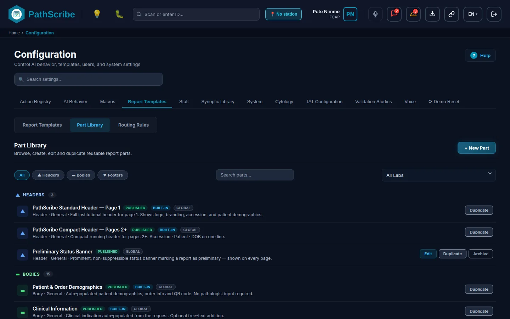
머리글, 본문, 바닥글로 묶인 파트 라이브러리
화면 표시 내용. 보관된 파트는 목록에서 숨겨집니다. 파트는 머리글, 본문, 바닥글 아래에 묶여 표시됩니다. 각 카드에는 이름, 상태 배지(초안, 게시됨 또는 보관됨), 해당되는 경우 내장 배지, 수행 검사실, 유형, 전문 분야, 설명이 표시됩니다. 카드에는 편집(내장 파트에는 없음), 복제, 예/아니요 확인이 있는 보관(내장 파트에는 없음)이 있습니다.
파트를 템플릿에서 사용할 수 있게 합니다(게시된 파트만 배치할 수 있습니다). 최종 진단 검사가 적용됩니다. 템플릿 편집기를 참조하십시오.
초안
7. 권한. 열기: screen:configuration:open. 만들기, 저장, 보관, 복제: config:report-template:manage. 게시: config:report-template:publish. 두 권한 모두 위험 수준이 높으며 감사 대상입니다. Admin과 Lab Director는 둘 다 가지고 있고, Template Author는 manage를, Template Approver는 publish를 가지고 있습니다.
환자 성별 및 NHS 번호용 템플릿 변수(Batch 662). 보고서 템플릿은 {{patient.sexAtBirth}}를 출력하며 {{patient.nhsNumber}}를 사용할 수 있습니다. 성별은 여전히 동일한 코드(M, F, U)에 미확정을 뜻하는 I를 더한 값으로 저장되므로, patient.sex == 'M'을 검사하는 템플릿은 계속 작동합니다. 환자 배너의 배지는 저장된 NHS Number Status Indicator가 01일 때만 "추적됨"으로 표시됩니다.
알려진 한계. 표준 필드는 레이블입니다. 파트를 CAP 또는 RCPath 프로토콜에 연결하지 않습니다.
1. 탐색: 구성 탭 보고서 템플릿 > 하위 탭 보고서 템플릿2. 관리 항목: 보고서 템플릿
3. 업무 목적 및 범위. 보고서 템플릿은 보고서의 구조를 정의합니다. 어떤 머리글, 본문, 바닥글 파트를 어느 슬롯에 사용할지, 그리고 (선택적으로) 검사실의 AI 지원 생성 단계를 정합니다. 템플릿의 상태는 초안, 게시됨 또는 보관됨입니다. 게시된 템플릿만 라우팅에서 선택할 수 있습니다. 목록에는 모든 템플릿이 상태, AI 생성이 켜져 있을 때의 AI 배지, 표준 수술병리 레이아웃의 표준 배지, 활성 슬롯 수, 마지막 업데이트 시각과 함께 표시됩니다.
4. 선행 조건 및 의존 관계. 템플릿은 게시된 파트로 만들어지므로 파트 라이브러리가 먼저입니다. 이를 건너뛰면 편집기의 파트 선택기에 "게시된 파트가 없습니다"가 표시됩니다. 템플릿의 스타일 패널이 기본값으로 되돌릴 수 있도록 검사실 텍스트 스타일을 설정해 두어야 합니다.
5. 화면.
상태 필터, 검색, 표준에서, 새 템플릿이 있는 보고서 템플릿 목록
6. 필드 참조.
목록 컨트롤:
필드 이름
데이터 유형 / 형식
필수/선택
설명 및 업무 로직
시스템 기본값
상태 필터
선택: 전체, 게시됨, 초안, 보관됨(각각 개수 표시)
선택
한 가지 상태를 표시합니다.
전체
검색
텍스트
선택
이름으로 필터링합니다.
비어 있음
새 템플릿(빈 템플릿으로 시작)
버튼
해당 없음
빈 초안을 만들고 편집기를 엽니다.
해당 없음
표준에서(표준 템플릿 사용)
버튼
해당 없음
표준 수술병리 레이아웃을 My Surgical Pathology Report라는 이름의 새 초안으로 복사합니다.
7. 권한. 열기: screen:configuration:open. 만들기, 저장, 복제, 삭제, 보관: config:report-template:manage. 게시: config:report-template:publish. 두 권한 모두 위험 수준이 높으며 감사 대상입니다. 보유 역할은 파트 라이브러리와 같습니다.
알려진 한계. 최종 진단 검사는 게시 전에 편집기에서 실행됩니다. 여기서의 템플릿 수명 주기는 초안, 게시됨, 보관됨이며, 시놉틱 템플릿과 같은 검토 단계는 없습니다(템플릿 검토 참조).
1. 탐색: 구성 탭 보고서 템플릿 > 하위 탭 라우팅 규칙2. 관리 항목: 템플릿 라우팅 규칙
3. 업무 목적 및 범위. 규칙은 특정 시설, 의사 또는 시놉틱 프로토콜에 대해 기본 체인(프로토콜, 그다음 세부 전문 분야, 그다음 표준)을 재정의합니다. 프로토콜 매핑을 사용하면 소프트웨어 릴리스 없이 새로운 또는 변경된 시놉틱 프로토콜을 템플릿에 매핑할 수 있습니다. 이 화면은 시스템 아래에 있는, 케이스를 병리의에게 라우팅하는 라우팅 규칙 화면과 다릅니다.
4. 선행 조건 및 의존 관계. 규칙은 게시된 템플릿, 시설, 의사, 프로토콜을 가리킵니다. 템플릿을 건너뛰면 보고서 템플릿 목록이 비어 있습니다. 프로토콜 매핑은 시놉틱 라이브러리에 있는 프로토콜 중에서 선택하므로 검토 대기열 작업을 마친 뒤에 가장 유용하며, 규칙은 나중에 추가할 수 있습니다.
5. 화면.
시설, 의사, 프로토콜 섹션과 테스트 패널이 있는 템플릿 라우팅 규칙
6. 필드 참조.
필드 이름
데이터 유형 / 형식
필수/선택
설명 및 업무 로직
시스템 기본값
시설 재정의
규칙 목록
선택
0단계와 0a단계입니다. 자체 규칙이 없는 제휴 시설은 상위 엔터프라이즈의 규칙을 사용합니다.
없음
의사 선호도
규칙 목록
선택
0b단계입니다.
없음
프로토콜 매핑
규칙 목록
선택
1단계입니다. 기본 제공 프로토콜 표를 보완하며 그보다 우선합니다.
없음(기본 제공 표만 사용)
우선순위 패널
읽기 전용 목록
해당 없음
각 단계와 관리자 정의 또는 관리자 확장 가능 여부를 표시하며, 마지막 테스트를 결정한 단계가 강조 표시됩니다.
7. 권한. 열기: screen:configuration:open. 추가, 변경, 삭제: config:template-routing:manage(위험 수준 높음, 감사 대상). Admin과 Lab Director가 가지고 있으며, Template Author와 Template Approver는 가지고 있지 않습니다.
알려진 한계. 세부 전문 분야 표와 표준 표(2단계와 3단계)는 기본 제공이며 여기에서 편집할 수 없습니다. 예비 보고서 게이트는 기본 제공입니다.
3. 업무 목적 및 범위. 자유 텍스트 편집기가 병리의의 도구 모음에 제공하는 글꼴을 제어합니다(보고서 편집기, 서술 편집기, 매크로 편집기, 코멘트 창이 이 목록을 읽습니다). 꺼진 글꼴은 목록에 남아 있지만 사용자에게는 숨겨집니다. 글꼴 풀은 세 그룹, 14개 글꼴로 고정되어 있습니다. 여기에서 글꼴 이름을 추가할 수 없습니다.
4. 선행 조건 및 의존 관계. 없음. 이 설정은 도구 모음만 필터링합니다. 검사실의 기본 보고서 글꼴은 바꾸지 않습니다. 기본 글꼴은 문서 스타일에서 설정하며, 문서 스타일은 7개 글꼴로 이루어진 자체의 더 짧은 목록을 제공하고 이 목록을 읽지 않습니다.
7. 권한. 열기: screen:configuration:open. 변경: config:report-appearance:manage(위험 수준 높음, 감사 대상). 이 권한이 없으면 섹션이 회색으로 표시되어 보기만 가능합니다. Admin과 Lab Director가 기본적으로 가지고 있습니다.
알려진 한계. 알려진 한계는 없습니다.
3. 업무 목적 및 범위. 모든 보고서의 머리글, 본문, 바닥글에 대한 검사실의 기본 텍스트 스타일과 검사실의 용지 크기 및 인쇄 여백을 설정합니다. 템플릿 자체의 스타일 패널은 해당 템플릿에 대해 기본값을 재정의하고, 구성 요소의 레이블 서식은 둘 다 재정의합니다. 크기는 인쇄되는 크기인 포인트 단위로 저장되며, 8 pt 미만으로는 인쇄되지 않습니다. 포인트 단위가 도입되기 전에 저장된 스타일은 픽셀 단위로 보관되고(1픽셀은 0.75 pt로 인쇄됩니다), 변환하기 전까지는 이전과 같이 인쇄됩니다.
4. 선행 조건 및 의존 관계. 없음. 각 템플릿이 올바른 기본값에서 시작하도록 템플릿을 만들기 전에 설정하십시오.
5. 화면.
머리글, 본문, 바닥글 스타일과 페이지 설정이 있는 문서 스타일
6. 필드 참조. 같은 다섯 가지 스타일 필드가 머리글, 본문, 바닥글마다 한 번씩 나타납니다.
필드 이름
데이터 유형 / 형식
필수/선택
설명 및 업무 로직
시스템 기본값
글꼴 종류(머리글, 본문, 바닥글)
선택: Arial, Helvetica, Times New Roman, Georgia, Calibri, Verdana, Courier New
선택
해당 영역의 기본 보고서 글꼴입니다.
Arial
글꼴 크기(pt)
포인트 수, 최소 8
선택
인쇄되는 크기입니다. 스타일이 아직 픽셀 단위이면 힌트와 함께 "글꼴 크기(px, 포인트 도입 전에 저장됨)"로 표시됩니다.
본문 10, 머리글 11, 바닥글 10
굵게
예/아니요 스위치
선택
머리글은 켜짐, 본문과 바닥글은 꺼짐
밑줄
예/아니요 스위치
선택
꺼짐
텍스트 변환
선택: 입력한 그대로, 첫 글자 대문자, 대문자
선택
입력한 그대로
미리보기
읽기 전용 샘플 텍스트
해당 없음
선택한 스타일을 실시간으로 보여 줍니다.
해당 없음
포인트로 변환
버튼, 픽셀로 저장된 스타일에만 표시
해당 없음
각 크기와 인쇄될 크기를 나열한 확인 창을 엽니다. 숫자는 그대로 유지되고 이제 포인트를 뜻하므로 텍스트가 더 크게 인쇄됩니다. 감사 로그에 기록됩니다.
해당 없음
용지 크기
선택: A4(210 x 297 mm), US Letter(216 x 279), US Legal(216 x 356), A3(297 x 420), B5(176 x 250)
선택
검사실의 용지 크기입니다. 템플릿 미리보기는 이 크기로 열립니다.
A4
위, 오른쪽, 아래, 왼쪽 여백(mm)
5에서 50 사이의 정수
선택
인쇄 여백입니다.
위 25, 오른쪽 20, 아래 25, 왼쪽 20
7. 권한. 열기: screen:configuration:open. 변경: config:report-appearance:manage(위험 수준 높음, 감사 대상)이며, 화면에서뿐 아니라 서비스에서도 확인합니다. Admin과 Lab Director가 가지고 있습니다.
알려진 한계. 개발용 보고서 렌더러(functions/)는 여전히 A4로 인쇄하며 아직 검사실의 용지 크기를 읽지 않습니다. 이 설정은 렌더 페이로드로 전송되므로 운영 서버가 사용할 수 있습니다. 용지 크기와 여백은 프린터 용지에 따라 정해지는 검사실의 정책이며 개인의 선택이 아닙니다.
3. 업무 목적 및 범위. 이 사이트에서 시놉틱 템플릿(시놉틱 라이브러리)을 승인하고 게시할 수 있는 사람을 정합니다. 자체의 간단한 초안, 게시, 보관 수명 주기를 가진 보고서 템플릿은 다루지 않습니다. 두 가지 설정이 적용되며 고정 규칙이 하나 있습니다. 진단용 시놉틱 템플릿은 필드 수준 SNOMED 적용률이 80% 미만이면 게시할 수 없습니다. 육안 검사 체크리스트와 같은 절차용 템플릿은 코드화되지 않으므로 예외입니다.
4. 선행 조건 및 의존 관계. 기본 제공 역할인 Template Author, Template Approver, Lab Director, Admin이 업무를 수행하므로 직원 역할을 먼저 설정해야 합니다. 이를 건너뛰면 승인에 승인자 권한이 필요하기 때문에 아무도 템플릿을 승인할 수 없습니다.
5. 화면.
자가 승인과 필요한 검토자 수가 있는 템플릿 검토
6. 필드 참조.
필드 이름
데이터 유형 / 형식
필수/선택
설명 및 업무 로직
시스템 기본값
템플릿 자가 승인 허용
예/아니요 스위치
선택
끔(권장): 작성자는 자신이 작성하거나 편집한 템플릿을 승인하거나 게시할 수 없습니다. 템플릿을 저장한 사람은 모두 작성자로 간주됩니다. 1인 기관, 소규모 사이트 또는 테스트용으로만 켜십시오.
꺼짐
필요한 검토자 수
선택: 독립 검토자 1명, 2명 또는 3명
선택
템플릿을 게시하기 전에 필요한 승인 수입니다. 각 승인은 (자가 승인이 켜져 있지 않은 한) 해당 템플릿의 작성자가 아닌 서로 다른 Template Approver, Lab Director 또는 Admin이 해야 합니다.
1
SNOMED 기준
읽기 전용 텍스트, 80%
해당 없음
부제목에 표시됩니다. 편집할 수 없습니다.
80%
7. 권한. 열기: screen:configuration:open. 변경: config:template-governance:manage(위험 수준 높음, 감사 대상이며, 변경은 이전 값과 새 값과 함께 기록됩니다). Admin이 기본적으로 가지고 있고 Lab Director는 가지고 있지 않으므로, Lab Director가 관리해야 한다면 직원 > 역할에서 권한을 부여하십시오. 이 권한이 없으면 화면에 설정을 볼 수는 있지만 변경할 수 없다는 안내가 표시됩니다.
알려진 한계. 알려진 한계는 없습니다.
시놉틱 라이브러리에는 병리의가 암 및 기타 보고를 위해 작성하는 구조화된 체크리스트(프로토콜)가 들어 있습니다. 보고서 템플릿과는 별개입니다. 프로토콜은 질문과 그 코드화를 정의하고, 보고서 템플릿은 보고서의 모양을 정의합니다. 라우팅 규칙 화면이 이 둘을 연결합니다.
현재 라이브러리에 실제로 들어 있는 것(먼저 읽으십시오). 데모 데이터에서 레지스트리에는 36개 프로토콜이 있습니다. 게시됨 32개, 검토 중 3개, 초안 1개입니다. 출처별로는 Custom이 23개, PathScribe가 13개입니다. 라이선스를 받은 CAP 또는 RCPath 체크리스트는 하나도 없습니다. CAP, RCPath, ICCR이라는 이름은 업로드 창의 출처 레이블과 관리 기관의 이름으로만 존재합니다. "Generic Template"이라는 이름의 19개 항목(유방, 폐, 전립선, 대장, 신장, Wilms, 흑색종 등)은 버전 0.1.0-generic의 자리 표시자입니다. 나머지는 두 개의 일반 시놉틱 테스트 양식, Mohs와 경부 곽청술 같은 PathScribe 양식, 내과 간, 태반, 신장 이식 양식, 부검 육안 검사, 세 가지 표준 육안 검사 경로, 그리고 다섯 가지 세포병리 보고 체계(Bethesda 갑상선, Milan 침샘, Paris 요로, Papanicolaou 췌담관, 림프절 FNA)입니다. CAP 프로토콜이 필요한 병원은 CAP 자체의 라이선스에 따라 이를 입수하여 아래의 경로로 가져와야 합니다.
파일 형식을 검사하고 섹션과 질문의 수를 표시합니다. 아직 가져올 수 없으며, 내용은 CAP 또는 RCPath에 대해 검증되지 않습니다.
편집기에서 프로토콜 만들기
구현됨
빌드 / 사용자 지정은 처음부터 또는 기존 프로토콜의 사본에서 시작합니다.
기존 프로토콜의 새 버전 로드
구현됨
새 버전은 다음 버전 번호로 편집기를 엽니다. 이를 게시하면 원본이 된 버전은 보관됩니다.
CAP, RCPath 또는 ICCR 업데이트의 자동 야간 동기화
미구현
관리 기관 화면에는 기관별 자동 동기화 스위치가 있고 업로드 창과 알림 문구에서도 야간 동기화를 언급하지만, 이 빌드에는 동기화 작업이 없으며 서버 작업 목록에도 없습니다. 알림 규약(TEMPLATE_NOTIFICATIONS_API.md)은 향후 동기화 작업이 보낼 메시지를 설명합니다. 그때까지는 업데이트를 수동으로 로드하십시오.
프로토콜 폐기
구현됨
보관은 새 보고서에서 이를 제거하며, 이미 작성된 보고서는 내용이 유지됩니다. 초안으로 복원은 검토와 재게시를 위해 이를 되돌립니다.
수명 주기. 초안, 검토 중, 변경 필요, 승인됨, 게시됨, 보관됨. 작업 이름은 출처를 따릅니다. CAP의 경우 승인 단계는 수락, 게시 단계는 배포이고, RCPath의 경우 인준과 게시이며, Custom, PathScribe, ICCR의 경우 승인과 게시입니다. 거버넌스(자가 승인, 검토자 수, 80% SNOMED 규칙)는 템플릿 검토에서 설정합니다.
1. 탐색: 구성 탭 시놉틱 라이브러리 > 검토 대기열2. 관리 항목: 게시 전에 대기 중인 프로토콜
3. 업무 목적 및 범위. 게시 이전 상태(검토 중, 변경 필요, 승인됨)에 있는 모든 프로토콜을 해부학적 범주별로 묶어 나열하며, 각 상태의 개수 타일이 있습니다. 배너가 규칙을 다시 안내합니다. 템플릿은 게시하기 전에 최소 80%의 SNOMED 적용률과 임상 서명이 필요합니다. 카드를 클릭하면 검토자(검토 중, 승인됨) 또는 편집기(변경 필요)가 열립니다. 초안 프로토콜은 여기에 나타나지 않으며, 전체 프로토콜에서 찾을 수 있습니다.
4. 선행 조건 및 의존 관계. 검토 설정과 업무를 수행하는 역할이 필요합니다. 이를 건너뛰면 사용자에게 권한이 없거나 한 명의 작성자가 자신의 작업을 승인하려 하기 때문에 승인이 거부됩니다.
7. 권한. 초안 작성, 가져오기, 빌드, 저장, 제출: config:protocol:draft. 승인 및 변경 요청 반환: config:protocol:approve. 게시: config:protocol:publish. 폐기(보관, 복원): config:protocol:retire. 모두 위험 수준이 높으며 감사 대상입니다. Template Author는 draft를, Template Approver는 approve, publish, retire를 가지고 있으며, Admin은 네 가지를 모두, Lab Director는 draft를 제외한 모두를 가지고 있습니다. 제출, 반환, 승인, 게시는 각각 알림을 보냅니다(승인자, 작성자 등에게).
알려진 한계. 검토자와 편집기는 별도의 전체 페이지(/template-review/:id, /template-editor/:id)입니다. 필드별 참조는 이 장의 15개 화면에 포함되지 않습니다. 템플릿 편집기 필드를 참조하십시오.
형식이 유효한지 알려 주고, 문제를 나열하며, 내용이 CAP 또는 RCPath에 대해 검증되지 않았음을 항상 명시합니다. PathScribe JSON 프로토콜만 가져올 수 있습니다. CAP eCC(SDC) XML 양식이나 Excel 통합 문서는 검사되지만 "여기에서 검사할 수는 있으나 아직 가져올 수 없습니다".
해당 없음
초안으로 가져오기
버튼
해당 없음
초안을 저장합니다. 같은 이름의 프로토콜이 있거나 config:protocol:draft가 없으면 거부됩니다.
편집기는 전체 페이지입니다. 아래에 템플릿 메타데이터블록이 있으며, 섹션과 필드에는 더 많은 설정이 있습니다(필드 유형, SNOMED와 ICD 코드가 있는 답변 옵션, 조건, 개수 규칙, 보고 역할 pT, pN, pM, FIGO 병기 및 블록 식별자). 해당 페이지의 전체 참조는 가이드의 미해결 과제입니다.
서명 후 보고서에 일어나는 일은 세 가지 설정이 정합니다. 전달 구성 규칙이 채널을 고르고, 인쇄 대상 라우팅 규칙이 인쇄 채널의 프린터를 고르며, 전송 일정이 시간을 고릅니다. 네 번째 화면인 내 내보내기에는 사용자가 요청한 파일이 나열됩니다.
채널별 상태.
채널
상태
현재 구현 내용
팩스
구현됨
전달 규칙에서 채널을 팩스 번호(7~15자리 숫자, 선택적으로 앞에 +)가 있는 전자 팩스로 설정할 수 있습니다. PathScribe는 서명된 PDF와 그 세부 정보를 REPORT_DELIVERY 메시지로 인터페이스 서버에 보내고, 서버가 이를 이메일-팩스 게이트웨이에 넘깁니다. 게이트웨이는 PathScribe가 아니라 서버에서 설정합니다. 서버에 팩스 채널이 없으면 503으로 응답하고 전달은 그 사유와 함께 실패합니다. 규약: REPORT_DELIVERY_API.md, 개발용 수신기: functions/report_delivery.py. 최대 PDF 크기는 20 MB입니다.
포털
미구현
전달 규칙에는 포털 채널이 없습니다. 시설 레코드에는 전달 방법 선택(이메일, 팩스, 포털, HL7)이 있으나 저장만 되며 보고서를 보낼 때 이를 읽는 곳은 없습니다.
보안 이메일
데모
전달 규칙의 채널이 아닙니다. 사용자가 창에서 케이스에 연결된 보안 메시지를 시작하며, 메시지는 시뮬레이션 보낸 편지함으로 전달되고 건물 밖으로는 아무것도 나가지 않습니다. 실제 메일 채널은 연결되어 있지 않습니다.
3. 업무 목적 및 범위. 발행된 보고서를 각각 어떻게 보낼지, 즉 결과 메시지로 보낼지, 인쇄할지, 팩스로 보낼지, 파일 대상에 전달할지, 수동 수령을 위해 보류할지를 정합니다. 규칙은 제공자, 의뢰 시설, 환자 위치(진료 현장), 보고서 유형으로 일치시킵니다. 가장 많은 필드가 일치하는 규칙이 우선합니다. 일치하는 규칙이 없으면 보고서는 전자 전용으로 전송됩니다. 이 화면에는 사이트의 자동 재시도 설정과 테스트 패널도 있습니다.
4. 선행 조건 및 의존 관계. 규칙은 제공자, 시설, 위치를 가리키며, 인쇄 채널에는 인쇄할 곳이 필요합니다. 시설과 의사를 건너뛰면 기준 목록이 비어 있습니다. 인쇄 라우팅을 건너뛰면 인쇄 작업은 시설 자체의 기본 대상으로 대체됩니다.
5. 화면.
규칙 표, 재시도 설정, 테스트 패널이 있는 전달 구성 규칙
6. 필드 참조.
화면 컨트롤:
필드 이름
데이터 유형 / 형식
필수/선택
설명 및 업무 로직
시스템 기본값
규칙 표: 기준, 채널, 메모
읽기 전용 목록
해당 없음
기준은 제공자, 시설, 위치, 보고서로 표시되거나 "모든 케이스와 일치(최저 우선순위)"로 표시됩니다. 채널은 기본, 보조, 대체 목록으로 표시되거나 "전송하지 않음"으로 표시됩니다.
비어 있음: 모든 케이스가 전자 전용으로 결정됨
규칙 추가
버튼
해당 없음
규칙 창을 엽니다.
해당 없음
편집, 삭제
행 버튼
해당 없음
해당 없음
자동 재시도: 각 재시도 전 대기 시간(분)
쉼표로 구분한 정수 분, 각각 1~1,440, 최대 10개
선택
실패한 인쇄, 팩스 또는 파일 전달은 각 대기 시간이 지난 뒤 차례로 다시 시도됩니다. 마지막 시도 후에는 전송 예외로 이동하고, Admin과 Lab Director에게 메시지가 전송되며, 규칙의 대체 채널로 전송됩니다. 비워 두면 재시도하지 않습니다.
일치한 규칙, 결정된 작업(전자 전용, 인쇄 전용, 이중 전달, 보류)과 채널 계획을 표시합니다. 일치하는 규칙이 없으면 기본값인 전자 전용이 적용된다고 알려 줍니다.
해당 없음
7. 권한. 열기: screen:configuration:open. 규칙 추가, 변경, 삭제 및 재시도 저장: config:delivery-rules:manage(위험 수준 높음, 감사 대상). Admin과 Lab Director가 가지고 있습니다. 실패한 전달의 재전송에는 인쇄 대기열 또는 발신 화면과 각 화면의 자체 권한을 사용합니다.
알려진 한계. 팩스와 파일 전달에는 인터페이스 서버에 해당 채널과 대상이 설정되어 있어야 합니다. 포털은 구현되어 있지 않습니다. 보안 이메일은 여기서 채널이 아닙니다.
3. 업무 목적 및 범위. 인터페이스별로 엔터프라이즈 전체에 대해 항목이 언제 나가는지를 정하며, 수행 시설에 대한 재정의를 선택적으로 둘 수 있습니다. 등록처에는 각각 일정이 있습니다. PathScribe는 항목이 대기열을 언제 떠날 수 있는지를 결정하고, 인터페이스 엔진은 어떻게 전송할지를 결정합니다. 인터페이스: 보고서 전송, 청구 전송, 결과 인터페이스, 입원 인터페이스(ADT), 접수 인터페이스, LIS 동기화, 등록처. 부분 구현: 일정은 저장되고, 결정되고, 평가되며, 발신 대기열에는 각 항목의 예정 시각과 보고 기한 표시가 나타납니다. 규약에 따르면 운영 서버는 항목을 넘기기 전에 같은 규칙을 적용해야 하며, 브라우저 또는 개발 빌드는 정해진 시각이 될 때까지 전송을 보류하지 않습니다.
4. 선행 조건 및 의존 관계. 시설 재정의는 시설 목록에서 선택하므로 시설이 먼저 필요합니다. 이를 건너뛰면 엔터프라이즈 일정만 설정할 수 있습니다.
5. 화면.
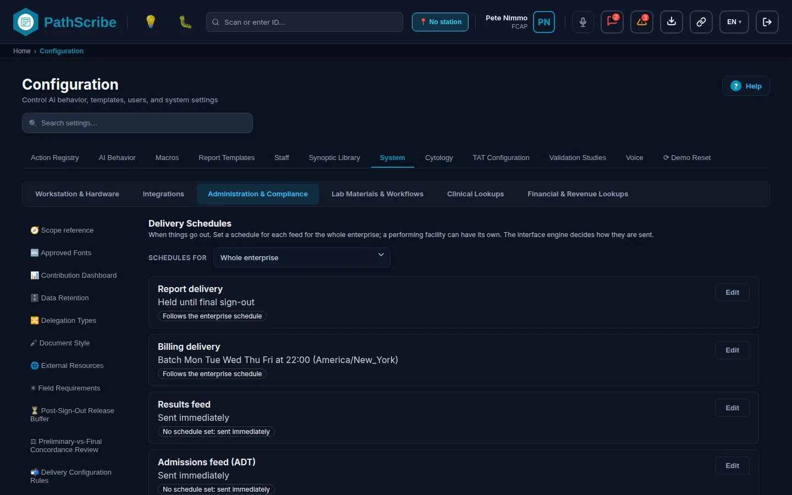
엔터프라이즈 및 시설 범위가 있는 인터페이스별 전송 일정
6. 필드 참조.
화면 컨트롤:
필드 이름
데이터 유형 / 형식
필수/선택
설명 및 업무 로직
시스템 기본값
일정 대상
선택: 엔터프라이즈 전체 또는 하나의 수행 시설
선택
편집 중인 범위입니다.
엔터프라이즈 전체
인터페이스 카드: 요약 및 출처
읽기 전용 텍스트
해당 없음
요약은 예를 들어 "일괄 월, 수 06:00 (America/New_York)"로 표시됩니다. 출처는 "설정된 일정 없음: 즉시 전송", "엔터프라이즈 일정을 따름" 또는 "이 시설에 설정됨"으로 표시됩니다.
"전송됩니다." 또는 "대기합니다."로 답하며, 사유와 다음 전송 기회를 함께 표시합니다.
해당 없음
7. 권한. 열기: screen:configuration:open. 변경: config:delivery-schedules:manage(위험 수준 높음, 인터페이스, 시설, 등록처 및 종류별로만 감사하며 환자 데이터는 없음). Admin과 Lab Director가 가지고 있습니다.
알려진 한계. 등록처 대상, 필수 필드, 운영 개시 승인 및 전송은 일정이 아니라 등록처 자체의 설정에 속합니다. DELIVERY_SCHEDULES_API.md를 참조하십시오.
1. 탐색: 구성 탭 시스템 > 그룹 관리 및 규정 준수2. 관리 항목: 인쇄 대상 라우팅 규칙
3. 업무 목적 및 범위. 발행된 보고서의 인쇄 작업을 어느 네트워크 프린터로 보낼지 정합니다. 규칙의 범위는 계층입니다. 워크스테이션/사용자, 위치, 고객 계정(의뢰 기관) 또는 시설(수행 검사실)입니다. 일치하는 활성 규칙이 있는 가장 구체적인 계층이 덜 구체적인 계층보다 완전히 우선합니다. 한 계층 안에서는 규칙을 검체 또는 케이스 유형과 이벤트 트리거로 좁힐 수 있습니다. 일치하는 규칙이 없으면 작업은 시설 자체의 기본 대상으로 갑니다.
4. 선행 조건 및 의존 관계. 규칙은 사이트 에이전트 또는 주소를 통해 접근하는 프린터와, 워크스테이션, 위치, 시설에서 고른 범위를 지정합니다. 사이트 에이전트를 건너뛰면 프린터 주소만 지정할 수 있습니다. 시설 규칙은 해당 시설 자체의 사이트 에이전트 프린터를 사용해야 합니다.
5. 화면.
표와 테스트 패널이 있는 인쇄 대상 라우팅 규칙
6. 필드 참조.
화면 컨트롤:
필드 이름
데이터 유형 / 형식
필수/선택
설명 및 업무 로직
시스템 기본값
규칙 표: 범위, 조건, 대상, 메모
읽기 전용 목록
해당 없음
조건은 "검체: ...", "트리거: ..." 또는 "이 계층의 모든 작업과 일치"로 표시됩니다.
일치한 규칙과 그 계층, 그리고 결정된 대상을 표시합니다. 일치하는 규칙이 없으면 작업이 시설의 기본 대상으로 대체된다고 알려 줍니다.
해당 없음
7. 권한. 열기: screen:configuration:open. 추가, 변경, 삭제: config:print-routing:manage(위험 수준 높음, 감사 대상). 사이트의 에이전트 프린터를 지정하는 것과 그 프린터를 보는 것은 해당 사이트에서 확인합니다. Admin과 Lab Director가 가지고 있습니다.
알려진 한계. 시설의 기본 대상과 인쇄 모드(QZ Tray 지정 프린터, 인터페이스 엔진 전달, 또는 직접 네트워크 인쇄), 그리고 용지 크기는 여기가 아니라 시설 사전의 시설 레코드에 있는 인쇄 탭에서 설정합니다. 직접 네트워크 인쇄에는 병원 네트워크 안에 있는 PathScribe 서버 또는 사이트 에이전트가 필요하며, 브라우저는 프린터 소켓을 열 수 없습니다.
1. 탐색: 상단 표시줄의 내보내기 버튼이며, 다운로드할 수 있는 내보내기의 개수를 표시합니다. 이 버튼은 API 서버가 연결되어 있을 때만 나타나며, 데모에서는 /my-exports에서 페이지를 여십시오.
2. 관리 항목: 로그인한 사용자 본인의 내보내기 파일
3. 업무 목적 및 범위. 대용량 내보내기(QA, 감사, 폐기, 검색 보고서)는 백그라운드 작업으로 준비됩니다. 사용자가 요청하면 파일이 준비되었을 때 알림을 받고 여기에서 다운로드합니다. 파일은 7일 동안 보관되며 요청한 사용자만 다운로드할 수 있습니다. 이 데모에서는 내보내기가 즉시 다운로드되므로 목록은 보통 비어 있습니다. 배너는 시뮬레이션된 서버임을 표시합니다. 내보내기는 브라우저에서 준비되며 로그아웃할 때까지만 보관됩니다. API 규약은 ASYNC_EXPORT_API.md이며, PathScribe 서버가 연결되면 대용량 내보내기는 그곳에서 준비되어 완료되었을 때 여기에 나타납니다.
4. 선행 조건 및 의존 관계. 열기 위해 필요한 것은 없습니다. 내보내기는 해당 내보내기 권한이 부여된 경우에만 나타나므로(예: qa:deficiencies:export), 필요한 사람에게는 직원 역할에서 해당 권한을 부여하십시오.
5. 화면.
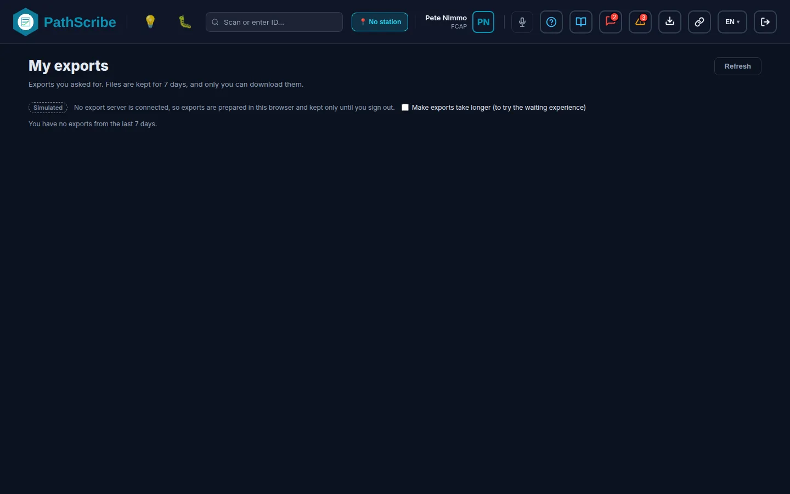
상태, 행 수, 다운로드가 있는 내 내보내기 목록
6. 필드 참조.
필드 이름
데이터 유형 / 형식
필수/선택
설명 및 업무 로직
시스템 기본값
내보내기
읽기 전용 텍스트
해당 없음
내보내기의 제목입니다.
해당 없음
요청 시각
읽기 전용 날짜 및 시각
해당 없음
해당 없음
상태
읽기 전용: 대기 중, 준비 중, 준비됨, 실패, 취소됨, 만료됨
해당 없음
해당 없음
행
읽기 전용 숫자
해당 없음
해당 없음
삭제 예정
읽기 전용 날짜
해당 없음
요청 후 7일째입니다.
해당 없음
작업: 다운로드, 취소
버튼
해당 없음
준비됨 상태에서 다운로드하고, 대기 중 또는 준비 중에는 취소합니다.
해당 없음
새로 고침
버튼
해당 없음
해당 없음
내보내기를 오래 걸리게 하기(대기 화면 체험용)
예/아니요 스위치, 시뮬레이션된 서버에서만 표시
선택
데모용 컨트롤입니다.
꺼짐
7. 권한. 이 페이지는 로그인한 사용자이면 충분하며, 그 사용자 본인의 내보내기를 나열합니다. 각 내보내기는 자체 ...:export 권한에 따라 요청되며, 이 권한은 위험 수준이 높고 행 수와 함께 DOCUMENT_EXPORTED로 감사됩니다.
알려진 한계. 서버 측은 연결되어 있지 않습니다. 구성 내보내기(사전, 크로스워크, 의사 목록)는 작아서 브라우저에 남으며 여기에 나타나지 않습니다. 예약된 저장 보고서 실행(검색 페이지, 보고서 > 일정)은 시뮬레이션이며 아무것도 전송하지 않습니다. 이 기능에는 SCHEDULED_REPORTS_API.md에 별도의 규약이 있습니다.
인쇄 대기열 화면의 버튼으로, 창의 시작과 종료(24시간 시각, UTC로 해석)와 그룹화 선택(고객 계정 또는 전달 경로)이 있습니다. 해당 창에서 서명된 대기 중의 비인터페이스 작업을 공유 일괄 ID로 묶습니다. 누군가 누를 때만 실행됩니다. print.batchAggregation이라는 반복 작업이 고정된 간격 없이 서버 작업 목록에 나타나지만, 이 빌드에는 시간표가 설정되어 있지 않습니다.
배치 관리 > 라벨 재인쇄: 접수 일자 또는 번호로 케이스를 찾고, 카세트, 검체 용기 또는 의뢰서를 선택하고, 카세트 프린터를 선택하여 라벨을 한 장씩 재인쇄합니다. 모든 라벨은 감사되며, 실패한 라벨은 다시 시도할 수 있습니다. label:batch:reprint가 필요합니다.
저장된 케이스 검색 보고서는 검색 페이지의 보고서 > 일정에서 예약(매일, 매주 또는 매월)할 수 있습니다. 실행은 시뮬레이션이며 아무것도 전송하지 않습니다. 대용량 내보내기는 백그라운드 작업으로 실행되며 내 내보내기에 나열됩니다.
SCHEDULED_REPORTS_API.md, ASYNC_EXPORT_API.md
서버 작업(대기열 상태, 데드 레터, 재큐)
구현됨, 읽기 및 재큐만 가능
시스템 로그 > 서버 작업. 작업 종류(인터페이스 전송, 전달 시도, 인쇄 전송, 보류된 보고서 해제, 수가 전송, 내보내기 생성, 이벤트)와 각 반복 작업의 실행 간격을 표시합니다. jobs:server-job:view가 필요하며, 데드 레터 작업을 재큐하려면 jobs:server-job:requeue가 필요합니다.
서버가 현재 나열하는 반복 작업(실행 간격, 분): 전달 재시도 점검(0.5), 해제 예정 점검(0.25), 자문 링크 만료(5), 등록처 지연 에스컬레이션(60), 후속 조치 일일 알림(1440), 지원 접근 만료(5), 세포병리 조직학 상관 점검(1440), LIS 폴링(자체 일정), 인쇄 일괄 집계(자체 일정), 세포병리 ROSESLA 모니터(5), 메시지 버스 정리(1440).
일괄 작업의 설정 순서. 서버 작업은 설정할 것이 없습니다. 인쇄의 경우 인쇄 대상 라우팅 규칙을 마친 다음 인쇄 대기열을 확인하십시오. 라벨 재인쇄의 경우 먼저 프린터 프로필에서 카세트 프린터를 설정하십시오. 이 작업을 수행하는 사람에게는 직원 역할에서 label:batch:reprint와 print:job:* 권한을 부여하십시오.
이 장에서는 PathScribe가 다른 시스템과 메시지를 주고받는 방식을 설명합니다. 다른 시스템에는 병원의 전자 의무기록(EHR), 검사실 정보 시스템(LIS), 참조 검사실, 청구 시스템, 등록처, 보고 도구가 포함됩니다. 또한 관리자가 이러한 교환을 모니터링하고 실패한 건을 처리하는 데 사용하는 화면도 다룹니다.
각 부분을 중심으로 프로젝트를 계획하기 전에 해당 부분의 상태를 확인하십시오. 이 단계의 상당 부분은 계약이 작성되어 있고 브라우저 측이 구현되어 있지만, 서버와 상대편 인터페이스 엔진은 아직 연결되지 않았습니다. 구현되지 않은 부분에는 해당 절에 미구현 또는 예정이라고 표시하고, 현재 존재하는 가장 가까운 기능을 함께 밝힙니다.
이 장의 원칙. 무엇을 언제 보낼지는 PathScribe가 결정합니다. 어떻게 보낼지는 인터페이스 엔진이 결정합니다. 여기에는 HL7 텍스트, 연결, 전송 구간의 재시도, 공급업체 고유의 표현이 포함됩니다. PathScribe는 공급업체의 필드 이름이나 코드를 번역하지 않으며, 어떤 EHR에 대해서도 인증된 커넥터라고 주장하지 않습니다.
6단계는 대부분 선택 사항입니다. LIS, 등록처 피드, 보고 도구 없이 PathScribe를 단독으로 운영하는 검사실은 이 단계 전체를 건너뛰어도 됩니다. 사용하는 통합에 대해서만 아래 단계를 이 순서대로 수행하십시오. 각 단계에는 먼저 설정해야 하는 화면(1~5단계)이 명시되어 있으며, 같은 정보가 각 화면의 "설정 순서" 상자에도 표시됩니다.
검체 코드 매핑: 수신 주문이 처리되도록 각 송신 시설의 자체 검체 코드를 귀 검사실의 검체 사전에 매핑합니다. 시설 사전과 검체 사전이 필요합니다.
인터페이스 사전 (ForMedrixAI 직원 전용): 공급업체 고유의 필드를 기술합니다. 고객은 이 단계를 수행하지 않습니다. 번호가 빠짐없이 이어지도록 목록에 포함했습니다.
LIS 수신(어시스트 모드): LIS가 케이스를 소유하고 PathScribe가 AI 초안으로 지원하는 검사실을 위한 단계입니다. AI 동작과 개요 라이브러리가 필요합니다.
이 가이드의 개요에서는 인터페이스 계층을 PathScribe 인터페이스 엔진(PIE)이라고 부릅니다. 이 이름은 제품, 제품의 화면, 설계 문서 어디에도 나타나지 않으며, 이 가이드는 제품 이름을 새로 만들지 않습니다. 제품에는 개요가 설명하는 일을 함께 수행하는 두 가지가 있습니다.
PathScribe 측. 애플리케이션의 서비스가 무엇을 언제 보낼지 결정하고, JSON 메시지를 만들고, 대기열에 넣고, 결과를 기록하며, 관리자가 메시지를 다시 보내거나 보류하거나 해제할 수 있게 합니다. 이 장에서 클릭할 수 있는 모든 것은 이 측에 있습니다.
인터페이스 엔진. 설계에서는 Mirth Connect의 오픈 소스 포크인 BridgeLink를 엔진으로 사용합니다. 엔진은 PathScribe의 JSON을 HL7(또는 다른 형식)으로 변환하고, 자체 메시지 저장소를 보유하며, 수신 시스템으로 전송하고, 회신을 받습니다. BridgeLink는 설계 문서(INTERFACE_ENGINE_EDGE.md)에서 쓰는 작업 명칭입니다. 채널 템플릿은 예정이며 구현되지 않았습니다.
엔진은 하나의 컨테이너 이미지이며 병원별로 선택하여 두 곳에서 사용합니다(결정 D6). ForMedrixAI가 테넌트의 지역에서 엔진을 호스팅하거나, 병원 내부의 가상 머신에 엔진을 설치할 수 있습니다. 인터페이스 엔진 화면에는 각 엔진이 둘 중 어느 쪽인지(호스팅 또는 현장)가 표시됩니다. 이미지, 채널 템플릿, 상태 확인 엔드포인트는 서버 팀과 함께 예정되어 있습니다.
HL7 메시지는 SQL Server 메시지 버스로 이동하지 않습니다(결정 D1). API 서버는 interface.dispatch 유형의 작업으로 메시지를 엔진에 넘기며, 엔진은 HL7을 자체 메시지 저장소에 보관합니다.
브라우저는 {queueEntryId, transactionType, dispatchedAt, payload}를 빌드 설정 VITE_INTERFACE_RECEIVER_ENDPOINT의 주소로 전송합니다. 운영 빌드에서는 주소가 https여야 하며, 주소가 없거나 일반 HTTP이면 아무것도 전송하기 전에 거부됩니다. 대기 시간은 15초입니다.
전송된 것으로 간주하는 기준
구현됨 (브라우저 측)
2xx 응답이면 메시지가 전송된 것으로 표시됩니다. 아직 HL7 확인 응답(ACK)은 없습니다. 시간 초과, 엔진에 연결할 수 없음, 거부는 화면에서 서로 다른 세 가지 오류입니다.
예정된 재시도 구간. 계약에 따르면 수신 메시지는 10초, 30초, 1분, 5분, 15분 동안 대기하며 24시간 후에 데드 레터가 됩니다. 송신 메시지는 1분, 5분, 15분, 60분에 다시 보내고, 이후 24시간 동안 매시간 다시 보냅니다. 등록처 제출 건은 72시간 동안 보관합니다. AA 확인 응답이 전송됩니다. CA는 전송되거나 애플리케이션 확인 응답을 기다립니다. AR과 CE는 구간 내에서 재시도하며, AE와 CR은 즉시 실패합니다. 데드 레터가 된 결과는 같은 케이스의 이후 메시지를 보류합니다. 이 중 현재 실행되는 것은 없습니다. 현재는 전송에 실패하면 관리자가 다시 보낼 때까지 대기합니다.
시설 편집기(1단계, 시설 사전)에는 LIS 연동 탭이 있습니다. 이 탭에는 엔진 주소, HL7 버전, 인증 유형(없음, 기본, OAuth2 또는 API 키), 자격 증명이 프로비저닝되었는지 나타내는 플래그, LIS가 케이스 상태를 소유하는지 여부, PathScribe가 최종 확정 후 작업을 허용하는지 여부, 송신 시설과 수신 시설의 라우팅 식별자, 송신 채널 재정의가 저장됩니다. 이 설정은 시설과 함께 저장됩니다. 현재 이 설정을 읽는 전송 경로는 없으며, 메시지는 위에서 설명한 배포 수준의 단일 주소로 전송됩니다. 자격 증명은 저장되지 않고 예/아니요 플래그만 저장됩니다.
따라서 개요에서 말하는 "ORM"은 PathScribe가 기기로 보내는 블록 주문용으로 만드는 ORM^O01입니다. PathScribe는 EHR이나 LIS용 ORM을 직접 만들지 않습니다. 주문 생성 메시지가 어떤 HL7이 되는지는 엔진이 결정하며, 메시지 유형을 추가하는 화면은 없습니다.
수신. 이 처리기들은 애플리케이션에 있습니다. 위에서 설명한 기기 웹훅을 제외하면 실제 리스너에 연결된 것은 없습니다. 데모 빌드에서는 모의 인터페이스 엔진으로 붙여 넣은 메시지를 이 처리기에 통과시켜 볼 수 있습니다.
1. 탐색: 구성 탭 시스템 > 그룹 통합2. 유지 관리 항목: 주문 유형 및 수신 규칙(메뉴 이름). 화면의 제목은 검체 코드 매핑입니다.
3. 업무 목적 및 범위. 송신 시스템은 검체에 자체 코드를 사용하며, 같은 코드가 송신 시스템마다 다른 의미를 가질 수 있습니다. 이 화면은 각 송신 시설의 코드를 검체 사전 항목 하나에 매핑합니다. 들어오는 모든 주문은 이 표와 대조됩니다. 일치하는 항목이 없으면 PathScribe는 주문을 차단하지 않습니다. 자동 학습됨 — 검토 대기 중으로 표시된 항목을 만들고, 주문이 진행될 수 있도록 보류 중인 검체 사전 항목을 만들며, 담당자가 해결하도록 unmapped_order_code 유형의 인터페이스 예외를 대기열에 넣습니다. 이 화면에서 자동 학습된 항목을 검토하거나, 알려진 코드를 학습할 필요가 없도록 실제 항목을 미리 추가합니다.
4. 사전 요건 및 종속성.시설 목록은 시설 사전이고 매핑 대상 목록은 검체 사전이므로 두 가지를 먼저 설정해야 합니다. 설정하지 않으면 목록이 비어 있으며, 시설, 외부 코드, 검체 유형이 모두 필수이므로 매핑을 저장할 수 없습니다.
5. 화면.
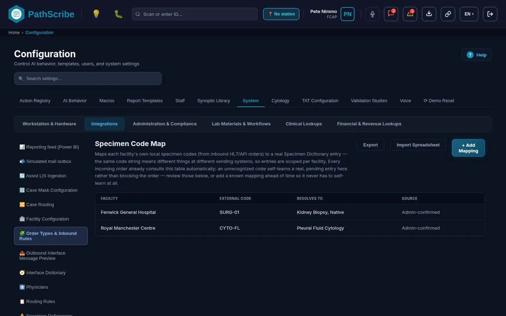
매핑 추가, 스프레드시트 가져오기, 내보내기 버튼이 있는 검체 코드 매핑 목록
6. 필드 참조.
목록.
필드 이름
데이터 유형 / 형식
필수/선택
설명 및 업무 로직
시스템 기본값
시설
텍스트 (읽기 전용)
해당 없음
코드를 보낸 송신 시설입니다.
해당 없음
외부 코드
텍스트 (읽기 전용)
해당 없음
송신 시스템 자체의 검체 코드입니다.
해당 없음
매핑 대상
텍스트 (읽기 전용)
해당 없음
코드가 매핑되는 검체 사전 항목입니다.
해당 없음
출처
관리자 확인됨 또는 자동 학습됨 — 검토 대기 중
해당 없음
자동 학습 항목은 일치하는 항목이 없을 때 시스템이 만든 것입니다. 목록 위의 개수 배너에 검토를 기다리는 항목 수가 표시됩니다.
해당 없음
검토 대기 배너
개수 및 링크
해당 없음
매핑되지 않은 주문 코드 예외가 대기 중일 때 표시됩니다. 링크 감사 대기열에서 매핑되지 않은 항목 보기는 시스템 로그, 인터페이스를 unmapped_order_code로 필터링하여 엽니다.
같은 시설, 코드, 사이트가 이미 어떤 항목에 매핑되어 있으면 메시지와 함께 거부됩니다("Facility already maps external code to entry").
해당 없음
스프레드시트 미리보기.
필드 이름
데이터 유형 / 형식
필수/선택
설명 및 업무 로직
시스템 기본값
요약 줄
텍스트
해당 없음
준비된 행 수, 기존 매핑을 업데이트하는 행 수, 신규 행 수, 오류로 건너뛴 행 수입니다.
해당 없음
행 오류
텍스트 목록
해당 없음
어떤 시설과도 일치하지 않는 시설 이름, 비어 있는 외부 코드, 또는 검체 사전 항목과 일치하지 않는 검체 이름입니다. 이름은 대소문자를 구분하지 않고 이름으로 일치시킵니다. 오류가 있는 행은 추측하지 않고 건너뜁니다.
해당 없음
가져오기 적용
버튼
해당 없음
오류가 없는 모든 행을 저장합니다. 시설과 코드가 이미 있는 행은 해당 매핑의 검체 유형을 업데이트합니다. 가져온 행에는 사이트가 없습니다.
모든 행에 오류가 있으면 비활성화
7. 권한. 화면 열기: screen:configuration:open. 매핑 추가, 가져오기, 업데이트: config:crosswalk:manage (고위험). Admin과 Lab Director는 기본적으로 이 권한을 가지며, Superadmin은 모든 권한을 가집니다 (단, config:ai-prompt:approve는 직무 분리를 위해 제외됩니다). 이 권한이 없으면 화면은 보기 전용입니다. 검토 창에서 매핑되지 않은 코드 예외를 해결하면 같은 항목이 만들어집니다.
알려진 제한. 메뉴 이름(주문 유형 및 수신 규칙)은 화면의 제목(검체 코드 매핑)과 다르지만 같은 화면입니다. 목록에는 편집이나 삭제가 없고 추가와 스프레드시트 업데이트만 있습니다. 실제 HL7 주문을 받는 리스너는 아직 없으므로, 항목은 주문이 주문 접수 서비스에 도달할 때 사용되며 전송 중인 메시지에서는 사용되지 않습니다.
1. 탐색: 구성 탭 시스템 > 그룹 통합2. 유지 관리 항목: LIS 수신(어시스트 모드)
3. 업무 목적 및 범위. 어시스트 모드에서는 외부 LIS가 케이스를 소유합니다. LIS의 업데이트는 폴링, HL7 v2 메시지, JSON 웹훅의 세 가지 방식으로 PathScribe에 도달하며, 세 가지 모두 하나의 수신 대기열을 거칩니다. LIS가 육안 검사 완료를 보고하면 AI가 시놉틱 템플릿을 선택하고 육안 소견 텍스트에서 작성할 수 있는 필드의 초안을 작성합니다. LIS가 현미경/진단 완료를 보고하면 진단을 바탕으로 나머지 초안을 작성합니다. 이 화면에는 설정, 붙여 넣은 메시지를 위한 테스트 상자, 수신 대기열, 실행 로그가 있습니다.
구현된 것과 구현되지 않은 것. 구현됨: 설정, 상태 매핑, 테스트 상자, 재시도가 있는 수신 대기열, 실행 로그, AI 초안 작성 규칙. 데모에서 시뮬레이션됨: 일정(앱이 열려 있고 폴링이 켜져 있는 동안 저장된 간격으로 폴링하며, 화면에는 마지막 실행과 다음 실행이 있는 시뮬레이션 일정 안내가 표시됩니다)과 지금 조회가 요청하는 LIS. 구현되지 않음: HL7 또는 웹훅 메시지를 받는 실제 리스너와 조회할 LIS의 주소를 입력하는 필드. 화면에는 그러한 필드가 없습니다.
4. 사전 요건 및 종속성. AI 단계는 AI 동작 스위치와 시놉틱 템플릿을 사용합니다. AI 동작 설정에서 AI 꺼짐이 적용되면 업데이트는 케이스 텍스트만 변경하고 초안은 만들지 않습니다. 어시스트 모드의 케이스만 처리되며, 어시스트 모드가 아닌 케이스는 어시스트 케이스 아님이라는 결과로 건너뜁니다.
5. 화면.
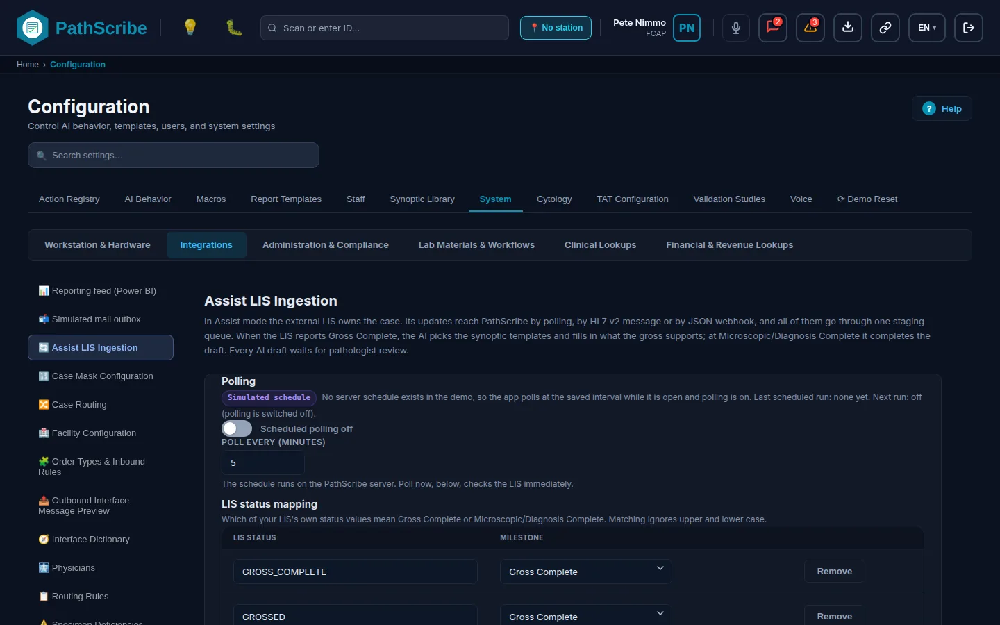
폴링, 상태 매핑, 테스트 상자, 수신 대기열, 활동이 있는 LIS 수신(어시스트 모드)
6. 필드 참조.
폴링과 상태 매핑.
필드 이름
데이터 유형 / 형식
필수/선택
설명 및 업무 로직
시스템 기본값
일정에 따라 LIS 조회
예/아니요 스위치. 레이블은 예약 폴링 켜짐 또는 예약 폴링 꺼짐으로 표시됩니다.
선택
예약 폴링을 켭니다. 운영 서버에서는 일정이 PathScribe 서버에서 실행됩니다. 지금 조회는 이 설정이 켜져 있든 꺼져 있든 작동합니다.
꺼짐
조회 간격(분)
1에서 1440 사이의 정수
필수
예약 폴링 사이의 간격입니다. 범위를 벗어난 값이나 소수는 "간격은 1~1440분 사이의 정수여야 합니다."라는 메시지와 함께 거부됩니다.
5
LIS 상태 (각 행)
텍스트
필수
사용하는 LIS 고유의 상태 값 중 하나이며, 예를 들어 GROSSED입니다. 일치 여부를 확인할 때 양 끝의 공백과 대소문자를 무시합니다. 비어 있는 상태는 거부됩니다. 같은 상태를 두 번 나열할 수 없습니다.
아래의 네 개 행
단계 (각 행)
육안 검사 완료 또는 현미경/진단 완료 중 선택
필수
상태가 의미하는 것입니다. 육안 검사 완료는 육안 검사 단계의 초안을 실행합니다. 현미경/진단 완료는 전체 초안을 실행합니다. 목록에 없는 상태는 아무것도 실행하지 않습니다.
새 행은 육안 검사 완료
삭제
버튼
해당 없음
행을 삭제합니다. 행이 없으면 화면에 "매핑된 LIS 상태가 없습니다. AI 초안이 생성되지 않습니다."라고 표시됩니다.
해당 없음
+ 상태 추가
버튼
해당 없음
빈 행을 추가합니다.
해당 없음
변경 취소, 저장
버튼
해당 없음
변경 사항이 생길 때까지 둘 다 비활성 상태입니다. 저장하지 않은 변경 사항이 있는 상태에서 화면을 나가려고 하면 먼저 확인을 요청합니다.
해당 없음
네 개의 기본 행은 GROSS_COMPLETE와 GROSSED(육안 검사 완료), MICRO_COMPLETE와 DX_COMPLETE(현미경/진단 완료)입니다.
수신 메시지 테스트.
필드 이름
데이터 유형 / 형식
필수/선택
설명 및 업무 로직
시스템 기본값
메시지 형식
HL7 v2 메시지 또는 JSON 웹훅 중 선택
필수
붙여 넣은 텍스트를 읽는 어댑터를 지정합니다.
HL7 v2 메시지
예시 불러오기
버튼
해당 없음
선택한 형식의 샘플로 상자를 채웁니다.
해당 없음
수신 메시지
자유 텍스트
필수
LIS가 보내는 그대로의 메시지입니다. 실제 메시지와 같은 어댑터와 수신 대기열을 거치며 즉시 처리됩니다. 읽을 수 없는 메시지는 사유를 표시하며, 예를 들어 "HL7 v2 메시지가 아닙니다(MSH 세그먼트로 시작해야 합니다)."라고 표시됩니다.
공백
수신 대기열로 보내기
버튼
해당 없음
"대기열 추가: n, 즉시 처리: n" 또는 사유를 표시합니다.
해당 없음
어댑터가 읽는 내용입니다. HL7 메시지는 ORU^R01, ORM^O01 또는 OML^O21이어야 하며 다른 유형은 거부됩니다. OBR 세그먼트마다 업데이트가 하나씩 만들어집니다. 접수번호는 OBR-3이며, 없으면 OBR-2, 그것도 없으면 ORC-3입니다. 상태는 ORC-5이며, 없으면 OBR-25입니다. 시간은 OBR-22이며, 없으면 MSH-7입니다. 오프셋이 없는 시간은 UTC로 읽으므로 LIS에 오프셋을 보내도록 요청하십시오. 텍스트는 OBX-3의 LOINC 코드에 따라 OBX-5에서 가져옵니다. 22634-0은 육안 소견, 22635-7은 현미경 소견, 22637-3은 최종 진단입니다. JSON 본문은 객체 하나 또는 목록이며, accession, status, updatedAt(ISO 8601)은 필수이고 grossText, microscopicText, diagnosisText, placerOrderNumber, fillerOrderNumber는 선택입니다. 주문 번호는 시놉틱 결과에 그대로 반영됩니다.
수신 대기열.
필드 이름
데이터 유형 / 형식
필수/선택
설명 및 업무 로직
시스템 기본값
개수 줄
텍스트
해당 없음
대기, 실패, 처리됨 개수입니다.
해당 없음
실패 항목 재시도
버튼
해당 없음
시도 횟수가 5회 미만인 실패 항목을 모두 재시도합니다. 실패한 항목이 없으면 비활성화됩니다.
해당 없음
수신 시간, 출처, 접수번호, LIS 상태, 상태, 결과, 시도 횟수
읽기 전용 열
해당 없음
출처는 폴링, HL7 v2 메시지 또는 JSON 웹훅입니다. 상태는 대기, 실패 또는 처리됨입니다. 결과는 처리 결과 또는 오류입니다. 접수번호는 가리기를 위해 환자 데이터로 태그됩니다. 목록에는 최신 25개 행이 표시됩니다. 항목은 5회 시도한 후에는 더 이상 재시도되지 않습니다. 처리된 이벤트는 최신 200건이 보관됩니다.
해당 없음
활동.
필드 이름
데이터 유형 / 형식
필수/선택
설명 및 업무 로직
시스템 기본값
지금 조회
버튼
해당 없음
LIS에 변경 사항을 즉시 요청합니다.
해당 없음
커서 줄
텍스트
해당 없음
"(시간)까지의 변경 사항이 처리되었습니다." 또는 "아직 LIS를 조회하지 않았습니다."
해당 없음
실행 표
읽기 전용 열: 시간, 실행 방식, LIS에서, 새 대기열 항목, AI 초안, 텍스트만, 건너뜀, 실패
해당 없음
실행 방식은 지금 조회, 일정, 수신 메시지 또는 재시도입니다. 로그에는 최근 20회의 실행이 보관됩니다.
해당 없음
최근 조회
읽기 전용 열: 접수번호, LIS 상태, 단계, 결과, 상세
해당 없음
최신 실행의 케이스당 한 행입니다. 결과는 다음 중 하나입니다. AI 초안 준비됨, 마지막 초안 이후 변경 없음, PathScribe에 없는 케이스, 이미 서명 완료됨, 실패(재시도 예정), 매핑되지 않은 상태, 어시스트 케이스 아님, 텍스트 업데이트됨(AI 동작 설정에서 AI 꺼짐), 텍스트 업데이트됨(초안은 이미 완성됨). 상세에는 새 초안, 제안된 필드, 검토할 템플릿 변경이 표시됩니다.
해당 없음
7. 권한. 화면 열기: screen:configuration:open. 설정 저장: config:assist-polling:manage (고위험). 지금 조회, 테스트 메시지, 실패 항목 재시도: assist:lis-message:ingest (고위험, 감사 대상). 예약 폴링은 시스템이 수행하므로 확인하지 않습니다. Admin과 Lab Director는 기본적으로 두 권한을 모두 가집니다.
알려진 제한.데모 빌드에서는 조회 소스와 일정이 시뮬레이션되며, 실제 LIS에서 보낸 HL7 또는 웹훅 메시지를 받는 리스너는 없습니다. HL7 어댑터는 ORC-5, 그다음 OBR-25에서 상태를 읽으며 소스는 이를 시설별 설정이라고 설명하지만 화면에는 이를 위한 컨트롤이 없습니다. 서명 완료된 케이스는 변경되지 않습니다. 전체 초안 이후에 늦게 도착했거나 수정된 육안 소견은 텍스트만 업데이트합니다.
1. 탐색: 구성 탭 시스템 > 그룹 통합2. 유지 관리 항목: 발신 인터페이스 메시지 미리보기
3. 업무 목적 및 범위. 확인용 도구입니다. 실제 환자 한 명 또는 케이스 한 건에 대해 PathScribe가 인터페이스 엔진을 위해 대기열에 넣을 JSON 메시지를 만들어 보여 주고, 파일로 다운로드할 수 있게 합니다. 인터페이스 분석가에게 구축에 참고할 실제 예시를 제공하거나, 채널을 구축하기 전에 엔진이 받을 내용을 확인하는 데 사용합니다. 아무것도 전송하지 않고 대기열에도 넣지 않습니다. 미리볼 수 있는 메시지 유형은 ADT^A08, ADT^A40, ADT^A47, ORU^R01의 네 가지뿐입니다.
4. 사전 요건 및 종속성. 먼저 설정할 것은 없습니다. 기존 환자 기록(ADT 유형의 경우) 또는 최종 확정된 시놉틱 보고서가 있는 케이스(결과의 경우)가 필요합니다. 없으면 화면에 환자를 찾을 수 없다거나 페이로드 빌더가 아무것도 반환하지 않았다고 표시됩니다.
5. 화면.
메시지 유형 선택기, ID 필드, JSON 출력
6. 필드 참조.
필드 이름
데이터 유형 / 형식
필수/선택
설명 및 업무 로직
시스템 기본값
메시지 유형
ADT^A08 인구통계 업데이트, ADT^A40 환자 병합, ADT^A47 식별자 변경, ORU^R01 병리 결과 중 선택
표시된 메시지를 <type>_<time>.json으로 저장합니다. 다운로드는 감사 로그에 기록됩니다.
해당 없음
화면에는 두 가지 경고가 나타나며 모두 사실입니다. A40과 A47의 경우 미리보기가 병합을 수행하지 않으므로 다시 연결된 케이스와 방문 건수가 0으로 표시됩니다. ORU^R01의 경우 보고서 PDF와 보고서 서술 텍스트는 이 화면에 없는 보고서 렌더링 파이프라인이 필요하므로 없는 것으로 표시됩니다. 그 밖의 모든 필드는 엔진이 받는 형태와 같습니다. ORU 미리보기에는 케이스가 오케스트레이터 보고 모드에 있어야 하며, PDF가 없으면 "이 결과에 대한 보고서 PDF를 사용할 수 없습니다"라고 보고됩니다.
7. 권한. 화면 열기: screen:configuration:open. 미리보기 만들기 및 다운로드: config:interface-preview:view (고위험). Admin과 Lab Director는 기본적으로 이 권한을 가집니다.
알려진 제한. 화면 자체의 부제에는 "PathScribe never builds or sends HL7 itself"라고 되어 있습니다. 이는 정확히 맞지 않습니다. PathScribe는 블록 주문(ORM^O01), 수가(DFT^P03), 미국 전자 병리 결과에 대해서는 HL7을 직접 만듭니다. 이 화면은 JSON만 미리 보여 줍니다. 미리볼 수 있는 유형은 이 네 가지뿐이며, 메시지 유형의 다른 트랜잭션 유형은 여기서 미리볼 수 없습니다. 전송된 메시지는 주문 생성 이벤트의 경우 발신 전송 내역에서 사후에 확인할 수 있습니다.
PathScribe에는 FHIR R4 엔드포인트가 없습니다. FHIR 서버를 게시하지 않고, 다른 시스템의 FHIR 리소스를 받지 않으며, FHIR 기본 주소, 클라이언트 ID, 클라이언트 시크릿, 토큰 주소를 설정하는 화면도 없습니다. OAuth2 클라이언트 자격 증명 설정 화면도 없습니다. 둘 중 어느 것에라도 의존하는 가동 시작을 계획하지 마십시오.
PathScribe에는 인증 여부와 관계없이 어떤 EHR용 커넥터도 없습니다. 어떤 공급업체의 마켓플레이스에도 등록되어 있지 않으며, 이 가이드의 근거로는 어떤 공급업체의 검증도 통과하지 않았습니다. EHR이 보내거나 받는 모든 것은 병원의 인터페이스 팀이 구성하는 인터페이스 엔진을 거치며, PathScribe는 메시지 유형에 있는 메시지만 봅니다. 고객에게 PathScribe를 "Epic 인증" 또는 "Cerner 인증" 등으로 설명하지 마십시오.
EHR
PathScribe에 있는 것
PathScribe에 없는 것
Epic
Epic Beaker라는 이름의 식별자 형식 프리셋(접수번호와 2D 슬라이드 바코드 패턴)입니다. 1단계의 시설 편집기 식별자 형식 탭에서 설정합니다.
같은 프리셋 목록에는 Generic, CoPath, Sunquest, 사용자 지정도 있습니다. 프리셋은 스캔 상자가 인식하는 접수번호와 바코드 패턴만 결정합니다. 어떤 것과도 메시지를 교환하지 않습니다.
현재 EHR 연동의 모습. EHR은 엔진을 통해서만 PathScribe에 도달할 수 있으며, 메시지 유형의 송신 메시지(결과, 환자 업데이트, 주문 이벤트, 접수 이벤트)로서, 그리고 아직 실제 리스너에 연결되지 않은 수신 처리기로서 도달합니다. 인터페이스 사전에는 어떤 EHR에 대해서도 미리 제공된 공급업체 프로필이 없습니다. 검체 코드 매핑은 주문이 주문 접수 서비스에 도달한 뒤 EHR의 검체 코드를 매핑합니다. 환자 신원에 대한 권한은 EHR이 가집니다. 일치시킬 수 없는 A40, A24, A47 또는 A43 메시지는 추측하지 않고 담당자가 처리하도록 인터페이스 예외로 대기열에 넣습니다. 시스템 로그: 인터페이스를 참조하십시오.
1. 탐색:데모 빌드에서 케이스에서 열리는 창이며, 주소는 /mock-emr?case=<reference>입니다. 데모 도구가 켜져 있을 때(__DEMO_TOOLS__)에만 빌드에 포함되며, API 서버와 통신하는 빌드에는 포함되지 않습니다.
2. 유지 관리 항목: 모의 EMR
3. 업무 목적 및 범위. EHR의 환자 보기를 대신하는 화면으로, 데모에서 케이스 옆에 EMR 보조 창을 보여 줄 수 있게 합니다. 데모 케이스에서 기록 번호로 케이스의 환자를 찾아 고정된 임상 요약을 표시합니다. 실제 EHR을 읽지 않으며 데모: 합성 데이터라는 레이블이 붙습니다. 기록 번호와 일치하는 환자가 없으면 잘못된 환자를 표시하지 않고 환자를 찾을 수 없습니다라고 표시합니다.
참조 검사실은 분자 검사나 외부 의뢰 면역조직화학 검사처럼 외부 위탁 검사를 위해 검체를 보내는 시설입니다. PathScribe는 매니페스트로 하는 의뢰 발송과 결과 메시지로 하는 결과 수신을 지원합니다. 송신 측은 구현되어 있으며, 수신 측에는 처리기는 있지만 엔드포인트는 없습니다.
"참조 검사실 인터페이스"라는 화면은 없습니다. 설정은 이미 있는 여러 화면에 나뉘어 있습니다.
검사실을 시설로 만듭니다.시설 사전에서 검사실을 추가하고 참조 검사실(발신 의뢰 대상)역할을 지정합니다. 이 역할이 있어야 의뢰 배치의 대상으로 선택할 수 있습니다. 해당 역할이 있는 활성 시설만 표시됩니다.
수행하는 검사와 연결합니다.진단 카탈로그에서 분자 검사에는 해당 검사를 수행하도록 승인된 참조 검사실과 그중 기본 검사실이 나열됩니다. 기본 검사실은 승인된 검사실 중 하나여야 합니다. 이 연결은 분자 범주에만 유지되며, 해당 검사의 추가 주문은 기본 검사실을 채우고 승인된 검사실만 표시합니다.
발송합니다. 의뢰 배치는 배치 관리에서 처리 노드 외부 의뢰와 대상 시설을 지정하여 만듭니다. 배치가 대조를 완료하면 PathScribe는 REFERRAL_MANIFEST 메시지를 대기열에 넣고 추적 기록을 자동으로 만듭니다. 여기서 발생한 실패가 배치 자체의 완료를 막지는 않습니다. 매니페스트에는 배치 ID, 마스터 바코드, 대상 시설, 요청한 검사, 우선순위(STAT 또는 Routine), 항목(표시 ID, 재료 유형, 케이스접수번호, 검체 라벨), 그리고 외부 의뢰 분자 검사 주문이 들어 있습니다. 무엇을 언제 보낼지는 PathScribe가 결정하고 전송 방식은 엔진이 결정합니다.
발송을 확인합니다. 메시지는 발신 대기열에서는 피드 의뢰에, 발신 인터페이스 DLQ에서는 대기열 의뢰 송장에 나타나며, 실패한 메시지는 여기서 다시 보냅니다.
결과를 수신합니다. 결과 메시지(ReferralResultEventPayload)에는 배치 ID와 discrete 결과(텍스트) 또는 pdf_attachment(PDF 링크) 중 하나가 들어 있으며 둘 다 들어 있는 경우는 없고, 선택적으로 외부 의뢰 분자 검사 주문별 결과도 들어 있습니다. 처리기는 형식을 확인하고, 배치를 찾고, 결과를 기록하고, 배치를 result_received로 표시한 다음 코드화된 결과를 분자 검사 주문에 적용합니다. 배치의 상태는 발송됨, 운송 중, 전달됨, 결과 수신됨의 순서로 앞으로만 이동합니다. 사람이 운송 중과 전달됨을 직접 설정할 수 있으며, 결과 수신됨은 결과가 도착할 때만 설정됩니다.
구현되지 않은 것. 결과 메시지를 받는 엔드포인트가 없으므로 참조 검사실에서 결과가 저절로 도착하지 않습니다. 처리기는 처리한 메시지 ID를 메모리에만 기억하므로 재시작하면 잊어버립니다. 처리기는 적용됨, 이미 적용됨, 추적 정보를 찾을 수 없음, 잘못된 페이로드의 네 가지 응답 중 하나를 반환합니다. 모의 인터페이스 엔진에는 의뢰 결과용 테스트 샘플이 없습니다. 참조 검사실 고유의 표현(검사 이름과 결과 코드)은 PathScribe가 번역하지 않으며 엔진이 담당합니다.
무엇이 실패했는지 확인하고 이를 다시 보내거나 보류하거나 해제하는 데 관리자에게 필요한 모든 것은 이 부분의 화면에 있습니다. 이 화면들은 현재 데모 데이터와 API 서버용 서비스를 대상으로 작동합니다. 엔진이 연결될 때 추가되는 기능(하트비트, 확인 응답으로 확정되는 결과, 자동 재시도 구간)은 예정입니다. 현재 실행되는 것과 예정된 것을 참조하십시오.
기본 제공 역할. Admin은 interface:outbound:* 권한 전체와 interface:engine-status:view, jobs:server-job:view를 가집니다. Lab Director는 이 중 어느 것도 가지지 않으며 발신 대기열 화면이 없습니다. QA Reviewer는 감사 로그 화면과 내보내기만 열 수 있습니다. Superadmin은 모든 권한을 가집니다 (단, config:ai-prompt:approve는 직무 분리를 위해 제외됩니다). 기본 제공 Interface Analyst 역할은 없습니다. 병원이 직접 만들어 원하는 권한을 부여합니다(시드 파일에 그렇게 나와 있습니다).
재전송이 하는 일. 재전송은 기록에서 메시지를 다시 만들어 전송합니다. 참조하는 기록이 더 이상 없으면 아무것도 전송되지 않으며 화면에 "전송되지 않음: 메시지를 만들 수 없습니다"라고 표시됩니다. 아직 보고서 PDF가 없는 결과는 전송되지 않고 보류되며, 이후 재시도 시 PDF와 함께 전송됩니다. 메시지를 변경하는 모든 작업은 메시지당 하나의 항목으로 감사 로그에 기록되며, 감사 텍스트에는 환자 이름이 포함되지 않습니다. 전송 구간의 재시도(엔진이 연결을 다시 시도하는 것)는 PathScribe가 아니라 엔진이 담당합니다.
1. 탐색: 홈 > 품질 및 준수 > 시스템 로그 > 탭 인터페이스 로그(화면의 탭 이름), 주소는 /audit?tab=interfaces입니다.
2. 유지 관리 항목: 시스템 로그: 인터페이스
3. 업무 목적 및 범위. 다른 시스템과의 경계에서 무엇이 잘못되었는지 확인하는 단일 장소입니다. 하위 탭이 다섯 개 있습니다. 인터페이스 예외(처리할 수 없었던 수신 메시지), 발신 인터페이스 DLQ(실패했거나 대기 중인 송신 메시지), 발신 전송 내역(주문 생성 이벤트의 이력), 인쇄 대기열, 엔진(인터페이스 엔진 상태이며 interface:engine-status:view가 있을 때만 표시됩니다)입니다. 하위 탭 위의 한 줄은 엔진을 요약하며 한 번의 클릭으로 엔진을 엽니다. 탭에는 대기 중인 예외의 수가 배지로 표시됩니다.
이 장에서는 인터페이스 예외를 여기서 설명하고 나머지 네 개의 하위 탭은 각각의 화면에서 설명합니다. 발신 인터페이스 DLQ, 발신 전송 내역, 인터페이스 엔진입니다. 인쇄 대기열 하위 탭은 이 가이드에서 설명하지 않으며, 미해결 질문을 참조하십시오.
4. 사전 요건 및 종속성. 여기서 설정하는 것은 없습니다. 인터페이스 예외가 발생하면 목록이 채워집니다. 매핑되지 않은 주문 코드 예외는 검체 코드 매핑에 해당 코드의 항목이 없을 때 나타납니다.
5. 화면.
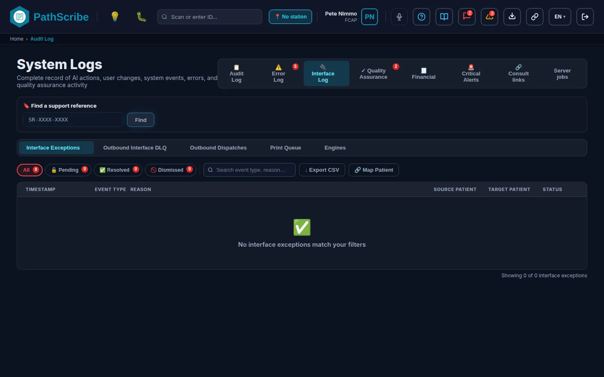
인터페이스 예외 하위 탭, 상태 알약, 검색이 있는 인터페이스 로그 탭
6. 필드 참조.
인터페이스 예외 하위 탭.
필드 이름
데이터 유형 / 형식
필수/선택
설명 및 업무 로직
시스템 기본값
상태 알약
전체, 대기 중, 해결됨, 기각됨 중 선택하며 각각 개수가 표시됨
선택
목록을 필터링합니다.
전체
검색
텍스트, 자리 표시자 "이벤트 유형, 사유 검색..."
선택
이벤트 유형과 사유를 대조합니다. 검체 코드 매핑의 링크는 이 탭을 unmapped_order_code로 검색한 상태로 엽니다.
선택한 각 케이스를 이동하고, 이동한 건수와 실패 내역을 메모로 남겨 예외를 해결됨으로 기록합니다. 케이스를 선택하고 두 환자가 모두 확인될 때까지 비활성화됩니다.
해당 없음
검색 및 환자 선택 목록 (A40, A24, A47)
양쪽에 각각 하나씩 있는 검색 상자와 선택 목록. A47에는 원본 쪽만 있으며 "식별자가 수정되는 환자"입니다. A40에는 "이전 환자 (병합되어 사라짐)"와 "유지되는 환자"가 표시됩니다. A24에는 "첫 번째 환자 기록"과 "두 번째 환자 기록"이 표시됩니다.
필수
메시지가 의도한 기록을 선택합니다. "아무것도 추측하지 않습니다."
공백
적용 (A40, A24, A47)
버튼, "A40 적용" 등
해당 없음
선택한 환자에게 메시지를 직접 적용합니다.
해당 없음
원본 주문 코드, 정규화됨, 코딩 체계 (unmapped_order_code)
텍스트 (읽기 전용)
해당 없음
들어온 내용과 정규화된 방식입니다.
해당 없음
검체 사전 항목에 매핑 (unmapped_order_code)
검색 가능한 선택 목록
매핑에 필수
이 코드가 매핑되어야 하는 항목입니다.
공백
매핑 및 연결 (unmapped_order_code)
버튼
해당 없음
검체 코드 매핑 항목을 직접 만들어, 이 코드와 정확히 일치하는 이후 주문이 해석되고 예외가 반복되지 않게 합니다. 시설 추적이 도입되기 전에 발생한 예외는 여기서 매핑할 수 없습니다. 검체 코드 매핑에서 항목을 추가한 다음 기각하십시오.
해당 없음
해제 — 조치 불필요
버튼
해당 없음
변경 없이 예외를 닫습니다. EHR의 수정된 재전송처럼 올바른 신원이 상위 시스템에서 확인된 후에 사용합니다.
해당 없음
7. 권한. 화면 열기: screen:audit-log:open. 목록 내보내기: audit:interface-log:export (고위험). 환자 매핑: patient:break-glass:rebind (고위험, Admin이 기본적으로 가짐). Admin, Lab Director, QA Reviewer는 기본적으로 감사 로그 화면을 엽니다. 다른 하위 탭은 재처리 규칙 한눈에 보기를 참조하십시오.
알려진 제한. 인터페이스 예외를 해결하고, 기각하고, 연결하는 데에는 별도의 권한이 없으며, 화면을 열 수 있는 사람은 누구나 할 수 있습니다. 수신 HL7 메시지에서 발생하는 예외는 메시지가 처리될 때만 나타날 수 있는데 아직 실제 리스너가 없으므로, 데모 빌드에서는 예외가 모의 인터페이스 엔진 시뮬레이터에서 발생합니다. 위의 다섯 가지 외의 이벤트 유형에 대한 검토에서는 기각만 제공됩니다.
1. 탐색: 시스템 로그, 탭 인터페이스 로그, 하위 탭 엔진. 이 하위 탭은 interface:engine-status:view 권한이 있는 사람에게만 표시됩니다.
2. 유지 관리 항목: 인터페이스 엔진(화면의 제목)
3. 업무 목적 및 범위. 각 병원의 인터페이스 엔진을 한 목록으로 보여 주며, 리스너가 작동 중인지, 무엇이 대기 중인지, 무엇이 실패했는지를 알려 줍니다. 1분마다 새로 고쳐지며 새로 고침 버튼이 있습니다. 읽기 전용입니다. 채널은 엔진 자체에서 시작하고 중지하며, 실패한 송신 메시지는 발신 인터페이스 DLQ에서 다시 보냅니다(송신 열기 버튼이 그곳으로 이동합니다).
무엇이 구현되어 있고 무엇이 예정인지. 화면과 상태 규칙은 구현되어 있습니다. 데이터는 엔진의 하트비트에서 오며, 엔진은 이를 60초마다 예정 상태인 엔드포인트로 보냅니다(POST /api/interface/heartbeat, 목록은 GET /api/interface/engines). 그때까지 데모에서는 상태별로 하나씩 샘플 엔진 네 개를 시뮬레이션 배지와 함께 표시하며 "데모에는 인터페이스 엔진이 없습니다."라고 알립니다. 등록된 엔진이 없으면 목록에 "아직 등록된 인터페이스 엔진이 없습니다."라고 표시됩니다.
4. 사전 요건 및 종속성. 이 화면에서 구성하는 것은 없습니다. 엔진은 ForMedrixAI가 설치하고 등록해야 하며, 이는 예정 사항입니다.
5. 화면.
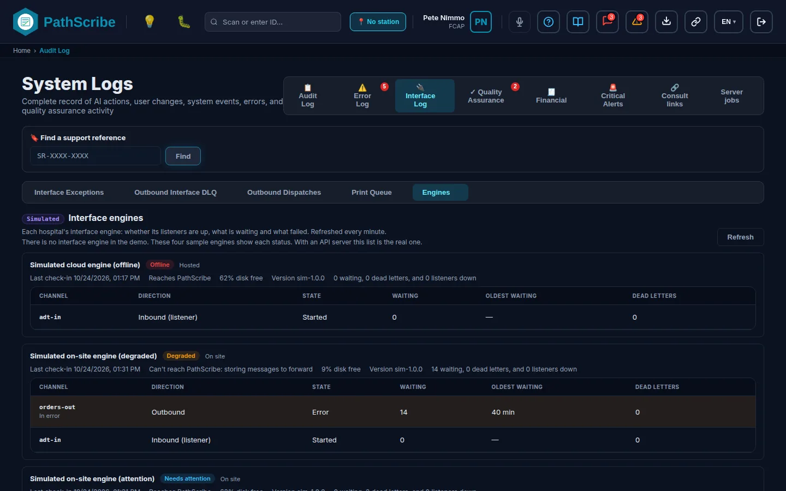
상태, 채널, 대기 항목, 데드 레터가 있는 인터페이스 엔진
6. 필드 참조. 읽기 전용 페이지입니다.
필드 이름
데이터 유형 / 형식
필수/선택
설명 및 업무 로직
시스템 기본값
요약 줄
텍스트, "인터페이스 엔진: ..."
해당 없음
온라인, 성능 저하, 오프라인, 확인 필요, 중지된 리스너, 대기 메시지의 개수입니다.
해당 없음
상태
온라인, 성능 저하, 오프라인, 확인 필요 (읽기 전용)
해당 없음
오프라인: 서버 시계 기준으로 180초 동안 하트비트가 없습니다. 성능 저하: 엔진에서 PathScribe에 연결할 수 없거나, 인증서가 14일 이내에 만료되거나, 디스크 여유 공간이 15퍼센트 미만이거나, 채널이 오류, 일시 중지 또는 중지 상태이거나, 메시지가 15분 넘게 대기한 경우입니다. 확인 필요: 그 밖에는 정상이지만 채널에 데드 레터가 있는 경우입니다. 온라인: 위 어느 것에도 해당하지 않습니다.
해당 없음
호스팅
호스팅 또는 현장
해당 없음
엔진이 실행되는 위치입니다(결정 D6).
해당 없음
버전, 마지막 확인
텍스트
해당 없음
엔진 버전이며, 확인한 적이 없으면 "확인 기록 없음"으로 표시됩니다.
해당 없음
PathScribe 연결됨
텍스트
해당 없음
PathScribe 연결됨 또는 "PathScribe에 연결할 수 없음: 전달할 메시지 저장 중"입니다.
해당 없음
디스크 여유, 인증서 만료
퍼센트, 날짜
해당 없음
위에서 설명한 두 가지 상태 판단 입력값입니다.
해당 없음
채널
텍스트
해당 없음
엔진의 채널입니다.
해당 없음
방향
수신(리스너) 또는 송신
해당 없음
해당 없음
상태
시작됨, 일시 중지, 중지됨, 오류
해당 없음
채널 문제 줄이 이유를 설명합니다. N분 넘게 대기 중, 처리할 최종 실패, 오류, 일시 중지, 대기열 유지, 중지됨.
해당 없음
대기, 가장 오래 대기, 최종 실패
숫자, 분, 숫자
해당 없음
대기열 깊이, 가장 오래 대기 중인 메시지의 경과 시간, 데드 레터로 처리된 메시지의 개수입니다.
해당 없음
합계
텍스트
해당 없음
모든 엔진에 걸친 대기 메시지, 데드 레터, 중지된 리스너의 합계입니다.
해당 없음
새로 고침, 송신 열기
버튼
해당 없음
해당 없음
7. 권한.interface:engine-status:view(표준 위험도, screen:audit-log:open 필요). Admin이 기본적으로 보유하며, 병원은 이를 자체 인터페이스 분석가에게 부여할 수 있습니다. 이 권한이 없는 사람에게는 하위 탭이 표시되지 않으며, 읽기가 거부되면 "인터페이스 엔진을 볼 권한이 없습니다."라고 표시됩니다.
알려진 제한. 아직 보고하는 엔진이 없으므로, 하트비트 엔드포인트와 엔진 이미지가 마련될 때까지(예정, 2e단계) 실제 목록은 비어 있습니다. 상태 판단 기준값은 코드에 고정되어 있으며 설정이 없습니다.
1. 탐색: 시스템 로그, 탭 인터페이스 로그, 하위 탭 발신 인터페이스 DLQ.
2. 유지 관리 항목: 발신 인터페이스 DLQ
3. 업무 목적 및 범위. 데드 레터 대기열(DLQ)은 보내지 못한 메시지의 목록입니다. 이 화면은 한 번에 하나의 대기열에 대해 실패했거나 대기 중인 발신 인터페이스 메시지를 보여 주고 다시 보낼 수 있게 합니다. 지금 전송과 재시도는 메시지를 인터페이스 엔진으로 보냅니다. 시뮬레이션 버튼은 테스트용 보조 기능이며 실제로 보내지 않습니다. 실패한 청구는 별도의 재무 DLQ(시스템 로그: 재무)에 있습니다. 전달 예외 패널(아래)은 맨 위에 있습니다.
4. 사전 요건 및 종속성. 이 화면에서 구성하는 것은 없습니다. 발신 전송이 실패하면 메시지가 나타납니다. VITE_INTERFACE_RECEIVER_ENDPOINT가 설정되어 있지 않으면 데모 엔진이 자신의 응답 모드에 따라 수락하거나 거부합니다(모의 인터페이스 엔진 참조).
5. 화면.
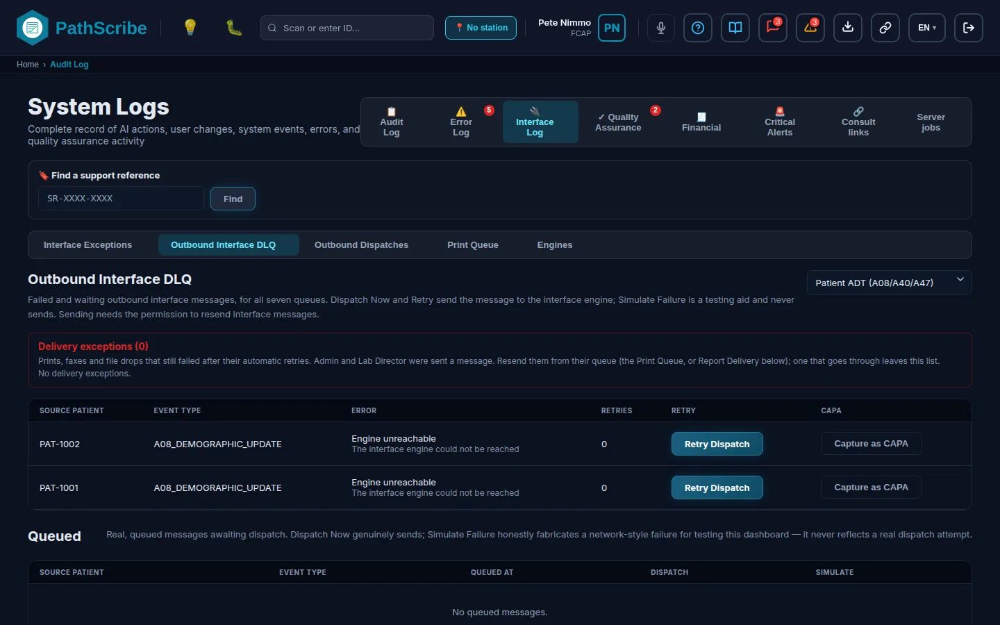
대기열 선택기, 실패한 행, 전달 예외가 있는 발신 인터페이스 DLQ
6. 필드 참조.
필드 이름
데이터 유형 / 형식
필수/선택
설명 및 업무 로직
시스템 기본값
대기열
여덟 개 대기열 중 선택: 병리 결과(ORU^R01), 세포병리 결과(ORU^R01), 환자 ADT(A08/A40/A47), 어시스트 모드 LIS 동기화, 접수 이벤트(접수됨 / 결함), 보고서 전달(전자 팩스, 파일 드롭), 의뢰 명세서, 분자 / 장비 오더
필수
대기열을 선택합니다. 처음 두 개의 식별자 및 종류 열이 대기열에 따라 바뀝니다(예: 케이스와 결과 상태, 원본 환자와 이벤트 유형, 배치 바코드와 우선순위, 검체 또는 바코드와 검정, 접수와 채널 및 보고서). 대기열을 바꾸면 결과 메시지가 지워집니다.
병리 결과
실패: 식별자, 종류
텍스트 (읽기 전용, 환자 데이터로 태그됨)
해당 없음
기록과 그 종류입니다.
해당 없음
실패: 오류
텍스트 (읽기 전용)
해당 없음
전송 거부됨, 전송 시간 초과, 엔진에 접근할 수 없음 또는 알 수 없음 중 하나이며, 그 아래에 메시지가 표시됩니다.
해당 없음
실패: 재시도
숫자
해당 없음
다시 보낸 횟수입니다. 항목에 해당 플래그가 있으면 "(최대 횟수 초과)"가 표시됩니다. 브라우저 자체의 전송은 현재 이 플래그를 설정하지 않습니다.
해당 없음
실패: 전송 재시도
버튼
해당 없음
다시 보냅니다. 답변이 버튼 옆에 표시됩니다. "인터페이스 엔진이 수락하여 전송됨", "전송되지 않음: 사유는 오류 열에 있습니다.", "보류됨: 보고서 PDF를 아직 사용할 수 없습니다", "전송되지 않음: 메시지를 만들 수 없습니다", "해당 메시지가 더 이상 대기열에 없습니다.", "발신 대기열에서 보류됨: 먼저 그곳에서 해제하세요." 또는 "인터페이스 메시지를 다시 보낼 권한이 없습니다."
실패를 시정 및 예방 조치(CAPA) 항목으로 기록합니다. 그러면 행에 등록됨이 표시됩니다.
해당 없음
대기 중: 식별자, 종류, 대기열 등록 시각
읽기 전용
해당 없음
전송을 기다리는 메시지입니다.
해당 없음
대기 중: 지금 전송
버튼
해당 없음
메시지를 지금 보냅니다.
해당 없음
대기 중: 거부 시뮬레이션, 시간 초과 시뮬레이션, 접근 불가 시뮬레이션
버튼
해당 없음
테스트를 위해 해당 종류의 실패를 만들어 냅니다. 실제 전송을 반영하지 않습니다.
해당 없음
전달 예외 (n)
읽기 전용 목록: 케이스, 채널, 시도, 마지막 오류, 대체 수단, 포기
해당 없음
자동 재시도 후에도 여전히 실패한 인쇄, 팩스, 파일 드롭입니다. 규칙의 대체 채널은 "~(으)로 전송됨"으로 표시됩니다. 항목이 추가되면 Admin과 검사실 책임자에게 메시지가 전송됩니다. 다시 보내서 전달이 성공한 건은 다음 점검 때 목록에서 사라집니다. 비어 있으면 "전달 예외가 없습니다."라고 표시됩니다.
해당 없음
7. 권한. 열기: screen:audit-log:open. 지금 전송, 전송 재시도, 시뮬레이션 버튼: interface:outbound:resend(높은 위험도, 감사 대상). Admin이 기본적으로 보유합니다. 병원은 이를 자체 인터페이스 분석가 역할에 부여할 수 있습니다. CAPA로 등록에는 고유한 권한이 없습니다.
알려진 제한. 부제목에는 "일곱 개 대기열"이라고 되어 있지만 화면에는 여덟 개가 있습니다. 브라우저에는 자동 재시도가 없으며, 실패한 메시지는 담당자를 기다립니다. 계획된 재시도 간격은 현재 작동하는 것과 예정된 것에 있습니다.
1. 탐색: 시스템 로그, 탭 인터페이스 로그, 하위 탭 발신 전송 내역.
2. 유지 관리 항목: 발신 전송 내역
3. 업무 목적 및 범위. PathScribe가 인터페이스 엔진으로 보낸 모든 오더 생성 이벤트(범주 E)와 그 결과의 기록입니다. 기록일 뿐 실패 대기열이 아닙니다. 결과와 환자 업데이트의 전송 실패는 발신 인터페이스 DLQ에 있습니다. 행을 열면 전송된 JSON 원문을 볼 수 있습니다. PathScribe는 JSON을 보내고, 엔진이 이를 바탕으로 HL7 메시지를 만듭니다.
4. 사전 요건 및 종속성. 이 화면에서 구성하는 것은 없습니다. 오더 생성 메시지가 전송되면 행이 나타납니다.
5. 화면.
발신 전송 내역 표와 페이로드 서랍
6. 필드 참조.
필드 이름
데이터 유형 / 형식
필수/선택
설명 및 업무 로직
시스템 기본값
상태 필터
전체, 전달됨, 실패, 결과 알 수 없음 중 선택
선택
표를 필터링합니다. 결과 알 수 없음은 메시지가 기록되었지만 결과가 돌아오지 않았다는 뜻입니다.
1. 탐색: 홈 > 품질 및 준수 > 발신 대기열, 주소는 /outbound-queue입니다.
2. 유지 관리 항목: 발신 대기열
3. 업무 목적 및 범위. 모든 발신 메시지를 한곳에 모아 보류, 해제, 재시도를 할 수 있고, 등록기관이 반려한 건을 수정할 수 있습니다. 열 개의 피드(결과, 환자 ADT, 접수, LIS 동기화, 청구, 보고서 전달, 세포병리 결과, 의뢰, 분자 오더, 등록기관)를 하나로 모으며, 각 메시지의 대상(인터페이스 엔진, 청구 시스템, LIS 파트너, 전달 서비스 또는 등록기관), 엔진이 사용하는 전송 방식(REST + mTLS, SFTP, 포털 업로드, PHIN-MS, 직접 TCP 또는 HTTPS API이며, 대상 레이블의 일부로만 표시됩니다), 상태를 보여 줍니다. 무엇을 언제 해제할지는 PathScribe가 결정하고, 전송은 엔진이 수행합니다.
4. 사전 요건 및 종속성. 대기열은 메시지가 나가는 시점과 보고 기한을 전달 일정에서 읽습니다. 수행 시설 자체의 일정이 우선하고, 없으면 기업의 일정, 그것도 없으면 피드의 기본값을 따릅니다. 일정이 없으면 메시지는 피드의 기본값을 따릅니다. 청구 항목은 청구 해제 설정도 따르고 등록기관 항목은 등록기관 설정을 따르며, 둘 다 7단계에 있습니다.
담당자를 기다리는 청구 항목(검토 필요: 매핑되지 않은 CPT 코드, 기술 구성 요소 시설 없음, 정정된 케이스의 차액 청구)과 검토가 필요한 등록기관 항목(필수 필드가 비어 있음, 수행 시설 없음, 주 프로필 없음, "증례에 ICD-O-3 코드 없음"과 같은 주 규칙)을 표시합니다.
꺼짐
정정 차액 타일
개수
해당 없음
정정된 케이스에서 발생한 청구입니다.
해당 없음
보고 기한 타일
개수, 기한 초과와 기한 임박
해당 없음
등록기관 보고 기한입니다.
해당 없음
정렬 기준, 방향
피드, 상태, 대기열 등록 시각, 예정 시각, 시도, 보고 기한 중 선택. 오름차순 또는 내림차순
선택
기본 순서는 반려됨, 재시도 소진, 실패, 보류됨, 대기, 전송됨, 수신 확인됨, 보고 대상 아님, 철회됨 순입니다.
상태 순서
목록.
필드 이름
데이터 유형 / 형식
필수/선택
설명 및 업무 로직
시스템 기본값
선택 (행 및 전체 선택)
체크박스
선택
일괄 작업의 대상 메시지를 고릅니다. 개수는 "선택됨: n"으로 표시됩니다.
없음
피드, 접수 번호, 대상
텍스트 (읽기 전용)
해당 없음
피드, 케이스, 그리고 전송 방식이 함께 표시되는 대상입니다.
해당 없음
상태
대기, 보류됨, 전송됨, 수신 확인됨, 실패, 재시도 소진, 거부됨, 보고 대상 아님, 철회됨 중 하나
해당 없음
대기: 대기열에 있으며 예정된 시각에 나갑니다. 보류됨: 담당자가 멈췄습니다. 전송됨: 엔진이 받았습니다. 수신 확인됨: 수신자가 확인했습니다. 실패: 전송이 실패했습니다. 재시도 소진: 자동 재시도를 넘겨 실패했습니다. 거부됨: 등록기관이 오류와 함께 돌려보냈습니다. 보고 대상 아님과 철회됨은 종결 상태입니다.
해당 없음
시도, 예정, 기한, 세부 정보
읽기 전용
해당 없음
세부 정보에는 보류 사유("보류됨: ..."), 오류, 예약된 해제 날짜, 정정 기한 날짜, "예정보다 일찍 해제됨(사용자 ID)", "이전 메시지를 정정함", 또는 등록기관의 사유가 표시됩니다.
해당 없음
작업은 선택한 메시지에 적용되며 선택 전체에 대해 권한을 한 번 확인합니다. 각 메시지마다 별도의 결과가 나오며, 한 건이 거부되어도 나머지는 중단되지 않습니다.
필드 이름
데이터 유형 / 형식
필수/선택
설명 및 업무 로직
시스템 기본값
보류
버튼, 이후 패널
사유 필수
대기와 실패 상태에서 허용됩니다. 사유: 수신자 가동 중단, 수신자 점검, 데이터 확인 중, 청구 검토, 중복 가능성 또는 기타. 선택 사항인 메모는 200자까지이며 자리 표시자는 "환자 정보 입력 금지"입니다.
해당 없음
해제
버튼
해당 없음
보류됨 상태에서 허용됩니다. 대기열로 되돌립니다.
해당 없음
재시도
버튼, 반려된 건은 이후 패널
반려된 경우 사유 필수
실패, 재시도 소진, 거부됨 상태에서 허용됩니다. 반려된 메시지는 수정한 이유가 필요합니다. 데이터 수정, 코딩 수정, 병리의 수정 또는 기타.
해당 없음
보고 대상 아님으로 표시
버튼, 이후 패널
사유 필수
거부됨 상태에서 허용됩니다. 사유: 보고 대상 질환 아님, 등록기관 관할 밖, 이미 보고됨 또는 기타. 더 이상 아무것도 전송되지 않습니다.
해당 없음
청구 철회
버튼, 이후 패널
사유 필수
청구 항목에만 해당하며, 대기, 보류됨, 실패, 재시도 소진 상태에서 허용됩니다. 사유: 케이스 정정됨, 케이스 철회됨, 중복 청구 또는 기타. 종결 처리됩니다.
해당 없음
지금 해제
버튼
해당 없음
청구 항목에만 해당하며, 대기와 보류됨 상태에서 허용됩니다. 일정보다 일찍 전송하고 사용자 ID를 기록합니다.
해당 없음
거부는 개수로 보고됩니다. 허용되지 않음, 더 이상 대기열에 없음, 보류할 수 없음, 보류 상태 아님, 재시도할 수 없음, 반려 상태 아님, 철회할 수 없음, 해제할 수 없음, 사유 필요, 또는 전송되지 않음(세부 정보 열 참조). 요약에는 "변경됨: n"과 "해당 상태에 적용할 수 없음: n."이 표시됩니다.
7. 권한. 열기: screen:outbound-queue:open. 재시도: interface:outbound:resend. 보류: interface:outbound:hold. 해제: interface:outbound:release. 보고 대상 아님으로 표시: interface:outbound:mark-not-reportable. 청구 철회: interface:outbound:retract. 지금 해제: interface:outbound:override-release. 모두 높은 위험도이며 감사 대상입니다. 재전송을 제외한 다섯 가지는 각각 화면 권한도 필요합니다. Admin이 이 모든 권한과 화면을 기본적으로 보유합니다. 검사실 책임자와 QA 검토자에게는 이 화면이 없습니다. 보류와 해제는 일괄 선택에 대해 한 번 확인됩니다.
알려진 제한. 대기열에는 PathScribe 측이 알고 있는 메시지가 들어 있습니다. 메시지가 수신자에게 도달했는지는 엔진의 수신 확인에 달려 있으며, 이는 예정 사항입니다. 현재는 2xx 응답이면 전송된 것으로 간주합니다. 수신 확인됨은 수신 확인을 전달하는 피드(등록기관)에만 나타납니다. 대상에 표시된 전송 방식은 레이블일 뿐이며, 전송은 엔진이 담당하기 때문입니다.
1. 탐색: 구성 탭 시스템 > 그룹 통합2. 유지 관리 항목: 보고 피드 (Power BI)
3. 업무 목적 및 범위. Power BI, Excel, Tableau 또는 스크립트가 API 서버의 보고 API를 통해 PathScribe 데이터를 읽을 수 있게 합니다. 이들은 데이터베이스에 직접 연결하지 않습니다. 피드가 제공할 내용(데이터 집합과 수행 검사실시설)을 선택하고, 도구마다 토큰을 하나씩 발급하며, 지정된 담당자가 승인하지 않은 한 식별 정보는 제외합니다. 기본적으로 토큰은 비식별 상태입니다. 이름, 기록 번호, 생년월일, 자유 텍스트는 제거되고, 날짜는 월 단위로 줄어들며, 90세 이상의 나이는 90+로 표시됩니다.
무엇이 구현되어 있고 무엇이 아닌지. 구현됨: 설정, 승인 기록, 토큰 생성·교체·폐기, 필드 목록, 가져오기 테스트. 토큰은 한 번만 표시되며, PathScribe는 지문만 보관하므로 다시 보여 줄 수 없습니다. 연결되지 않음: 피드 자체. 읽기 호출인 GET /api/bi/v1/{dataset}(Authorization: Bearer psbi_... 사용)은 문서로 작성된 계약이며 서버 작업 항목 PS-787입니다. 데모 빌드에서는 설정과 토큰이 브라우저에 보관되며, 가져오기 테스트는 서버가 어떻게 응답할지를 시뮬레이션할 뿐입니다(행을 반환하지 않습니다). 배너가 이를 알려 줍니다.
4. 사전 요건 및 종속성. 토큰은 수행 검사실 역할이 있는 시설로만 제한할 수 있으므로 해당 시설이 먼저 필요합니다. 이를 건너뛰면 화면에 "설정된 수행 검사실 시설이 없습니다."라고 표시되며, 최소 한 개의 시설을 제공해야 하므로 토큰을 만들 수 없습니다.
5. 화면.
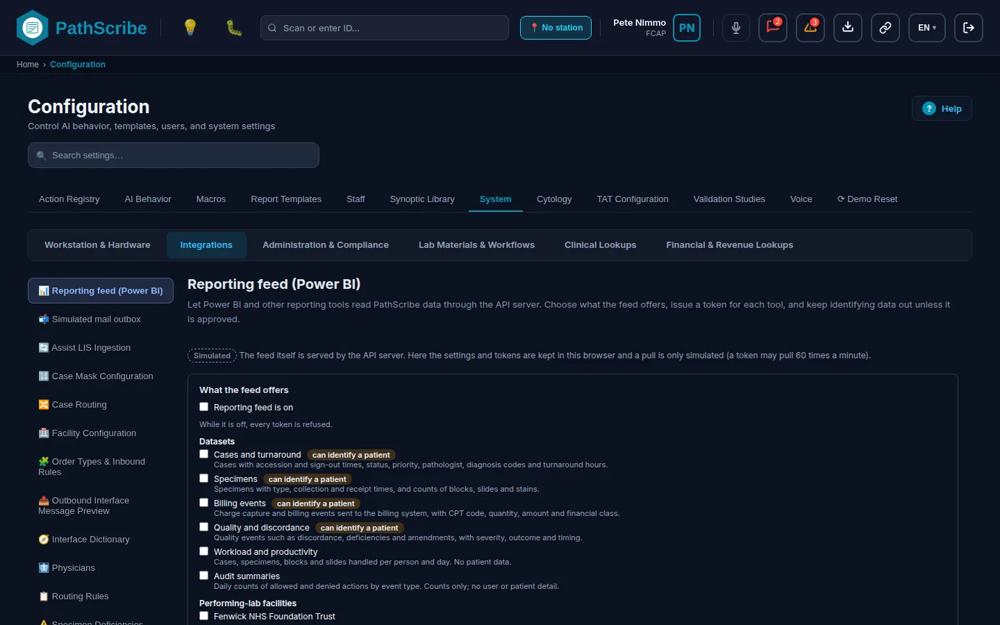
보고 피드 설정, 식별형 토큰 승인, 토큰 목록, 가져오기 테스트, 필드 목록
6. 필드 참조.
피드가 제공하는 내용.
필드 이름
데이터 유형 / 형식
필수/선택
설명 및 업무 로직
시스템 기본값
보고 피드 켜짐
예/아니요 스위치
선택
꺼져 있는 동안에는 모든 토큰이 거부되고 새 토큰을 만들 수 없습니다.
꺼짐
데이터 집합
체크박스: 감사 요약, 청구 이벤트, 케이스 및 처리 시간, 품질 및 불일치, 검체, 업무량 및 생산성. 환자를 식별할 수 있는 항목(케이스, 검체, 청구, 품질)에는 "환자를 식별할 수 있음" 태그가 붙습니다.
선택
모든 토큰이 읽을 수 있는 데이터 집합입니다. 감사 요약은 사용자나 환자 세부 정보가 없는 일별 건수입니다. 업무량에는 환자 데이터가 없습니다.
선택된 항목 없음
수행 검사실 시설
체크박스
선택
피드가 제공하는 시설입니다. 토큰은 그 일부로 제한할 수 있으며, 선택되지 않은 시설에는 결코 접근할 수 없습니다.
선택된 항목 없음
변경 취소, 설정 저장
버튼
해당 없음
변경 사항이 생기기 전까지는 비활성입니다.
해당 없음
식별형 토큰.
필드 이름
데이터 유형 / 형식
필수/선택
설명 및 업무 로직
시스템 기본값
승인자
텍스트, 최대 80자
기록하려면 필수
식별 데이터를 승인한 지정된 담당자입니다.
비어 있음
사유
텍스트, 최대 500자
기록하려면 필수
식별 데이터가 필요한 이유입니다.
비어 있음
승인 기록
버튼
해당 없음
승인을 기록하며, 기록한 사람과 시각도 함께 남깁니다. 그러면 식별형 토큰을 만들 수 있습니다.
해당 없음
승인 철회
버튼
해당 없음
승인을 제거합니다. 이후 새 승인이 기록될 때까지 식별형 토큰은 식별 정보를 전혀 받지 못합니다. 승인이 없으면 "철회할 승인이 기록되어 있지 않습니다."라는 메시지와 함께 거부됩니다.
해당 없음
새 토큰.
필드 이름
데이터 유형 / 형식
필수/선택
설명 및 업무 로직
시스템 기본값
이름
텍스트, 최대 60자. 자리 표시자는 "품질 대시보드".
필수
시설의 활성 토큰 사이에서 고유해야 합니다("이 시설의 다른 활성 워크스테이션이 같은 이름을 사용하고 있습니다."가 화면에 표시되는 문구입니다).
비어 있음
토큰이 받는 내용
비식별 또는 식별형 중 선택
필수
식별형은 승인이 기록되기 전까지 잠겨 있습니다. 식별형은 케이스, 검체, 청구, 품질 데이터 집합에만 의미가 있으며, 다른 데이터 집합에서는 거부됩니다.
비식별
이 토큰이 읽을 수 있는 데이터 집합
피드가 제공하는 데이터 집합의 체크박스
필수 (하나 이상)
피드가 제공하지 않는 데이터 집합은 거부됩니다.
없음
이 토큰이 읽을 수 있는 시설
피드가 제공하는 시설의 체크박스
선택
아무것도 선택하지 않으면 피드가 제공하는 모든 시설이 대상입니다.
없음
토큰 만들기
버튼
해당 없음
복사 버튼과 함께 토큰을 한 번 표시합니다. 문구는 "지금 이 토큰을 복사하십시오 ... 한 번만 표시됩니다."입니다. 토큰은 psbi_로 시작하며 365일 동안 유효합니다.
해당 없음
토큰 목록과 가져오기 테스트.
필드 이름
데이터 유형 / 형식
필수/선택
설명 및 업무 로직
시스템 기본값
이름, 데이터 집합, 시설, 모드, 토큰, 마지막 가져오기, 상태
읽기 전용 열
해당 없음
토큰 열에는 마지막 네 글자와 만료일이 표시됩니다. 상태는 활성, 곧 만료(30일 이내), 토큰 만료 또는 폐기됨입니다. 마지막 가져오기에는 데이터 집합, 행 수, 시각이 표시됩니다.
해당 없음
새 토큰 (교체)
행의 버튼
해당 없음
교체 토큰을 발급합니다. 도구를 갱신할 수 있도록 이전 토큰은 24시간 동안 계속 작동합니다.
해당 없음
폐기
버튼, 이후 사유와 메모
사유 필수
사유: 유출 가능성, 실수로 등록됨, 다른 사이트로 이동, 장비 교체됨, 장비 폐기됨, 기타. 메모는 기타일 때 필수이고 그 밖에는 선택입니다. 지금 폐기로 확정합니다. 폐기된 토큰은 즉시 작동하지 않습니다.
해당 없음
토큰 (가져오기 테스트)
텍스트
필수
붙여 넣은 토큰입니다.
비어 있음
데이터 집합 (가져오기 테스트)
데이터 집합 중 선택
필수
요청할 데이터 집합입니다.
첫 번째 데이터 집합
가져오기
버튼
해당 없음
서버가 어떻게 응답할지를 보여 줍니다. 수락됨(행과 필드, 그리고 모드), 또는 거부됨이며, 거부 사유는 피드 토큰 형식이 아님, 일치하는 토큰 없음, 폐기됨, 만료됨, 허용되지 않는 데이터 집합, 피드가 꺼져 있음, 식별형 토큰에 승인이 없음, 또는 토큰이 최근 1분 동안 60회 가져옴입니다.
해당 없음
필드 목록
읽기 전용 표: 필드, 유형, 비식별 피드
해당 없음
분석가가 보는 열 그대로 각 데이터 집합의 모든 필드를 나타냅니다. 마지막 열에는 유지, 제거 또는 월 단위로 축소가 표시됩니다.
해당 없음
보고 API는 기본적으로 한 페이지에 1,000행을 반환하며 최대 10,000행까지입니다.
7. 권한. 열기: screen:configuration:open. 설정: config:bi-feed:manage. 토큰 생성, 교체, 폐기 및 가져오기 테스트: config:bi-feed-tokens:manage. 식별형 승인의 기록과 철회: config:bi-feed-identified:approve. 세 가지 모두 높은 위험도입니다. Admin과 검사실 책임자가 기본적으로 보유하므로, 병원이 역할 사전에서 분리하지 않는 한 식별형 토큰을 만드는 사람과 이를 승인하는 사람이 같은 사람일 수 있습니다.
알려진 제한. 피드는 아직 제공되지 않으며, 데모 빌드에서는 설정과 토큰만 작동합니다. 데이터를 불러오는 동안과 일부 문제 메시지에서 화면은 피드 토큰을 뜻하는 곳에 "워크스테이션"이라고 표시합니다(문구상의 실수입니다). 토큰의 분당 60회 가져오기 제한과 365일 유효 기간은 코드에 고정되어 있습니다.
1. 탐색: 구성 탭 시스템 > 그룹 실험실 자재 및 워크플로2. 유지 관리 항목: 마이그레이션 필드 매핑
3. 업무 목적 및 범위. 소스 시스템별로 레거시 LIS 자체의 소스 필드 이름을 PathScribe의 마이그레이션 대상 필드에 매핑합니다. 여러 기관을 가진 고객은 둘 이상의 레거시 시스템에서 마이그레이션할 수 있으므로, 각 매핑은 하나의 소스 시스템에 속합니다. 과거 기록의 가져오기는 이 매핑을 읽습니다. 매핑이 없는 소스 필드는 가져오기 때 보고되며 복사되지 않습니다.
4. 사전 요건 및 종속성. 먼저 구성할 것은 없습니다. 과거 데이터 마이그레이션 작업의 가져오기에는 해당 소스 시스템에 대한 활성 매핑이 하나 이상 필요합니다. 이를 건너뛰면 가져오기에서 "이 원본 시스템에는 활성 필드 매핑이 없습니다."라고 표시됩니다.
5. 화면.
소스 시스템 필터와 매핑 추가가 있는 마이그레이션 필드 매핑 목록
6. 필드 참조.
필드 이름
데이터 유형 / 형식
필수/선택
설명 및 업무 로직
시스템 기본값
소스 시스템 필터
선택 목록, 모든 소스 시스템 또는 시스템 하나
선택
목록을 필터링합니다.
모든 소스 시스템
목록 행
읽기 전용: 소스 필드, 대상 필드, 카테고리, 꺼져 있으면 비활성
해당 없음
행마다 매핑 하나이며 편집이 있습니다. 비어 있으면 "등록된 필드 매핑이 없습니다."라고 표시됩니다.
해당 없음
레거시 소스 시스템
텍스트, 자리 표시자 LegacyLIS-Cerner
필수
레거시 시스템의 이름입니다. 가져오기의 소스 시스템 목록은 이 이름들로 만들어집니다.
비어 있음
카테고리
인구통계, 접수 상세, 육안/현미경 텍스트, SNOMED/ICD-O 코딩, 슬라이드/블록 재고, PDF 보고서 보관, 개별 종합 필드 중 선택
인구통계: 이름, 성, 생년월일, MRN, 성별. 접수 상세: 레거시 접수번호, 접수 날짜, 의뢰 의사 이름, 시설 이름, 검체 설명. 육안/현미경 텍스트: 육안 소견, 현미경 소견, 최종 진단. 코딩: SNOMED 코드, ICD-O 코드. 슬라이드/블록 재고: 블록 ID, 슬라이드 ID. PDF 보관: 보관된 보고서 URL. 종합 필드: 종합 필드.
선택 없음
변환 참고사항(선택사항)
텍스트, 자리 표시자 "예: MM/DD/YYYY를 ISO로 변환"
선택
매핑을 읽는 사람을 위한 메모입니다.
비어 있음
매핑 추가, 편집, 저장, 취소
버튼과 창
해당 없음
같은 소스 시스템과 소스 필드에 대한 두 번째 활성 매핑은 거부됩니다. "(필드)에 대한 매핑이 (시스템)에 이미 있습니다."
해당 없음
7. 권한. 열기: screen:configuration:open. 추가와 편집: config:migration-mappings:manage(높은 위험도). Admin과 검사실 책임자가 기본적으로 보유합니다. 같은 권한이 가져오기 실행도 보호합니다.
알려진 제한. 변환 참고사항은 주석일 뿐입니다. 이를 적용하는 코드가 없으므로, 메모를 적는다고 다른 형식의 날짜가 변환되지 않습니다. 매핑의 활성 플래그는 저장되고 가져오기가 이를 따르지만, 창에는 이를 바꾸는 스위치가 없으므로 새 매핑은 항상 활성입니다. 삭제 버튼은 없습니다.
1. 탐색: 주소는 /migration-jobs이며, 구성 화면을 사용할 수 있는 모든 사람이 열 수 있습니다. 이 화면을 여는 메뉴 항목은 없으므로 관리자에게 주소를 알려 주십시오.
2. 유지 관리 항목: 과거 데이터 마이그레이션 작업
3. 업무 목적 및 범위. 레거시 LIS 마이그레이션 작업의 상태와 교차 검증 보고, 그리고 작업을 시작하는 레거시 파일 가져오기 창입니다. 작업은 성공, 실패, 검토가 필요한 레코드의 수를 보고하고, 그 수를 소스 시스템이 밝힌 수와 대조합니다. 가져오기 중에 발견된 모호한 환자 일치는 기존 환자 일치 검토 대기열로 보내지며 여기에서 따로 추적하지 않습니다.
무엇이 구현되어 있고 무엇이 시뮬레이션인지. 구현됨: 파일 읽기, 매핑 적용, 검증, 환자와의 일치 확인, 작업과 레코드별 결과의 기록, 대조. 시뮬레이션: 가져오기는 브라우저에서 실행되며 생성되는 초안 케이스에는 시뮬레이션 표시가 붙습니다. 배너는 서버 측 일괄 가져오기가 이를 대체한다고 알립니다. 파일 자체는 보관되지 않습니다.
4. 사전 요건 및 종속성. 소스 시스템에 활성 필드 매핑이 있어야 하므로 마이그레이션 필드 매핑이 먼저입니다. 이를 건너뛰면 창의 시스템 목록이 비어 있습니다("활성 필드 매핑이 있는 소스 시스템이 아직 없습니다").
5. 화면.
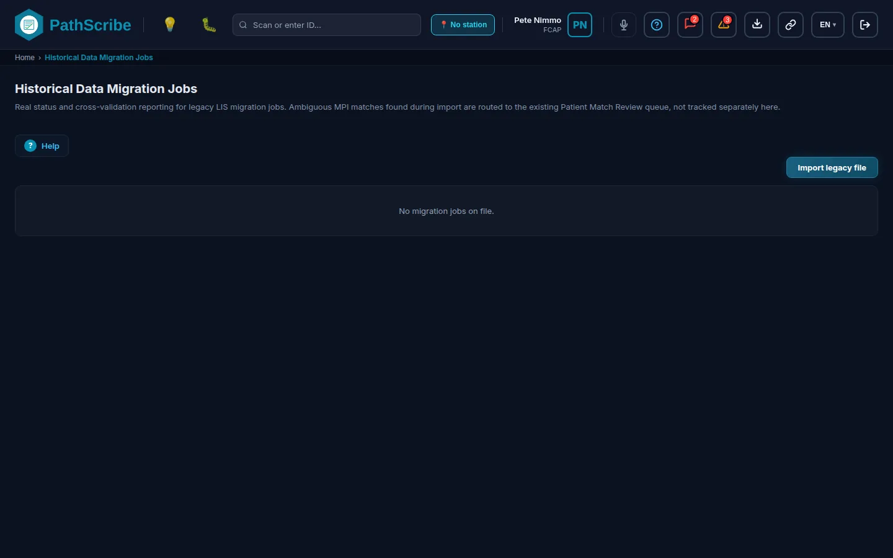
상태 태그와 레거시 파일 가져오기 버튼이 있는 마이그레이션 작업 목록
6. 필드 참조.
목록과 상세.
필드 이름
데이터 유형 / 형식
필수/선택
설명 및 업무 로직
시스템 기본값
레거시 파일 가져오기
버튼
해당 없음
가져오기 창을 엽니다. 권한이 없으면 회색으로 표시됩니다.
해당 없음
작업 행
읽기 전용: 소스 시스템, 상태 태그, 시뮬레이션 태그, 교차 검증 불일치 배지, 개수 "성공 n, 실패 n, 검토 n"
해당 없음
클릭하면 상세가 열립니다. 상태는 대기 중, 진행 중, 완료됨, 오류와 함께 완료됨 또는 실패입니다. 비어 있으면 "등록된 마이그레이션 작업이 없습니다."라고 표시됩니다.
해당 없음
교차 검증
텍스트
해당 없음
대조 완료(신고된 건수 중 처리된 건수), 불일치(신고 건수, 처리 건수, 누락 또는 초과 건수), 또는 "등록된 신고 소스 건수가 없습니다. 대조할 수 없습니다."입니다.
3. 업무 목적 및 범위.데모 빌드에는 연결된 메일 서비스가 없습니다. 시스템이 보냈을 모든 이메일(후속 조치, 종양 위원회 초대, 템플릿 검토 이벤트, 지원 티켓)은 시뮬레이션 레이블과 함께 여기에 보관되므로 무엇이 전송되었을지 확인할 수 있습니다. 브라우저 밖으로 나가는 것은 없습니다. 토스트가 "시뮬레이션 이메일이 기록되었으며 전송되지 않았습니다"라고 알리고 이곳을 가리킵니다.
4. 사전 요건 및 종속성. 없습니다. 기능이 이메일을 보낼 때 항목이 나타납니다.
5. 화면.
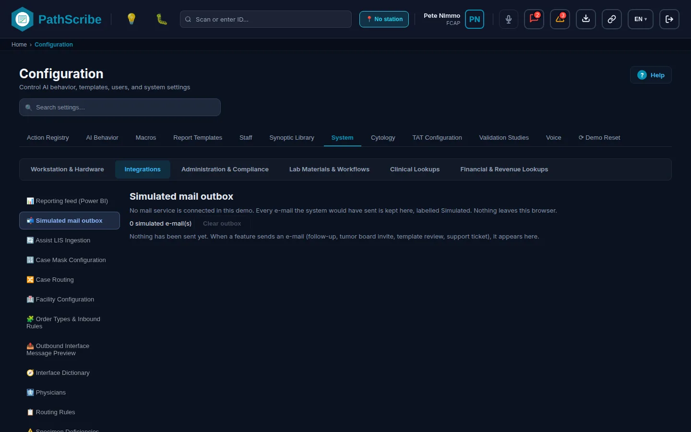
시뮬레이션 보낸 편지함 목록과 열어 본 메시지
6. 필드 참조.
필드 이름
데이터 유형 / 형식
필수/선택
설명 및 업무 로직
시스템 기본값
개수
텍스트, "시뮬레이션 이메일 n건"
해당 없음
보관된 항목입니다. 보낸 편지함에는 최신 200건이 보관됩니다.
해당 없음
기록 시각, 유형, 수신, 제목
읽기 전용 열
해당 없음
유형은 이메일 또는 템플릿 이벤트입니다. 서버가 선택할 수신자는 "(서버가 결정)"으로 표시됩니다.
해당 없음
열기
버튼
해당 없음
받는 사람, 참조, 제목, 본문, 첨부 파일을 표시하고 "시뮬레이션: 이 메시지는 아무에게도 전송되지 않았습니다."라는 안내를 보여 줍니다.
해당 없음
보낸 편지함 비우기
버튼, 확인 창 포함
해당 없음
이 브라우저에서 모든 시뮬레이션 이메일을 제거합니다.
해당 없음
7. 권한. 열기: screen:configuration:open. 이 섹션은 config:vendor-integrations:manage 권한이 있는 모든 사람에게 편집 가능한 것으로 표시되며, 비우기 버튼에는 권한이 없습니다.
알려진 제한. 데모 전용입니다. 서버 빌드는 메일 서비스를 통해 실제 이메일을 보내며 시뮬레이션 목록을 보관하지 않습니다.
1. 탐색: 주소는 /dev/mock-interface-engine이며 데모 빌드에만 있습니다(__DEMO_TOOLS__). API 서버와 통신하는 빌드에는 포함되지 않습니다. 이 페이지에는 메뉴 항목이 없습니다.
2. 유지 관리 항목: 모의 인터페이스 엔진 (PS-239)
3. 업무 목적 및 범위. 개발자와 데모를 위한 도구입니다. 아직 존재하지 않는 시스템을 대신해 응답하므로, 분자검사 작업 목록을 전송하거나 전체 슬라이드 스캔 배치 또는 그 밖의 인터페이스 메시지를 보내고 현실적인 응답(성공, 특정 거부, 멈춘 연결)을 볼 수 있습니다. 페이지는 "개발자 도구이며 실제 기능이 아닙니다."라는 경고와 함께 열립니다. 응답 설정, 수신 메시지 시뮬레이터, 시뮬레이션 엔진이 받은 내용의 로그, 등록기관 응답 시뮬레이터의 네 부분으로 구성됩니다.
4. 사전 요건 및 종속성. 없습니다. 데모 빌드가 필요합니다.
5. 화면.
응답 설정, 수신 시뮬레이터, 엔진 로그, 등록기관 응답 시뮬레이터가 있는 모의 인터페이스 엔진
6. 필드 참조.
응답 설정.
필드 이름
데이터 유형 / 형식
필수/선택
설명 및 업무 로직
시스템 기본값
사용 스위치와 상태
버튼, 상태는 "실제 전송 호출을 가로채는 중", "시작하는 중" 또는 "가로채지 않음"
선택
분자검사 작업 목록 호출에 대한 브라우저 내 가로채기 기능을 시작하거나 중지합니다.
꺼짐
응답 모드
항상 성공, 항상 실패, 시간 초과 중 선택
필수
성공은 HTTP 200으로 응답합니다. 실패는 아래의 상태로 응답합니다. 시간 초과는 응답하지 않으므로 전송이 "전송 중..." 상태로 남습니다.
항상 성공
실패 HTTP 상태
정수
선택
항상 실패일 때 표시됩니다. 비어 있거나 0이면 500으로 돌아갑니다.
500
슬라이드 스캐너 대신 응답
예/아니요 체크박스
선택
스캔 배치가 수락된 뒤 각 슬라이드를 스캔 중, 이어서 스캔 완료로 보고하여 슬라이드 스캔을 처음부터 끝까지 보여 줄 수 있게 합니다.
켜짐
분자검사 장비 결과
양성, 음성, 결과 없음 중 선택
선택
분자검사 작업 목록이 수락된 뒤 모든 환자 검체에 대해 해당 판정을 보고하며, 대조군은 기대대로입니다.
결과 없음
세 개의 패널.
필드 이름
데이터 유형 / 형식
필수/선택
설명 및 업무 로직
시스템 기본값
수신 메시지 시뮬레이터: 샘플 메시지
14개 샘플의 선택 목록: A01 입원, NHS 번호가 확인된 A01 입원, A08 업데이트, A24 연결, A34 병합(이전 형식), A40 병합, 알 수 없는 환자가 있는 A40(예외 대기열로 이동), A43 방문 이동, A45 방문 이동(방문 수준), A47 식별자 변경, A50 방문 번호 변경, 그리고 이벤트 세 개(블록 손상 또는 분실, HPV 결과 수신, 재료가 보관소로 이동)
처리됨 또는 적용되지 않음을 표시합니다. 일치시킬 수 없는 메시지는 인터페이스 예외로 대기열에 들어갑니다. "감사, 오류 로그, 인터페이스를 열어 직접 연결하십시오." 시뮬레이션 레이블이 붙습니다.
해당 없음
시뮬레이션 인터페이스 엔진이 받은 메시지
읽기 전용 목록: 시각, 메시지 유형, 결과(수락, 거부됨, 시간 초과), 열기
해당 없음
엔진 주소가 설정되어 있지 않으면 모든 발신 메시지가 브라우저를 떠나는 대신 여기로 들어옵니다. 열기는 메시지를 보여 주고, 목록 지우기는 목록을 비웁니다.
해당 없음
등록기관 수신 확인 받기: 등록기관, 상태, 응답
선택 목록
필수
전송된 제출 건에 대해 등록기관이 할 응답을 고릅니다. 수락, 경고와 함께 수락, 반려됨(수정 가능), 반려됨(치명적) 또는 응답 없음. 수신은 실제 수신 엔드포인트가 사용할 함수로 처리합니다. 응답 없음이면 제출 건은 응답을 기다리는 상태로 남습니다.
없음
7. 권한. 경로는 구성 화면(screen:configuration:open)으로 제한됩니다. 컨트롤에는 권한이 없습니다.
알려진 제한. 데모 전용입니다. 설정은 브라우저에 보관되며 공유되지 않습니다. 항상 실패 및 시간 초과 모드는 가로채기 기능이 처리하는 분자검사 작업 목록 호출에 영향을 주며, 로그의 시뮬레이션 엔진은 다른 메시지에 대해서도 같은 응답 모드를 따릅니다. 의뢰 결과용 샘플이 없으므로 참조 검사실의 수신 확인 반환은 여기에서 보여 줄 수 없습니다.
이 장에서는 PathScribe가 청구할 항목을 어떻게 결정하는지, 청구가 언제 시스템 밖으로 나갈 수 있는지, 케이스가 어떤 암 등록처와 검진 등록처에 보고되는지를 설명합니다. 또한 청구 페이로드가 사용하는 지불 조회 항목과, 재무 이벤트를 확인하는 시스템 로그 페이지도 다룹니다.
기대할 수 있는 것과 없는 것이 이 세 가지에서 정해지므로 먼저 읽으십시오.
PathScribe가 금액으로 하는 일. PathScribe는 각 청구를 최종 확정 시점에 한 번 고정 레코드로 확정합니다. 레코드는 CPT 또는 HCPCS 코드, 상대 가치 단위(RVU), 수정자로 구성됩니다. PathScribe는 가격을 보유하지 않습니다. 수가표: 미구현. 청구 규칙 어디에도 금액, 가격, 지불자 요율 필드가 없습니다. 청구 페이로드에는 금액이 포함되지 않습니다. 환급액은 PathScribe가 아니라 귀 기관의 청구 시스템 또는 인터페이스 엔진이 계산합니다.
PathScribe가 등록처로 하는 일. PathScribe는 케이스가 보고 대상인지 판단하고, 필수 데이터를 점검하며, 구조화된 JSON 페이로드를 만듭니다. NAACCRXML, COSD XML 또는 그 밖의 등록처 전송 형식은 PathScribe가 직접 작성하지 않습니다. 인터페이스 엔진(PathScribe와 함께 제공되는 ForMedrixAI의 엔진)이 변환하고 전송합니다. 해당 섹션에서 달리 밝히지 않는 한, 제품 내 어떤 등록처 규격도 등록처가 직접 공표한 규격과 대조하여 확인된 것이 아닙니다.
이 장의 대부분은 현재 데모 상태입니다. 운영 환경의 저장소는 ASP.NET CoreAPI 뒤에 있는 Microsoft SQL Server입니다. 이 화면들의 배후 서비스는 브라우저가 데이터를 보관하는 데모 서비스이며, docs/architecture의 API 계약에는 실제 서버에서 시험한 내용이 전혀 없습니다. 각 화면에 자체 상태가 표시됩니다.
7단계 설정 순서
아래 순서대로 화면을 설정하십시오. 각 화면의 "설정 순서" 상자에 해당 화면이 필요로 하는 항목이 표시됩니다.
PathScribe는 예외 없이 청구 유형에 따라 수정자를 설정합니다. TC는 -TC, 26은 -26을 사용하고 Global은 수정자가 없습니다. 그 밖의 수정자는 참고용일 뿐입니다.
청구가 생성되는 시점. 기본적으로 기술 구성 요소는 검체를 육안 검사할 때 생성됩니다. 전문 구성 요소와 Global 구성 요소는 최종 서명 시 생성됩니다. 이 설정은 청구 발생 트리거(TC/26/Global)에서 엔터프라이즈 전체 또는 사이트 하나에 대해 변경할 수 있습니다.
청구는 생성되면 고정됩니다. 최종 확정 시 PathScribe는 청구를 한 번 확정하여 CPT, HCPCS, RVU, 수정자의 스냅샷을 보관하는 변경 불가능한 청구 레코드로 만듭니다. 이후 청구 규칙을 수정해도 이미 만들어진 청구는 바뀌지 않습니다. 서명 후의 정정은 수정이 아니라 취소(credit)와 재청구(rebill) 쌍으로 처리합니다.
청구 규칙은 버전으로 관리됩니다. 청구 규칙은 청구 코드, 범위, 버전으로 식별됩니다. 버전은 추가만 되며 삭제되지 않습니다. 상태는 DRAFT, PENDING_APPROVAL, ACTIVE, REJECTED, RETIRED입니다. 버전을 작성하거나 제출한 사람은 그 버전을 승인할 수 없습니다(이중 확인 원칙(Four-Eyes principle)이며 서비스에서 강제됩니다). 승인되면 새 버전이 적용되고 그것이 대체하는 버전은 종료됩니다.
범위. 규칙은 엔터프라이즈 전체 또는 사이트 하나에 적용됩니다. 이 화면들에서는 시설이 아니라 사이트라는 용어를 사용합니다.
분할 케이스. 기술 구성 요소를 전문 판독과 다른 검사실에서 수행하는 경우, 케이스에는 기술 구성 요소 시설과 수행 시설이 함께 기록됩니다. 릴리스 판단 시 이를 확인합니다(청구 릴리스 참조).
청구가 가는 곳. 준비된 청구는 발신 대기열로 갑니다. PENDING_APPROVAL 또는 HOLD 상태의 청구는 발신 전송 처리에서 건너뜁니다. 전송, 변환, 재시도는 인터페이스 엔진이 담당합니다. PathScribe는 무엇을 언제 릴리스할지만 결정합니다.
선택적 청구 승인. 청구를 승인 대기로 보류할 수 있습니다. 승인 권한 billing:charge:approve는 수행 검사실별로 확인됩니다. 이 권한은 권한 카탈로그에 있지만 기본으로 이를 보유한 기본 제공 역할은 없으므로, 청구 승인을 사용하려면 역할 사전에서 부여하십시오.
1. 탐색: 구성 탭 시스템 > 그룹 재무 및 수익 조회2. 유지 관리 항목: 청구 발생 트리거(TC/26/Global)
3. 업무 목적 및 범위. 각 청구 유형이 청구를 생성하는 케이스 마일스톤을 정합니다. 기본값은 TC는 검체육안 검사 시, 26과 Global은 케이스 서명 시입니다. 기본값은 엔터프라이즈 전체 또는 사이트 하나에 대해 재정의할 수 있습니다. 자체 재정의가 없는 사이트는 엔터프라이즈 설정을 사용합니다.
4. 사전 요건 및 종속성. 사이트 재정의는 존재하는 사이트에만 설정할 수 있으므로 먼저 시설을 설정하십시오. 목록에 사이트가 없어도 엔터프라이즈 전체 트리거는 설정할 수 있습니다.
5. 화면.
청구 유형별로 마일스톤 목록이 하나씩 있는 청구 발생 트리거
6. 필드 참조.
필드 이름
데이터 유형 / 형식
필수/선택
설명 및 업무 로직
시스템 기본값
범위 선택기
엔터프라이즈 또는 사이트 하나 중 선택
필수
어느 범위의 트리거를 보고 변경할지 선택합니다.
엔터프라이즈
기술(TC) 트리거
케이스 마일스톤 중 선택
필수
기술 청구가 생성되는 마일스톤입니다. 드롭다운을 변경하면 즉시 저장됩니다.
검체 육안 검사 완료(SPECIMEN_GROSSED)
전문(26 Prof.) 트리거
케이스 마일스톤 중 선택
필수
전문 청구가 생성되는 마일스톤입니다. 즉시 저장됩니다.
사례 서명 완료(CASE_SIGNED_OUT)
전체(Global) 트리거
케이스 마일스톤 중 선택
필수
Global 청구가 생성되는 마일스톤입니다. 즉시 저장됩니다.
사례 서명 완료(CASE_SIGNED_OUT)
기본값으로 되돌리기
버튼
선택
선택한 범위의 재정의를 제거하고 기본 제공 기본값으로 되돌립니다.
해당 없음
7. 권한. 화면 열기: screen:configuration:open. 변경: config:billing-triggers:manage. 기본적으로 관리자와 검사실 책임자가 보유합니다. 변경할 때마다 감사 이벤트가 기록됩니다("Charge release trigger changed", "Charge release triggers reset to default").
알려진 한계. 데모 서비스뿐입니다. 트리거를 변경하면 그 이후에 생성되는 청구에만 영향을 주며, 이미 생성된 청구는 바뀌지 않습니다.
수가표: 미구현. 개요에서는 수가표를 요구합니다. 금액, 가격 또는 지불자별 요율을 위한 화면, 계약, 필드가 없습니다. 청구 규칙에는 CPT 코드, HCPCS 코드, 업무(work), 진료 비용(PE), 의료 과실(MP)의 RVU 값만 있습니다. 존재하는 가장 가까운 항목은 청구 사전(비용 캡처)과 RVU 코드 매핑(생산성)의 RVU 값입니다. ZERO_FEE_MAPPING_ERROR라는 점검은 이름이 수가 점검처럼 붙어 있지만, 업무, PE, MP 전체에서 RVU가 0으로 확정되었고 억제 안내가 없는 청구를 검사합니다.
코드 일괄 로드. CPT, HCPCS 또는 그 밖의 코드 목록을 일괄 로드하려면 코드 일괄 가져오기를 사용하십시오. 이 항목은 다른 조회 항목과 함께 문서화되어 있습니다.
1. 탐색: 구성 탭 시스템 > 그룹 재무 및 수익 조회2. 유지 관리 항목: CPT 수정자 사전
3. 업무 목적 및 범위. 청구 사전의 코딩 규칙 탭이 제공하는 CPT 수정자 코드(예: 26, TC, 59, XS)의 목록입니다. 여기의 수정자는 참고용입니다. PathScribe는 이 장의 소개에 설명한 고정된 TC 및 26 규칙 외에는 수정자를 점검하거나 추가하지 않습니다.
AMA(American Medical Association)의 텍스트는 라이선스 대상이므로, 제공되는 설명은 "Modifier 59"와 같은 자리 표시자이며 합성 데이터로 표시됩니다. 라이선스를 보유하고 있다면 직접 설명을 로드하십시오.
4. 사전 요건 및 종속성. 시작 지점입니다. 모든 변경은 승인을 기다리는 새 버전이 되므로, 변경이 적용되려면 승인 권한이 있는 두 번째 사람이 필요합니다.
5. 화면.
활성 버전과 코드 목록이 있는 CPT 수정자 사전
6. 필드 참조.
필드 이름
데이터 유형 / 형식
필수/선택
설명 및 업무 로직
시스템 기본값
버전 레이블
텍스트, 읽기 전용
해당 없음
활성 사전 버전입니다. 시드 버전 ID는 modifier-v-seed-2026입니다. 승인 대기 중인 라이선스 버전도 하나 더 시드되어 있습니다.
Code와 Description 열이 있는 파일로 사전을 교체합니다. 템플릿: ModifierDictionaryTemplate.csv. 승인 대기 버전을 만듭니다.
없음
라이선스 확인
체크박스
업로드 시 필수
업로드하는 설명을 사용할 권리가 있음을 확인합니다. 이를 체크하지 않으면 업로드가 진행되지 않습니다.
체크되지 않음
업로드용 버전 레이블
텍스트
선택
승인 대기 버전의 이름을 정합니다.
없음
7. 권한. 화면 열기: screen:configuration:open. 생성 또는 편집: config:billing-modifiers:manage. 버전 승인, 거부 또는 활성화: config:billing-tables:approve이며, 대기 중인 청구 규칙 승인에서 사용합니다. 기본적으로 관리자와 검사실 책임자가 둘 다 보유합니다. 버전을 제출한 사람은 그 버전을 승인할 수 없습니다.
알려진 한계. 사전은 목록일 뿐입니다. 청구에 수정자를 강제하는 화면이나 점검은 없습니다. 제공되는 텍스트는 합성 데이터입니다.
1. 탐색: 구성 탭 시스템 > 그룹 재무 및 수익 조회2. 유지 관리 항목: RVU 코드 매핑(생산성)
3. 업무 목적 및 범위. 병리의 생산성(업무 RVU)에 사용되고 청구 사전이 CPT 코드를 고르는 원본 목록이 되는, 상대 가치 단위가 포함된 소규모 선별 CPT 코드 목록입니다. 청구 시스템이 아니며 금액을 담지 않습니다. 시드는 CMS 2026 의사 수가표 상대 가치 파일의 일부이며 "CMS 2026 (April update)"라는 라벨이 붙어 있습니다(버전 ID rvu-v-seed-2026). 일부 행에는 업무 RVU가 없으며 미확인(Unverified)으로 표시됩니다.
4. 사전 요건 및 종속성. 시작 지점입니다. 승인 대기 또는 거부된 버전은 청구를 확정하는 데 사용되지 않으므로, 업로드한 내용은 두 번째 사람이 승인할 때까지 효력이 없습니다.
열: Code 또는 HCPCS, Description, WorkRVU. CMS 상태 코드를 따르며(A, R, T 행만 지급 대상) 수정자 행은 건너뜁니다. 업로드된 행은 설명에서 수준이 추정되고(기본값은 specimen) 청구 유형은 Global로 설정됩니다. 승인 대기 버전을 만듭니다. 템플릿: RvuCodeMapTemplate.csv.
7. 권한. 화면 열기: screen:configuration:open. 편집 또는 업로드: config:billing-rvu:manage. 승인: config:billing-tables:approve. 기본적으로 관리자와 검사실 책임자가 둘 다 보유합니다. 이중 확인 원칙(Four-Eyes)이 적용됩니다.
알려진 한계. 이 목록은 CMS 전체 파일이 아니라 선별된 일부입니다. 검체 수준의 기본 코드 선택(88302, 88305, 88309)은 케이스 데이터로 판단할 수 없으므로 자동으로 이루어지지 않습니다.
1. 탐색: 구성 탭 시스템 > 그룹 재무 및 수익 조회2. 유지 관리 항목: 청구 사전(비용 캡처)
3. 업무 목적 및 범위. 버전이 관리되는 청구 규칙 목록입니다. 각 규칙은 PathScribe 청구 코드를 CPT 코드, 선택적인 HCPCS 코드, 청구 유형, RVU 값에 연결하며, 엔터프라이즈 전체 또는 사이트 하나에 적용됩니다. 사이트 재정의는 해당 사이트에서 엔터프라이즈 규칙을 대체합니다. 케이스가 최종 확정될 때 이 규칙들로 청구가 확정됩니다.
4. 사전 요건 및 종속성. CPT 선택기는 RVU 코드 매핑을 읽고 수정자 체크박스는 CPT 수정자 사전을 읽습니다. 이를 건너뛰면 CPT 검색 결과가 비어 있고 수정자가 제공되지 않습니다.
5. 화면.
사이트 선택기가 있는 청구 사전 표
6. 필드 참조.
필드 이름
데이터 유형 / 형식
필수/선택
설명 및 업무 로직
시스템 기본값
보기
엔터프라이즈 또는 사이트 하나 중 선택
필수
표에 어느 범위의 규칙을 표시할지 정합니다.
엔터프라이즈
청구 코드
텍스트, 열
해당 없음
PathScribe 청구 코드입니다.
없음
CPT
텍스트, 열
해당 없음
CPT 코드입니다.
없음
설명
텍스트, 열
해당 없음
규칙 설명입니다.
없음
RVU(업무)
숫자, 열
해당 없음
업무 RVU입니다. 저장된 RVU가 RVU 코드 매핑과 다르면 "Code Map: N" 표시가 나타납니다.
DRAFT, PENDING_APPROVAL, ACTIVE, REJECTED 또는 RETIRED입니다.
없음
변경 사유
텍스트, 열
해당 없음
입력된 사유입니다.
없음
작업
버튼
선택
복제. 승인 요청(DRAFT 버전). 폐기(ACTIVE 버전).
해당 없음
새 버전은 항상 DRAFT로 저장됩니다. 승인 요청을 누르면 PENDING_APPROVAL로 바뀝니다.
7. 권한. 화면 열기: screen:configuration:open. 생성, 제출 및 폐기: config:billing-rules:manage. 승인 또는 거부: config:billing-tables:approve. 기본적으로 관리자와 검사실 책임자가 둘 다 보유합니다. 제출, 승인, 거부 시 감사 이벤트가 기록됩니다("Billing rule submitted for approval").
알려진 한계. 가격 또는 수가 필드가 없습니다(위의 수가표 참조). 코딩 규칙은 안내일 뿐입니다.
구조화된 케이스 데이터에서 제안되는 코드: 염색 범주, 특수 염색에 대한 88312, 검체당 면역조직화학에 대한 88342 및 +88341, 동결 절편에 대한 88331 또는 88332.
기본 코드의 대체 목록. 청구에 바로 사용할 수 있는 상태는 아닙니다.
코드 창과 청구 검토 패널에서의 수동 코드 입력.
미구현: AI 또는 자연어 처리로 보고서 텍스트에서 코드를 제안하는 기능. 이 작업은 변호사 및 규정 준수 담당자의 의견에 따라 결정됩니다. 기본 검체 코드(88302, 88305, 88309)는 자동으로 판단되지 않습니다. 가장 가까운 구성 화면은 Smart Capture입니다.
서명 시 청구 점검. 서명 시 PathScribe는 여섯 가지 점검을 실행하고 발견 사항마다 결함을 기록합니다.
트리거
코드
심각도
A
UNSUPPORTED_CPT_LEVEL
COMPLIANCE_WARNING
B
NCCI_BUNDLING_VIOLATION(수정자 지시자가 0인 쌍만 해당)
CRITICAL_REJECTION_RISK
C
MISSING_DIAGNOSTIC_ICD10
CRITICAL_REJECTION_RISK
D
UNATTACHED_ANCILLARY_ORDER
COMPLIANCE_WARNING
E
MODIFIER_MISMATCH
CRITICAL_REJECTION_RISK
F
ZERO_FEE_MAPPING_ERROR
REVENUE_LEAKAGE
MISSING_CHARGE, POST_SIGNOUT_CORRECTION, BLOCK_DELETED는 서명 시점이 아닌 때에 발생합니다. 이 점검들은 병리의의 서명을 막지 않습니다. 청구 항목이 QA 대상으로 표시되었다는 토스트 알림이 나타나며 점검 결과는 QA로 전달됩니다. 그러나 내보내기는 막습니다. 결함이 하나라도 OPEN 또는 UNDER_REVIEW 상태이면 케이스를 내보낼 수 없습니다. 상태는 OPEN, UNDER_REVIEW, RESOLVED, OVERRIDDEN_WITH_JUSTIFICATION입니다.
1. 탐색: 구성 탭 시스템 > 그룹 재무 및 수익 조회2. 유지 관리 항목: NCCI 편집 규칙(번들링)
3. 업무 목적 및 범위. National Correct Coding Initiative(NCCI)의 시술 간 쌍을 보관합니다. 쌍은 함께 청구할 수 없는 Column 1 코드와 Column 2 코드로 이루어집니다. 수정자 지시자가 0인 쌍은 서명 시 결함을 발생시킵니다. 실제 CMS 데이터는 제공되지 않습니다. 시드는 합성 쌍 하나(88305와 88300, 지시자 0, 분기 DEMO)이며 화면에 경고가 표시됩니다. CSV는 라이선스 보유자가 업로드합니다.
4. 사전 요건 및 종속성. 시작 지점입니다. 업로드나 편집은 승인 대기 중인 가져오기가 되므로, 쌍이 사용되려면 승인이 필요합니다.
5. 화면.
합성 데이터 경고와 쌍 표가 있는 NCCI 편집 규칙
6. 필드 참조.
필드 이름
데이터 유형 / 형식
필수/선택
설명 및 업무 로직
시스템 기본값
분기 버전
텍스트, 예: 2026Q3
업로드 시 필수
가져오기의 이름을 정합니다.
없음
CSV 업로드
파일, CSV
선택
열: Column 1, Column 2, Modifier Indicator(0, 1 또는 9), Effective Date, Deletion Date. 템플릿: NcciPtpEditTemplate.csv. 승인 대기 중인 가져오기를 만듭니다.
없음
쌍 표
표, 읽기 전용
해당 없음
활성 가져오기의 Column 1, Column 2, 지시자, 날짜입니다.
합성 쌍 하나
합성 데이터 경고
알림
해당 없음
활성 가져오기가 합성 시드인 동안 표시됩니다.
표시됨
편집 창
필드 이름
데이터 유형 / 형식
필수/선택
설명 및 업무 로직
시스템 기본값
수정자 지시자
선택: 0 절대 우회 불가, 1 수정자로 우회 가능, 9 편집이 적용되지 않음
필수
0인 쌍만 서명 시 결함을 발생시킵니다.
현재 값
삭제일
날짜
선택
쌍의 적용이 중단되는 날짜입니다.
비어 있음
편집할 때마다 전체 표가 "Manual edit"와 해당 쌍의 이름이 붙은 PENDING_APPROVAL 상태의 새 가져오기로 다시 전송됩니다.
7. 권한. 화면 열기: screen:configuration:open. 업로드 또는 편집: config:billing-ncci:manage. 승인: config:billing-tables:approve. 기본적으로 관리자와 검사실 책임자가 둘 다 보유합니다.
알려진 한계. 실제 NCCI 데이터는 제공되지 않습니다. 지시자 1과 9는 결함을 발생시키지 않습니다.
1. 탐색: 구성 탭 시스템 > 그룹 관리 및 규정 준수2. 유지 관리 항목: 청구 릴리스
3. 업무 목적 및 범위. 보류 규칙입니다. 각 규칙은 어떤 청구에 일치하는지와 그 청구를 어떻게 처리할지를 정합니다. 즉시 릴리스, 일정 시간 보류, 또는 수동 검토 여부와 관계없이 예약된 일괄 릴리스 중에서 선택합니다. 일치하는 규칙 중 가장 구체적인 규칙이 적용됩니다. 무엇을 언제 릴리스할지는 PathScribe가 결정합니다. 메시지를 옮기는 것은 인터페이스 엔진입니다.
구체성 점수:시설 100, 청구 유형 8, 케이스 유형 4, 의뢰 기관 4, 병리의 2, 수정 1.
일치하는 규칙이 없을 때: 마일스톤에서 릴리스, 수동 검토 켜짐, 자동 릴리스 켜짐.
항상 적용되는 사항: 수정 변경은 검토를 위해 보류됩니다. CPT에 매핑이 없는 청구는 보류됩니다(unmappedCpt). 기술 시설이 없는 분할 케이스는 보류됩니다(missingTechnicalFacility).
4. 사전 요건 및 종속성. 규칙은 시설이나 의뢰 기관을 지정할 수 있으므로 먼저 설정하십시오. 예약된 일괄 전송은 전송 일정에서 정의한 시간표에 따라 이루어집니다.
규칙 점검에서는 다음 문제 코드가 발생합니다: billingTypeInvalid, modeInvalid, holdInvalid, batchRequired, amendmentInvalid, caseTypesInvalid. 엔터프라이즈 규칙 세 개(TC, 26, Global)가 시드되어 있으며, 각각 DYNAMIC_WITH_HOLD, 0분, 자동 릴리스 켜짐, 수동 검토 켜짐입니다.
7. 권한. 화면 열기: screen:configuration:open. 변경: config:billing-release:manage. 기본적으로 관리자와 검사실 책임자가 보유합니다. 저장은 감사됩니다. 메시지의 릴리스, 보류, 회수, 재전송은 별도의 인터페이스 권한(interface:outbound:release, hold, retract, resend)이며 관리자가 보유합니다.
1. 탐색: 구성 탭 시스템 > 그룹 재무 및 수익 조회2. 유지 관리 항목: 청구 내보내기 미리보기
3. 업무 목적 및 범위.케이스를 조회하여 PathScribe가 청구를 위해 무엇을 전송할지 확인합니다. JSON 페이로드가 PathScribe가 전송하는 내용입니다. HL7DFT^P03 텍스트는 인터페이스 엔진이 만들 내용의 미리보기입니다. PathScribe는 HL7을 만들거나 전송하지 않습니다. X12 837P, KVDT, SESAM-Vitale은 존재하지 않습니다.
4. 사전 요건 및 종속성. 청구가 있는 최종 확정된 케이스가 필요합니다. 케이스에 해결되지 않은 청구 결함이 있으면 내보내기가 차단됩니다.
현재 있는 것. PathScribe에는 암 등록처 정의 14개와 자궁경부 검진 등록처 정의 12개가 있습니다. 모든 암 등록처는 configurable로 표시되며, 이는 규격이 등록처가 공표한 규격과 대조하여 확인되지 않았음을 의미합니다. 검진 등록처 중 세 곳은 확인됨으로 표시됩니다. 영국 자궁경부 검진 관리 시스템(CSMS), 네덜란드의 PALGA, 호주 국가 암 검진 등록처(NCSR)입니다.
각 형식이 현재 의미하는 것. PathScribe는 구조화된 JSON 페이로드 하나를 만듭니다. 명시된 형식은 인터페이스 엔진이 변환하게 될 대상입니다. PathScribe는 NAACCR XML, COSD XML, oBDS, CDA 및 그 밖의 형식을 작성하지 않습니다. 스페인 암 등록처나 스페인 검진 등록처는 없습니다. 다만 스페인은 제품에서 하나의 관할권으로 존재합니다. NAACCR XML 일괄 파일: 미구현.MIPS 및 MACRA: 미구현(품질 및 공중 보건 보고 참조).
내장된 보고 규칙.
트리거는 수술병리 서명뿐입니다. 세포병리는 암 보고를 발생시키지 않습니다. 보고는 보내고 잊는(fire-and-forget) 방식이며 서명을 막지 않습니다.
필수 데이터: 생년월일, 진단일, 주 진단, ICD-O 코드. 환자 식별자를 기준으로 하는 등록처는 그 식별자도 필요합니다. 데이터가 누락된 보고는 HOLD_MISSING_MANDATORY_DATA로 보류되며 레지스트리 예외에 나타납니다.
보고 대상 여부: 문서화된 NAACCR 제외 항목만 구현되어 있습니다(자궁경부 상피내암종과 CIN III, 전립선 상피내종양 III, 피부 기저세포암 및 편평세포암). 이 목록이 전부는 아닙니다.
전송 게이트: 검증 인스턴스는 실제 케이스를 절대 전송하지 않습니다. 운영 인스턴스는 해당 등록처의 운영 전환이 승인될 때까지 보고를 보류합니다.
환자 거부: 환자 거부 인정 설정은 기본적으로 꺼져 있습니다. 꺼져 있으면 거부한 환자도 계속 보고되며 감사 로그에 그 사실이 기록됩니다.
1. 탐색: 구성 탭 시스템 > 그룹 실험실 자재 및 워크플로2. 유지 관리 항목: 암 등록 보고
3. 업무 목적 및 범위.엔터프라이즈가 기본으로 보고할 암 등록처를 선택하고, 시설이 이를 재정의할 수 있게 합니다. 또한 각 등록처의 운영 전환 승인을 보관합니다. 각 등록처 행에는 규격 상태 배지, 관할권, 식별자, 전송 형식이 표시됩니다.
4. 사전 요건 및 종속성. 시설 재정의는 시설 목록에서 선택하므로 먼저 시설을 설정하십시오. 등록처를 선택하지 않으면 암 보고가 만들어지지 않습니다.
5. 화면.
엔터프라이즈 기본 등록처, 시설별 재정의, 등록처 연결 패널
6. 필드 참조.
필드 이름
데이터 유형 / 형식
필수/선택
설명 및 업무 로직
시스템 기본값
엔터프라이즈 기본 등록처
없음과 등록처 14개 중 선택
필수
재정의가 없는 모든 시설에 사용되는 등록처입니다.
없음(데모 시드는 Metro General을 naaccr_us로 설정합니다)
환자 거부 인정
체크박스
선택
체크하면 보고를 거부한 환자는 보고되지 않습니다.
꺼짐
저장
버튼
선택
위의 두 필드를 저장합니다.
해당 없음
레지스트리(운영 전환)
선택
등록처를 둘 이상 사용할 때 필수
아래의 연결 패널에 표시할 등록처를 선택합니다.
사용 중인 첫 번째 등록처
재정의 추가
버튼
선택
새 시설 재정의 행을 엽니다.
해당 없음
시설
시설 중 선택
재정의 시 필수
재정의가 적용되는 시설입니다.
없음
레지스트리
등록처 14개 중 선택
재정의 시 필수
해당 시설의 등록처입니다.
없음
저장, 취소, 제거
버튼
선택
재정의를 저장하거나 취소하며, 저장된 재정의를 제거합니다.
해당 없음
등록처 연결 패널(운영 전환)
세포병리 등록 보고에도 같은 패널이 나타납니다. 이 패널은 등록처를 대기, 테스트 중, 검증됨, 운영 중 단계로 진행시킵니다. 인스턴스는 두 가지 역할 중 하나를 가집니다. 검증 인스턴스는 실제 데이터를 절대 전송하지 않고 테스트 모음만 실행합니다. 운영 인스턴스는 유효한 승인이 있는 운영 중인 등록처에만 실제 결과를 전송하며, 그렇지 않은 결과는 보류되었다가 승인되면 따라잡아 전송됩니다.
필드 이름
데이터 유형 / 형식
필수/선택
설명 및 업무 로직
시스템 기본값
템플릿 버전 및 상태
텍스트, 읽기 전용
해당 없음
등록처 템플릿 버전과 그것이 최신인지 여부입니다.
없음
바뀐 내용
목록, 읽기 전용
해당 없음
마지막으로 확인한 버전 이후의 변경 사항입니다.
없음
계약 참조
텍스트
기록 시 필수
데이터 공유 계약의 참조 번호입니다. 계약 기록을 누르면 저장됩니다.
비어 있음
테스트 모음 실행
버튼(검증 인스턴스)
선택
합성 테스트 케이스(SYN- 환자)를 실행합니다. 검진 3건과 암 2건입니다. 수락된 결과가 최소 1건 필요합니다(REGISTRY_GO_LIVE_MIN_TEST_ACCEPTS).
7. 권한. 화면 열기: screen:configuration:open. 등록처 설정 변경: config:cancer-registry:manage. 테스트 모음 실행: registry:test-suite:run. 운영 전환 승인: registry:live-register:approve. 기본적으로 관리자가 이 권한들을 보유합니다. 검사실 책임자는 config:cancer-registry:manage를 보유하지 않으며, 운영 전환 승인은 자체 시드를 통해 보유합니다. 승인에는 자격 증명 재입력이 필요합니다.
알려진 한계. ICD-O-3 입력은 아직 미해결입니다. 코드 창의 ICD-O 탭은 8500/3 같은 코드가 아니라 SNOMED 형태학 식별자를 저장합니다. 등록처 규격은 확인되지 않았습니다. 이 화면에는 접근 표에 섹션 수준의 변경 권한이 없으며, 버튼은 권한 버튼 방식으로 회색 처리됩니다.
1. 탐색: 구성 탭 시스템 > 그룹 관리 및 규정 준수2. 유지 관리 항목: 영국 암 등록소(COSD)
3. 업무 목적 및 범위. Cancer Outcomes and Services Dataset(COSD)의 전송 대상 설정이며, 화면에는 COSD(잉글랜드)로 표시됩니다. 전송 라벨, 수정 기한, 비영업일을 엔터프라이즈에 대해 한 번 설정하며, 원하면 시설별로 한 번씩 설정할 수 있습니다. 점검 패널의 요소 이름은 PathScribe의 단순화된 모델이며 공식 COSD 스키마가 아닙니다.
4. 사전 요건 및 종속성. 먼저 암 등록 보고 화면에서 COSD 등록처를 선택하십시오. 시설 항목을 제거하면 해당 시설은 엔터프라이즈 설정으로 돌아갑니다.
1. 탐색: 구성 탭 시스템 > 그룹 관리 및 규정 준수2. 유지 관리 항목: 미국 전자 병리 보고
3. 업무 목적 및 범위. 미국 주 암 등록처로의 전자 병리(ePath) 보고입니다. 일반적인 National Program of Cancer Registries(NPCR) 기본 메시지(HL7 v2.5.1 ORU^R01)를 주(州) 프로필로 조정한 다음 전송 방식(PHIN-MS, SFTP, Direct TCP 또는 HTTPS API)으로 보냅니다. 주는 환자의 주소가 아니라 수행 시설의 주에서 선택됩니다. 라벨이 붙은 예시 프로필만 제공됩니다.
4. 사전 요건 및 종속성. 시설 구성에서 시설의 주가 설정되어 있어야 합니다. 시설이나 프로필이 없으면 보고는 보류되며(routing:noFacility, routing:noProfile) 서명은 막히지 않습니다.
1. 탐색: 구성 탭 세포병리 > 섹션 레지스트리 보고2. 유지 관리 항목: 레지스트리 보고
3. 업무 목적 및 범위.암 등록처와는 별개인 자궁경부 검진 프로그램 보고입니다. 검진 결과가 암 보고를 발생시키는 일은 없습니다. 정의는 12개입니다: csms_uk, nicsp_northern_ireland, sccrs_scotland, cervicalcheck_ireland, palga_netherlands, germany_okfe, france_crcdc, belgium_chr, ncsr_australia, ncsp_new_zealand, canada_provincial, kncsp_kccr_korea. 미국이나 스페인의 검진 등록처는 없습니다. 각 등록처의 매핑은 귀 기관의 세포병리 범주를 적정성, 주 판독, 추가 판독, 권고에 대한 등록처의 코드에 연결합니다.
4. 사전 요건 및 종속성. 매핑 표에는 귀 기관의 세포병리 판독 범주가 나열되므로 그것들을 먼저 설정해야 합니다. 건너뛰면 표가 비어 있습니다.
레지스트리 연결 패널은 암 등록 보고에 설명되어 있습니다. 여기서는 검진 권한을 사용합니다.
7. 권한. 화면 열기: screen:configuration:open. 변경: config:screening-registry:manage. 테스트 모음 실행: registry:test-suite:run. 운영 전환 승인: registry:live-register:approve. 기본적으로 관리자가 이 권한들을 보유합니다. 검사실 책임자는 기본적으로 config:screening-registry:manage를 보유하지 않습니다.
알려진 한계. 세 개의 등록처(CSMS, PALGA, NCSR)는 확인됨으로 표시되며, 나머지는 configurable이고 확인되지 않았습니다. 독일, 프랑스, 벨기에는 일괄 파일 등록처입니다(레지스트리 일괄 파일 참조).
1. 탐색: 구성 탭 시스템 > 그룹 실험실 자재 및 워크플로2. 유지 관리 항목: 레지스트리 일괄 파일
3. 업무 목적 및 범위. 메시지가 아니라 파일을 받는 등록처를 위해, 일괄 프로필이 어떤 레코드를 포함할지, 파일을 어떻게 구성할지, 이름을 어떻게 붙일지를 정합니다. 형식은 CSV, XML, NAACCR XML입니다. NAACCR XML은 목록에 있지만 미구현입니다. 제공되는 NAACCR 프로필은 비활성화되어 있습니다. 예시 프로필이 하나 제공되며(germany_okfe 기반, CSV, 구분 기호 ;, 10열, 꺼짐) 프로그램 규격이 아닙니다. 실제 프로그램 레이아웃은 미구현입니다.
4. 사전 요건 및 종속성. 일괄 파일은 전송 일정의 시간표에 따라 만들어지고 인터페이스 엔진이 SFTP로 전송합니다. 먼저 암 등록 또는 세포병리 화면에서 등록처를 선택하십시오.
5. 화면.
레지스트리 일괄 파일 프로필 카드
6. 필드 참조.
필드 이름
데이터 유형 / 형식
필수/선택
설명 및 업무 로직
시스템 기본값
대기 중
건수, 읽기 전용
해당 없음
대기 중인 항목 확인을 누르면 대기 중, 지금 보낼 항목, 보류된 항목, 기한 경과, 다음 파일이 표시됩니다.
없음
지금 파일 생성
버튼
선택
파일을 수동으로 만듭니다. 한 번 다운로드되며 저장되지 않습니다. 매니페스트에 SHA-256, 순번, 건수, 보류된 레코드가 나열됩니다.
해당 없음
켜기, 끄기
버튼
선택
프로필을 활성화합니다.
꺼짐
편집
버튼
선택
프로필 편집기를 엽니다.
해당 없음
삭제
버튼
선택
제공되는 프로필에서는 사용할 수 없습니다.
해당 없음
실행 상태
텍스트, 읽기 전용
해당 없음
awaitingAck, accepted, partlyRejected 또는 rejected.
필드마다 한 번씩 사용합니다. 필수 열이 없는 레코드는 REGISTRY_NOT_READY로 보류됩니다.
없음
실시간 미리보기
텍스트, 읽기 전용
해당 없음
파일 레이아웃을 보여 줍니다.
없음
7. 권한. 화면 열기: screen:configuration:open. 프로필 관리: config:batch-registry-feed:manage(관리자 및 검사실 책임자). 파일 생성: registry:batch-file:generate(관리자이며 첫 번째 권한이 필요합니다).
알려진 한계. 레지스트리 예외에서 레코드 하나를 다시 보내면 일괄 프로그램에도 메시지가 전송됩니다. 일정은 전송 일정에서 가져옵니다. SFTP 전달은 인터페이스 엔진이 담당합니다.
PathScribe는 누가 지불하는지를 두 계층으로 기술합니다. 마스터 지불 유형은 모든 곳에서 사용하는 범주입니다(예: 상업 보험). 관할 지불 매핑은 현지 제도(예: DE_GKV)가 어느 한 범주에 속한다는 것과 어떤 발신 형식을 대상으로 하는지를 나타냅니다. 청구에 따라가는 재무 등급은 이 둘로 만들어집니다. 매핑에 명시된 발신 형식은 라벨일 뿐입니다. X12 837P, KVDT, SESAM-Vitale은 예정 상태이며 어느 것도 생성되지 않습니다.
1. 탐색: 구성 탭 시스템 > 그룹 재무 및 수익 조회2. 유지 관리 항목: 관할 지불 매핑
3. 업무 목적 및 범위. 각 현지 지불자 제도를 마스터 지불 유형에 대응시킵니다. 접수의 "외부 환자 데이터" 탭이 이 매핑을 읽으며(주 관할권 선택기), 재무 등급 페이로드도 이를 사용합니다. 열세 개 행이 시드되어 있습니다: US_MEDICARE, US_COMMERCIAL, CA_OHIP(국가 코드 CA_ON), UK_NHS_TRUST, DE_GKV, DE_BG, FR_CPAM, FR_MUTUELLE, NL_BASIS, BE_MUT, AU_MBS, NZ_ACC, KR_NHIS. 스페인, 스코틀랜드, 북아일랜드, 아일랜드에 대한 행은 없습니다. 다만 코드에는 스페인을 포함한 14개 관할권이 정의되어 있습니다.
4. 사전 요건 및 종속성. 마스터 유형 목록에 해당 범주가 먼저 있어야 합니다. 활성 유형만 제공됩니다.
이 장은 세 부분으로 구성됩니다. 첫째는 문제 해결 매트릭스로, 관리자가 가장 자주 접하는 문제를 원인과 해결에 사용하는 화면과 함께 정리합니다. 둘째는 PathScribe가 표시하거나 기록하는 오류 코드의 색인입니다. 셋째는 시스템 로그 화면을 설명하고, 감사 로그에 담긴 내용을 검증하는 단계별 절차를 안내합니다. 용어집은 가이드의 마지막 장입니다(용어집).
사용자 가이드(Batch 657). 실제 업무를 하는 사람들을 위한 온라인 사용자 가이드는 docs/user-guide/의 Markdown으로부터 python3 scripts/user-guide/build.py로 빌드되어 애플리케이션과 함께 /help 아래에 게시됩니다. 각 화면의 도움말 버튼과 F1은 현재 표시된 화면의 문서를 엽니다. 구성 및 관리자 화면에는 관리자 가이드 버튼이 그대로 유지됩니다. 설정은 필요하지 않습니다. 페이지를 추가하거나 변경하려면 해당 파일을 편집한 후 다시 빌드하십시오. 빌드는 필수 섹션, 링크, 경로를 확인합니다.
여기에 인용된 모든 메시지는 제품의 영어 원문입니다. 모든 코드는 소스에 존재하는 코드입니다. 계약서에 자리 표시자로만 있고 제품에서 사용되지 않는 코드는 수록하지 않습니다.
매트릭스 사용 방법. 사용자가 보고한 증상을 찾고, 가능한 원인을 확인한 다음, 해결 방법을 따르십시오. "작동하지 않는다"는 보고의 대부분은 두 가지 중 하나입니다. 설정한 적이 없는 사전(빈 목록)이거나, 권한을 보유하지 않은 역할(비활성화된 버튼 또는 거부된 저장)입니다. 증상에 대문자 코드가 표시되면 오류 코드 색인에서 찾으십시오.
가장 먼저 확인할 사항. 두 가지 확인으로 대부분의 질문에 답할 수 있습니다.
시스템 로그를 열고 해당 사용자의 이름 또는 권한 키를 검색하십시오. 거부된 권한 확인은 해당 권한과 사용자의 세션 역할을 명시한 Capability refused 항목을 기록합니다.
오류 로그 탭에서 보고된 시각 부근의 코드, 소스, 시간이 있는 미해결 오류를 확인하십시오.
PathScribe는 권한을 두 번 확인합니다. 화면은 사용자가 할 수 없는 작업을 비활성화합니다. 그 작업 뒤의 서비스가 다시 확인하여 거부합니다. 운영 환경에서는 API 서버가 확인을 반복하며 최종 결정권을 가집니다. Superadmin을 포함하여 어떤 역할에도 우회 수단은 없습니다.
증상
가능한 원인
해결
화면
버튼이 비활성화되어 있습니다. 툴팁에 내 역할에 ‘’ 권한이 없습니다.라고 표시됩니다.
사용자의 어떤 역할도 해당 권한을 보유하지 않습니다.
사용자가 보유한 역할에 해당 권한을 추가하십시오. 권한은 역할 사전에서 영역별로 묶여 있습니다.
이 색인이 다루는 범위. 관리자가 화면에서 볼 수 있거나, 오류 로그에서 읽거나, 계약서에서 찾을 수 있는 소스의 대문자 코드입니다. 각 행은 코드가 나타나는 화면, 의미, 조치를 제공합니다. 두 번째 열에 명시된 계약서는 docs/architecture/에 있습니다. 어떤 계약서에도 코드가 없는 경우 해당 행에는 서비스 파일이 명시됩니다.
코드가 화면에 도달하는 방식.API 클라이언트는 실패한 모든 호출에 짧은 고정 코드를 부여하며, 서버의 메시지 텍스트에 환자 이름이 포함될 수 있으므로 이를 사용하지 않습니다. 서버 코드가 대문자, 숫자, 밑줄로 이루어져 있고 길이가 2~40자이며 문자로 시작하면 서버 코드를 사용합니다. 그렇지 않으면 코드는 HTTP 상태에서 가져옵니다.
상태
코드
401
SIGNED_OUT
403
NOT_PERMITTED
404
NOT_FOUND
409
CONFLICT
400, 422
INVALID
429
TOO_MANY_REQUESTS
그 외 모든 경우
UNAVAILABLE
소문자 사유도 있습니다(예: 로그인 사유 not_provisioned와 inactive, 서버의 capability_refused, support_access_disabled, support_access_not_approved). 이들은 대문자 코드가 아니므로 이 색인이 아니라 위의 매트릭스와 지원 접근 화면에 있습니다.
모든 AI 기능. 계약서: AI_PROXY.md, src/services/aiIntegration/aiCallPolicy.ts.
AI 공급업체 정책이 해당 관할권에서 서비스 또는 지역을 거부합니다. 호출은 이루어지지 않으며 AI_CALL_REFUSED로 감사 기록됩니다. 기능은 AI 없이 계속 진행되며 "AI is not available for this jurisdiction."이라고 표시합니다.
이 코드들은 전체 페이지 PathScribe를 시작할 수 없습니다: 구성을 수정해야 합니다 화면에 표시됩니다. 수정될 때까지 PathScribe는 시작되지 않습니다. 설정과 규칙은 RUNTIME_CONFIG.md 3절에 있습니다. 코드는 src/services/runtimeConfig/runtimeSettings.ts입니다.
처음 여섯 개의 코드에는 고유한 메시지 텍스트가 있습니다. 에이전트 코드의 계약서는 SITE_AGENT_API.md 6절이며, 목록은 src/services/siteAgent/siteAgentContract.ts의 AGENT_ERROR_CODES입니다. 보고서 인쇄는 검사실의 전달 일정(기본 1분, 5분, 15분, 최대 10회 재시도)에 따라 다시 시도됩니다. 라벨은 저절로 다시 시도되지 않습니다.
상태: 구현됨. 데모에서는 감사 로그가 브라우저에 보관되며, API 서버를 사용하면 서버가 보관합니다(알려진 제한 사항 참조).
1. 탐색: 홈 타일 시스템 로그(주소 /audit).
2. 관리 항목: 시스템 로그(참조 화면이며 여기에서 설정하는 것은 없습니다).
3. 업무 목적 및 범위. 검사실의 컴플라이언스 기록을 한 화면에 모은 것입니다. AI 작업, 사용자 변경, 시스템 이벤트, 오류, 품질 보증 활동, 인터페이스 및 인쇄 활동, 재무 전송 실패, 위급 알림, 외부 자문 링크, API 서버의 백그라운드 작업이 포함됩니다. 세 가지 작업을 제외하면 읽기 전용입니다. 오류를 해결로 표시하는 것, 실패한 인터페이스 메시지 또는 인쇄 작업을 다시 보내는 것, 자문 링크를 폐기하는 것입니다. 각 탭은 서로 다른 서비스가 보관하는 서로 다른 기록입니다. 감사 로그 탭과 오류 로그 탭은 여기에서 설명합니다. 인터페이스 로그 탭은 시스템 로그: 인터페이스에, 재무 탭은 시스템 로그: 재무에 설명되어 있습니다.
4. 선행 조건 및 종속 관계. 이 화면은 이미 일어난 일만 보여 주므로, 누가 화면을 열 수 있는지를 제외하면 먼저 설정할 것이 없습니다. screen:audit-log:open이 없는 사용자는 홈 타일이 보이지 않으며, 주소를 직접 입력하면 "이 화면에 대한 접근 권한이 없습니다"라는 메시지가 표시됩니다.
페이지 머리글에는 시스템 로그와 부제목 "AI 작업, 사용자 변경, 시스템 이벤트, 오류 및 품질 보증 활동의 전체 기록"이 표시됩니다. 그 아래에 탭 줄이 있고, 이어서 지원 참조 번호 찾기 상자, 그리고 활성 탭이 나옵니다. 오류 로그의 개수 배지는 미해결 오류를, 인터페이스 로그의 배지는 보류 중인 인터페이스 예외를, 품질보증의 배지는 미해결 품질 항목을 표시합니다. 역할이 병리의인 사용자에게는 "본인의 증례 활동만 표시됩니다 — 검증 연구 이벤트는 병리의에게 표시되지 않습니다"라는 안내가 표시됩니다.
시스템 로그, 오류 로그 탭
6. 필드 참조. 이 화면에는 양식 필드가 아니라 필터, 열, 버튼이 있습니다. 행 이름은 탭 이름으로 시작합니다.
사람 또는 시스템 행위자의 표시 이름입니다. 자동 작업에는 SYSTEM과 같은 시스템 행위자가 표시됩니다.
해당 없음
감사 로그: 증례
열
해당 없음
항목이 케이스와 관련된 경우의 접수번호입니다. 클릭하면 케이스가 열립니다.
해당 없음
항목에는 신뢰도 값(AI 항목의 경우), 시설 id, 스캔 스테이션 id도 있습니다. 이들은 저장되며 서버 계약서에도 있지만, 화면에는 해당 열이 없고 CSV에도 시설 또는 스테이션이 포함되지 않습니다. 시설 id는 해당 필드가 생기기 전에 기록된 항목이나 이를 제공하지 않는 코드가 기록한 항목에는 없습니다.
오류 로그 탭
필드 이름
데이터 유형 / 형식
필수/선택
설명 및 업무 로직
시스템 기본값
오류 로그: 심각도 필
선택: 전체, 오류, 경고, 정보, 개수 포함
선택
심각도로 필터링합니다.
전체
오류 로그: 상태
선택: 모든 상태, 미해결만, 해결됨만
선택
해결 여부로 필터링합니다.
모든 상태
오류 로그: 검색
텍스트
선택
메시지, 코드, 소스를 일치시킵니다.
비어 있음
오류 로그: 해결
미해결 각 행의 버튼
해당 없음
audit:error:resolve가 필요합니다. 처리자와 시각을 기록하며, 이후 행에는 "Resolved by ,
7. 권한.
- 화면 열기: screen:audit-log:open. Admin, Lab Director, QA Reviewer 역할은 기본적으로 이를 보유합니다. Pathologist 역할은 기본적으로 보유하지 않습니다.
- 내보내기: 로그마다 하나의 권한이 있으며, 각각 고위험이고 각각 screen:audit-log:open을 필요로 합니다. audit:audit-log:export, audit:error-log:export, audit:interface-log:export, audit:qa-log:export, audit:billing-log:export입니다. 화면을 여는 역할에는 다섯 가지가 모두 기본으로 부여됩니다. 모든 내보내기는 그 자체로 감사 기록됩니다.
- 오류 해결: audit:error:resolve(고위험).
- 자문 링크 탭: audit:consult-links:view. 서버 작업: jobs:server-job:view이며, 다시 대기열에 넣으려면 jobs:server-job:requeue가 필요합니다.
- 화면에서의 범위 지정: Pathologist는 케이스를 명시한 모든 항목과 케이스가 없는 본인의 항목을 봅니다. 검증 연구 이벤트(validation_study_created, validation_study_activated, validation_study_closed, validation_study_deleted, validation_report_generated, 그리고 세 개의 validation_routing_rule_* 이벤트)는 Admin, Pathologist-Admin, Superadmin을 제외한 모든 사용자에게 숨겨집니다.
- 로그를 보는 것 자체는 감사 기록되지 않습니다. 내보내기, 오류 해결, 지원 참조 번호 조회는 기록됩니다.
알려진 제한 사항.
- 주 감사 로그에는 변조 증거 기능이 없습니다. 주 감사 로그는 설계상 추가 전용이며(서비스에 업데이트 또는 삭제 호출이 없고, 서버 계약서는 애플리케이션의 데이터베이스 로그인에 그러한 권한을 부여하지 않습니다), 항목은 해시 체인으로 연결되어 있지 않고 화면에서 이를 검증하는 기능도 없습니다. 해시 체인으로 연결된 유일한 기록은 지원 접근 감사입니다. 검증 가이드를 참조하십시오.
- 보존은 설정일 뿐 강제되지 않습니다. 로그의 보관 기간은 데이터 보존에서 설정합니다. 이를 읽는 삭제 작업이 아직 없으므로(PS-345) 현재는 이 설정으로 삭제되는 것이 없습니다.
- 감사 detail은 설계상 영어입니다. 이는 인터페이스 텍스트가 아니라 컴플라이언스 산출물입니다. 열 제목, 필터, 버튼은 번역되어 있으나 상세 텍스트와 내보낸 파일은 번역되지 않습니다.
- 데모.API 서버가 없으면 감사 로그는 브라우저에 저장되며 미리 입력된 샘플 항목으로 시작합니다. 시각과 행위 사용자는 브라우저에서 가져옵니다. API 서버를 사용하면 서버가 로그인 토큰에서 시각과 행위자를 설정합니다.
- 화면과 CSV에 시설 또는 스테이션 열이 없습니다. 둘 다 기록되지만 그렇습니다(위 참조).
각 감사 항목에는 다음이 들어 있습니다. id, 시각(UTC로 저장), 유형(AI, 사용자 또는 시스템), 이벤트 이름, 영어로 된 상세 문장, 작업한 사용자의 표시 이름, 해당하는 경우 케이스접수번호, 해당하는 경우 AI 신뢰도, 코드가 제공하는 경우 시설 id, 작업이 수행된 스캔 스테이션. 스테이션 id는 감사 서비스가 기록하는 모든 항목에 자동으로 추가됩니다.
로그에 남는 내용은 다음과 같습니다.
높은 위험도 권한의 모든 확인(허용 또는 거부). 이벤트는 권한 허용됨 또는 권한 거부됨입니다. 상세에는 권한 키, 해당 권한을 부여한 역할 또는 거부된 사유, 사용자의 세션 역할, 시설이 기재됩니다. 어떤 권한이 높은 위험도인지는 권한 카탈로그에 표시되어 있습니다. 구성 화면의 저장도 이러한 확인 중 하나입니다.
역할 및 직원 변경.역할 권한 변경됨은 역할에 대해 부여된 권한과 제거된 권한을 나열합니다. 직원 접근 변경됨은 사용자의 역할, 시설, 소아 접근, 오케스트레이션 접근 또는 테넌트 간 QA 접근의 변경을 변경 전 값과 변경 후 값으로 기록합니다. 직원 자격 증명 변경됨은 자격 증명 편집을 기록합니다.
로그인 이벤트.로그인됨, 로그인 실패(5회 중 n번째 시도), 로그인 잠김, 로그인 거부됨, SSO 계정 연결됨, SSO 계정 연결 해제됨, SSO 로그인 거부됨. 로그에는 입력한 내용이 기록되지 않습니다.
일부 설정의 이름 있는 변경 이벤트. 예를 들어 AI_VENDOR_POLICY_CHANGED, CLINICAL_MISMATCH_RULE_CHANGED, AI_PROMPT_EDITED, AI_PROMPT_APPROVED, FEEDBACK_SETTINGS_CHANGED, RECALL_SETTINGS_CHANGED, QA_TREND_POLICY_CHANGED, CODE_SYSTEM_POLICY_CHANGED, PEER_REVIEW_GATE_CHANGED, 템플릿 검토 설정 변경됨, 장기 지도 색상 변경됨, 서명 권한 국가 프로필 변경됨, 그리고 네 가지 서명 권한 시설 재정의 이벤트(추가, 변경, 제거, 사유 갱신)가 있습니다. 시설 재정의 이벤트에는 변경된 각 플래그의 변경 전 값과 변경 후 값, 그리고 관리자의 사유 또는 "사유: 제공되지 않음"이 기재됩니다.
음성 명령.Voice command executed 및 Voice command refused. 세부 정보에는 작업 ID와 화면이 표시됩니다(예: Voice command executed: action TABLE_DELETE on screen WORKLIST; confirmed by repeating the phrase). 거부된 경우 사유가 표시됩니다(이 화면에서 사용할 수 없음, 확인을 위해 문구를 반복하지 않음, 제때 반복하지 않음). 사람은 작업을 수행한 사용자입니다. 로그에는 말한 내용이 기록되지 않으며 어떤 항목도 증례를 지정하지 않습니다.
인쇄와 내보내기.DOCUMENT_PRINTED, DOCUMENT_REPRINTED, DOCUMENT_RENDERED, DOCUMENT_EXPORTED, DOCUMENT_FAXED: 누가, 접수번호, 대상, 상태, 그리고 내보내기의 경우 행 수가 기록됩니다.
케이스 이벤트. 예를 들어 종합 보고 생성, 필드 갱신, 최종 확정, 프로토콜 선택, 드리프트 감지 및 수정, 청구 정정, 환자 관리(mpi.*)가 있습니다.
시스템 행위자에 의한 자동 작업.
기록을 읽을 때 중요한 제한이 두 가지 있습니다.
권한 항목은 어떤 사용자가 권한을 사용했다는 것과 허용되었는지 여부를 보여 줍니다. 대부분의 설정에서는 이전 값과 새 값이 표시되지 않습니다. 위에 이름이 나온 이벤트와 몇 가지 다른 이벤트만 변경 내용 자체를 담고 있습니다.
Superadmin 세션이 다른 조직에서 작업하는 동안 이루어진 변경은 그 조직의 지원 접근 기록에도 기록됩니다.
상세 텍스트는 설계상 영어입니다. 감사 기록은 인터페이스 텍스트가 아니라 컴플라이언스 산출물이므로, 상세는 제품의 모든 언어와 내보낸 파일에서 영어 그대로 유지됩니다. 영어 이벤트 이름이나 권한 키로 검색하십시오.
기간을 설정합니다. 기본값은 최근 7일이며, 더 오래된 변경은 사용자 지정 기간을 선택합니다. 기간 밖의 항목은 숨겨져 있을 뿐 없어진 것이 아닙니다.
검색에 확인하려는 화면의 권한 키를 입력합니다. 모든 구성 화면의 변경 권한은 이 가이드의 권한 부분에 이름이 나와 있습니다(예를 들어 데이터 보존은 config:retention-policy:manage). 검색은 상세 텍스트와 일치하므로 권한 허용됨 항목을 찾습니다.
누가 언제 했는지는 사용자 열과 타임스탬프 열에서 확인합니다. 상세에는 해당 권한을 부여한 역할이 기재됩니다.
해당 화면에 이름 있는 변경 이벤트가 있으면(위 목록 참조) 그 이벤트 이름으로도 검색합니다. 그 이벤트에는 권한 확인뿐 아니라 변경 내용 자체가 들어 있습니다.
불필요한 항목을 제외하려면 유형 필을 사용합니다(사용자는 사람의 작업을 표시합니다).
거부된 항목만 보려면 Capability refused를 검색합니다.
권한 허용됨이라고 표시된 항목은 그 사용자가 변경할 수 있는 권한을 가지고 있었고 변경이 시도되었음을 보여 줍니다. 그것만으로 어떤 값이 저장되었는지가 증명되지는 않습니다. 자체 변경 이벤트가 없는 설정은 화면의 현재 값과 비교하고, 검사실이 구성 내보내기를 보관하고 있다면 그것과도 비교하십시오(아래 내보내기 참조).
추가 전용. 감사 서비스에는 항목을 갱신하거나 삭제하는 호출이 없으며, 새 항목을 쓰고 읽을 수만 있습니다. 서버 계약서(STAFF_ADMIN_API.md 1절, AUTHORIZATION_API.md)는 감사 테이블이 추가 전용일 것을 요구합니다. 갱신 또는 삭제 호출이 없고, 애플리케이션의 데이터베이스 로그인에 그러한 권한이 없습니다. 기록에 허용되는 유일한 변경은 해결된 오류이며, 이는 메시지를 덮어쓰는 것이 아니라 오류 항목에 누가 언제 해결했는지로 기록됩니다.
시각과 행위자를 정하는 주체.API 서버를 사용하면 서버가 시각을 정하고, 행위 사용자는 베어러 토큰에서 가져옵니다. 브라우저는 이벤트만 보내므로 사용자가 표시되는 이름을 선택할 수 없습니다. 데모에서는 브라우저가 이를 정합니다.
고유 id. 모든 항목에는 고유 id가 부여됩니다. 서버의 테이블도 고유성을 강제할 것으로 예상됩니다.
변조 증거: 주 감사 로그에는 없습니다. 주 감사 로그는 해시 체인으로 연결되어 있지도, 서명되어 있지도 않습니다. 시스템 로그 화면의 어떤 것도 데이터베이스에 직접 접근할 수 있는 사람이 항목을 변경하지 않았음을 증명하지 못하며, 이를 위한 "검증" 버튼도 없습니다. 무결성은 위의 추가 전용 규칙과 데이터베이스 권한에 의존합니다. 해시 체인으로 연결된 유일한 기록은 지원 접근 감사입니다(아래 참조). 감사자가 주 로그에 대해 암호학적 변조 증거를 요구하는 경우 ForMedrixAI에 알리십시오. 이 기능은 구현되어 있지 않습니다.
보존. 감사 로그의 보관 기간은 데이터 보존의 설정입니다. 감사 로그 필드이며 일 단위로 90에서 3650까지, 기본값은 365입니다. 화면에는 변경 사항이 "다음 삭제 주기에 적용됩니다"라고 표시됩니다. 이 설정을 읽는 삭제 작업이 아직 없으므로(PS-345) 현재는 이 설정으로 삭제되는 것이 없습니다. 이 숫자는 강제되는 정책이 아니라 기록된 정책으로 취급하십시오. 각 내보내기의 기록(누가, 무엇을, 언제, 행 수, 파일 해시)은 감사 로그의 보존 기간에 따라 보관됩니다.
내보내기는 작업용 사본입니다. 내보낸 CSV는 화면에 있던 내용의 사본입니다. 내보내기의 기록은 감사 항목입니다.
필요한 탭에서 먼저 필터를 설정합니다. 내보내기는 로그 전체가 아니라 필터가 남긴 행을 대상으로 합니다.
CSV 내보내기를 선택합니다. 해당 탭의 내보내기 권한이 있는 사용자가 아니면 버튼이 회색으로 비활성화되고 툴팁에 권한 이름이 표시됩니다(위의 권한 부분 참조).
서비스는 파일을 만들기 전에 권한을 확인합니다. 거부되면 아무것도 만들어지지 않습니다.
API 서버를 사용하면 내보내기는 서버가 만듭니다(내 내보내기 참조). 파일은 기본 7일(1~30일) 동안 보관되는 작업용 사본이며, 한 사용자가 열어 둘 수 있는 내보내기는 3개이고, 1,000,000행을 초과하면 거부됩니다. 데모에서는 브라우저가 파일을 만들어 즉시 다운로드합니다.
파일 이름은 pathscribe-audit-log-<date>.csv 형식입니다. 처음 몇 줄은 보고서 이름, 요청한 사용자, 사용한 필터, 행 수를 알리는 머리글입니다. 그다음 열은 ID, 타임스탬프, 유형, 이벤트, 상세, 처리자, 접수번호, AI 신뢰도입니다. =, +, -, @로 시작하는 셀은 스프레드시트가 수식으로 실행하지 않도록 무력화됩니다.
모든 내보내기는 사용자, 파일 이름, 형식, 행 수가 담긴 DOCUMENT_EXPORTED 항목을 기록합니다. 로그를 누가 내보냈는지 보려면 DOCUMENT_EXPORTED를 검색합니다.
CSV에는 시설 id와 스테이션 id가 들어 있지 않습니다. 조사관에게 필요하면 ForMedrixAI 서비스에 알리십시오. 서버에 이 정보가 있습니다.
다른 탭도 같은 방식으로 내보내며, 각각 고유한 권한과 고유한 열이 있습니다. 오류 로그(ID, 타임스탬프, 심각도, 코드, 메시지, 소스, 접수번호, 해결됨), 품질보증(ID, 그룹, 날짜, 케이스, 검체, 상세, 상태, 사용자), 인터페이스 로그, 재무 청구 로그입니다.
ForMedrixAI 지원 담당자가 귀하의 데이터에 접근한 내용은 주 감사 로그와는 별도의 자체 기록 흐름에 기록되며, 이 기록은 귀하의 조직에 속합니다. 이는 지원 접근에 설명되어 있습니다.
기록하는 내용. 정책 변경, 요청·승인·거부·만료·조기 종료·취소, 거부된 열기, 케이스 열기와 편집, 귀하의 케이스를 노출한 모든 목록·검색·보고서(케이스 id 포함), 검색 조건의 이름(값은 기록하지 않음), 이 감사의 내보내기. 지원 담당자 본인의 내보내기와 구성 변경도 여기에(supportExport 및 supportConfigChange로) 기록되며, 주 감사 로그에도 기록됩니다.
항목은 절대 제거되지 않습니다. 각 항목에는 순번, 시각, 행위자, 티켓, 작업, 케이스 id, 영어로 된 환자 정보 없는 상세가 들어 있습니다.
해시 체인으로 연결되어 있습니다. 각 항목은 자신의 필드와 이전 항목의 해시에 대한 SHA-256을 가지며, 첫 항목은 64개의 0에서 시작합니다. 항목이 변경, 제거 또는 순서가 바뀌면 체인이 끊어집니다. 화면에는 기록 온전함(N개 항목) 또는 N번째 항목에서 기록 변경됨이 표시되며, JSON 내보내기에는 체인 검사 결과가 들어 있습니다.
검증하는 방법. 지원 접근을 열고 감사 패널의 체인 줄을 읽은 다음, 독립적인 검사를 위해 JSON을 내보냅니다. config:support-audit:view가 필요합니다.